ENSONIQ TS-10 Musician’s Manual


Performance/Composition Synthesizer
Musician’s Manual
Version 3.0
Performance/Composition Synthesizer
Musician’s Manual
Version 3.0
Performance / Composition Synthesizer · Version 3.0
Start here. The printed Index is not transcribed. Use Search to find parameters, buttons, and terms across pages. Print or save the complete manual as a PDF from Print.
Performance / Composition Synthesizer · Version 3.0
Congratulations, and thank-you for your purchase of the ENSONIQ TS‑10 Performance/Composition Synthesizer. The TS‑10 offers the most complete set of features for the performing and recording musician ever offered. From the expressive possibilities of ENSONIQ’s Poly-Key™ Pressure keyboard and unique Patch Select buttons to the 300 Programs and 300 Performance Presets, you’ll find the TS‑10 a wonderful instrument to play. The intuitive and musical sequencer design in the TS‑10 will help you go from initial inspiration to a completely mixed song without getting in your way.
To expand your sound palette the TS‑10 comes with 2 Megabytes of Sample RAM, expandable to 8 Megabytes with industry-standard SIMMs. This RAM can be used to load in any Sample Sounds created for ENSONIQ’s EPS/EPS-16 PLUS, and ASR-10 samplers, giving you access to the largest library of sampled sounds anywhere! And with the SP-4 SCSI kit option installed, you can read Sampled Sound files stored on CD-ROM libraries and other SCSI devices. In addition to having access to this versatile library of sounds (from ENSONIQ and many third-party companies from around the world), you can incorporate vocals, drum loops, and any sound imaginable into your music. Just use an ENSONIQ sampler, or your friend’s ENSONIQ sampler, to make new sounds to use in your music. No expandable waveform synthesizer offers you this much versatility at such an affordable price.
The sound of the TS‑10 is based on 254 waveforms encompassing all the possible instrument groups; acoustic, electric, digital and analog synthesis, sound effects and more. The acoustic instrument waves have been carefully crafted from ENSONIQ’s huge library of source recordings, including many sounds from our ground-breaking Signature Series. For the more imaginative possibilities the unique TransWaves™ give you the moving, dynamic sound of swept wavetables. The new Hyper-Wave™ voice architecture breaks open new sonic ground with the ability to create wave-lists that can sound like evocative, ever-changing pads to “jamloop” drum and percussive grooves that can change pitch without ever changing tempo.
Each Program in the TS‑10 is actually six independent sound sources each with their own parameters and programming. Now you can combine sampled sounds with analog synthetic sounds, and exotic digital textures at the push of a button -- no MIDI cables needed! And with 32-note polyphony you can layer sounds or sequence freely, without worrying about losing voices while you play.
Up to three sounds can be combined into a preset, which contains its own effects set-up and special performance parameters. Presets can be thought of as handy “performance memories” which allow you to create and save sound combinations, splits, layers, patch select variations, etc.
The TS‑10’s 24-bit dynamic effects are incorporated as an integral component of each sound, and any effects parameter can be modulated by any of 13 modulation sources. And the TS‑10 has ENSONIQ’s expressive Patch Select buttons and exclusive Poly-Key Pressure keyboard, giving you expressive control over your sounds and unparalleled flexibility as a MIDI controller.
To capture and expand on a creative idea, the TS‑10 has an over 30,000 note, 24-track sequencer with extensive editing control. And with the addition of the optional SQX-70, the TS‑10 can have over 97,000 notes of sequencer memory. Record in real-time or step entry, looped or linear mode, even transfer sequences from external MIDI devices with Multi-Track record. Sequence internal and/or external sound sources with a clock resolution of 96 PPQ for accurate timing resolution.
A variety of editing options gives you control over your sequenced parts: scale volume or controllers, edit specific notes or events, transpose, quantize, shift clocks, and more. Edits can be performed over ranges that can be specified by bar, beat, clock and/or note range for utmost accuracy, and every edit can be auditioned against the original part so you can decide which one to keep. During mixdown you can pan sounds in stereo to any of four individual outputs. MIDI
Automated Mixdown remembers all volume and panning information, and the TS‑10’s disk drive allows you to store your sounds, sequence data, even MIDI Sys-Ex data on inexpensive floppy disks.
As a MIDI controller the TS‑10 can use Song/Sequence “headers” to become a 24-zone controller with different MIDI channels, status, key zones, volume, transposition, and other performance parameters defined for each region. Stacking sounds is as easy as “double-clicking” a button, and the large display on the TS‑10 gives you information in a clear, uncrowded layout.
The power of a complete MIDI production facility coupled with the benefits of a single integrated keyboard environment. It’s the latest refinement from the company that pioneered the concept of the synthesizer-based workstation. The TS‑10 Performance/Composition Synthesizer… from ENSONIQ.
This manual is your guide to unlocking the full power of the TS‑10. At this point, you’re probably anxious to plug your TS‑10 in and get playing. After the initial “I just gotta hear it” phase has passed and you’re ready to utilize the full potential of the TS‑10, please take the time to read the sections on programming, sequencing, and storage. They’ll provide valuable information and tips, as well as speed up the learning process and enjoyment of the instrument.
Thank you again for choosing ENSONIQ. Enjoy the music!
Only clean the exterior of your TS‑10 with a soft, lint-free, dry (or slightly damp) cloth. You can use a slightly dampened cloth (with a mild neutral detergent) to remove stubborn dirt, but make sure that the TS‑10 is thoroughly dry before turning on the power. Never use alcohol, benzene, volatile cleaners, solvents, abrasives, polish or rubbing compounds.
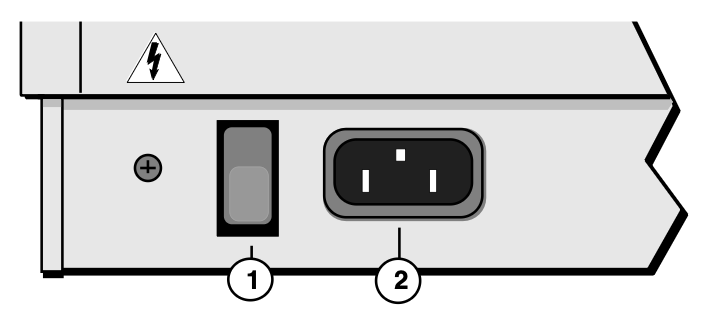
Insert the line cord into the line receptacle on the back of the TS‑10 (2), next to the power switch (1). Plug the other end of the cable into a grounded AC outlet. The proper voltage for your TS‑10 is listed on the Serial Number label on the rear panel. Turn the TS‑10 power on and make sure the display lights up. If not, check your connections and power source. The first thing the TS‑10 does when it starts up is calibrate the keyboard. Be sure not to touch the keyboard while the display reads CALIBRATING KEYBOARD - DO NOT TOUCH.
Like many modern electrical devices, your ENSONIQ product has a three-prong power cord with earth ground to ensure safe operation. Some products have power cords with only two prongs and no earth ground. To ensure safe operation, modern products with two-prong power cords have polarized plugs which can only be inserted into an outlet the proper way.
Some products, such as older guitar amplifiers, do not have polarized plugs and can be connected to an outlet incorrectly. This may result in dangerous high voltages on the audio connections that could cause you physical harm or damage any properly grounded equipment to which they are connected, such as your ENSONIQ product.
To avoid shock hazards or equipment damage, we recommend the following precautions:
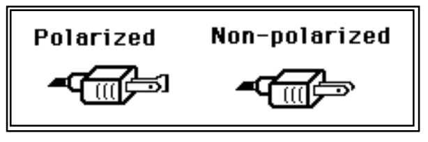
AC outlet testers are available from many electronic supply and hardware stores. These can be used to check for proper polarity of outlets and cords.
Sometimes currents flowing through the ground line generate a signal seen by another part of the circuit sharing the same ground. In other words, if there are two identical signal paths within a circuit, they can form a loop which can result in hum and/or noise. If you are using equipment that has 3-prong “grounded” AC power cords, you may suffer from a ground loop resulting from the interconnection of this equipment. The following diagram shows how cascading or “chaining” the output of one 3-prong grounded system into the input of another 3-prong grounded system with a standard unbalanced 2 conductor cord (like a 1/4” guitar cable) can result in a ground loop.
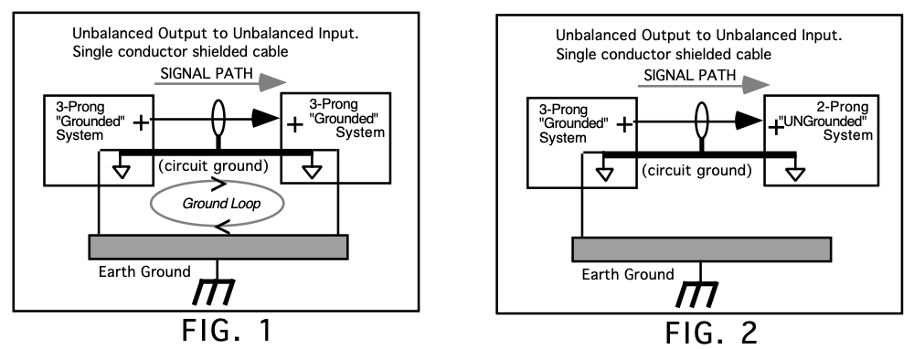
Fig. 1 depicts a system interconnection where a ground loop can exist. Fig. 2 depicts a system interconnection where a ground loop does NOT exist. When interconnecting 3-prong grounded systems, you can use signal isolation transformers to prevent ground loops. This coupling transformer effectively isolates two interconnected system signal grounds, while still allowing the signal to pass through.
As with any computer device, the TS‑10 is sensitive to sharp peaks and drops in the AC line voltage. Lightning strikes, power drops or sudden and erratic surges in the AC line voltage can scramble the internal memory and, in some cases, damage the unit’s hardware. Here are a few suggestions to help guard against such occurrences:
In addition to protecting against surges and spikes, a line conditioner guards the equipment against excessively high or low line voltages. If you use the TS‑10 in lots of different locations with varying or unknown AC line conditions, you might consider investing in a line conditioner.
The inner workings of the TS‑10 contain a substantial amount of computerized and electronic circuitry that can be susceptible to damage when exposed to extreme temperature changes.
When the TS‑10 is brought inside after sitting in a cold climate (i.e. the back seat of your car), condensation builds up on the internal circuitry in much the same way a pair of glasses fogs up when you come inside on a cold day. If the unit is powered up as this condensation occurs, components can short out or be damaged. Excessively high temperatures also pose a threat to the unit, stressing both the internal circuits as well as the case. With this in mind, it is highly advisable to follow these precautions when storing and setting up your TS‑10:
Connect the Main Audio Outputs of the TS‑10 to the line level inputs of a mixer, instrument amplifier, stereo, or any other sound system, using 1/4 inch audio cables. For an additional set of dry outputs, connect the AUX Outputs to two more mixer channels. If your system is stereo, connect the Left and Right Main Outputs to two channels of your mixer, stereo, etc. If it’s mono, use either of the Audio Outputs, but make sure nothing is plugged into the other output. For listening through headphones, plug the phones into the rear-panel jack marked Phones. If you’re running the TS‑10 through a mixer, in stereo, be sure to pan the left mixer input fully left, and the right input fully right.
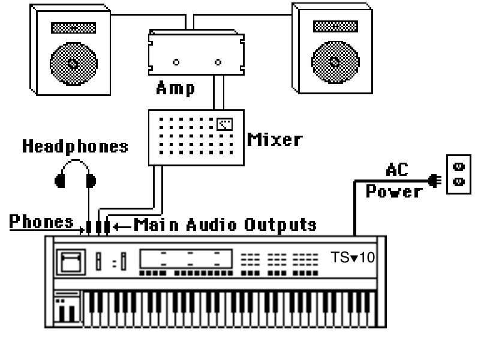
It is a good idea to make sure your audio system is turned off (or down) when making connections, to avoid damaging speakers or other components.
The TS‑10 outputs are line-level, and are intended to be connected only to line-level inputs, such as those on a mixer, stereo pre-amp, keyboard amp, etc. Connecting the TS‑10 audio outputs to a mic-level input, such as a guitar amp or the microphone jacks on a tape deck, is not recommended, and might result in damage to the device input.
Move the Volume Slider all the way up. As with any digital musical instrument, the TS‑10 will give the best results if you keep the volume slider full on, and use the volume control on your mixer or amp to adjust its level.
Switch the audio system on, and adjust the amplifier volume for normal listening levels. If you hear no sound while playing the keyboard, switch the audio system off and check your connections.
If you are thinking about amplifying your TS‑10 through your home stereo, a word of caution. A home stereo is great for playing CDs, albums, tapes — the dynamic range of these media is limited, and your speakers aren’t usually subjected to extreme volume changes and frequency transients. While the dynamic range of CDs is significantly greater than albums or tapes, the output of a CD player is still conservative compared to the uncompressed, unlimited line-level output of a pro-level keyboard. Running your TS‑10, or any pro-level keyboard through a home stereo at high volume levels can damage your speakers, not to mention the impedance mismatch this can create. If your only means of amplification is your home stereo, then try to keep your levels on the conservative side.
Just as you would power up the individual components before turning on the amplifier in your home stereo system, you should first turn on the MIDI data transmitting source (keyboards, modules, etc.) before you power up the receiving MIDI source. This will prevent any unwanted MIDI information from being “spit” out of the transmitting source during power up, which could confuse the MIDI receivers, thereby disabling them. If this should occur, turn off the receiving module, and then turn it back on.
The Auto-Load feature allows you to automatically load Sampled Sounds back into the same Bank location(s). If you have loaded any Sampled Sounds or Sample Edits into the TS‑10 and then powered down, the display shows the following prompt:
| AUTO-LOAD ALL SAMPLED SOUNDS | *YES* | |
| *NO * | ||
If you answer*NO* to the Auto-Load prompt, the TS‑10 will display the last Sounds or Preset Bank page, and no Sampled Sounds will be automatically loaded.
If you answer *YES* to the Auto-Load prompt, WORKING... is momentarily displayed when the TS‑10 is preparing to load Sampled Sound files, then it will automatically load any needed files from the current disk in the disk drive, and from any connected SCSI Storage Devices.
For more information about the Auto-Load feature, see Section 14 — Understanding Sampled Sounds.
The TS‑10’s built-in disk drive is used to store all your Programs, Sampled Sounds, Presets, System set-up, and Sequencer data, as well as System Exclusive messages from other MIDI devices. The TS‑10 uses a Quad-density disk drive that can store 1600 Kilobytes of data on a Double-Sided High-Density (DSHD) 3.5” micro-floppy disk and 800 Kilobytes of data on a Double-Sided Double-Density (DSDD) 3.5” micro-floppy disk. The disks are enclosed in a protective plastic carrier with an automatic shutter to protect the diskette from physical damage. It is important not to alter this carrier in any way.

Floppy disks are a magnetic storage medium, and should be treated with the same care you’d give important audio tapes. Just as you would use high quality audio tapes for your important recording needs, we recommend using high quality floppy disks for your TS‑10. Here are a few Do’s and Don’t’s concerning disks and the disk drive.
The great power and flexibility of the TS‑10 lies in the fact that it is really a computer disguised as a keyboard instrument, but a computer nonetheless. The software that operates the TS‑10 is very sophisticated. If you have ever used a computer, you should be familiar with the need to occasionally re-boot your system when you get an error message, etc. Reinitializing the TS‑10 is the equivalent of re-booting your computer.
There are a number of things that can happen to the TS‑10 (or any computer system) which might scramble the system software — voltage surges, power failures, static electricity, etc. As with any computer, very infrequently some unforeseeable event or combination of events can cause the software to become confused, with strange and unpredictable results. Sometimes, computers that appear to be broken have no hardware problem, just corrupted data in the internal RAM (Random Access Memory). In some cases, simply turning the TS‑10 power off and then on again will cure the problem. If that doesn’t work, perhaps what is needed is to reinitialize the unit.
If your TS‑10 begins to behave in peculiar ways; if the display shows words or lines that shouldn’t be there; if you start getting unexplained System Error messages; if the sequencer and edit functions start doing unpredictable things; try reinitializing the TS‑10 ("factory reset")before you seek service.
When you reinitialize your TS‑10, all your custom sounds, presets, and sequences in RAM will be lost. Therefore good backup habits should be an important part of your routine. Save any important data to disk before reinitializing the TS‑10.
If reinitializing your TS‑10 does not correct the problem, then contact an Authorized ENSONIQ Repair Station.
The reason that the TS‑10 “remembers” programs, presets and other parameters, even when the power is off, is that all of its internal RAM is “battery-backed-up.” The battery that keeps the TS‑10 memory intact is located inside the TS‑10, and when it becomes discharged, it must be replaced by an Authorized ENSONIQ Repair Station.
The battery that came in your TS‑10 is good for up to five years of life. You will know when it needs replacing, because the TS‑10 will tell you so. One day you will switch the power on, and instead of its usual wake-up message, the display will read:
| WARNING -- LOW BATTERY VOLTAGE | ||
| SAVE DATA - SEE USER MANUAL *CONTINUE* | ||
Press *CONTINUE* (or any button) to commence normal operation. Then, make sure that all presets, programs, and sequences are saved to disk, and take the TS‑10 to an Authorized ENSONIQ Repair Station as soon as possible to have the battery replaced.
These optional accessories are available from your Authorized ENSONIQ Dealer:
Performance / Composition Synthesizer · Version 3.0
This section provides an introduction to the TS‑10’s many controls and rear panel connections, a conceptual overview of the system, and a discussion of editing various types of parameters. We suggest you read this section carefully — it will help you get the most out of your TS‑10.
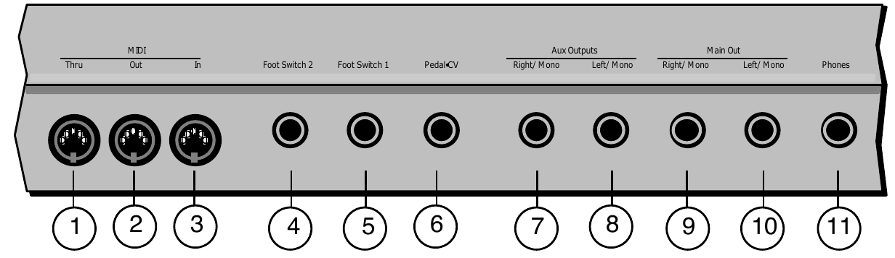
“Passes on” all MIDI (Musical Instrument Digital Interface) information received by the TS‑10 to other MIDI devices. Information generated by the TS‑10 itself does not go to this jack — the Thru jack merely echoes what comes into the MIDI In jack.
Sends out MIDI information generated by the TS‑10 keyboard and/or sequencer to other instruments and computers.
This jack receives MIDI information from other MIDI instruments or computers.
These two independent foot switch jacks support either a single (mono) or dual (stereo) foot switch, and can be assigned to a number of different functions, allowing a total of four independent foot switch controllers (when two optional SW-10 Dual Foot Switches are connected).
When either type of foot switch is plugged into the Foot Switch 1 or Foot Switch 2 jack, it is completely programmable (on the System page), and can be used for sustain, sostenuto, Patch Select control, preset up/down, effect modulation, or sequencer control.

There are four parameters on the System page that let you assign the foot switches to a variety of functions. When a single foot switch is connected, set the left foot switch to *UNUSED* on the System sub-page. For more information about assigning the foot switches, refer to Section 2 — System Page Parameters.
This jack is for connecting an optional ENSONIQ Model CVP-1 Control Voltage Foot Pedal, which is assignable as a modulator to various parameters within the TS‑10. The pedal gives you a handy alternative modulation source when, for example, you would want to use the ModWheel but both hands are busy.
A CV pedal plugged into this jack can also act a volume pedal, CVP-1 controlling the volume of the currently selected sound(s). A Control Voltage Foot Pedal parameter on the System page (press System, then underline PEDAL=VOL/MOD), determines whether the CV pedal will act as a modulator or as a volume pedal. Set to PEDAL=VOL to use the CV pedal to control volume.
Pedal/CV Specs:
For use with an external control voltage, use a 2-conductor cable with the voltage on the tip and the sleeve grounded.
The AUX Outputs provide an additional stereo output for use in mixing down sequences, etc.
The AUX Outputs contain the dry (no effects) signal only, allowing you to process and mix certain sounds separately. TS‑10 sounds can be routed to the AUX Outputs from the Track Effects page, or individual voices can be set to the AUX Outputs from the Output page. When using the AUX Outputs in stereo, connect these outputs to two separate channels of your mixer and pan them left and right. If you want to have a mono AUX Output, make sure that only one of the AUX Out jacks is connected.
The Main Out jacks contain the wet (effected) output of the TS‑10’s effects processor. Any sounds or individual voices routed to FX1, FX2, or DRY will be routed to the Main Outs. To operate the TS‑10 in stereo, connect these outputs to two discrete channels of your mixer and pan them left and right. Note that either of the Main Outs can be used as a mono output. If you want to listen to the main output in mono, make sure that only one of the Main Out jacks is connected.
To listen to the TS‑10 in stereo through headphones, plug the phones into this jack. The Phones output contains a mix of the signal from the Main Outputs and the AUX Outputs. Headphone volume is controlled by the Volume Slider on the front panel. Note that plugging headphones into this jack does not automatically turn off the audio in the Main Outputs or AUX Outputs.
Almost everything you do on the TS‑10, whether it’s selecting a sound, editing that sound, adjusting the tuning, etc., is controlled from the front panel using the following controls:

This controls the overall volume of the TS‑10 audio outputs.
The Data Entry Slider and the Up and Down Arrow buttons to the left of the display are primarily used to select and modify things — sounds, parameters, keyboard touch, MIDI Control functions, etc. — all depending on which front panel button you press.
These 3 buttons are used to select the current mode; you will always be in one of these modes:
A BankSet is a collection (or “set”) of 10 Banks of Sounds or Presets. The BankSet button is used to select different BankSets in Sound and Preset Modes. Repeated presses of the BankSet button will scroll through all of the available BankSets.
The 80-character fluorescent display makes it possible to show information in Pages. Each time you press one of the front panel buttons, you are in effect “turning to” that function’s page. Once you have turned to the page you want, the display shows you which parameters are controlled from that page. Try pressing a few of the buttons — System, Mix/Pan, LFO, or Filters, for example, and watch the display. Notice that for each button you press, the display changes to show you information relating to that function. Each of these different display configurations is called a Page.
The six soft buttons above and below the display have a new function each time you select a new page — that is, each time you press one of the dedicated front panel buttons. Each of the six soft buttons is used to select whatever is directly above or below it on the display. Because their function varies depending on what is displayed, we refer to these buttons as Soft Buttons, to distinguish them from buttons which have fixed “hard” functions, such as the Track Parameters buttons to the right of the display.
In Sequencer mode, the ten Bank buttons (labeled 0-9) will select Sequencer banks. Each bank contains six sequencer locations, any of which can contain a sequence or a song, or may be blank.
In Presets Mode, the ten Bank buttons (labeled 0-9) will select Preset banks within the current BankSet. Each bank contains six preset locations. Pressing the BankSet button will change the current BankSet, and the Bank buttons will now select Preset banks within the newly selected BankSet. There are five different BankSets of Preset Banks (two in User RAM, three in ROM), for a total of 300 different presets.
In Sounds Mode, the ten Bank buttons (labeled 0-9) will select Sound banks within the current BankSet. There are three different kinds of sound banks within the TS‑10. Each User RAM program bank contains six sound locations. Each ROM program bank contains six sound locations. Each Sampled Sound bank contains one sound location. We call these Sound Bank pages. Pressing the BankSet button will change the current BankSet, and the Bank buttons will now select Sound banks within the newly selected BankSet.
This symbol appears in several places on the front panel , and helps to identify buttons that offer a special "double-click" (pressing two times rapidly) feature. These are:
The method used to modify or edit sounds, presets and system parameters is called Page-driven Parametric Programming, which sounds like a mouthful, but don’t worry. Once you’ve grasped a few basic concepts, you’ll find that operating the TS‑10 is quite simple, given its many capabilities.
It is likely that you have already encountered some form of parametric programming on other synthesizers. What this means is that instead of having a separate knob or slider for each function, you have one master Data Entry Slider, and two Arrow buttons, which adjust the value of whichever parameter you select. This approach has many advantages, the most obvious is that it greatly reduces the amount of hardware — knobs, switches, faders, etc. — needed to control a wide variety of functions. (If the TS‑10 had a separate control for each function, it would literally have hundreds of knobs.)
Some of the TS‑10 pages contain more that one screen of information. Repeatedly pressing the same page button will cycle through the sub-pages.
Suppose you want to adjust the master tuning of the TS‑10. Press the front panel button labeled System. The display now shows the System page:
| SYSTEM | TUNE=+00 | PITCH-BEND=02 | |
| TOUCH=VELTBL-4 | VEL-MAX=127 | PRESS=MED | |
In the top left-hand corner of the display you will always find the name of the page that corresponds to the button you pressed. To the right and below the page name are various parameters and commands that can be selected and modified from this page.
To raise or lower the tuning of the TS‑10, press the soft button directly above where it says TUNE=+00. This segment of the display will now be underlined, telling you that it has been selected, and can be modified.
The currently selected parameter on a page is always underlined.
Once you have selected a parameter to be modified, use the Data Entry Slider and the Up/Down Arrow buttons to the left of the display to adjust its value:
Continuing to hold down either button will cause it to accelerate and run quickly through the values.
To select and modify another parameter on the same page, press the soft button above or below its name. That parameter will now be underlined, and its value can be adjusted as before, with the Data Entry Slider and the Up/Down Arrow buttons.
If you select another page, change some parameter on that page, and then return to the System page, the parameter you had last selected will still be underlined. The TS‑10 always “remembers” which parameter was last selected on a given page (including each sub-page).
Be sure that the parameter you want to edit is selected before moving the Data Entry Slider and/or the Up/Down Arrow buttons. There is always a parameter selected on any given programming page.
Sometimes the soft buttons are used to select values in “multi-field” parameters. For instance, in Sounds or Presets mode, press the Tuning button. Press the soft button beneath the Transpose parameter for any sound. Notice that the first field of the Transpose parameter (the Octave field) is selected. Press the same soft button again. This selects the Semitone field of the parameter.
Successive presses of the soft button closest to the values moves the cursor from one field to another.
The TS‑10 features a number of real-time performance controllers which are used to modify sounds as you play for maximum expressiveness. Three of the most important controllers are located to the left of the keyboard:

Another important controller is Pressure. Pressure (often called after-touch) is a modulator that allows you to change the sound in various ways by pressing down harder on a key or keys after the initial keystrike. The TS‑10 keyboard is capable of generating two types of pressure — Channel Pressure and Poly-Key™ Pressure.
Like the mod wheel or foot pedal, pressure is a modulator, and can be chosen wherever a modulator is selected in the Programming section of the TS‑10. Pressure can be assigned to alter the pitch or volume of voices, the filter cutoff frequency, LFO rate or depth, pan location, etc.
There are two types of Pressure:
Most MIDI instruments which currently implement pressure send and receive only channel pressure. If you are playing such an instrument from the TS‑10, you should set the TS‑10 to send channel pressure. (Note that some devices, including all ENSONIQ products respond to both types of pressure.)
Each preset or sequencer track can be programmed to generate Poly-Key pressure, channel pressure or none at all. If you wish to change the pressure type for a given track, you can do so on the second sub-page of the Performance Options page in the Track Parameters section of the TS‑10.
Note that Poly-Key pressure generates a tremendous amount of data, and will consume sequencer memory much faster than other types of events, such as notes and program changes.
You should turn pressure off when sequencing instruments which do not respond to pressure, such as piano and drum sounds.
Each TS‑10 internal sound (ROM and User RAM) is a complex structure consisting of up to six voices per key and a programmable effects setup. We refer to these internal sounds as Programs.
Sounds that were created with a sampling keyboard (and are not internal—i.e.: must be loaded from disk after power-on) are referred to as Sampled Sounds. In this manual, we will use the word sound to describe both Programs (ROM and User RAM), as well as Sampled Sounds.
As it comes from the factory, the standard TS‑10 has 300 different sounds:
Like the User RAM programs, the ROM programs are contained within the TS‑10; but unlike the User programs, they cannot be modified or replaced.
| BankSet U0 | 60 Programs | 60 Presets |
| BankSet U1 | 60 Programs | 60 Presets |
Sounds and Presets stored in User RAM Memory can be played, edited, and replaced with other sounds or presets.
| BankSet R2 | 60 Programs | 60 Presets |
| BankSet R3 | 60 Programs | 60 Presets |
| BankSet R4 | 60 Programs | 60 Presets |
Sounds and Presets stored in the ROM Memory locations can be played and edited, but cannot be erased. Edited versions can be stored in User RAM.
| BankSet S8 | 10 Sampled Sound Banks (from the factory) |
| BankSet S9 | 10 Sampled Sound Banks (requires expansion SIMMs) |
Sampled Sounds are stored in Dynamic RAM, and will not be saved internally when the TS‑10 is turned off.
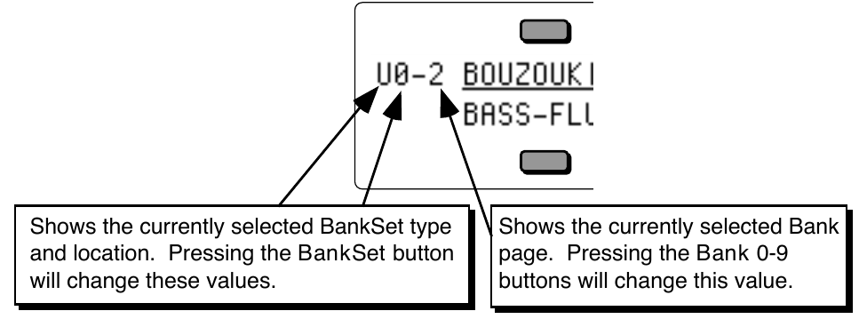
The BankSet button is used to scroll through the available BankSets. The display will change with each press, showing the currently selected BankSet. In the top left corner of the display, you will find the BankSet type and location, and the currently selected bank page.
Once you have selected a User RAM, ROM, or Sampled Sound BankSet, select a sound using the ten Bank buttons and the soft button closest to the sound name as shown previously.
When you first turn the power switch on, the TS‑10 boots-up in Presets mode (selecting the first preset in U0-0). This is designed to demonstrate the performance capabilities (stacking, layering, splitting, etc.) of the TS‑10.
To select a TS‑10 sound:
To layer (or stack) any sound with the currently selected sound, double-click the soft button corresponding to the sound name on the display. The underline beneath the name of the layered sound will flash and you will hear both sounds playing together.
Up to three sounds (one selected and two layered with it) can be active at once. To de-select a layered sound, press its soft button again and the flashing underline will disappear. If you already have two sounds layered with the primary sound, and you double-click on a fourth sound, that sound will replace the most recently layered sound in the stack.
If two tracks are layered, selecting a new primary track that has a KEY ZONE that does not overlap the layered track will not de-select the layered track. You can layer any combination of User RAM, ROM, or Sampled Sounds. Also, the sounds that are layered do not have to be in the same BankSet or bank.
We refer to the sound which is currently selected (solidly underlined on the display) as the primary sound. Any other sounds that you double-click are considered to be layered with the primary sound. Only one sound is ever selected at a time. Whenever you select a new sound it becomes the primary sound.
This is an important concept, because the primary sound determines which Effects set-up will be used for layers and presets. Whenever you select a new primary sound in Sounds mode, a new effects algorithm is loaded along with it (unless the new sound has the same effect and settings as the previous one). Note however that layering a sound or selecting a different sound in Presets mode does not change the current effects set-up.
When you press the Replace Track Sound button (its LED is lit), you can press the Up or Down arrow buttons to scroll through Programs that have the same defined Program Type (as defined on the Program Control page). This is a great way to hear all available variations of a particular type of sound, and it is very useful in auditioning similar sounds for a sequence or song track.
Note that you can audition the sounds as the sequencer plays, but to make the changes permanent, you must first stop the sequencer.
Here’s how to select Programs that have the same defined Program Type in Sounds mode. For this example, load the 120-PROGRAMS file called USERBNKS V2 from the TSD-200 disk that came with your TS‑10, before continuing with the following steps:
| U0-0 | GENESIS | GRAND-PIANO | ELEC-KEYS |
| MIST | MULTI-BASS | THE-GROOVE | |
| PROGRAM | TYPE=ACPIANOS | OPTION=*-NONE-* | |
| PRESS=CHAN | PATCH=LIVE | RESTRIKE=20 | |
When GRAND-PIANO is selected, SoundFinder will allow us to view all Programs assigned to the ACPIANOS Program Type.
| R2-0 | BABY-GRAND | FULL-BODY | BRITE-PNO |
| STEREO-PNO | WARM-GRAND | ALL-PURPOSE | |
| R2-0 | BABY-GRAND | FULL-BODY | BRITE-PNO |
| STEREO-PNO | WARM-GRAND | ALL-PURPOSE | |
There are two main performance modes in the TS‑10; Preset mode, which has 3 tracks, and Sequencer mode, which has 12 tracks. In the TS‑10, the term track refers to a “channel” that contains a sound and a complete set of track performance parameters, including mix, pan, controller settings, MIDI channel, keyboard zone, and others. The 3 tracks in a preset, and 12 in a sequence, give you access to 15 internal tracks, each one independent of the others. Song mode offers 24 tracks (combined with the presets mode, you can have a total of 27 tracks). The difference between sequence and preset tracks is that you can record data on sequencer tracks and not on preset tracks.
Multi-channel audio tape recorders have numerous physical tape tracks onto which you can magnetically record complex polyphonic information. Sequencers simulate this by recording events which describe a performance onto similar tracks in computer memory. When these sequence tracks are played back, the recorded information can either play local sounds or can be sent to remote MIDI devices to recreate the performance. Multi-timbral MIDI instruments can respond to inbound information from such sequencers on multiple channels, with each channel responding independently to a track from the sequencer.
When the TS‑10 is used as a multi-timbral sound generator, played from its own sequencer, the various tracks of the sequencer control the sounds played by the TS‑10. Similarly, the sequencer and/or the keyboard of the TS‑10 can be used to transmit on MIDI channels to which external MIDI devices are connected.
When the TS‑10 is controlled from an external MIDI sequencer, the various tracks of the sequencer can be assigned to different MIDI channels, which in turn control the programs played by the TS‑10. Each MIDI channel that the TS‑10 responds to can be thought of as an extension of the sequencer’s track.
Whether it is playing locally, sending MIDI to a remote device, or receiving MIDI from an external sequencer, we describe this logical construct, comprised of a sound, a MIDI channel, and various performance parameters, as a track.
The TS‑10 has the ability to read and edit sample sound files created for the EPS, EPS–16 PLUS, and the ASR-10 samplers. Sampled Sounds (as they are called in the TS‑10) are stored in Dynamic RAM, and are not saved when the TS‑10 power is turned off. From the factory, the TS‑10 has two internal SIMMs, and provide 2 Megabytes of 16-bit sample RAM.
For more information about loading, selecting, and using Sampled Sounds in Presets, Sequences and Songs, see Section 14 — Understanding Sampled Sounds.
The TS‑10 offers two SIMM options:
Performance / Composition Synthesizer · Version 3.0
These parameters control instrument-wide system functions. The settings of these parameters will remain in effect at all times and are preserved while the power is off. You can back-up the settings of the System Page parameters for quick recall by saving the System Set-up on the Storage page (see Section 13 — Storage for more information).
The System Page has three subpages. Press the System button to display the first sub-page:
| SYSTEM | TUNE=+00 | PITCH-BEND=02 | |
| TOUCH=VELTBL-4 | VEL-MAX=127 | PRESS=MED | |
Adjusts the overall master tuning of the keyboard up or down as much as one semitone. A value of +00 will set the TS‑10 to concert A=440 tuning.
Adjusts the system pitch bend range, which is the maximum amount of pitch bend that can be applied with the pitch wheel. Each increment represents a semitone.
The bend range will apply to all programs except those which have been programmed to override the system bend range. If you adjust the system bend range, and a program does not seem to pitch-bend the correct amount, check the setting of the BEND parameter on the Pitch Mods page for each voice in that particular program. If BEND=SYS, then the program uses the system bend range. Otherwise, the program has its own bend range and will ignore the system bend range.
The “H” suffix on the semitone value indicates that Held Pitch Bend mode is active. In this mode, only keys that are actually being held down will be affected by the pitch bend wheel.
Allows you to adjust the velocity response of the keyboard to match your playing style and technique. All velocity curves affect both internal dynamic response and the velocity values transmitted via MIDI. There are 9 velocity response (Touch) settings, which offer a lot of control for a wide range of playing styles:
This parameter determines the maximum keyboard velocity value that will be recognized and transmitted by the TS‑10. The default setting is 127, which allows for the normal full range of velocity values. Lower settings limit the maximum value that will be used internally and sent out via MIDI. This can be useful when controlling devices which do not respond to the full range of velocity values, or can be used in conjunction with the TOUCH parameter to control just the top part of the velocity response curve. When TOUCH=FIXED-64 or 127, this parameter can be used to set the fixed velocity to any value.
Allows you to adjust the pressure threshold of the keyboard to match your playing style and technique. PRESS affects both internal pressure response and the pressure values transmitted via MIDI. When set to SOFT, the least amount of pressure is required to generate channel or Poly-Key (polyphonic aftertouch) pressure. Similarly, HARD requires the greatest amount of pressure to generate channel or Poly-Key pressure.
Press the System button again to display the second sub-page:
| SYSTEM | FOOT-SW1-L=*UNUSED* | R=SUSTAIN | |
| PEDAL=VOL | SW2-L=*UNUSED* | R=*UNUSED* | |
When the optional SW-10 Dual Foot Switch is plugged into either Foot Switch jack, the settings of these parameters will control the function of the pedals. You can even use two SW-10 Dual Foot Switches plugged into both Foot Switch jacks, and have four completely independent controllers.
If you are using the single SW-2 Foot Switch which came with the TS‑10, you should keep both left foot switch parameters set to *UNUSED*, and assign the right foot switch parameters to the desired function. The list of available parameters are:
When the next preset is in a different BankSet and/or bank, the preset BankSet and/or bank will also be switched. For example, at preset #59 of RAM Bank U0-9, it jumps to preset #00 of User RAM Bank U1-0. At preset #59 of User RAM Bank U1-9, it jumps to preset #00 of ROM Bank R2-0. At the end of the ROM banks, it jumps back to User RAM Bank U0-0.
Determines whether the optional CVP-1 foot pedal will act as a volume pedal or a modulator:
Press the System button again to show the third sub-page:
| SYSTEM | SLIDER=NORMAL | VOICE-MUTING=ON | |
| MIDI-TRK-NAMES=OFF | KBD-NAMING=OFF | ||
Determines whether the Data Entry Slider will act as the Timbre or XCTRL modulator while on any Sounds or Presets bank page. This allows you to vary the Track Timbre or Track XCTRL setting of the primary selected sound without having to switch to the Timbre or XCTRL Track Parameter pages. Refer to Section 5 — Preset/Track Parameters for more information about the
Timbre modulator.
This parameter controls whether or not all voices currently playing will shut off when a new program or preset is selected. This lets you avoid any audible “glitch” or discontinuity as the new sound’s effect is loaded, but at the expense of being able to sustain a note from one sound while selecting and playing another.
This parameter determines whether preset and sequencer tracks will show the sound name or show *MIDI-CHAN-# instead of the sound name.
When this switch is ON, the keyboard can be used for name data entry. Whenever a naming field is active, pressing a key on the keyboard will enter the character assigned to that key, or move the cursor. The 36 white keys are the digits 0..9 and letters A..Z, while the black keys provide a repeating set consisting of cursor left, cursor right, and 3 punctuation marks (space, dash, and plus). Period, slash and star are only available using the Data Entry Slider or the Up/Down Arrow buttons
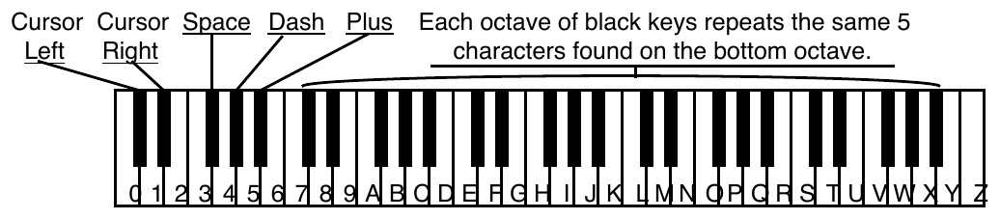
When KBD-NAMING=OFF, the characters on naming pages will be affected only by the Data Entry Controls and the Cursor Left/Right soft buttons.
Press the System button again to show the fourth sub-page:
| SYSTEM | PITCH-TABLE=NORMAL | ||
| WAKE-UP-MODE=DEFAULT | |||
This parameter allows you to set the system pitch-table to either a NORMAL (western 12-tone equal-temperament) or a CUSTOM (user-definable) pitch-table and affects all voices that have been programmed to use the SYSTEM pitch-table. For more information on pitch-tables, please refer to Section 8 — Understanding Programs.
This allows you to change the tuning while playing, without having to select a different sound.
In order for this feature to work correctly, you must set the system pitch-table switch to PITCH-TABLE=U1-PROGRAMS on the System page before “selecting” a new pitch-table program. If the program you indicate contains a valid pitch-table, it will be installed into the CUSTOM system pitch-table, and you will immediately hear the new tuning. If it does not, nothing will happen. In either case there will be no visible indication of your action. The program name will not be underlined when you “select” it, which is a good indication that you are using a pitch-table from a program in BankSet U1.
You may save programs (with or without pitch-tables) onto BankSet U1 in the normal way. It is suggested that you name programs that are to be used to install pitch-tables with names that describe the pitch-table they contain. For example, naming a program PT-PYTHA-F describes it as follows: PT for pitch-table program; PYTHA for Pythagorean tuning; and F for the tone center. This naming scheme is useful in making pitch-table programs easily recognizable.
In MIDI reception modes OMNI, POLY, and MONO A, incoming MIDI program changes 0 to 59 will select pitch-tables from BankSet U1, if PITCH-TABLE=U1-PROGRAMS on the System page. For more information about the MIDI MODE parameter, see Section 3 — MIDI Control Page Parameters.
By using the data entry controls, you can select from a large assortment of traditional, modern, ethnic, and exotic pitch-tables for use as the System pitch-table. These ROM pitch-tables are:
Here’s how to select and use the Internal ROM pitch-tables:
When the file has been loaded, the display will show DISK COMMAND COMPLETED.
Try the other pitch-tables in Bank 0 by pressing the other soft buttons. Continue by selecting pitch-tables in Banks 1 through 9. Each Bank contains six pitch-tables.
Using the above procedure, you can load the file named HIST PTABLS to try more pitch-tables.
Loading a full set of 60 pitch-tables into the TS‑10 internal memory in this way gives you the ability to select a variety of keyboard tunings in real-time while in the middle of a performance! Pitch-tables can even be remotely selected via incoming MIDI Program Changes.
This parameter determines which mode the TS‑10 will “wake-up” in after power-on.
Performance / Composition Synthesizer · Version 3.0
These parameters set instrument wide MIDI parameters, such as the Base Channel number and MIDI Reception mode, and control what types of MIDI messages are received and transmitted. The settings of these parameters will remain in effect at all times and are preserved while the power is off. This section also offers an introduction and overview of General MIDI, and explains how to use it with the TS‑10.
Whether you are simply linking two keyboards together, playing a synth from a guitar controller, or driving a rack of samplers from the TS‑10, MIDI makes it all possible.
The MIDI Control Page has three sub-pages.
| MIDI | BASE-CHAN=01 | GMIDI=OFF | SEND=TRACK |
| MODE=MULTI | VELS/XPOS=BOTH | XCTRL=002 | |
Selects the Base Channel on which the TS‑10 transmits and receives MIDI messages. System Exclusive messages are always sent and received on the base channel.
Any of 16 MIDI channels may be selected as the basic MIDI channel of the TS‑10. The effect of setting the base channel varies depending on the MIDI Mode and whether data is being sent or received.
| Transmit | The TS‑10 will transmit only on the Base Channel, and will ignore the channel assignments contained in the tracks. When Presets are selected, they will transmit the MIDI Program Change for the Preset, and not the Program Change values for the three Tracks. |
| Receive | In Poly mode — keys, controllers, and program changes are only recognized if received on the base channel. In Mono A mode, program changes are received only on the base channel. The base channel is also used in both Mono modes as the first channel of the 12 channel range. |
This is used to enter General MIDI mode. The TS‑10 completely conforms to the full General MIDI Specification. This allows you to play back any General MIDI-based sequence via incoming MIDI and always get predictable results. The General MIDI Sounds in ROM (listed later) are also provided on the in-box disk (TSD-300) that came with your TS‑10.
For a complete description of this mode, see Section 12 — Sequencing/MIDI Applications.
Controls the MIDI channel on which the TS‑10 will transmit performance information such as key and controller events, as well as program changes.
The TS‑10 will transmit on the channel(s) assigned to the track(s) being played, either from the keyboard or the sequencer, depending on the Track MIDI Status (i.e. nothing will be sent if a track is assigned to the ----/RECV or MIDI-OFF status). Each track can have its own MIDI channel.
This parameter determines how MIDI information will be received by the TS‑10. MODE has no effect on what MIDI information is transmitted.
There are five MIDI modes implemented in the TS‑10:
In MULTI mode, different MIDI channels must be selected for each Sequence Track that you want to receive via MIDI. This can be accomplished on the Track MIDI page. If more than one Sequence Track is set to the same MIDI channel, only the lowest numbered track will receive via MIDI.
In MULTI mode, independent of what tracks are stacked or selected on the front panel, the sounds you hear will depend entirely on what MIDI channel(s) the MIDI data is received on.
Mono mode is particularly useful for driving the TS‑10 from a guitar controller, or any other application where having up to twelve independent, monophonic channels is desirable. The TS‑10 offers two types of Mono mode operation. In both types, the TS‑10 will receive monophonically on twelve consecutive MIDI channels (the Base channel through Base channel +11). The difference has to do with how those MIDI channels are routed within the TS‑10.
Global controllers are controllers sent on one channel that affect all other channels simultaneously.
They can be useful in reducing the number of MIDI events required to achieve particular effects, and can thereby reduce the delays sometimes associated with overloading MIDI. Some guitar controllers can transmit global controllers, and the TS‑10 can respond to them.
In Mono mode (MONO-A or MONO-B) the base channel minus one becomes the MIDI channel for global controllers (pitch bend, pressure, etc.). For example, if the base channel is channel 3, any controllers received on channel 2 will be interpreted as global controllers and will affect all voices being played. If the base channel is channel 1, channel 16 becomes the channel for global controllers. Each track will also respond independently to controllers sent on its own channel. For example, each guitar string on a MIDI guitar can send independent pitch bend, while the “whammy bar” controller could be sent on the global channel to affect all voices.
Controls whether track transpose will affect the transmission/reception of MIDI key numbers, giving you more control over how the Track Parameter TRANSPOSE function will affect notes played on a track.
XPOS also controls how the Track VELS setting will affect MIDI transmission/reception of velocity, in accordance with the same rules that govern the Track TRANSPOSE parameter.
| Setting | Local Voices Affected | MIDI Reception Affected | MIDI Transmission Affected |
|---|---|---|---|
| SEND | Yes | No | Yes |
| RECV | Yes | Yes | No |
| BOTH | Yes | Yes | Yes |
Use XCTRL to assign an external MIDI Controller number to be both transmitted and received by the TS‑10. The number that is assigned here will be used as the MIDI Controller number that the XCTRL Track parameter will transmit on.
Most controllers on a synthesizer—mod wheel, channel pressure, or breath controller for example—have a MIDI controller number associated with them: this parameter can be set to match the MIDI Controller number of any controller in your rig. Doing so will make a particular external controller available as a modulator in any of your sounds.
One of the modulation sources that can be selected in the programming section is XCTRL. The value of the XCTRL parameter is a MIDI controller number, ranging from 000 to 127. When the Track XCTRL value is edited, parameters that have XCTRL assigned as a mod source will be modulated, and the TS‑10 will transmit the edited value(s) on the MIDI Controller number assigned to this parameter. When the TS‑10 receives MIDI Controller messages corresponding to this controller number, they will be routed to all parameters that have been programmed with XCTRL as a modulation source.
Suppose for example, you are playing the TS‑10 from a keyboard with a breath controller (or want to use a breath controller as a modulator when playing the TS‑10 keyboard). You can set up a program on the TS‑10 in which the filter cutoff frequency is modulated by XCTRL. If you then set XCTRL=02, the breath controller will now be able to modulate the filter, or whatever else has its modulation source set to XCTRL, in the program you have created.
The following controller numbers are commonly supported:
| Number | Controller | Number | Controller |
| 1 | Modulation Wheel | 64 | Sustain |
| 2 | Breath Controller | 66 | Sostenuto |
| 4 | Foot Pedal | 70 | Sound Variation (Patch Selects) |
| 6 | Data Entry MSB | 71 | Harmonic Content (Timbre) |
| 7 | Volume | 72 | Release Time |
| 10 | Pan | 73 | Attack Time |
| 12 | Effect Modulation | 74 | Brightness |
| MIDI | LOOP=OFF | CNTRLS=ON | SONG-SEL=OFF |
| ALL-OFF=OFF | START/STOP=ON | PROG-CHG=ON | |
The MIDI LOOP parameter controls how volume information is handled when a track’s status is set to LOCAL-OFF or MIDI-LOOP. It controls whether or not the Track MIX parameter, as adjusted in the Track Parameter section, will transmit via MIDI. It only affects tracks that have their MIDI status set to LOCAL-OFF or MIDI-LOOP. It is normally OFF, but in a MIDI loop setup, it should be ON.
When LOOP=OFF, then the MIX parameter is combined (multiplied) with the volume pedal setting to create a composite volume, which is then transmitted to external sound modules as MIDI controller 7. In a MIDI loop situation with a computer, this is undesirable, because lowering the MIX value will send controller messages that are indistinguishable from volume pedal messages. When this information is echoed by the computer, the TS‑10 receives it as volume pedal, lowering the volume on that track even further. Eventually this causes the volume to spiral down to zero, which in turn causes the track to be silenced, even though the displayed volume setting is greater than zero. Setting LOOP=ON will prevent this problem from occurring.
Note that the volume pedal is only active if PEDAL=VOL on the System page, and that volume pedal changes will always be transmitted as MIDI volume (controller 7).
With a MIDI loop setup, the MIDI Out of the TS‑10 is either directly or indirectly (through an external device such as a computer) connected to the MIDI In of the TS‑10. The MIDI-LOOP Track STATUS is optimized for use in a MIDI loop in which the TS‑10 will play back into itself.
Do not use the SEND/RECV Track STATUS setting with a MIDI loop present. To connect a TS‑10 track to a computer sequencer, the MIDI-LOOP setting should be used. In this type of setup, a computer in MIDI Thru mode forms a loop which echoes the MIDI information back into the TS‑10. See Section 5 — Preset/Track Parameters for more information about the Track MIDI STATUS parameter. See Section 0 — Understanding the Sequencer for information on recording into the TS‑10 sequencer in a MIDI loop.
This switch controls whether or not the TS‑10 will transmit and receive MIDI controllers — pitch bend, mod wheel, pressure, volume, sustain pedal, etc.
This determines whether the TS‑10 will send and receive MIDI Song Select messages.
Incoming MIDI Song Selects # 00-59 will select TS‑10 Sequencer locations # 00-59. Selecting Sequencer locations # 00-59 will always cause the TS‑10 to transmit MIDI Song selects # 00-59.
The All Notes Off message enable switch controls how the system will react to MIDI messages received on any MIDI channel.
This parameter determines whether pressing the Play and Stop/Continue buttons will transmit MIDI , and messages from the TS‑10 MIDI Out port. The TS‑10 will always receive Play Stop, and Continue messages via MIDI, regardless of the setting of this parameter, if CLOCK=MIDI on the Sequencer Control page. Some older drum machines have no way of disabling reception of these messages, and will always start playing their internal patterns when they receive a Start message. Set this parameter to OFF when you want to use such a drum machine simply as a voice module, played from a TS‑10 sequencer track, without starting its internal sequencer playing each time you press the Play button on the TS‑10.
This switch controls how the TS‑10 handles transmission and reception of MIDI program change messages.
Refer to the Track MIDI parameter description in Section 5 — Preset/Track Parameters and Section 10 — Understanding the Sequencer for more information on how program changes are handled.
The way in which the TS‑10 receives program changes is slightly more complex than some other systems, because of the large number of programs and presets that are available to be selected from MIDI program changes. The following chart shows how the TS‑10 receives MIDI program changes:
In OMNI, POLY and MONO-A modes (puts unit into Sounds/Presets mode):
| When… | Incoming MIDI Program Changes… | Will Select… |
|---|---|---|
| BankSet U0 is selected | 00-59 | User RAM Programs 00-59 |
| BankSet U1 is selected | 00-59 | User RAM Programs 00-59 |
| BankSet R2 is selected | 00-59 | ROM Programs 00-59 |
| BankSet R3 is selected | 00-59 | ROM Programs 00-59 |
| BankSet R4 is selected | 00-59 | ROM Programs 00-59 |
| BankSet S8 is selected | 0-9 | Sampled Sounds 0-9 |
| BankSet S9 is selected | 0-9 | Sampled Sounds 0-9 |
| BankSet U0 is selected | 60-119 | User RAM Presets 00-59 |
In MULTI and MONO-B modes (received on Seq/Song Tracks only):
| When… | Incoming MIDI Program Changes… | Will Select… |
|---|---|---|
| Track BANK=000 (BankSet U0) | 00-59 | (without FX) User RAM Programs 00-59 |
| Track BANK=001 (BankSet U1) | 00-59 | (without FX) User RAM Programs 00-59 |
| Track BANK=002 (BankSet R2) | 00-59 | (without FX) ROM Programs 00-59 |
| Track BANK=003 (BankSet R3) | 00-59 | (without FX) ROM Programs 00-59 |
| Track BANK=004 (BankSet R4) | 00-59 | (without FX) ROM Programs 00-59 |
| Track BANK=008 (BankSet S8) | 0-9 | (without FX) Sampled Sounds 0-9 |
| Track BANK=009 (BankSet S9) | 0-9 | (without FX) Sampled Sounds 0-9 |
| Track BANK=000 (BankSet U0) | 60-119 | (with FX) User RAM Programs 00-59 |
| Track BANK=001 (BankSet U1) | 60-119 | (with FX) User RAM Programs 00-59 |
| Track BANK=002 (BankSet R2) | 60-119 | (with FX) ROM Programs 00-59 |
| Track BANK=003 (BankSet R3) | 60-119 | (with FX) ROM Programs 00-59 |
| Track BANK=004 (BankSet R4) | 60-119 | (with FX) ROM Programs 00-59 |
| Track BANK=008 (BankSet S8) | 60-69 | (with FX) Sampled Sounds 0-9 |
| Track BANK=009 (BankSet S9) | 60-69 | (with FX) Sampled Sounds 0-9 |
As indicated in the above chart, in MULTI and MONO-B modes, adding 60 to the MIDI Program Change number for the desired sound will select the new sound and also install the effect from that sound into the sequence (or song) effect. This can be useful when controlling the TS‑10 from an external sequencer. Note that changing the effect will briefly silence the audio output and will cut off any sounding voices if VOICE-MUTING=ON on the System page.
| MIDI | SYS-EX=OFF | DEVICE-ID=01 | |
| SEND-PARAMS=OFF | |||
This switch determines whether the TS‑10 is able to receive incoming MIDI messages:
The Sys-Ex messages that are sent from the Storage, Sys-Ex, Send Dump pages can always be transmitted regardless of the setting of this switch. (Refer to the Appendix for more information about the TS‑10’s Sys-Ex implementation).
Allows Remote MIDI Devices to address the TS‑10 via incoming MIDI Sys-Ex without changing the base channel number. Think of this parameter as a higher level of identification. This is also used to identify Sys-Ex messages transmitted by the TS‑10.
When SEND-PARAMS=ON, the TS‑10 allows the transmission of parameter values via Sys-Ex messages. When OFF, there is no transmission of parameter values. For example, if you are editing a sound, set this parameter to OFF, to prevent a stream of MIDI Sys-Ex information from flowing between the TS‑10 and any connected Remote MIDI Devices.
Performance / Composition Synthesizer · Version 3.0
This section offers a basic overview of the concepts involved in selecting, creating, editing, and understanding TS‑10 Presets. For more detailed descriptions of the actual parameters, refer to Section 5 — Preset/Track Parameters.
A Preset is a combination of three sounds and an effects set-up that can be instantly recalled for use in performance. Presets are handy “performance memories” which allow you to create and save sound combinations, splits, layers, patch select variations, etc.
The three sounds in a preset reside on three Tracks. For each of these three tracks, the TS‑10 remembers:
A preset also has one Effects algorithm which is common to all three tracks.
The most common context for the TS‑10 to be in is Preset mode. Unless the TS‑10 is in Sequencer mode, you may assume that you are in a preset. Aside from the presets that are saved, there is a Preset Buffer that is always active. A preset buffer is a kind of storage location that is used to temporarily store information.
Whenever you select, layer or edit the Track Parameters for a sound, you are working within the preset buffer. The information in the preset buffer is temporary until you save it into one of the internal preset locations, and then it becomes permanent (it can be recalled). The track parameters of the preset, including mix, pan, transpose, etc. are always active and you should make sure that their settings are correct if you think that your programs are behaving strangely. Whenever you select a new sound from the Sound Bank pages, the track parameters are reset to their standard default settings. If you wish to change a program without resetting these parameters, use the Replace Track Sound feature described later in this section.
There are three Tracks in a “normal” preset and twelve tracks in a sequence or song. A sequence or song, in addition to its ability to record data on its tracks, can be thought of as a giant twelve-track “preset.” However, this giant “preset” is not available simultaneously with normal threetrack presets. The twelve tracks of a sequence or song are available from the keyboard only while in Sequencer mode — indicated by the LED above either Seq/Song Tracks 1-6 or 7–12 button being on. The twelve sequence or song tracks are always playable via incoming MIDI when the MIDI mode is set to MULTI (on the MIDI Control page).
Press Presets. The LED above the Presets button lights, indicating that you are in Preset mode.
The display shows you the currently selected bank of six presets, and the bottom left-hand corner of the display will show PSET. You can press the BankSet button and the ten Bank buttons (labeled 0-9) to select the various banks within Preset mode. Take a moment to select different presets by pressing the soft button closest to the preset (either above or below the preset name).
Since Preset and Program banks look very similar (both Presets and Programs have six 11- character names per page), the bottom left-hand corner of the display will show PSET when you are in Presets mode. This helps to differentiate between the two modes, as shown below:
| R2-0 | DIGIWARMTH | CHMBR-MUSIC | PLUCK-N-STR |
| PSET | SAMPLE+HOLD | WARM-PAD | OVERTURE |
Press the Presets button again. Across the top line, the display shows the names of the three sounds that are on the three tracks. On the lower line you see “context” information about the current preset. The illustration below shows the relationship of the preset and its three tracks to what you see on the display:
| The Preset Effect Algorithm and its related parameters | ||
|---|---|---|
| Track 1 | Track 2 | Track 3 |
|
|
|
| PSET | MEGASTRINGS | HYPER-LOOP | TENOR-SAX |
| -PRESET-00- | BANK U0-0 | *WRITE* | |
| Mix |
| Pan & Pan Mode |
| Attack* |
| Release* |
| Brightness* |
| Timbre* |
| External MIDI Control (XCTRL)* |
| Key Zone |
| Velocity Range |
| Velocity Sensitivity |
| Transpose |
| Detune |
| Rate* (LFO and/or Wave-List Duration) |
| Sustain On/Off |
| Sostenuto On/Off |
| Pitch Bend On/Off |
| Mod Wheel On/Off |
| Reset Controllers On/Off |
| All-Notes-Off On/Off |
| Patch Select mode* |
| Pressure mode* |
| Volume Pedal Mode |
| MIDI Status |
| MIDI Channel |
| MIDI Program |
| MIDI BankSelect |
| Effects Bus Routing |
| Effect Mod Control |
(* indicates saved with Programs)
Whenever the Presets LED is lit, it means that the TS‑10 is in Preset mode, and the ten Bank buttons beneath the display will select Preset Banks when you press them (rather than selecting Sound Banks, as they do when the Sounds LED is lit).
The TS‑10 offers 300 internal Presets:
In addition to the presets stored in memory, there is one more preset that you are using most of the time whether you know it or not. Whenever you are selecting or layering sounds in Sounds mode, you are also creating a preset. The TS‑10 automatically “remembers” the last three sounds you selected and stores them in a special memory buffer called the Preset Edit Buffer. Try this:
You have created a preset with three sounds playing simultaneously. Suppose you wanted to adjust their relative volumes, or shorten the release time, or change the pan location of one of the sounds without losing the combination. You can do all of these things and a lot more with presets.
In Preset mode, whenever you are hearing the Preset Edit Buffer, the preset name is shown as *-EDITED--*. You can always toggle between the edited and currently selected preset by pressing the soft button closest to the preset name.
As we have already discussed, a preset consists of three tracks, each of which has a sound and a set of track parameters. The track parameters are found in the Track Parameters section of the front panel. Presets can be saved, so that you can call them up at any time, or you can use the Preset Edit Buffer in real-time as a powerful performance tool.
While you still have three programs layered, press the Mix/Pan button in the Track Parameters section. The display shows:
| MIX | MEGASTRINGS | HYPER-LOOP | TENOR-SAX |
| 127 | 127 | 127 | |
On this and all Track Parameter pages, selecting or layering sounds from the upper line determines what sound(s) you hear, and selecting parameters on the lower line determines which track will be modified if you move the Data Entry Slider or the Up/Down Arrow buttons. Try pressing some of the other Track Parameters buttons — Tuning, Brightness, Key Zone, etc. — and adjusting the track parameters on those pages. You will soon see that within a preset, it’s easy to create splits and layers, transpose a sound, change the pan and many other useful things.
You can even assign one or more tracks in a preset to play only over MIDI, making presets a great tool for controlling remote MIDI instruments in combination with TS‑10 sounds.
Preset/Track Parameters provide easy access and control for track and sound attributes, and are used in mixing/manipulating sequencer tracks and in creating presets.
A group of Preset/Track Parameters is associated with each preset and sequencer track. These parameters control various aspects of the track, including some important and useful sound controls which may be easily adjusted during performance, or recorded into the sequencer. The settings of these parameters are saved with every preset. These instantly recallable presets include an effect setup and three programs on three tracks with a full set of programmable performance parameters, including key zones, transpositions, release times, timbral variations and others. The settings of all performance parameters on sequencer tracks are saved for each track while the power to the TS‑10 is off, and are always available.
The buttons which control the pages containing these parameters are found in the Track Parameters section of the front panel to the right of the display.
To view or adjust the setting of a particular type of track parameter, press the appropriate button in the Track Parameters section. The selected parameter type is indicated in the top-left corner of the display.
On the Track Parameter pages, the top line of the display will show the names of three programs and their current layering status. The name of the parameter type is abbreviated to four characters in order to make room for the program names, and is shown in the top left corner of the display. The bottom line of the display shows the current values of the selected parameter for the three tracks of the preset.
In Sequencer mode the current values of parameters for the six tracks (Tracks 1-6 or 7-12) will be displayed. You can press the Tracks 1-6 or 7-12 button again to toggle back and forth between the TRAX page which shows the names of the programs on the tracks and the last selected track parameter page which shows parameter values.
The currently selected track parameter will be underlined. This is the active parameter which will be modified. You may select a parameter for a different track by using the soft buttons.
When programming performance presets, the lower row of soft buttons is used to select tracks.
For sequencer or song tracks, both upper and lower soft buttons are used.
Remember that you can edit parameters on tracks that you are not hearing. The tracks that you can hear are indicated with solid or flashing underlines on their names.
Saving a Preset Once you have created a preset you like, you can save it to one of the 120 Preset locations in the User RAM memory (you cannot save presets or sounds to the ROM memory — it is read only).
Saving a preset to a User RAM location will erase the one that is currently there, so be careful.
To save a preset, first decide which User RAM BankSet and Bank location you want to save it to, then:
| WRITE EDIT PRESET | NAME=PRESET NAME | |
| *EXIT* | LEFT -CURSOR- RIGHT | |
| U0-0 | -PRESET-00- | -PRESET-01- | -PRESET-02- |
| SAVE | -PRESET-03- | -PRESET-04- | -PRESET-05- |
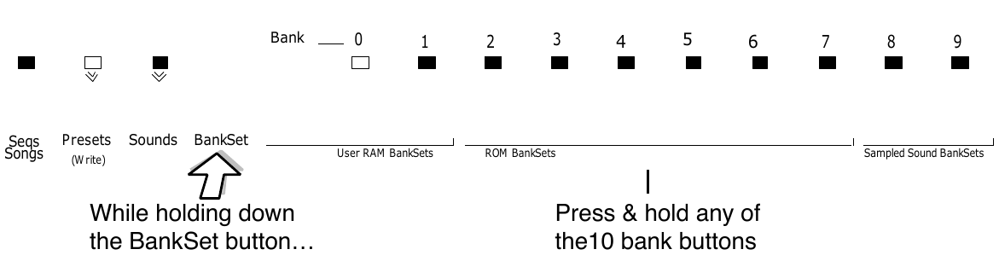
If you need to listen to a few presets in order to decide which one to replace, simply press the soft button beneath *EXIT* and then select presets just as you normally would. The word *EDITED* disappears from the screen, indicating that you are listening to saved presets. Your new preset is safe in the Preset Edit Buffer. But make sure you don’t edit anything in any of the presets you audition, including selecting or layering sounds in Sound mode, or this will create a new Edit Preset, erasing the one you created.
When you are ready to save the new preset, press the Presets button, and then the lower left soft button. You will be returned to the Edit Preset (the word *EDITED* should return on the display). Now you can save the preset as described above.
Whenever you create and save a preset, the TS‑10 only “remembers” the location of the three sounds in memory — not the actual sounds themselves. This is important to remember when you use User RAM programs in presets. If you move a sound, put another in its place, or transfer an entire BankSet of sounds, the preset might still be “pointing to” a location that no longer contains the sound you had in mind.
For example, if you create and save a preset containing a brass sound, a string sound and a piano sound, and you then write over the piano sound with a flute sound, the flute sound will now appear in the location originally occupied by the piano in your preset.
The REPLACE TRACK SOUND function is primarily used for:
Normally, when sounds are selected from the sound bank pages, they are transferred to a track in the Preset Edit Buffer, and many of the track parameters for that track are reset to standard default settings. However, you may wish to change which sound is assigned to a track in a preset without changing any of the other settings for that track. This is done using the Replace Track Sound feature in Presets Mode. The Replace Track Sound button is located next to the Seq/Song Tracks 1-6 and 7-12 buttons on the bottom row in the Track Parameters section.
The method described above is also used to change the sound assigned to a track in the current sequence or song. Unlike using Replace Track Sound in a Preset, using it in Sequencer Mode will update the track Program and Bank Select number to the correct value for the sound selected. See Section 10 — Understanding the Sequencer for more information.
Here’s how to scroll through Programs that have the same defined Program Type in Presets mode. For this example, load the 120-PROGRAMS file called USERBNKS V2 from the TSD-200 disk:
| R3-0 | AC-BS/PIANO | AC-BS/ORGAN | AC-BS/ELPNO |
| PSET | AC-BS/NYLON | AC-BS/VIBES | AC-BS/VOICE |
| MIX | UPRITE-BASS | FULL-BODY | SCORING-STR |
| 100 | 090 | 100 | |
In this Preset, FULL-BODY is the primary sound (solid underline) and UPRITE-BASS is layered (flashing underline) with it. In this scenario, we will use SoundFinder to audition other Programs that have the same Program Type as the FULL-BODY Program.
| MIX | UPRITE-BASS | FULL-BODY | SCORING-STR |
| 100 | 090 | 100 | |
| R2-0 | BABY-GRAND | FULL-BODY | BRITE-PNO |
| STEREO-PNO | WARM-GRAND | ALL-PURPOSE | |
You can replace the sound on a track and make its effect become the preset’s effect by double-clicking the Replace Track Sound button:
The following short cut for finding the locations of the sounds assigned to each Preset Track also shows the Display Location for each Program. For any Program or Preset Bank, the Display Locations are numbered as follows:
| R2-0 | BABY-GRAND | FULL-BODY | BRITE-PNO |
| STEREO-PNO | WARM-GRAND | ALL-PURPOSE | |
To find the BankSet, Bank and Display location (U0-1.5, U1-3.1, R2-7.4, etc.) for the sounds assigned to Preset tracks:
| R2-0 | DIGIWARMTH | CHMBR-MUSIC | PLUCK-N-STR |
| PSET | SAMPLE+HOLD | WARM-PAD | OVERTURE |
| PSET | R3-0.3 | R3-0.6 | R2-3.5 |
| DIGIWARMTH | BANK R2-0.1 | *WRITE* | |
The BankSet, Bank, and Display location for each of the track sounds are shown on the top line of the display.
| PSET | GLASS-KEYS | BEST-PAD | OL-FAITHFUL |
| DIGIWARMTH | BANK R2-0.1 | *WRITE* | |
When a Sampled Sound is assigned to a Preset Track, it follows the same rules as explained in "Finding the BankSet, Bank, and Display Location for Sounds on Sequencer Tracks", found in Section 10 — Understanding the Sequencer.
One of the most common uses of presets is a keyboard split, in which your left hand plays an "accompaniment" sound and your right hand plays a "solo" sound. This is easy to set up on the TS‑10 by layering the two sounds and assigning them different key zones. You can save this arrangement as a preset so that any time you select that preset, you’ll recall the keyboard split.
Since each track in the keyboard split has its own Transpose value, you are not limited to bass notes on the piano just because it’s on the bottom of the keyboard. Just set the key zone to the keys you want to play and then transpose the sound up or down until it’s playing in the range you want.
Once you have a keyboard split, you can change any of the sounds without affecting the split points by using the Replace Track Sound button.
All three tracks in each preset, and all twelve tracks in each sequence or song, share the same effects algorithm and settings. The effects settings for each preset is inherited from the primary (non-layered) selected sound, and any layered sounds in the preset will use that same effect. The effects settings for each sequence or song are inherited from the current sequencer effect at the time the sequence or song was created. If this effect is incompatible with other programs in the preset, sequence or song, there are several options:
When you press the Track Effects button from preset or sequencer mode, the first page that appears is the Track Effects Bus Routing page. On this page you can override the normal effects routing of the sound on each track. Subsequent sub-pages let you edit the effect for use in a preset, sequence, or song; these pages are identical to the effects programming pages under the Program Effects button. See Section 6 — Understanding Effects for more information on effect selection and programming.
Performance / Composition Synthesizer · Version 3.0
This section offers detailed descriptions of the commands and parameters used in selecting, creating, and editing Performance Presets as well as sequencer tracks. For an overview of the concepts involved, refer to Section 4 Understanding Presets.
The default settings for several of the Track Parameters are stored with Programs. These default settings are installed whenever a Program is put on the Track. Editing these values at the track level will not edit the default settings stored with the program. If you want to edit the values that are stored with a Program, they are available on the first sub-page of the Program Control page.
Unless otherwise noted in the detailed descriptions which follow, use the Up/Down Arrow buttons or the Data Entry Slider to adjust the value of the parameter.
| MIX | MEGASTRINGS | TAMBOUR | LOW-TAIKO |
| 127 | 127 | 57 | |
The Mix Page enables you to make volume changes to the individual tracks, allowing you to balance the TS‑10 sounds and/or control the volume of external MIDI devices. In sequencer mode, the MIX page has a special function which allows you to click or double-click on specific tracks to mute or solo them during playback of sequences or songs.
All tracks whose MIDI Status is set to SEND/RECV, SEND/----, VOICE-OFF, or LOCAL-OFF will send a MIDI message () with the indicated value whenever this parameter is edited. Sequencer and preset tracks will also send the current volume for each track when a sequence or preset is selected.
| PAN | MEGASTRINGS | HYPER-LOOP | GRUNGE-ORG |
| -64 STEREO | +06 -MONO- | +00 STEREO | |
The Pan Page gives you control over the placement of the track’s sound in a stereo field. A PAN setting of -64 is hard left, and +63 is hard right.
Press the soft button underneath the PAN value again to select either STEREO or -MONO-.
When -MONO- is selected, it will override the settings originally programmed on the Output page and force ALL of the voices of the sound to the new pan location. -MONO- is the optimal setting when using parallel effects, because it allows for discrete routing into the two components of the FX-1 effect. When this is set to STEREO, and the PAN is set to +00, the voices of a sound are panned according to the settings originally programmed on the Output page.
All tracks whose MIDI Status is set to SEND/RECV, SEND/----, LOCAL-OFF or VOICE-OFF will send a MIDI Continuous Controller message (controller 10) with the indicated value whenever this parameter is edited. Preset tracks will also send this controller message when a preset is selected.
| ATCK | MEGASTRINGS | HYPER-LOOP | TENOR-SAX |
| -04 | +00 | +63 | |
The Attack Page allows you to increase or decrease the attack time of the sound on a selected track. Attack time is the time it takes for the sound to be heard when the key is pressed. This is useful when you need to adjust the attack characteristics of a sound for a particular application without getting more deeply into programming. Higher values offer a longer attack time, and could be used to create a fade in effect.
In order for a Program to be controlled by this parameter, one or more of the envelopes in the Program must be programmed with the Envelope ATTACK parameter set to a value with a star (*) suffix. For example, if a voice’s ENV3 TIMES - ATTACK=50* instead of simply 50, then the attack time of Envelope 3 can be adjusted from the Track Attack parameter. It is typical to have at least Envelope 3 controlled by the parameter on this page.
The current value of Attack is saved with the sound whenever a sound is written, and is restored whenever the sound is selected or placed on a track.
All tracks whose MIDI Status is set to SEND/RECV, SEND/----, LOCAL-OFF or VOICE-OFF will send a MIDI Continuous Controller message (controller 73) with the indicated value whenever this parameter is edited. Preset tracks will also send this controller message when a preset is selected.
The default value of Attack is stored with the Program, and is restored whenever the Program is selected or placed on a track. The default value can be edited on the Program Control page. This parameter does not affect Sampled Sounds.
| RELS | MEGASTRINGS | HYPER-LOOP | TENOR-SAX |
| +00 | +00 | +63 | |
The Release Page enables you to increase or decrease the release time of the sound on a selected track. Release time is the time it takes for the sound to fade away when the key is released. This is useful when you need to adjust the release characteristics of a sound for a particular application without getting more deeply into programming. Higher values lengthen release time, lower values shorten release time.
In order for a Program to be controlled by this parameter, one or more of the envelopes in the Program must be programmed with the Envelope RELEASE parameter set to a value with a star (*) suffix. For example, if a voice’s ENV3 TIMES - RELEASE=50* instead of simply 50, then the release time of that Envelope 3 can be adjusted from the Track Release parameter. It is typical to have at least Envelope 3 controlled by the parameter on this page.
All tracks whose MIDI Status is set to SEND/RECV, SEND/----, LOCAL-OFF or VOICE-OFF will send a MIDI message () with the indicated value whenever this parameter is edited. Preset tracks will also send this controller message when a preset is selected.
The default value of Release is stored with the Program, and is restored whenever the Program is selected or placed on a track. The default value can be edited on the Program Control page.
| BRIT | MEGASTRINGS | HYPER-LOOP | TENOR-SAX |
| +00 | +00 | +00 | |
The Brightness page enables you to increase or decrease the filter cutoff frequency for each voice within the sound on a selected track. This is useful when you need to adjust the brightness of a sound for a particular application without getting more deeply into programming. Generally, higher BRIT values increase brightness, lower values decrease brightness (when FiILTER2=HI-PASS on the Filters Page, the functionality of the Brightness parameter is reversed).
In order a Program to be controlled by this parameter, at least one of the two Filter CUTOFF parameters for at least one voice in the Program must be programmed with the CUTOFF parameter set to a value with a star (*) suffix. For example, if a voice’s FILTER1 CUTOFF - CUTOFF=125* instead of simply 125, then the brightness of that voice can be adjusted from the Track Brightness parameter.
All tracks whose MIDI Status is set to SEND/RECV, SEND/----, LOCAL-OFF or VOICE-OFF will send a MIDI message () with the indicated value whenever this parameter is edited. Preset tracks will also send this controller message when a preset is selected.
The default value of Brightness is stored with the Program, and is restored whenever the Program is selected or placed on a track. The default value can be edited on the Program Control page.
| TIMB | MEGASTRINGS | HYPER-LOOP | TENOR-SAX |
| 000 | 127 | 000 | |
The Timbre page provides an easy way to make useful changes to the character of a sound without getting into more complex programming. This performance parameter uses the Data Entry Slider or Up/Down Arrow buttons to control various aspects of the sound, depending on what the programmer has decided would be useful.
As one of the voice modulation sources, Timbre can be assigned to any parameter that can be modulated in a sound or effect. The Timbre control can be connected to parameters such as filter cutoff, waveform modulation, LFO rate, and others. It is a good idea to experiment with the Timbre setting to hear what it has been programmed to do in each sound.
The Timbre parameter also controls the relative volume modulation amounts for each of the six program voices (assigned on the TIMBRE sub-page found on the Program Control Page). This allows you to determine how much louder or softer each voice will become as the Timbre modulation controller is increased or decreased.
All tracks whose MIDI Status is set to SEND/RECV, SEND/----, LOCAL-OFF or VOICE-OFF will send a MIDI message () with the indicated value whenever this parameter is edited. Preset tracks will also send this controller message when a preset is selected. This parameter does not affect Sampled Sounds.
The default value of Timbre is stored with the Program, and is restored whenever the Program is selected or placed on a track. The default value can be edited on the Program Control page.
| XCTL | MEGASTRINGS | HYPER-LOOP | TENOR-SAX |
| 000 | 000 | 091 | |
The External Control parameter transmits on a user-definable MIDI Controller number (set on the MIDI Control Page), and transmits the full range of 000 to 127. It will also modulate any voice or effect parameters that have XCTRL selected as a Mod Source. Any remote MIDI device that can transmit the same MIDI Controller number can act as a modulator by sending controller messages to the TS‑10.
All tracks whose MIDI Status is set to SEND/RECV, SEND/----, LOCAL-OFF or VOICE-OFF will send a MIDI message (on the controller number assigned to the XCTRL parameter on the MIDI Control page) with the indicated value whenever this parameter is edited. Preset tracks will also send this controller message when a preset is selected.
The default value of XCTRL is stored with the Program, and is restored whenever the Program is selected or placed on a track. The default value can be edited on the Program Control page.
| ZONE | CELLOS | PIANO | FLUTE |
| C2 -D3 | B2 -B4 | D4 -C7 | |
Each track has its own independent key zone within which the track will play. Key zones can be used to create simple two-program splits or to create more complex keyboard layouts. Key zones control which keys will be sent out via MIDI as well as which keys will play on the local voices of the TS‑10.
You can divide the keyboard into as many as twelve different key zones by using the twelve sequencer tracks. In addition, you can set the key zone so that each zone overlaps the next, producing “layered” zones in which you would hear the sounds from more than one track.
The illustration below shows an example of three tracks with overlapping key zones. The Piano is layered with, and partially overlaps, the Cellos on the lower end and the Flute on the upper end. The Key Zone settings for this example are shown in the sample display above.
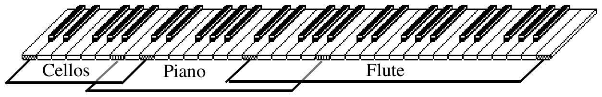
If you wish to change the zone, simply repeat the process.
The key zone is automatically reset to full range whenever you select a sound from one of the Sound Bank pages. When you select a sound using the REPLACE TRACK SOUND feature, the key zone setting is left unchanged.
Changing the key zone will not affect the playback of sequencer tracks (though it does affect what is recorded). Sequencer tracks will play all keys that were recorded, regardless of the key zone at the time of playback. To eliminate a key range from a track, use the ERASE function on the Edit Track page (explained in Section 11 — Sequencer Parameters).
If the key zone is accidentally set to a range where the High Key is below the Low Key, then the track will not play. To correct this situation, you can re-program the zone manually or you can reselect the sound from the Sound Bank page, which will automatically reset the key zone to the sound’s original range.
| VELR | MEGASTRINGS | HYPER-LOOP | TENOR-SAX |
| 000-063 | 000-127 | 064-127 | |
The Velocity Range page enables you to determine the amount of velocity for each sound on a selected track. The velocity range affects both local playing and MIDI transmission/reception.
The first value sets the LO velocity range, and the second value sets the HI velocity range. The soft button beneath the velocity ranges is used to toggle between the LO and HI settings. This is useful when you need to adjust the velocity of a sound for a particular application without getting more deeply into programming.
In the example above, a soft velocity will only play the MEGASTRINGS sound, and a harder velocity will only play the TENOR-SAX sound. HYPER-LOOP is not layered (underlined), so it will not be heard. If you would double-click on the soft button above HYPER-LOOP, you would hear HYPER-LOOP with both soft and hard velocity.
| VELS | MEGASTRINGS | HYPER-LOOP | TENOR-SAX |
| +04 | +00 | -08 | |
The Velocity Sensitivity page controls a velocity offset for each Track. The value for this parameter is added to or subtracted from the velocity value generated by the keyboard. This velocity offset will affect both local voices and MIDI transmission/reception of velocity. The Velocity Sensitivity parameter is useful for balancing the velocity response of different Sounds, and for matching the velocity response of TS‑10 sounds with external MIDI sound sources.
| Setting | Local Voices Affected | MIDI Reception Affected | MIDI Transmission Affected |
|---|---|---|---|
| SEND | Yes | No | Yes |
| RECV | Yes | Yes | No |
| BOTH | Yes | Yes | Yes |
| XPOS | MEGASTRINGS | HYPER-LOOP | TENOR-SAX |
| -1 +00 | +1 +00 | +3 +11 | |
Each track can have its pitch transposed (raised or lowered) by octaves and semitones within an eight octave range. The transpose setting affects both the pitch played by local TS‑10 voices and the key number transmitted via MIDI, depending on how the VELS/XPOS parameter is set on the MIDI Control page.
Pressing the soft button for an already selected track will toggle the underline (showing the active field) between octave and semitone.
In Sequencer mode, the Transpose function provides a way to transpose tracks in real-time without changing the data in the track. However, you should take care never to transpose a track whose status is SEND/RECV, SEND/----, VOICE-OFF, or LOCAL-OFF while holding keys down or while the sequencer is running. This could cause the key-up events to be missed by the receiving MIDI device, causing notes to “hang.”
| DTUN | MEGASTRINGS | HYPER-LOOP | TENOR-SAX |
| +99 | +00 | +00 | |
The detuning screen allows you to fine tune each track, without getting into more complex programming.
| RATE | MEGASTRINGS | HYPER-LOOP | TENOR-SAX |
| +63 | +00 | -64 | |
The Rate page provides an easy way to change the rate of the LFO’s within a sound. LFO’s are most often used to create a vibrato effect. This parameter defines how much the LFO rate will increase or decrease for any voice within a sound that has LFO selected as a Mod Source.
In order for LFO’s in a Program to be controlled by this parameter, one or more of the LFO’s in the Program must be programmed with the LFO RATE parameter set to a value with a star (*) suffix. For example, if a voice’s LFO RATE - RATE=50* instead of simply 50, then the rate of that LFO can be adjusted from the Track Rate parameter.
When one or more voices in a Program are assigned to play a Wave List in a HyperWave Program, the Track Rate parameter will modulate the DURATION and XFADE times relative to one another. This allows you to fine tune the rate of Wave List playback to conform to a particular musical context. It is often useful to disable the Track LFO Rate control (i.e.: turn off the star) in voices that are assigned to play a Wave List; this will avoid unwanted LFO Rate modulation when adjusting Wave List times.
All tracks whose MIDI Status is set to SEND/RECV, SEND/----, LOCAL-OFF or VOICE-OFF will send a MIDI (controller 75) with the indicated value whenever this parameter is edited. Preset tracks will also send this controller message when a preset is selected.
The default value of Rate is stored with the Program, and is restored whenever the Program is selected or placed on a track. The default value can be edited on the Program Control page.
| SUST | MEGASTRINGS | HYPER-LOOP | TENOR-SAX |
| ON | ON | OFF | |
The Sustain page allows you to determine whether each of the individual tracks will respond to sustain controller events. The effect of all sustain events, whether from the SW-2 Foot Switch (when the corresponding foot switch is set to SUSTAIN on the System page) or sustain commands received from MIDI, is controlled by this switch.
For example, it may be useful to turn off sustain events on a track set up as a bass sound in a split keyboard configuration. This allows you to play staccato bass lines on the lower part of the keyboard while playing chords on the upper part of the keyboard and using the sustain pedal.
The bass notes will not be affected by the sustain pedal because the track is set to OFF, but the chords will sustain.
Sustain Pedal Off events are always transmitted via MIDI (except if track status is set to ----/RECV or MIDI-OFF) whenever the Sustain Pedal Enable switch setting on the track is changed. This is done to ensure that external MIDI devices are not left with the sustain pedal controller “stuck” in the held down state.
| SOST | MEGASTRINGS | HYPER-LOOP | TENOR-SAX |
| OFF | ON | OFF | |
The Sostenuto Page, similar to the Sustain page, allows you to determine whether each of the individual tracks will respond to sostenuto controller events. The effect of all sostenuto events, whether from the SW-2 Foot Switch (when the corresponding foot switch is set to SOSTENUTO on the System page) or sostenuto commands received from MIDI, is controlled by this switch.
Sostenuto Pedal Off events are always transmitted via MIDI (except if track status is set to ----/RECV or MIDI-OFF) whenever the Sostenuto Pedal Enable switch setting on the track is changed. This is done to ensure that external MIDI devices are not left with the sostenuto pedal controller “stuck” in the held down state.
| PBND | MEGASTRINGS | HYPER-LOOP | TENOR-SAX |
| OFF | ON | OFF | |
The Pitch Bend Page is used to determine which track(s) will respond to the .
| MODW | MEGASTRINGS | HYPER-LOOP | TENOR-SAX |
| ON | OFF | ON | |
The Mod Wheel Page is used to determine which track(s) will respond to the Modulation Wheel, when assigned as a controller for any of the modulatable parameters.
| AOFF | MEGASTRINGS | HYPER-LOOP | TENOR-SAX |
| OFF | ON | OFF | |
The All-Notes-Off Track parameter determines how the sequencer will handle note-off transmission. This parameter is visible on Preset Tracks, but does not really apply to Presets.
When OFF, the TS‑10 will transmit key-up messages for every note currently sounding when the Sequencer Stop/Continue button is pressed to stop the Sequencer. When ON, the TS‑10 will send an message in addition to all of the key-ups when the Sequencer Stop/Continue button is pressed to stop the sequencer.
| RSET | MEGASTRINGS | HYPER-LOOP | TENOR-SAX |
| OFF | OFF | OFF | |
The Reset Controllers parameter determines whether or not the TS‑10 will transmit the MIDI message, in addition to transmitting a default value for every controller on each track, in the following instances:
This parameter is visible on Preset Tracks, but does not really apply to Presets.
| PSEL | MEGASTRINGS | HYPER-LOOP | TENOR-SAX |
| 00 | -0*- | HELD | LIVE |
This Page gives you control over the Patch Select button assignments for each track.
| Setting | Patch used by track |
|---|---|
| LIVE | uses the current state of the buttons to select a patch |
| -00- | always uses the 00 patch (no buttons down) |
| -0*- | always uses the 0* patch (right button down) |
| -*0- | always uses the *0 patch (left button down) |
| -**- | always uses the ** patch (both buttons down) |
| HELD | uses the patch set by the first key hit while touching the patch select buttons The HELD setting is special because it lets you easily hold a patch select variation by playing a key on the keyboard while touching the patch select button(s). The first key you play after touching the patch select buttons will hold that patch select variation as the current patch for the track. You may then continue to play without having to touch the patch select buttons, which makes two-handed playing easier. If you wish to return to the 00 patch, touch either of the patch select buttons and release it before you play the next note. This will hold the 00 patch. |
When programming patch variations, you can set the mute status of the various voices in different patches without leaving the Select Voice page by using the HELD feature.
The default value of Patch Select Mode (LIVE or HELD) is stored with the Program, and is restored whenever the Program is selected or placed on a track. The default value can be edited on the Program Control page.
Latching is more permanent than HELD because once latched, the patch will remain assigned to the track even if the patch select buttons are touched again later.
While the Patch Select page is being displayed in either Preset or Sequencer modes, it is possible to instantly “latch” the current state of the patch select buttons into a track by pressing the soft button for the currently selected track. If neither of the patch select buttons are being held down when this function is performed, the parameter setting will revert to LIVE status. If you wish to set the status to 00, then use the Up/Down Arrow buttons to change the fixed setting. To latch the patch select setting for a different track, first press the soft button to select the track, then press it again while holding one or both patch select buttons to latch the setting.
For more information on programming the Patch Selects, refer to Section 8 — Understanding Programs.
| PRES | MEGASTRINGS | GRAND-PIANO | TENOR-SAX |
| OFF | CHAN | KEY | |
The Pressure page enables you to assign one of three pressure modes to each Track.
You should consult the MIDI implementation chart of the remote MIDI device you will be using in conjunction with the TS‑10 to see which (if any) type of pressure it responds to and transmits. For best results, set the TS‑10 Pressure parameter to match the type of pressure supported by the external MIDI device which will send to or receive from the track you are setting.
The default value of Pressure Mode is stored with the Program, and is restored whenever the Program is selected or placed on a track. The default value can be edited on the Program Control page.
| PEDL | MEGASTRINGS | HYPER-LOOP | TENOR-SAX |
| OFF | VOL+ | VOL- | |
The Pedal parameter disables (when OFF) or controls the polarity of the CV•Pedal, when PEDAL=VOL on the SYSTEM page. Inverted polarity can be used to crossfade between layered tracks with the volume pedal.
| STAT | MEGASTRINGS | HYPER-LOOP | TENOR-SAX |
| SEND/RECV | SEND/---- | MIDI-OFF | |
This page determines the MIDI Status of a track (i.e. whether it will play locally, only over MIDI, or both). The six possible settings are:
| SEND/RECV | Keys, controllers, etc., will play locally and will be sent via MIDI over a selected MIDI channel. Incoming MIDI will play internal voices. This is the default setting for Presets. |
| SEND/---- | Similar to SEND/RECV, keys, controllers, etc., will play locally and will be sent via MIDI over a selected MIDI channel. However, incoming MIDI will not play internal voices. |
| ----/RECV | The track will only play internal voices, and will not send any data out MIDI. Incoming MIDI will play internal voices. This is the default setting for sequencer tracks. |
| MIDI-OFF | The track will only play internal voices, and will not send any data out MIDI. Incoming MIDI will not play internal voices. |
| VOICE-OFF | Keys, controllers, etc., will be sent out via MIDI when the track is played from the keyboard. However, keys played on the local keyboard will not play TS‑10 voices at all. Incoming MIDI and sequencer playback will not play internal voices. This is useful when using the TS‑10 as a controller with an external sequencer and a number of other remote MIDI devices. It is also good for turning off certain tracks when using the TS‑10 as a multi-timbral receiver in MULTI Mode, thereby limiting the number of channels to which the TS‑10 will respond. |
| LOCAL-OFF | Keys, controllers, etc., will be sent out via MIDI when the track is played from the keyboard. However, keys played on the local keyboard will not play TS‑10 voices at all. Incoming MIDI and sequencer playback will play TS‑10 voices. Use this status when you want to create MIDI-only tracks for sequencing or playing remote MIDI devices. |
| MIDI-LOOP | This track STATUS is optimized for use in a MIDI loop. It functions just like LOCAL-OFF, except that the sequencer will not play local voices. This ensures that sounds will not play twice (once locally and again via incoming MIDI) when sequencing in a MIDI loop. See Section 10 — Understanding the Sequencer for information about recording into the sequencer in a MIDI loop. |
This chart details the behavior of sequencer tracks for each MIDI status:
| Track Status | SEND/RECV | SEND/---- | ----/RECV | MIDI-OFF | VOICE-OFF | LOCAL-OFF | MIDI-LOOP |
|---|---|---|---|---|---|---|---|
| Playing the keyboard plays local voices | YES | YES | YES | YES | NO | NO | NO |
| Playing the keyboard sends out MIDI | YES | YES | NO | NO | YES | YES | YES |
| Playing the keyboard will be recorded by the sequencer | YES | YES | YES | YES | YES | YES | YES |
| Incoming MIDI data plays local voices | YES | NO | YES | NO | NO | YES | YES |
| Incoming MIDI data will be recorded by the sequencer | YES | NO | YES | NO | YES | YES | YES |
| Playing the sequencer track (pressing Play) plays local voices | YES | YES | YES | YES | NO | YES | NO |
| Playing the sequencer track sends out MIDI | YES | YES | NO | NO | YES | YES | YES |
| CHAN | MEGASTRINGS | HYPER-LOOP | TENOR-SAX |
| 01 | 02 | 03 | |
Use the MIDI Channel page to determine which MIDI channel a track will use to transmit and receive data. The differences in how this parameter controls the track for transmitting and receiving are important to understand and are described below. You may also wish to refer to
| Transmit | Controls which channel the three tracks of a preset will send data on only if SEND=TRACK is selected on the MIDI Control Page. Otherwise, in Preset mode, the TS‑10 keyboard will send only on the base MIDI channel no matter which preset track is selected. Sequencer tracks which have SEND/RECV, SEND/----, VOICE-OFF, LOCAL-OFF, or MIDI-LOOP Status will always transmit only MIDI channel defined on this page. |
| Receive | Controls which channel an individual sequencer track will receive data on if MODE=MULTI or MONO B mode is selected on the MIDI Control Page. In POLY or MONO A modes, the TS‑10 will receive only on the base MIDI channel no matter which track, program, or preset is selected. Individual preset tracks will not receive on different MIDI channels; for presets, this is a send-only function. |
| PROG | MEGASTRINGS | HYPER-LOOP | TENOR-SAX |
| 002 | 007 | 001 | |
This sub-page lets you choose which MIDI Program Change number will be transmitted via MIDI when the track is selected. Editing this value will transmit MIDI Program Changes in realtime. If the track MIDI status has been set to ----/RECV or MIDI-OFF, the track will not transmit MIDI messages.
The default number that appears is usually the number of the internal TS‑10 sound assigned to the track. This number is automatically set whenever a sound is selected from the Sound Bank pages. Assigning a new sound to a Preset track from Replace Track Sound mode does not change the number automatically, but sequencer tracks will acquire the new sound’s number. When sequencer playback loops back to the beginning of a track, all Track values will be restored to their stored values.
You can set this number to any other legal number if you wish to override the default value. This can be useful in presets and sequencer tracks, which will transmit a message for every MIDI-enabled track when selected.
While this page is displayed (or from the Tracks 1-6 and 7-12 pages in sequencer mode), it is possible to send MIDI program change messages by holding the soft button nearest the track sound name and then entering the MIDI program change number using the numbered Bank buttons. When you release the soft button, the program change will be sent, and the program number will be updated in the display. The range of acceptable numbers is 000 to 127. You do not have to enter leading zeroes (for example, to send 003, simply press 3 and release the soft button).
| BANK | MEGASTRINGS | HYPER-LOOP | TENOR-SAX |
| 000 LSB | 000 MSB | 127 LSB | |
This sub-page lets you choose which MIDI Bank Select number will be transmitted via MIDI when the track is selected or when program changes are transmitted. If the track MIDI status has been set to ----/RECV or MIDI-OFF, the track will not transmit MIDI Bank Selects.
The second field determines whether the value represents the LSB or MSB of the controller message. It defaults to LSB (Least Significant Byte), but can be set to MSB (Most Significant Byte) to accommodate other keyboard manufacturer’s products. It should always be set to LSB for ENSONIQ products.
The default number that appears is usually the number of the internal TS‑10 sound assigned to the track. This number is automatically set whenever a sound is selected from the Sound Bank pages. Assigning a new sound to a Preset track from Replace Track Sound mode does not change the Bank Select number automatically, but sequencer tracks will acquire the new sound’s number. When sequencer playback loops back to the beginning of a track, all Track Bank Select values will be restored to their stored values.
You can set this number to any other legal number if you wish to override the default value. This can be useful in presets and sequencer tracks, which will transmit a message for every MIDI-enabled track when selected.
When sounds are assigned to a track from a Sound Bank page, their number and number are automatically set according to the following scheme:
Refer to Section 3 — MIDI Control Page Parameters for more information on how the TS‑10 receives program changes.
| BUS | MEGASTRINGS | HYPER-LOOP | TENOR-SAX |
| VOICE | VOICE | -FX1- | |
the Effects Bus Routing page, you can re-route the voices for each track without editing the sound itself. This may be useful when two sounds are split or layered, and the effect is not appropriate for both. Also this is used to assign a track to the AUX Outputs for separate processing or mixing. The available Effects Bus Routing options are:
| MODS | MEGASTRINGS | HYPER-LOOP | TENOR-SAX |
| CONTRL-FX | NO-CNTRL | NO-CNTRL | |
In effects which allow real-time control, it is sometimes desirable to limit which tracks send controller information to the effect. This is particularly true when using multiple MIDI input channels from a sequencer. If more than one track is set to CNTRL-FX, “controller fights” can occur. If set to NO-CNTRL, a track will remain routed to the effects, but its controllers (such as TIMBRE, WHEEL, PEDAL, etc.) will not modulate the effect.
Continued presses of the Track Effects button will scroll through the parameters related to the currently selected Effect Algorithm. These are identical to the effects parameters in the Programming section of the TS‑10 (see Section 7 — Effects Parameters for descriptions of these parameters).
Performance / Composition Synthesizer · Version 3.0
This section offers a basic overview of the concepts involved in selecting, creating, editing, and understanding Effects. For more detailed descriptions of the actual effect parameters, refer to the following section.
The TS‑10 has a powerful built-in signal processor that can produce a variety of effects. More important, its functions are integrated into, rather than added onto, the rest of the synthesizer. The flexible bus routing scheme and extensive real-time control give the TS‑10 its dynamic effects capability.
The TS‑10 is equipped with an advanced digital signal processing system based on the ENSONIQ Signal Processor (ESP) chip. The ESP is designed specifically for digital audio signal processing, and in the TS‑10 it works in tandem with a fourth-generation version of the Digital Oscillator Chip (DOC IV a.k.a. OTTO) and an external 16-bit digital-to-analog converter to provide a very high-quality output signal.
Digital effects processing capability has been designed to complement the advanced performance features of the TS‑10, and all of the effects can have any parameter modulated by various performance controllers such as the Mod Wheel, Poly-Key™ pressure, and other user-definable controllers.
All effects are fully programmable and may be customized for particular applications. Effects are most often stored as part of a sound, although each preset may also have its own override effect, independent of the effects contained by the sounds within the preset. Each individual sequence and song also has an independent effect. The following sections describe each type of effect.
Each sound in the TS‑10 contains an effect and a complete set of parameter values which determine how that effect will sound. The effect is present even if none of the voices in the sound are routed through the effect (e.g. all voices are sent to the DRY or AUX destination bus - see the Output page in Section 9 — Program Parameters). Whenever you save or write a sound, the effect settings are also saved with the sound.
The sound effect is displayed and edited by pressing the Program Effects button. These Effect Parameter pages are described in detail in Section 7 — Effect Parameters.
If the preset effect that is currently loaded and being heard is different than the sound effect that is being shown, then a flashing MUTE will appear in the lower left corner of the display.
Each preset in the TS‑10 also contains an effect and a complete set of effect parameter values. The effect is present even if none of the tracks in the preset are routed through the effect (e.g. all tracks are sent to the DRY or AUX destination bus - see Section 5 — Preset/Track Parameters).
Whenever you save or write a preset, the effect settings are also saved with the preset.
The preset effect is the same as the effect contained in the primary selected sound in the preset, but can easily be changed to suit the needs of the preset more closely. This effect applies to all preset tracks (or their program voices) that are routed to either the FX1 or FX2 destination bus.
The preset effect is displayed and edited by pressing the Track Effects button in the Track Parameters section of the front panel, when the TS‑10 is in either Sounds or Presets mode.
The top level page controls the re-routing of the voices without editing the sound itself, and is described in Section 5 — Preset/Track Parameters. The next page allows you to define which tracks will send controller information to the effect. The remaining pages contain the effect parameters, which are specific to the effect type. These effect parameter pages are described in Section 7 — Effect Parameters.
Like each of the presets in the TS‑10, each sequence and song contains an effect and a complete set of effect parameter values. The effect is present even if none of the tracks in the sequence are routed through the effect (e.g. all tracks are sent to the DRY or AUX destination bus - see Section 5 — Preset/Track Parameters). This effect applies to all sequencer tracks (or their program voices) which are routed to either the FX1 or FX2 destination bus.
The effect is saved with each sequence or song. It will remain unaffected until a new song or sequence is selected, unless it is specifically edited. A special incoming MIDI program change message may be used to load new effects into a sequence in MULTI mode (see Section 3 — MIDI Control Page Parameters). The Copy function and a special mode of Copy Preset to Sequence can be used to replace the Sequence effect.
The sequencer effect is displayed and edited by pressing the Track Effects button in the Track Parameters section of the front panel, when the TS‑10 is in Sequencer mode.
The first parameter of the Effects page is the effects selector. Changing this parameter causes a new effect to be selected, which in turn changes the type of parameters that will be available on the rest of the pages. Selecting a new effect algorithm will automatically set all of the effect parameters to their default values for the new effect. The available effects algorithms are:
| 00 DRY/BYPASSED | 25 LARGE PLATE REVERB 1 | 50 EQ- -CHORUS + EQ- -DDL |
| 01 DDL+CHORUS+REV | 26 LARGE PLATE REVERB 2 | 51 FLANGER + REVERB |
| 02 EQ- -DDL+CHORUS+REV | 27 HALL REVERB 1 | 52 EQ- -FLANGER + DELAY |
| 03 DELAYLFO+CHORUS+REV | 28 HALL REVERB 2 | 53 PHASER + REVERB |
| 04 ROTOSPKR+CHORUS+REV | 29 HALL REVERB 3 | 54 PHASER + DELAY |
| 05 DISTORT+CHORUS+REV | 30 SMALL ROOM REVERB | 55 EQ- -TREMOLO + DELAY |
| 06 PARAM EQ+CHORUS+REV | 31 MEDIUM ROOM REVERB | 56 EQ- -VIBRATO + DELAY |
| 07 ENV VCF+CHORUS+REV | 32 LARGE ROOM REVERB | 57 PITCH SHIFTER |
| 08 DDL+PHLANGR+REV | 33 TIGHT AMBIENCE | 58 FAST PITCH SHIFTER |
| 09 EQ- -DDL+PHLANGR+REV | 34 WIDE AMBIENCE | 59 PITCH SHIFTER + DELAY |
| 10 DELAYLFO+PHLANGR+REV | 35 NONLINEAR REVERB 1 | 60 ROTARY SPEAKER + REV |
| 11 ROTOSPKR+PHLANGR+REV | 36 NONLINEAR REVERB 2 | 61 SPEAKER CABINET |
| 12 DISTORT+PHLANGR+REV | 37 NONLINEAR REVERB 3 | 62 TUNABLE SPEAKER |
| 13 PARAM EQ+PHLANGR+REV | 38 GATED REVERB | 63 GUITAR AMP 1 |
| 14 ENV VCF+PHLANGR+REV | 39 REVERSE REVERB 1 | 64 GUITAR AMP 2 |
| 15 DDL+ROTOSPKR+REV | 40 REVERSE REVERB 2 | 65 GUITAR AMP 3 |
| 16 EQ- -DDL+ROTOSPKR+REV | 41 STEREO DELAY + DELAY | 66 VCF- -DISTORTION- -VCF |
| 17 DELAYLFO+ROTOSPKR+REV | 42 MULTITAP DELAY | 67 WAH- -DISTORTION + REV |
| 18 ROTOSPKR+ROTOSPKR+REV | 43 EQ- -STEREO DELAYLFO | 68 FLNG- -CMP- -DIST + REV |
| 19 DISTORT+ROTOSPKR+REV | 44 EIGHT VOICE CHORUS | 69 DISTORT + CHORUS- -REV |
| 20 PARAM EQ+ROTOSPKR+REV | 45 CHORUS + REVERB 1 | 70 PARAMETRIC EQ |
| 21 ENV VCF+ROTOSPKR+REV | 46 CHORUS + REVERB 2 | 71 EQ- -COMPRESSOR |
| 22 PLATE + PLATE REVERBS | 47 DDL- -CHORUS + REVRB 1 | 72 RUMBLE FILTER |
| 23 PARAMETRIC EQ + PLATE | 48 DDL- -CHORUS + REVRB 2 | 73 VAN DER POL FILTER |
| 24 SMALL PLATE REVERB | 49 EQ- -CHORUS + REVERB |
An algorithm is the basic signal processing building block in the TS‑10. The word “effect” could be used instead of algorithm, but some algorithms can produce several sonic effects simultaneously. Each algorithm has a set of parameters used to control the effect(s) it produces.
The values of these parameters are saved with the algorithm. Wherever applicable, we will refer to the TS‑10 effects as algorithms.
If the algorithm consists of two or more different types of effects, the algorithm name has symbols that show how these different effect types are routed together. The routing symbols are:
-- indicates a serial connection from the effect on the left into the effect on the
right.
+ indicates a parallel connection between the effect on the left and the effect on the
right.
For example, the EQ--TREMOLO + DELAY algorithm has a serial routing from the EQ into the tremolo effect (i.e. the output of the EQ always feeds into the Tremolo) , and a parallel routing between the tremolo and the digital delay (i.e. there is an input into the delay line).
Whenever a new algorithm is loaded into the ESP, the audio output will pause briefly, allowing the instructions which create the new algorithm to be loaded into the ESP. If an algorithm differs only by variation in parameter values, then this pause may not occur.
These are the rules that the TS‑10 follows in deciding when to change algorithms:
When the TS‑10 is in Presets or Sequencer mode, all the instruments in the internal memory are routed through the same global effect. In order to gain some individual control for each track, two additional sub-pages on the Track Effect page determine how each instrument will interact with the algorithm. The algorithm for the current preset, song, or sequence is edited by pressing the Track Effects button in the Track Parameters section of the front panel.
The first time it is pressed, it shows the Effects Output Routing parameter for each of the three tracks in a performance preset (or for 6 of the 12 tracks of the current song or sequence in Sequencer mode). The Effects Output Routing sub-page determines which of the Output Busses the track will be sent through. By using this parameter, you can give individual instruments different Dry/Wet or multiple effect mixes.
The second press shows the Effect Mod Controller page. This parameter determines whether or not the controllers of a particular track will be routed to control the effect. This is an important setting when in Presets or Sequencer mode; since all tracks are routed through the same effect, it could be confusing to have multiple instruments sending conflicting controller information to the effect. If more than one track is set to CNTRL-FX, “controller fights” can occur. If set to NO-CNTRL, a track will remain routed to the effects, but its controllers (such as the TIMBRE, PBEND, WHEEL, etc.) will not affect the track.
The second press shows the Effect Mod Controller page. This parameter determines whether or not the controllers of a particular track will be routed to control the effect. This is an important setting when in Presets or Sequencer mode; since all tracks are routed through the same effect, it could be confusing to have multiple instruments sending conflicting controller information to the effect. If more than one track is set to CNTRL-FX, “controller fights” can occur. If set to NO-CNTRL, a track will remain routed to the effects, but its controllers (such as the TIMBRE, PBEND, WHEEL, etc.) will not affect the track.
Subsequent presses reveal the effects programming parameters, which are identical to those found on the Program Effects page.
The TS‑10 algorithms are fully programmable. The first sub-page contains the effect selector. The effect selector is a little different than all of the other parameters. It controls how all of the other effect pages will be configured and displayed. When this parameter is changed, a new algorithm is selected which causes several important things to occur:
The first effect parameter page is similar for all of the effects (the display shows VARIATION=). It selects an Effect Variation, which feature various “preset” patches, letting you quickly access several set-ups within the same effect. Each algorithm has a predetermined amount of variations. Each of these variations is individually editable and can act as independent effect edit buffers. Each Effect Variation can have two different Modulation Sources, Destination parameters, and defined modulation ranges.
The output of every voice in the TS‑10 is assigned to a stereo bus. A bus, like the bus of a mixing board, mixes together all the voices assigned to that bus into a single stereo pair. Of the four busses on the TS‑10, two are inputs into the signal processor (FX1 and FX2), another is a direct path to the Main outputs which bypasses all effect processing (DRY) and the fourth is a direct path to the AUX outputs which also bypasses all effect processing (AUX). The Destination Bus assignment for each Voice is set on the Output page. The voice settings in a program can be overridden for each preset and sequencer track on the top-level of the Track Effects page.
Almost all of the effects have separate mixing controls for the FX1 and FX2 busses. They are found on the next sub-page within the Effects page, and will have slightly different wording depending on the effect they’re contained within.
When an effect having a single processing function (such as reverb only) is selected, both busses FX1 and FX2 are routed to it. When using a dual or multi-effect, FX1 will generally route the signal through both or all effects, with FX2 routing only through the second effect. In all cases, a third bus labeled DRY is a dedicated dry path to the Main Outputs.

The above illustration shows the effects busses and the output mixing. Every voice is assigned to one of the four stereo busses, which go around or through the effects processing. In all of the effects routing diagrams, the heavy lines are stereo paths.
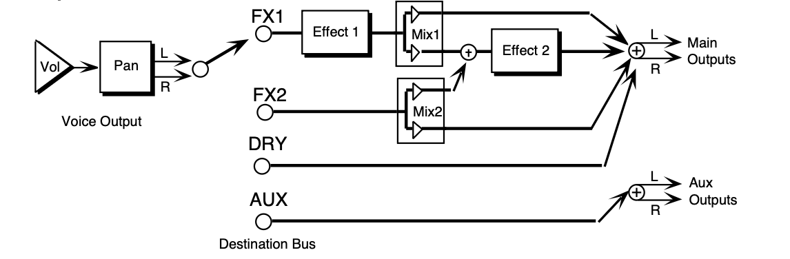
When the selected algorithm is a combined effect that has more than one signal processing function (such as chorus and reverb), the FX1 bus feeds Effect 1, and the FX2 bus feeds Effect 2. The FX2 Mix control sets the amount of Effect 2 (usually reverb) for voices assigned to that bus.
FX1 Mix controls the amount of the output from Effect 1 sent to Effect 2 rather than directly to the output. By setting this control to its extremes, you can arrange the two effects to be either in series or in parallel. The majority of combined effects follow this topology. If a specific algorithm uses a different topology, it will be explained in Section 7 — Effect Parameters.

All of the parallel effect algorithms follow the topology shown in the illustration above. The heavy lines are stereo paths. Voices assigned to FX1 (on the Output Page) will be sent to Effect A, if the PAN parameter is set to -99 (hard left) or sent to Effect B, if the PAN parameter is set to +99 (hard right). Note that by setting the PAN parameter to 50, you can create a parallel routing between Effect A and Effect B. There is a SEND parameter allowing a serial connection from Effect A into Effect B. There is a SEND parameter allowing a serial connection from Effect A into the Reverb, and another parameter allowing a serial connection from Effect B into the Reverb.
Voices assigned to FX2 (on the Output Page) will send a stereo signal to the reverb. The FX- - REVRB parameter allows you to define how much of the signal you want sent into the Reverb.
There is also a DRY parameter (on the SEND sub-page) from FX2 allowing you to define how much of the FX2 signal you want to completely bypass the Reverb. Any voices assigned to the DRY DESTINATION-BUS (on the Output page) will go through the mixer to the Main Output jacks.
Any voices assigned to the AUX DESTINATION-BUS will go directly to the AUX Output jacks, without any effects processing.
All of the algorithms allow real-time control of selectable parameters and share common modulation control parameters. The MODULATION CONTROL parameters are always the last parameters on the algorithm sub-pages:
These parameters select the modulation sources used to modulate the parameter Destinations. Each Effect Variation has a choice of two discrete mod sources.
The following modulation sources are available to alter the effects in performance:
| Mod Source | Modulation effect derived from |
|---|---|
| WHEEL | the value of the mod wheel |
| PBEND | the value of the pitch wheel |
| PEDAL | the value of the Pedal•CV input |
| TIMBR | the value of the TIMBRE parameter for the track |
| XCTRL | the value of the XCTRL (external MIDI controller number) parameter for the track |
| PRESS | the channel pressure value for the track |
| KEYBD | the number of the last key played |
| VELOC | the average velocity of all keys played |
| KEYDN | on when any keys are pressed; otherwise off |
| PATCH | four values (0, 32, 64, 127) for the four button states |
| SUSTN | on when the assigned foot switch is held down (and SUSTAIN is selected as a FOOT-SW controller on the System sub-page); otherwise off |
| SOSTU | on when the assigned foot switch is held down (and SOSTENUTO is selected as a FOOT-SW controller on the System sub-page); otherwise off |
| FX-SW | on when assigned foot switch is held down (and FX-SW-MOD is selected as a FOOT-SW controller on the System sub-page); otherwise off |
| *OFF* | no modulation |
For more information about the Modulation Sources, see Section 8 — Understanding Programs.
The Destination parameters select which effect parameters will be modulated by the modulation sources. The choice of parameters varies depending on the selected effect. Any parameter within an algorithm can be selected. Each Effect Variation has a choice of two different mod destinations. You cannot edit a parameter when it is assigned as a modulator destination.
Disabling modulation of a parameter will restore its saved value.
These four parameters set the minimum and maximum amount (based on the selected Destination parameter’s range) that the Mod Destination will be modulated by the Mod Source. Inverting the amounts will also invert the Mod effect.
In order for the effect modulation to work for the selected track, the Effect Mod Control parameter on the Track Effects sub-page must be set to CNTRL-FX.
Performance / Composition Synthesizer · Version 3.0
This section offers detailed descriptions of the sub-pages and parameters used in selecting, creating, and editing effects. For a basic overview of the concepts involved, refer to the previous section.
Effect Parameters are the parameters that control the behavior of the effect algorithms. The effect algorithms (shown in reverse type) described in this section have various sub-pages. Sub-pages are a group of parameters associated with the effect algorithm. Some of the parameters are common to many effect algorithms and some are specific to a particular effect algorithm. The first sub-page of parameters is almost identical for all of the algorithms. It contains the name of the effect algorithm and variations of this algorithm. The remaining subpages are variable and contain specific parameters that are relevant only to that effect. All of these parameters are programmable and can be used to customize each effect algorithm.
Effect Modulation Parameters are the parameters that control the behavior of the effect modulation. The Effect Modulation parameters are identical for all the algorithms, and are explained in detail in Section 6 — Effect Concepts.
This utility algorithm routes FX-1 and FX-2 permanently dry without any effects processing. This is useful when you want to hear a sound without any effects coloration.
These parameters control the mix of silence with a dry audio signal. The FX-1 and FX-2 parameters can be assigned different levels, and used as volume mix controllers for each track in a preset, sequence, or song. 00 is silent and 99 is full volume. By assigning the modulation controllers to these parameters, you can change volume mixes of the tracks in real-time.
The first 21 algorithms in the TS‑10 are called “Parallel Effects” and allow several effect types to be used at the same time. These algorithms can be very useful in Presets and Sequencer mode, where you would like different effects processing for each track. The key to parallel effects is how the voices are routed and how they are panned (on the Output page). Many of the parallel effect parameters are identical, and are described the first time they appear.
This parallel effect combines a digital delay with a chorus and a plate reverb. The second subpage (not user-programmable) shows how this parallel effect is routed:
For more information about parallel effects routing, refer to the previous section.
| SENDS | A--B=99 | B--REVRB=05 | |
| A--REVRB=00 | FX2--REVRB=22 | DRY=99 | |
Controls the amount of Effect A (DDL) being sent into Effect B (the CHORUS). A setting of 99 would yield a serial connection between Effect A and the chorus for voices sent to FX1 and panned hard left (on the Output page).
Controls the amount of Effect B (CHORUS) being sent into the reverb. This would allow you to add reverb to voices assigned to FX1 and panned hard right. A setting of 99 would yield a serial connection between the CHORUS and the reverb for voices sent to FX1 and panned hard right (on the Output page).
Controls the amount of Effect A (DDL) being sent into the reverb. This would allow you to add reverb to voices assigned to FX1 and panned hard left, without having to add any chorusing.
Defines how much of the voices assigned to FX2 (on the Output page) will be sent into the Reverb. This allows you to fine tune the amount of reverb coloration you want to add to your voices.
This parameter allows you to define how much of the FX2 signal you want to completely bypass the Reverb. By setting this parameter to 99 and the FX2- -REVB parameter to 00, you can assign voices to be completely dry.
Controls the mix between the original signal and the delay. Setting this parameter to 00 will allow only the unprocessed signal to be heard, while a setting of 99 will eliminate it completely, with only the delay portion remaining.
Adjusts the volume of the delayed signals against the original dry signal. A level of 00 will offer no audible delay.
Determines the location of the delays in the stereo spectrum. A value of -99 is panned hard left, and +99 is hard right. If set to either hard left or hard right, the delayed signal for the opposite side is inaudible.
Determines the amount of signal that will be fed from the output of the left delay back into the input, increasing the number of repeats in the delay. A setting of 99 would offer an infinite delay.
Controls the cutoff of a low pass filter on the feedback signal, which adjusts the amount of damping to the feedback signals. The higher the number, the more the signals are dampened.
Sets the amount of delay time for the independent delays. Each value increases the delay time by 1 millisecond. Experiment with different settings to find the right mix for your sound source and application. Some interesting effects can be implemented by using a real-time modulation controller for these parameters.
Controls the Dry/Wet mix within the chorus itself. For starters, we recommend settings of 50.
Adjusts the volume of the chorused signal. A level of 00 will offer no audible signal.
Determines the location of the chorused signal in the stereo spectrum. A value of -99 is panned hard left, and +99 is hard right.
Determines the location of the dry signal in the stereo spectrum. A value of -99 is panned hard left, and +99 is hard right.
Controls the nominal delay time of the chorus about which the delay modulation occurs. Adjusting this parameter will change the tonal character of the effect. This delay time is not related to the REGEN or the DDL delays.
Controls the four rates of modulation of the delay time of the chorus. The delay modulation produces vibrato and tremolo. tremolo.
Controls the depth of vibrato and tremolo.
Controls the depth of the detuning, that is, how much the pitch will change. Low values yield a metallic sound. Some voices sound best with very low values.
Controls the amount of feedback applied to the chorus. The sign of the value determines the polarity of the feedback. Feedback accentuates the complexity of the “swept” signal.
Controls the amount of time it takes for the reverberation to decay to a low level (-60 dB) after the input signal stops.
This parameter creates a time delay before the original signal is fed into the reverb. The range is based in milliseconds.
Controls the rate of attenuation of high frequencies in the decay of the reverberation. As natural reverb decays, some high frequencies tend to get absorbed by the environment. Increasing the value of this parameter will filter out increasing amounts of high-frequency energy.
Acts as a low pass filter on the signal going into the reverb, controlling the amount of high frequencies that will pass into the effect. The higher the setting, the more high frequencies are allowed to pass.
Controls the rate at which echo density increases with time. Higher values can cause the echo density to build at a rate that exceeds the decay rate. For the best performance, try to select the highest value that works with your sound source.
These parameters determine whether the early reflections will appear as a series of discrete echoes (lower values) or will be more diffused (higher values).
This parallel effect combines a parametric EQ and a DDL with a chorus and a reverb. The second sub-page (not user-programmable) shows how this parallel effect is routed:
For a complete description of the SENDS parameters, refer to the DDL+CHORUS+REV algorithm found earlier in this section.
Controls the mix between the original signal and the EQ into the delay. Setting this parameter to 00 will allow only the unprocessed signal to be heard, while a setting of 99 will eliminate it completely, with only the delay portion remaining.
Adjusts the volume of the delayed signals against the original dry signal. A level of 00 will offer no audible delay.
Determines the location of the delays in the stereo spectrum. A value of -99 is panned hard left, and +99 is hard right. If set to either hard left or hard right, the delayed signal for the opposite side is inaudible.
Sets the center frequency of the parametric EQ.
Sets the bandwidth for the center frequency.
Sets the amount of boost or cut applied to the parametric EQ (equalizer).
Controls the amount of regen (regeneration) applied to the delay time taps. The sign of the value determines the polarity of the regen.
Adjusts the cutoff of a low pass filter on the feedback signal, which controls the amount of damping to the feedback signals. The higher the number, the more the signals are damped.
Determines the amount of time between the input signal and the delay outputs.
For a complete description of the remaining parameters, refer to the DDL+CHORUS+REV algorithm found earlier in this section.
This parallel effect combines a digital delay that provides LFO modulation with a chorus and a reverb. The second sub-page (not user-programmable) shows how this parallel effect is routed:
For a complete description of the SENDS parameters, refer to the DDL+CHORUS+REV algorithm found earlier in this section.
Controls the volume level of the original signal and the delay. Setting this parameter to 00 will eliminate the audio signal.
Determines the location of the delays in the stereo spectrum. A value of -99 is panned hard left, and +99 is hard right. If set to either hard left or hard right, the delayed signal for the opposite side is inaudible.
This parameter controls the volume of the delayed signal only. Setting this parameter to 00 will eliminate the delay portion completely.
This parameter allows you to define how much of the FX1 signal you want to completely bypass the Delay LFO. Setting this parameter to 00 will eliminate the dry signal. By setting this parameter to 99 and the WET parameter to 00, you can assign voices to be completely dry.
Controls the nominal delay time of the LFO about which the delay modulation occurs. Adjusting this parameter will change the tonal character of the effect. Higher values offer a longer delay time.
Controls the rate of pitch modulation which is the LFO. To achieve a chorusing effect, this rate must be very slow.
Controls the excursion of pitch modulation. Since the rate is usually very slow, the width is usually large.
When set to 00, the left and right choruses will modulate their detunes together. When set to 99 the detune on the right channel will go up while the detune on the left will go down, creating an out-of-phase effect.
Controls the amount of regen (regeneration) applied to the delay time taps. The sign of the value determines the polarity of the regen.
For a complete description of the remaining parameters, refer to the DDL+CHORUS+REV algorithm found earlier in this section.
This parallel effect combines a rotary speaker with a chorus and a reverb. The second sub-page (not user-programmable) shows how this parallel effect is routed:
For a complete description of the SENDS parameters, refer to the DDL+CHORUS+REV algorithm found earlier in this section.
When set to OFF, the same roto-speaker signal is heard in both channels. When set to ON, the signal is 180˚ out-of-phase, to create stereo movement.
Adjusts the volume of the rotary speaker signal. A level of 00 will offer no audible signal.
Determines the location of the rotary speaker signal in the stereo spectrum. A value of -99 is panned hard left, and +99 is hard right.
Controls how much the volume will fade away as the speaker rotates away from the listener.
Higher values will create a deeper rotating speaker effect.
Controls the amount of detuning applied to the rotating speaker. This can be used to create a “doppler” effect.
Determines the rate of the rotary speaker when in the “Slow” setting. ROTO SLOW determines the manual level for the rotary speaker rate when SPEED= SLOW, or when the selected modulator is at zero output level. Again, the higher the value, the faster the rate.
Determines the rate of the rotary speaker when in the “FAST” setting. The higher the value, the faster the rate.
Determines how long it will take for the rotor effect to speed up and slow down after switching from fast to slow or vice versa. Adjust this parameter to simulate the effect of the rotary speaker gradually picking up speed.
Determines how the rotary speaker will switch between slow and fast speeds. The behavior of the switch accurately reflects an actual rotary speaker, taking time to speed up or slow down, based on the value of the INERTIA parameter (see previous description). Any effect modulator can act as the SPEED controller. How the modulators will switch the rotor speed fall into two categories:
For a complete description of the remaining parameters, refer to the DDL+CHORUS+REV algorithm found earlier in this section.
This parallel effect combines a raspy distortion with a chorus and a reverb. The second sub-page (not user-programmable) shows how this parallel effect is routed:
For a complete description of the SENDS parameters, refer to the DDL+CHORUS+REV algorithm found earlier in this section.
Controls the mix between the original signal and the distortion. Setting this parameter to 00 will allow only the unprocessed signal to be heard, while a setting of 99 will eliminate it completely, with only the distortion portion remaining.
Controls the input level to the pre-amp, to eliminate the possibility of clipping boosted signals.
Determines the location of the distortion in the stereo spectrum. A value of -99 is panned hard left, and +99 is hard right.
Adjusts the amount of boost or cut applied to the incoming signal. We recommend lower settings, since these emulations were optimized for distortion there. Lower preamp gains will result in less distortion, while higher preamp gains will yield clipping distortion. For low preamp gain, it may be desirable to use low tube bias values.
Controls the output level of the main amp after saturation, but before the filter.
Controls the emphasis of even to odd harmonics which determines the tone of the amp; mid values emphasize even harmonics and offer a warmer (“glowing tube”) sound, while the highest values may sound like tubes going bad. For low preamp gain, it may be desirable to use low tube bias values, because this more closely imitates the operation of a real amplifier.
Controls the cutoff frequency. This is much like a tone control on a guitar amp. By applying a real-time controller to modulate this parameter, you can create a wah-pedal effect.
Controls the bandwidth of the filter. Higher settings yield a narrower bandwidth.
For a complete description of the remaining parameters, refer to the DDL+CHORUS+REV algorithm found earlier in this section.
This parallel effect combines a parametric EQ with a chorus and a reverb. The second sub-page (not user-programmable) shows how this parallel effect is routed:
For a complete description of the SENDS parameters, refer to the DDL+CHORUS+REV algorithm found earlier in this section.
Allows you to adjust the input level trim to the EQs to eliminate the possibility of clipping boosted signals.
Adjusts the output volume after the parametric EQ. With the LEVEL, BASS LEVEL, and TREBLE LEVEL set to high values, the OUTPUT parameter could be used to create a raspy distortion effect.
Determines the location of the EQ in the stereo spectrum. A value of -99 is panned hard left, and +99 is hard right.
Sets the center of the mid-frequency parametric.
This parameter is a bandwidth control that determines the width of the resonant peak at the midfrequency band. By lowering the value, you can produce a narrower bandwidth.
Sets the amount of boost or cut applied to this mid-frequency parametric.
Sets the amount of boost or cut applied to a 0 to 80Hz low-shelving filter.
Sets the amount of boost or cut applied to a 10 to 15K high-shelving filter.
For a complete description of the remaining parameters, refer to the DDL+CHORUS+REV algorithm found earlier in this section.
This parallel effect combines a voltage control filter with a chorus and a reverb. The second subpage (not user-programmable) shows how this parallel effect is routed:
For a complete description of the SENDS parameters, refer to the DDL+CHORUS+REV algorithm found earlier in this section.
Determines the filter cut off-frequency. Higher values have a brighter sound. This parameter can be modulated, using a CV Pedal for a wah-wah pedal effect. To use as an EQ, set the desired value and make sure the ENV AMT is 0. To use as the auto-wah, set this parameter to a low value and turn on ENV AMT.
Controls the output level of the Voltage control filter.
Determines the location of the VCF in the stereo spectrum. A value of -99 is panned hard left, and +99 is hard right.
Determines the level and width of the resonant peak at the filter cutoff point. While the VCF FC parameter determines where (at what frequency) this peak will occur, the BW setting controls the presence of the peak. This setting is important for the auto-wah effect.
Controls the peak frequency at the highest point of the attack. When set to 0, the ATTACK, DECAY, SUSTN, REL, and TRIG parameters have no effect.
Keyboard tracking amount — the cutoff frequency will track based on the KYB AMT range. Set this parameter to work with your signal.
Sets the attack of the envelope follower (i.e. determines how closely the attack is followed) once the incoming signal has been detected. Generally the attack should be short.
Determines the amount of time after the attack time that the VCF will decay.
Determines the amount of time the VCF will sustain before it decays.
Sets the amount of time after the incoming signal has ceased for the envelope follower to shut down. Generally these times are longer than the attack times.
Determines whether the VCF will retrigger with each key-event or not.
For a complete description of the remaining parameters, refer to the DDL+CHORUS+REV algorithm found earlier in this section.
This parallel effect combines a digital delay with a phlanger (a combination phaser and flanger effect) and a reverb. The second sub-page (not user-programmable) shows how this parallel effect is routed:
Controls the amount of Effect A (DDL) being sent into Effect B (the phlanger). A setting of 99 would yield a serial connection between Effect A and the PHLANGR for voices sent to FX1 and panned hard left (on the Output page).
Controls the amount of Effect B (PHLANGR) being sent into the reverb. This would allow you to add reverb to voices assigned to FX1 and panned hard right. A setting of 99 would yield a serial connection between the PHLANGR and the reverb for voices sent to FX1 and panned hard right (on the Output page).
Controls the amount of Effect A (DDL) being sent into the reverb. This would allow you to add reverb to voices assigned to FX1 and panned hard left, without having to add any phasing/flanging.
| FX2- -REVRB | PAN | |
| DRY | DDL REGEN L | |
| DDL MIX | DAMPING | |
| LEVEL | DELAY TIME L and R |
For a complete description of these parameters, refer to the DDL+CHORUS+REV algorithm found earlier in this section.
Controls the Dry/Wet mix within the phlanger itself.
Adjusts the volume of the phlanger signal. A level of 00 will offer no audible signal.
Determines the location of the phlanger signal in the stereo spectrum. A value of -99 is panned hard left, and +99 is hard right.
Controls the rates of modulation of the phlanger.
Controls the amount of feedback applied to the phlanger. The sign of the value determines the polarity of the feedback.
Controls the center of the phaser width.
Controls the amount of modulation applied to phaser poles.
Controls the center of the flanger width.
Controls the range of the high to low-frequency sweep in the flanger effect.
For a complete description of the remaining Reverb parameters, refer to the DDL+CHORUS+REV algorithm found earlier in this section.
This parallel effect combines a parametric EQ into a digital delay with a phlanger (a combination phaser and flanger effect) and a reverb. The second sub-page (not user-programmable) shows how this parallel effect is routed:
For a complete description of the SENDS parameters, refer to the DDL+PHLANGR+REV algorithm found earlier in this section.
For a complete description of the EQ- -DDL parameters, refer to the EQ- -DDL+CHORUS+REV algorithm found earlier in this section.
For a complete description of the PHLANGR parameters, refer to the DDL+PHLANGR+REV algorithm found earlier in this section.
For a complete description of the remaining Reverb parameters, refer to the DDL+CHORUS+REV algorithm found earlier in this section.
This parallel effect combines a digital delay that provides LFO modulation with a phlanger (a combination phaser and flanger effect) and a reverb. The second sub-page (not userprogrammable) shows how this parallel effect is routed:
For a complete description of the SENDS parameters, refer to the DDL+PHLANGR+REV algorithm found earlier in this section.
For a complete description of the DELAYLFO parameters, refer to the DELAYLFO+CHORUS+REV algorithm found earlier in this section.
For a complete description of the PHLANGR parameters, refer to the DDL+PHLANGR+REV algorithm found earlier in this section.
For a complete description of the remaining Reverb parameters, refer to the DDL+CHORUS+REV algorithm found earlier in this section.
This parallel effect combines a rotary speaker with a phlanger (a combination phaser and flanger effect) and a reverb. The second sub-page (not user-programmable) shows how this parallel effect is routed:
For a complete description of the SENDS parameters, refer to the DDL+PHLANGR+REV algorithm found earlier in this section.
For a complete description of the ROTOSPKR parameters, refer to the ROTOSPKR+CHORUS+REV algorithm found earlier in this section.
For a complete description of the PHLANGR parameters, refer to the DDL+PHLANGR+REV algorithm found earlier in this section.
For a complete description of the remaining Reverb parameters, refer to the DDL+CHORUS+REV algorithm found earlier in this section.
This parallel effect combines a distortion with a phlanger (a combination phaser and flanger effect) and a reverb. The second sub-page (not user-programmable) shows how this parallel effect is routed:
For a complete description of the SENDS parameters, refer to the DDL+PHLANGR+REV algorithm found earlier in this section.
For a complete description of the DISTORT parameters, refer to the DISTORT+CHORUS+REV algorithm found earlier in this section.
For a complete description of the PHLANGR parameters, refer to the DDL+PHLANGR+REV algorithm found earlier in this section.
For a complete description of the remaining Reverb parameters, refer to the DDL+CHORUS+REV algorithm found earlier in this section.
This parallel effect combines a parametric EQ with a phlanger (a combination phaser and flanger effect) and a reverb. The second sub-page (not user-programmable) shows how this parallel effect is routed:
For a complete description of the SENDS parameters, refer to the DDL+PHLANGR+REV algorithm found earlier in this section.
For a complete description of the PARAM EQ parameters, refer to the PARAM EQ+CHORUS+REV algorithm found earlier in this section.
For a complete description of the PHLANGR parameters, refer to the DDL+PHLANGR+REV algorithm found earlier in this section.
For a complete description of the remaining Reverb parameters, refer to the DDL+CHORUS+REV algorithm found earlier in this section.
This parallel effect combines a voltage control filter with a phlanger (a combination phaser and flanger effect) and a reverb. The second sub-page (not user-programmable) shows how this parallel effect is routed:
For a complete description of the SENDS parameters, refer to the DDL+PHLANGR+REV algorithm found earlier in this section.
For a complete description of the ENV VCF parameters, refer to the ENV VCF+CHORUS+REV algorithm found earlier in this section.
For a complete description of the PHLANGR parameters, refer to the DDL+PHLANGR+REV algorithm found earlier in this section.
For a complete description of the remaining Reverb parameters, refer to the DDL+CHORUS+REV algorithm found earlier in this section.
This parallel effect combines a digital delay with a rotary speaker effect and a reverb. The second sub-page (not user-programmable) shows how this effect is routed:
Controls the amount of Effect A (DDL) being sent into Effect B (the rotary speaker). A setting of 99 would yield a serial connection between Effect A and the rotary speaker effect for voices sent to FX1 and panned hard left (on the Output page).
Controls the amount of Effect B (ROTSPKR) being sent into the reverb. This would allow you to add reverb to voices assigned to FX1 and panned hard right. A setting of 99 would yield a serial connection between the ROTSPKR and the reverb for voices sent to FX1 and panned hard right (on the Output page).
Controls the amount of Effect A (DDL) being sent into the reverb. This would allow you to add reverb to voices assigned to FX1 and panned hard left, without having to add any of the rotary speaker effect.
| FX2- -REVRB | PAN | |
| DRY | DDL REGEN L | |
| DDL MIX | DAMPING | |
| LEVEL | DELAY TIME L and R |
For a complete description of these parameters, refer to the DDL+CHORUS+REV algorithm found earlier in this section.
Selects either a stereo or mono rotary speaker effect.
Adjusts the volume of the rotary speaker signal. A level of 00 will offer no audible signal.
Determines the location of the rotary speaker signal in the stereo spectrum. A value of -99 is panned hard left, and +99 is hard right.
Controls how much the volume will fade away as the speaker rotates away from the listener.
Higher values will create a deeper rotating speaker effect.
Controls the amount of detuning applied to the rotating speaker. This can be used to create a “doppler” effect.
Determines the rate of the rotary speaker when in the “Slow” setting. ROTO SLOW determines the manual level for the rotary speaker rate when SPEED= SLOW, or when the selected modulator is at zero output level. Again, the higher the value, the faster the rate.
Determines the rate of the rotary speaker when in the “Fast” setting. The higher the value, the faster the rate.
Determines how long it will take for the rotor effect to speed up and slow down after switching from fast to slow or vice versa. Adjust this parameter to simulate the effect of the rotary speaker gradually picking up speed.
Determines how the rotary speaker will switch between slow and fast speeds. The behavior of the switch accurately reflects an actual rotary speaker, taking time to speed up or slow down, based on the value of the INERTIA parameter (see previous description). Any effect modulator can act as the SPEED controller. How the modulators will switch the rotor speed fall into two categories:
For a complete description of the remaining Reverb parameters, refer to the DDL+CHORUS+REV algorithm found earlier in this section.
This parallel effect combines a parametric EQ into a digital delay with a rotary speaker effect and a reverb. The second sub-page (not user-programmable) shows how this effect is routed:
For a complete description of the SENDS parameters, refer to the DDL+ROTOSPKR+REV algorithm found earlier in this section.
For a complete description of the EQ- -DDL parameters, refer to the EQ- -DDL+CHORUS+REV algorithm found earlier in this section.
For a complete description of the ROTO parameters, refer to the DDL+ROTOSPKR+REV algorithm found earlier in this section.
For a complete description of the remaining Reverb parameters, refer to the DDL+CHORUS+REV algorithm found earlier in this section.
This parallel effect combines a digital delay that provides LFO modulation with a rotary speaker effect and a reverb. The second sub-page (not user-programmable) shows how this effect is routed:
For a complete description of the SENDS parameters, refer to the DDL+ROTOSPKR+REV algorithm found earlier in this section.
For a complete description of the DELAYLFO parameters, refer to the DELAYLFO+CHORUS+REV algorithm found earlier in this section.
For a complete description of the ROTO parameters, refer to the DDL+ROTOSPKR+REV algorithm found earlier in this section.
For a complete description of the remaining Reverb parameters, refer to the DDL+CHORUS+REV algorithm found earlier in this section.
This parallel effect combines a rotary speaker with another rotary speaker effect and a reverb. The second sub-page (not user-programmable) shows how this effect is routed:
For a complete description of the SENDS and the ROTO parameters, refer to the DDL+ROTOSPKR+REV algorithm found earlier in this section.
For a complete description of the remaining Reverb parameters, refer to the DDL+CHORUS+REV algorithm found earlier in this section.
This parallel effect combines a raspy distortion with a rotary speaker and a reverb. The second sub-page (not user-programmable) shows how this effect is routed:
For a complete description of the SENDS parameters, refer to the DDL+ROTOSPKR+REV algorithm found earlier in this section.
For a complete description of the DISTORT parameters, refer to the DISTORT+CHORUS+REV algorithm found earlier in this section.
For a complete description of the ROTO parameters, refer to the DDL+ROTOSPKR+REV algorithm found earlier in this section.
For a complete description of the remaining Reverb parameters, refer to the DDL+CHORUS+REV algorithm found earlier in this section.
This parallel effect combines a parametric EQ with a rotary speaker and a reverb. The second sub-page (not user-programmable) shows how this effect is routed:
For a complete description of the SENDS parameters, refer to the DDL+ROTOSPKR+REV algorithm found earlier in this section.
For a complete description of the PARAM EQ parameters, refer to the PARAM EQ+CHORUS+REV algorithm found earlier in this section.
For a complete description of the ROTOSPKR parameters, refer to the DDL+ROTOSPKR+REV algorithm found earlier in this section.
For a complete description of the remaining Reverb parameters, refer to the DDL+CHORUS+REV algorithm found earlier in this section.
This parallel effect combines a voltage control filter with a rotary speaker and a reverb. The second sub-page (not user-programmable) shows how this effect is routed:
For a complete description of the SENDS parameters, refer to the DDL+ROTOSPKR+REV algorithm found earlier in this section.
For a complete description of the ENV VCF parameters, refer to the ENV VCF+CHORUS+REV algorithm found earlier in this section.
For a complete description of the ROTO parameters, refer to the DDL+ROTOSPKR+REV algorithm found earlier in this section.
For a complete description of the remaining Reverb parameters, refer to the DDL+CHORUS+REV algorithm found earlier in this section.
Performance / Composition Synthesizer · Version 3.0
The next two algorithms in the TS‑10 are called dual effects and allow two effect types to be used at the same time. Dual effect algorithms are similar to parallel effects in that they require you to assign the voices to either FX1 or FX2 (on the Output page). Dual effects offer two discrete effect processing paths, and are also ideal for Seq/Song mixdowns.
This dual effect algorithm combines two plate reverbs, allowing you to create two discrete plate reverb effects.
Controls the Dry/Wet mix for sounds routed to the first plate reverb (FX1 on the Output page).
Controls the volume of a dry path around the first plate reverb.
Controls the Dry/Wet mix for sounds routed to the second plate reverb (FX2 on the Output page).
Controls the volume of a dry path around the second plate reverb.
Controls the amount of time it takes for the reverberation to decay. Lower values of decay time sound good on drum and percussion tracks.
Controls the amount of time it takes for the input signal to be presented to the plate reverb. A value of 0000 would offer no delay.
Increasing the value of this parameter will gradually filter out increasing amounts of high-frequency energy. Higher values yield an abrupt decay. Controls the cut off of a low pass filter in series with the decay within the definition.
Acts as a low-pass filter on the output of the plate reverbs, controlling the amount of high frequencies present. The higher the setting, the more high frequencies are allowed to pass through, offering a brighter ringing sound. Some interesting effects can be created by using a mod controller over a large range.
Controls the LFO rate of detuning incorporated within the reverb. Detuning creates a slight pitch shift into the reverberated signal, giving it a more natural sounding decay by breaking up resonant nodes.
Controls the depth of the detuning, that is, how much the pitch will change. Low values yield a metallic sound. Some voices sound best with very low values.
Controls the rate at which echo density increases with time. Higher values can cause the echo density to build at a rate that exceeds the decay rate. Try to select the highest value that works with your sound source for the best performance.
The two diffusion parameters smear the input signal to create a smoother sound. Lower values will cause impulse sounds to appear as a series of discrete echoes, while higher values tend to increase the smear, making the echoes less apparent.
These parameters are identical to the previous ones, and allow you to create a completely independent plate reverb assigned to FX2.
This dual effect algorithm combines a parametric EQ with a plate reverb, allowing independent effects processing.
Controls the volume mix for sounds routed to the parametric EQ (FX1 on the Output page).
Controls the amount of EQ being sent into the plate reverb. A setting of 99 would yield a serial connection between the parametric EQ and the reverb for voices assigned to FX1 (on the Output page). A setting of 00 would eliminate any audible reverb for voices assigned to FX1.
Controls the Dry/Wet mix for sounds routed to the plate reverb (FX2 on the Output page).
Controls the volume of a dry path around the plate reverb.
Lets you to adjust the input level before the EQs to eliminate the possibility of clipping boosted signals.
Allows you to adjust the output gain to compensate for losses in perceived volume. Setting this gain too high will cause clipping of the output signal.
This parameter sets the center of the mid-frequency parametric. Higher values have a brighter sound.
This parameter is a bandwidth control that determines the width of the resonant peak at the center of the-frequency band. By raising the value, you can produce a narrower bandwidth.
This parameter sets the amount of cut (negative values) or boost (positive values) applied to this mid-frequency parametric.
Selects the cutoff-frequency of the lower-frequency band shelving filter.
Sets the amount of boost or cut applied to the low shelving filter.
Selects the cutoff-frequency of the upper-frequency band high shelving filter.
Sets the amount of boost or cut applied to the high shelving filter.
Controls the amount of time it takes for the reverberation to decay. High values of decay time sound good on drum and percussion tracks.
Controls the amount of time it takes for the input signal to be presented to the plate reverb. A value of 0000 would offer no delay.
Increasing the value of this parameter will gradually filter out increasing amounts of highfrequency energy. Higher values yield an abrupt decay. Controls the cut off of a low pass filter in series with the decay within the definition.
Acts as a low-pass filter on the output of the plate reverbs, controlling the amount of high frequencies present. The higher the setting, the more high frequencies are allowed to pass through, offering a brighter ringing sound. Some interesting effects can be created by using a mod controller over a large range.
Controls the LFO rate of detuning incorporated within the reverb. Detuning creates a slight pitch shift into the reverberated signal, giving it a more natural sounding decay by breaking up resonant nodes.
Controls the depth of the detuning, that is, how much the pitch will change. Low values yield a metallic sound. Some voices sound best with very low values.
Controls the rate at which echo density increases with time. Higher values can cause the echo density to build at a rate that exceeds the decay rate. Try to select the highest value that works with your sound source for the best performance.
The two diffusion parameters smear the input signal to create a smoother sound. Lower values will cause impulse sounds to appear as a series of discrete echoes, while higher values tend to increase the smear, making the echoes less apparent.
A plate reverb takes the vibrations from a metal plate and uses them to create a metallic sounding reverb. SMALL PLATE REVERB is a tight sounding plate reverb, and LARGE PLATE REVERB 1 simulates a larger plate reverb. Small plate reverbs are most often used in the studio for drums and percussion, while large plate reverbs are often used to enhance a vocalist’s performance.
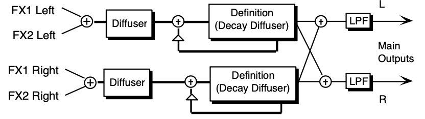
These two plate reverb algorithms share exactly the same signal routing topology. The internal values of the components (not user programmable) differentiate the large and small plate reverbs. The signal goes directly through the diffusers which smear the signal. The signal is then routed to a larger diffuser, known as Decay Definition, and is diffused over a period of time
(creating a decay). The signal is then routed to the output, and then goes through a low pass filter. There is a parameter that controls the Decay Time of both the left and right signals (shown as triangles above). This signal is then routed back into the definition. There is also an external dry signal (not shown) that goes directly from the input to the Main Output (DRY). The FX1 and FX2 MIX parameters can be routed into the effect for different Dry/Wet mixes.
Controls the amount of time it takes for the reverberation to decay. High values of decay time sound good on these algorithms.
Controls the amount of time it takes for the input signal to be presented to the plate reverb. A value of 0000 would offer no delay.
Increasing the value of this parameter will gradually filter out increasing amounts of highfrequency energy. Higher values yield an abrupt decay. This parameter controls the cut off of a low pass filter in series with the decay within the definition.
Acts as a low-pass filter on the output of the plate reverbs, controlling the amount of high frequencies present. The higher the setting, the more high frequencies are allowed to pass through, offering a brighter ringing sound. Some interesting effects can be created by using a mod controller over a large range.
Controls the left/right stereo balance of the plate reverb signal. A setting of -99 would offer hard left, whereas a setting of +99 offers hard right. A setting of +00 would place the reverb in the center of the stereo spectrum.
Controls the rate at which echo density increases with time. Higher values can cause the echo density to build at a rate that exceeds the decay rate. For the best results, try to select the highest value that works with your sound source.
Smears the input signal to create a smoother sound. Lower values cause impulse sounds to appear as a series of discrete echoes, while higher values tend to increase the smear, making the echoes less apparent.
This diffuser, similar to and in series with the previous one, offers control over lower-frequency ranges. Plate reverbs tend to sound metallic, and the diffusers help to smear the signal, eliminating the metallic sound.
Control four early reflection levels. Setting these levels to lower values will produce a wetter sound. These four reflection levels are close to the input of the DEFINITION.
This plate reverb shares the same signal routing topology as the previous plate reverbs, but sports poly-phase interpolation, and two additional parameters:
Determines the time intervals between the seven discrete echoes produced by the plate. The time intervals are adjusted relative to one another.
Determines the relative volume of the seven discrete echoes produced by the plate. At +00 seven echoes are all the same volume. At -99 the first echo is quietest, with successive echoes increasing in volume. At +99 produces the opposite effect.
This effect algorithm provides a studio-quality stereo reverb. The FX1 and FX2 MIX parameters can be routed into the effect for different Dry/Wet mixes. HALL REVERB is a reverb with a long decay, featuring left to right (transverse) reflections.
Controls the amount of time it takes for the reverberation to decay to a low level (-60 dB) after the input signal stops.
This parameter creates a time delay before the original signal is fed into the reverb.
Controls the rate of attenuation of high frequencies in the decay of the reverberation. As natural reverb decays, some high frequencies tend to get absorbed by the environment. Increasing the value of this parameter will filter out increasing amounts of high-frequency energy.
Acts as a low pass filter on the signal going into the reverb, controlling the amount of high frequencies that will pass into the effect. The higher the setting, the more high frequencies are allowed to pass.
This control will boost or cut the rate at which low frequencies will decay.
Determines whether the early reflections will appear as a series of discrete echoes (lower values) or will be more diffused (higher values).
Controls the LFO rate of detuning incorporated within the reverb. Detuning creates a slight pitch shift into the reverberated signal, giving it a more natural sounding decay by breaking up resonant nodes.
Controls the depth of the detuning, that is, how much the pitch will change. Low values yield a metallic sound. Some voices sound best with very low values.
This algorithm can be programmed with a high degree of precision. HALL REVERB 2 is a large acoustic space providing a high density reverb.
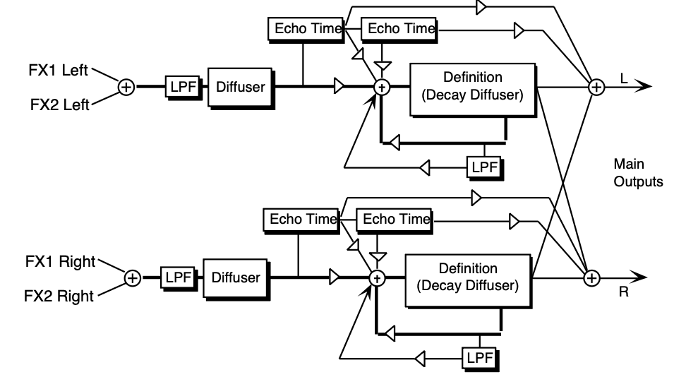
The signal enters a low pass filter and goes directly through the diffusers which smear the signal.
The signal is then routed to a larger decay diffuser, known as Definition, and is diffused over a period of time (creating a decay). There are taps from both the left and right Definition that are routed to the output to create a synthesized stereo output. A signal from the Definition goes through a low pass filter followed by a low-frequency decay parameter, which controls the rate of decay of the low frequencies. There is also a parameter at this stage that controls the decay time of both the left and right signals. The left and right signals are routed back into the Definition.
There are two echo times between the diffuser and the definition that can be routed directly to the output, or sent back through the definition. The EFFECT MIX FX-1 and FX-2 parameters allow you to create a Dry/Wet mix.
Controls the amount of time it takes for the reverberation to decay to a very low level after the input signal stops. We recommend higher values for the hall reverb.
Controls the amount of time it takes for the original signal to be presented to the reverb. Higher values denote a longer delay.
Controls the rate of attenuation of high frequencies in the decay of the reverberation. As natural reverb decays, some high frequencies tend to get absorbed by the environment. Increasing the value of this parameter will gradually filter out (dampen) more and more high-frequency energy.
The high-frequency bandwidth acts as a low pass filter on the signal going into the reverb, controlling the amount of high frequencies that will pass into the effect. The higher the setting, the more high frequencies are allowed to pass. This functions like a tone control on a guitar.
Acts like a tone control and will boost (when set to a positive value) or cut (when set to a negative value) the rate at which low frequencies will decay.
Controls the rate at which echo density is increased with time. Setting this parameter too high can cause the echo density to build at a rate which exceeds the decay rate. A general rule of thumb is this: DEFINITION should not exceed the LF DECAY TIME added to the DECAY TIME.
Smears the input signal transients to diffuse and smooth the sound. Lower values cause impulse sounds to appear as a series of discrete echoes, while higher values tend to increase the smear (smoother sounding with fewer discrete echoes). We recommend settings of 50 for starters.
This parameter, similar to and in series with DIFFUSION-1, performs the same way but controls lower-frequency ranges. Experiment with different levels between the diffuser parameters to find the settings that are right for your source.
Controls the delay time for the first pre-echo. Pre-echoes are the first sounds that have been reflected back from the walls or reflective “live” surfaces. Higher values delay the diffused signal more.
Controls the level of the first pre-echo. This pre-level controls the echo send to the DEFINITION.
Controls the level of the first pre-echo, with the echo routed directly to the output.
Controls the delay time for the second pre-echo.
Controls the level of the second pre-echo. As a signal continues to bounce off the different reflective surfaces (walls), it decreases in volume. Set this parameter to a lower value than REFL-1 LEVEL to create a natural sounding echo.
Controls the level of the second pre-echo, with the echo routed directly to the output.
Controls the LFO rate of detuning introduced into the reverberation decay. Detuning creates a slight oscillating pitch shift into the decay, giving it a more natural sound by breaking up resonant nodes.
Controls the depth of the detuning, that is, how much the pitch will change. Low values yield a metallic sound. Some sounds may require very low values, while others sound more natural with higher values.
Controls the level of the diffused input signal into the reverb definition.
The Position Balance parameters simulate the depth of the hall. Think of these parameters as three different microphones placed at various distances within the hall (the first is closest to the front, the third is farthest from the front). When the range (volume) is higher for BAL-1, the sound appears closer to the front, whereas a higher setting for BAL-3 appears farther from the front, suggesting a deeper (wetter) hall.
HALL REVERB 3 shares the same signal routing topology as HALL REVERB 2, with a few additional parameters:
Smears the reverb decay signal.
These parameters smear the input signal transients to diffuse and smooth the sound. Lower values cause impulse sounds to appear as a series of discrete echoes, while higher values tend to increase the smear (smoother sounding with fewer discrete echoes). We recommend settings of 50 for starters. Experiment with different levels between the diffuser parameters to find the settings that are right for your source.
Determines the time intervals between the seven discrete echoes produced by the hall. The time intervals are adjusted relative to one another.
Determines the relative volume of the seven discrete echoes produced by the hall. At +00 seven echoes are all the same volume. At -99 the first echo is quietest, with successive echoes increasing in volume. At +99 produces the opposite effect.
These three fields simulate the depth of the hall. Think of these fields as three different microphones placed at various distances within the hall (the first is closest to the front, the third is farthest from the front). When the range (volume) is higher for the first value, the sound appears closer to the front, whereas a higher setting for the last value appears farther from the front, suggesting a deeper (wetter) hall.
Controls the left/right stereo balance of the hall reverb signal. A setting of -99 would offer hard left, whereas a setting of +99 would offer hard right. A setting of +00 would place the reverb in the center of the stereo spectrum.
Controls the level of the diffused input signal into the reverb definition.
SMALL ROOM REVERB features a short, room-like decay. The FX1 and FX2 parameters can be routed into the effect with different Dry/Wet mixes.
Controls the amount of time it takes for the reverberation to decay to a low level (-60 dB) after the input signal stops.
Creates a delay in the amount of time it takes before the original signal is fed into the reverb. The range is based in milliseconds.
Controls the rate of attenuation of high frequencies in the decay of the reverberation. As natural reverb decays, some high frequencies tend to get absorbed by the environment. Increasing the value of this parameter will filter out increasing amounts of high-frequency energy.
The high-frequency bandwidth parameter acts as a low pass filter on the signal going into the reverb, controlling the amount of high frequencies that will pass into the effect. The higher the setting, the more high frequencies are allowed to pass.
This control will boost or cut the rate at which low frequencies decay.
Determines whether the early reflections will appear as a series of discrete echoes (lower values) or will be more diffused (higher values).
Controls the LFO rate of detuning incorporated within the reverb. Detuning creates a slight pitch shift into the reverberated signal, giving it a more natural sounding decay by breaking up resonant nodes.
Controls the depth of the detuning, that is, how much the pitch will change. Low values yield a metallic sound. Some voices sound best with very low values.
MEDIUM ROOM REVERB provides a highly programmable medium room reverb, and LARGE ROOM REVERB offers a larger room with bright reflective surfaces.
MEDIUM ROOM REVERB provides a highly programmable medium room reverb, and LARGE ROOM REVERB offers a larger room with bright reflective surfaces.
These algorithms share the same signal routing topology as HALL REVERB 2. However, the internal values of the components (not user-programmable) differentiate these reverbs. The
EFFECT MIX FX1 and EFFECT MIX FX2 parameters can be routed into the effect with different Dry/Wet mixes.
Controls the amount of time it takes for the reverberation to decay to a very low level after the input signal stops. In room reverbs we don’t recommend higher settings, which tend to create an infinite and unnatural sustain. Since most ambient room reverbs don’t naturally have a large decay, set this low for the best sound.
Controls the amount of time it takes for the original signal to be presented to the reverb. Higher values denote a longer delay.
Controls the rate of attenuation of high frequencies in the decay of the reverberation. As natural reverb decays, some high frequencies tend to get absorbed by the environment. Increasing the value of this parameter will gradually filter out (dampen) more and more high-frequency energy.
The high-frequency bandwidth acts as a low pass filter on the signal going into the reverb, controlling the amount of high frequencies that will pass into the effect. The higher the setting, the more high frequencies are allowed to pass. This functions like a tone control on a guitar.
Functions as a tone control and boosts (when set to a positive value) or cuts (when set to a negative value) the rate at which low frequencies will decay.
Controls the rate at which echo density is increased with time. Setting this parameter too high can cause the echo density to build at a rate which exceeds the decay rate. A general rule of thumb is this: DEFINITION should not exceed the LF DECAY TIME added to the DECAY TIME.
These four values, in series with each other, smear the input signal transients, to diffuse and smooth the sound. Lower values will cause impulse sounds to appear as a series of discrete echoes, while higher values tend to increase the smear (smoother sounding with fewer discrete echoes). Experiment with different levels between the diffuser parameters to find the settings that are right for your source. We recommend settings of 50 for starters.
Controls the delay time for the first pre-echo. Pre-echoes are the first sounds that have been reflected back from the walls or reflective “live” surfaces. Higher values delay the diffused signal more.
Controls the level of the first pre-echo. This pre-level controls the echo send to the Definition.
Controls the level of the first pre-echo, with the echo routed directly to the output.
Controls the delay time for the second pre-echo.
Controls the level of the second pre-echo. As a signal continues to bounce off the different reflective surfaces (walls), it decreases in volume. Set this parameter to a lower value than REFL-1 LEVEL to create a natural sounding echo.
Controls the level of the second pre-echo, with the echo routed directly to the output.
Controls the LFO rate of detuning introduced into the reverberation decay. Detuning creates a slight oscillating pitch shift into the decay, giving it a more natural sound by breaking up resonant nodes.
Controls the depth of the detuning, that is, how much the pitch will change. Low values yield a metallic sound. Some sounds may require very low values, while others sound more natural with higher values.
Controls the left/right stereo balance of the gated reverb signal. A setting of -99 would offer hard left, whereas a setting of +99 would offer hard right. A setting of +00 would place the reverb in the center of the stereo spectrum.
Controls the level of the diffused input signal into the reverb definition.
TIGHT AMBIENCE provides room ambience. WIDE AMBIENCE provides a larger ambient room reverb. These two algorithms offer studio quality ambient reverbs that can be controlled with a high degree of precision. The FX1 and FX2 parameters can be routed into the effect with different Dry/Wet mixes.
These algorithms share essentially the same signal routing topology as HALL REVERB 2.
However, the internal values of the components (not user-programmable) differentiate these three reverbs.
Controls the amount of time it takes for the reverberation to decay to a very low level after the input signal stops. In these reverbs we don’t recommend higher settings, which tend to create an infinite and unnatural sustain. Since most ambient reverbs don’t naturally have a large decay, set this low for the best sound.
Controls the amount of time it takes for the original signal to be presented to the reverb. Higher values denote a longer delay.
Controls the rate of attenuation of high frequencies in the decay of the reverberation. As natural reverb decays, some high frequencies tend to get absorbed by the environment. Increasing the value of this parameter will gradually filter out (dampen) more and more high-frequency energy.
The high-frequency bandwidth acts as a low pass filter on the signal going into the reverb, controlling the amount of high frequencies that will pass into the effect. The higher the setting, the more high frequencies are allowed to pass. This functions like a tone control on a guitar.
Functions as a tone control and boosts (when set to a positive value) or cuts (when set to a negative value) the rate at which low frequencies will decay.
Controls the rate at which echo density is increased with time. Setting this parameter too high can cause the echo density to build at a rate which exceeds the decay rate. A general rule of thumb is this: DEFINITION should not exceed the LF DECAY TIME added to the DECAY TIME.
Smears the input signal transients, to diffuse and smooth the sound. Lower values will cause impulse sounds to appear as a series of discrete echoes, while higher values tend to increase the smear (smoother sounding with fewer discrete echoes). We recommend settings of 50 for starters.
This parameter, similar to and in series with DIFFUSION-1, performs the same way but controls lower-frequency ranges. Experiment with different levels between the diffuser parameters to find the settings that are right for your source.
Controls the delay time for the first pre-echo. Pre-echoes are the first sounds that have been reflected back from the walls or reflective “live” surfaces. Higher values delay the diffused signal more.
Controls the level of the first pre-echo. This pre-level controls the echo send to the Definition.
Controls the level of the first pre-echo, with the echo routed directly to the output.
Controls the delay time for the second pre-echo.
Controls the level of the second pre-echo. As a signal continues to bounce off the different reflective surfaces (walls), it decreases in volume. Set this parameter to a lower value than REFL-1 LEVEL to create a natural sounding echo.
Controls the level of the second pre-echo, with the echo routed directly to the output.
Controls the LFO rate of detuning introduced into the reverberation decay. Detuning creates a slight oscillating pitch shift into the decay, giving it a more natural sound by breaking up resonant nodes.
Controls the depth of the detuning, that is, how much the pitch will change. Low values yield a metallic sound. Some sounds may require very low values, while others sound more natural with higher values.
Controls the level of the diffused input signal into the reverb definition.
The Position Balance parameters simulate the depth of the room. Think of these parameters as three different microphones placed at various distances within the room (the first is closest to the front, the third is farthest from the front). When the range (volume) is higher for BAL-1, the sound appears closer to the front, whereas a higher setting for BAL-3 appears farther from the front, suggesting a deeper (wetter) room.
Non Linear Reverbs can be used to obtain blooming reverb, gated reverb, reverse reverb and early reflections. In general, they do not produce an exponentially decaying reverb. Unlike the hall, room, and plate reverbs, NONLINEAR REVERB 1, 2, and 3 pass the input signal through the reverb diffusers only once. For this reason the reverb diffusers are called Density, to distinguish them from the other reverb diffusers (called Definition). Density controls the amount of echo density, as opposed to the rate of increase of echo density. Other reverbs give limited control of early reflections. The Non Linear reverbs deliberately impose a coloration on the resulting sound.
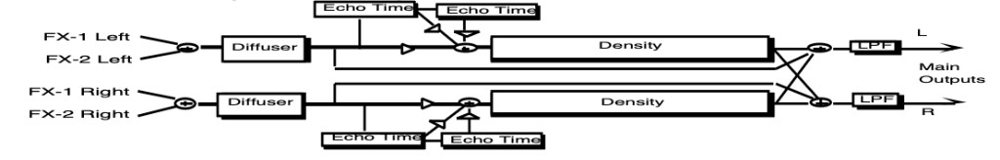
The signal goes directly through a diffuser which smears the signal. The signal is then routed to a decay diffuser (Density), and is diffused over a period of time. Within the density the signal goes through a high-frequency damper. The signal is then routed to the output. After the density, the signal passes through a low pass filter. There are two echo times between the diffuser and the density. There is also an external dry signal (not shown) that goes directly from the input to the Main Output (DRY). The FX1 and FX-2 MIX parameters can be routed into the effect with different Dry/Wet mixes.
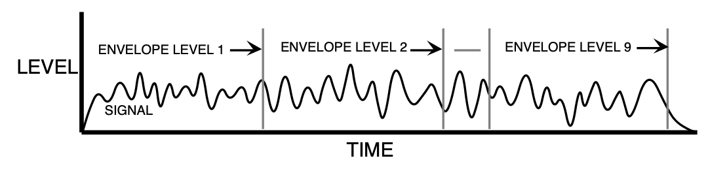
Control the output tap levels sequenced in time across the density from input to output. Envelope Level 1 is tapped right after the diffusers and before the echoes (see the diagram). If this is undesirable, set Envelope Level 1 to 0. Envelope Levels 8 and Envelope Levels 9 are positioned at the very end of the Density; setting these too high can cause excessive ringing. Envelope Levels 8 and Envelope Levels 9 are also very dry. Set all nine tap levels to find the envelope for your application. We recommend the average Envelope Level not to exceed a value of 45 to prevent overdriving these reverbs.
Controls the number of echoes.
DENSITY-2 controls the number of echoes in a lower-frequency range. In general, to get the smoothest sound, DENSITY-2 is usually less than the value of DENSITY-1.
Smears the input signal transients of higher-frequency ranges. Higher values are recommended for smoother percussion. Very low values will give a highly repetitive echo-like sound. DIFFUSION-1 and DIFFUSION-2 exist within each diffuser block (see signal routing diagram).
DIFFUSION-2 is similar to DIFFUSION-1, but offers control of lower frequencies. In general a setting of 50 can be considered an equal mix of dry/diffused sound. This setting is a good starting point.
Controls the level of the diffused input signal which is nearly instantaneous with respect to the input. This signal is injected directly into the Density at the specified level.
Controls the left/right stereo balance of the gated reverb signal. A setting of -99 would offer hard left, whereas a setting of +99 would offer hard right. A setting of +0 would place the reverb in the center of the stereo spectrum.
HF DAMPING is located within the Density. This parameter selects the amount of high-frequency energy to be filtered out.
The high-frequency bandwidth parameter acts as a low-pass filter on the output signal, controlling the amount of high frequencies that will be heard. The higher the setting the more high frequencies are heard. This works the same way that a tone control would work on a guitar.
Controls the amount of time it takes for the first pre-echo to be injected into the Density. Pre-echoes are the sounds that have been reflected back from the walls or other reflective surfaces.
Controls the level of the first pre-echo.
Controls the amount of time it takes for the second pre-echo to be injected into the Density.
Controls the level of the second pre-echo. Experiment with both positive and negative on all echoes to change the tonal character of the results.
GATED REVERB provides an excellent gated reverb. When a reverb is muted part way through, it creates a gated sound. To achieve this gated effect, both the Gated and Reverse reverbs must gate a number of internal parameters, not just the output amplitude envelope. It is however, the output amplitude over which the user has control. The TS‑10 offers a highly controllable gated reverb, optimized for percussive instruments, but useful for any signal. The gate is first opened when the input signal passes the trigger threshold. This trigger threshold is set as low as possible by the user, so that none of the input signal is missed. The gated reverb is distinguished from the reverse reverb by retriggering whenever the input signal passes a retrigger (user programmable) threshold (see diagrams). The gate will stay open as long as the input signal remains above the retrigger threshold, and all the input signals will be accumulated under this gate until the total input signal level falls below the retrigger threshold. When this happens, the Hold time will begin (as shown in the diagram below). The reason for two thresholds is to eliminate false retriggering and to ensure precise hold-time durations. If you desire a separate gate on each note, use the Non Lin reverbs.
The topology for the Gated Reverb is derived from the Plate Reverb. The FX1 and FX2 parameters can be routed into the effect with different Dry/Wet mixes.
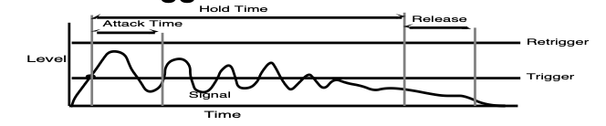
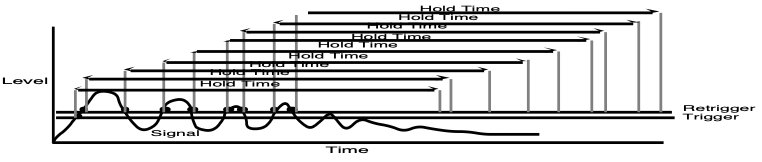
This parameter sounds best when set to low values. Its function is to filter out more and more high-frequency energy. For the most natural sounding reverse effect, we recommend a setting of 00.
DEFINITION controls the rate at which echo density is increased with time. If set too high, the echo density will build at a rate that exceeds the decay rate. This can be used for a special effect.
DIFFUSION-1 smears the input signal making a smoother sounding reverb. Controls the high-frequency ranges. For percussion sounds, high values are recommended.
Similar to and in series with DIFFUSION-1, this parameter controls lower-frequency ranges.
Sets the ATTACK of the gated reverb once the incoming signal has reached the trigger level.
Generally the attack should be short and not set longer than the HOLD. This parameter should not be used to achieve a reverse reverb envelope, because here the attack volume increases whereas in the Reverse Reverb the attack volume accelerates.
Controls the amount of time it takes for the reverberation to decay.
Sets the amount of time that the reverb will hold after the retrigger and before the release. The HOLD will begin again if retriggered.
Sets the amount of time after the HOLD has elapsed for the gated reverb to shut down. Generally these times are very short.
Controls the delay time of an internal dry stereo signal to create a slapback. In general, the SLAPBACK - TIME is greater or equal to the HOLD time to achieve a reverse effect.
Adjusts the volume of the slapback (internal dry) signal. A value of 00 would eliminate any audible slapback.
This parameter sets the level at which the Gated Reverb will retrigger. For a precise HOLD time that begins at the onset of the incoming source, this parameter should be set higher than the incoming signal to prevent retriggering. After the incoming signal reaches the trigger threshold, the gated reverb is activated. Every time the signal reaches the retrigger threshold, the gated reverb will retrigger causing the HOLD time to restart.
If the level of this parameter is set lower than the incoming signal, the gated reverb will continue to retrigger. With a high DECAY level, this adds a cavernous quality to percussion instruments.
Sets the signal level that triggers the gated reverb. When the incoming signal reaches this value, it triggers (starts) the gated reverb. Higher values would require a stronger incoming signal. Set this parameter as low as possible to work with your particular source, but not too low to cause false triggering.
These parameters control four early reflection levels. Setting these levels to lower values will produce a wetter sound.
Controls the left/right stereo balance of the Gated Reverb signal. A setting of -99 would offer hard left, whereas a setting of +99 would offer hard right. A setting of +00 would place the reverb in the center of the stereo spectrum.
Adjusts the volume of the slapback (internal dry) signal. A value of 00 would eliminate audible slapback.
Set this parameter as low as possible to work with your particular sound source. To eliminate false triggering, it should not be set too low. When the input signal rises above this threshold, the Reverse Reverb envelope will begin.
REVERSE REVERB 2 is identical to REVERSE REVERB, except this algorithm will retrigger by an assigned input signal level (threshold) determined by the user. Once triggered, the reverse envelope will proceed to completion, unless retriggered by subsequent input signals. If you are looking for a reverse effect that will not retrigger, try using the previous reverse reverb algorithm. The FX1 and FX2 MIX parameters are used to select different Dry/Wet mixes.
This parameter sounds best when set to low values. Its function is to filter out more and more high-frequency energy. For the most natural sounding reverse effect, we recommend a setting of 00.
DEFINITION controls the rate at which echo density is increased with time. If set too high, the echo density will build at a rate that exceeds the decay rate. This can be used for a special effect.
DIFFUSION-1 smears the input signal making a smoother sounding reverb. Controls the highfrequency ranges. For percussion sounds, high values are recommended.
Similar to and in series with DIFFUSION-1, this parameter controls lower-frequency ranges.
This parameter sets the duration over which the reverb builds. It is recommended that you set this value less than the HOLD time.
Controls the amount of time that the reverse will sound after it has been triggered. Rule of thumb: don’t set the HOLD time much longer than the ATTACK time.
Determines the RELEASE time after the HOLD time has elapsed. Generally this time is very short. Lower values offer an abrupt cutoff.
Used to capture transients that occur before the trigger. This parameter is critical to the sound quality. You can determine how much pretrigger sound will be injected into the reverse reverb tank.
Set this parameter as low as possible to work with your particular sound source. To eliminate false triggering, it should not be set too low. When the input signal rises above this threshold, the reverse envelope will begin.
Performance / Composition Synthesizer · Version 3.0
Two independent professional quality stereo digital delays. Both FX1 and FX2 can have different Mix, Feedback, and Delay Time settings.
Controls the mix between the original signal and each delay. Setting these parameters to 00 will allow only the unprocessed signal to be heard, while a setting of 99 will eliminate it completely, with only the delay portion remaining.
Determines the amount of signal that will be fed from the output of each delay back into the input, increasing the number of repeats in the delay.
Determines the amount of time between delays. Each value increases the delay time by 1 millisecond. The Left and Right channels are independently adjustable.
Multitap Delay produces four independent controllable delays. The EFFECT MIX FX1 and FX2 parameters can be routed into the effect with different Dry/Wet mixes. This algorithm sounds best with a mix of wet and dry.
Sets the amount of delay time for the independent delays. Experiment with different settings to find the right mix for your sound source and application. Some interesting effects can be implemented by using a real-time modulation controller for these parameters.
Adjusts the volume of the delayed signals against the original dry signal. A level of 00 will offer no audible delay.
Determines the amount of signal that will be fed from the output back into the input, increasing the number of repeats in the delays. A setting of 99 would offer an infinite delay.
Determines the location of the delays in the stereo spectrum. A value of -99 is panned far left, and +99 is far right.
| DELAY-2 TIME | DELAY-3 TIME | DELAY-4 TIME |
| LEVEL | LEVEL | LEVEL |
| REGEN | REGEN | REGEN |
| PAN | PAN | PAN |
Each of the four discrete delays has identical parameters and ranges as described above.
Controls the cutoff of a low pass filter on the feedback signal, which adjusts the amount of damping to the feedback signals. The higher the number, the more the signals are dampened.
EQ- -STEREO DELAYLFO features a parametric EQ and a stereo digital delay that provides LFO modulation of a wide range of delays. This algorithm sounds great with an electric piano, but try it with any source!
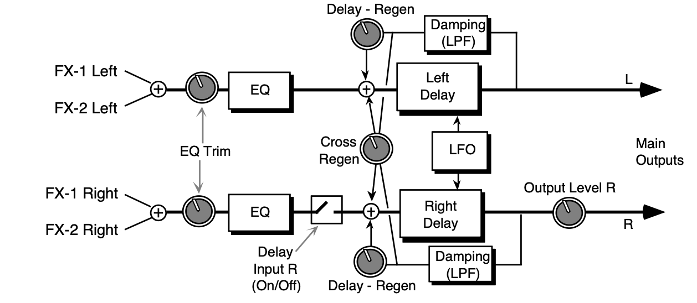
The EFFECT MIX FX1 and FX2 parameters can be routed into the effect with different Dry/Wet mixes.
Controls the rate of pitch modulation which is the LFO. To achieve a chorusing effect, this rate must be very slow.
Controls the excursion of pitch modulation. Since the rate is usually very slow, the width is usually large.
When this parameter is IN-PHASE, the left and right choruses will modulate their detunes together. When set to OUT-OF-PHASE, the detune on the left channel will go up while the detune on the right will go down.
Disables the input into the right side delay line. The right delay line will still get input from the CROSS REGEN. This allows a ping-pong delay effect.
Controls the right output signal level.
Controls the amount of regen (regeneration) applied to the delay time taps. The sign of the value determines the polarity of the regen.
Determines the amount of time between the input signal and the left delay output.
Determines the amount of time between the input signal and the right delay output. Set this differently from the left delay time to achieve dotted 1/8th note type effects.
Allows you to feedback the delayed signals to their opposite sides; the left voice crosses to the right voice, and the right voice crosses to the left voice. A setting of +99 or -99 will cause infinite delay. Be careful, if the delay regen is set too high, it may cause this parameter to “blow up.”
Adjusts the cutoff of a low pass filter on the feedback signal, which controls the amount of damping to the feedback signals. The higher the number, the more the signals are damped.
Allows you to adjust the input volume of the EQs to eliminate the possibility of clipping boosted signals.
Sets the cutoff-frequency of the lower-frequency band shelving filter.
Sets the amount of boost or cut applied to the low shelving filter.
Sets the cutoff-frequency of the high shelving filter.
Sets the amount of boost or cut applied to the high shelving filter.
EIGHT VOICE CHORUS offers a symphonic chorused sound having eight different voices and using eight separately randomized LFOs. This algorithm also offers a user programmable stereo delay in a cross coupled configuration between the left and right chorused outputs (see diagram).
This algorithm is good for creating an ensemble of instruments from single sources (there is no internal filtering applied to any of the chorused voices). The EFFECT MIX FX1 and FX2 CHORUS parameters can be routed into the effect with different Dry/Wet mixes. For this algorithm we recommend a mix of around 50 for a starting point.
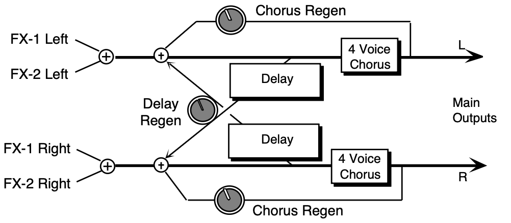
Controls the eight ganged rates of modulation of the respective voices and produces an effect similar to both vibrato and tremolando occurring at the same time.
Controls the excursion of the vibrato of all the individual voices.
Determines the amount of signal that will be fed from the output of the chorus back into the input of the chorus. A value of 00 will eliminate the regeneration effect.
This parameter offers a synthesized stereo field. The highest value is true stereo, intermediate values have the left and right signals mixed on both sides, and the lowest value yields only the left input channel from the right and left outputs. This parameter, though not a stereo pan, provides some interesting stereo effects when controlled by a modulation source.
Determines the amount of signal that will be fed from the delay output back into the chorus input, increasing the number of repeats in the delay for high values. A value of 00 will eliminate the delay effect.
Controls the amount of time that the non-chorused signal will delay for the left channel.
Controls the amount of time that the non-chorused signal will delay for the right channel.
This effect combines a four-voice chorus with the standard reverb. Assign a voice to FX-1 to get reverb after chorus, or use FX-2 for reverb only.
Controls the Dry/Wet mix within the chorus itself.
Controls the four rates of modulation of the delay time of the chorus. The delay modulation produces vibrato and tremolo.
Controls the depth of vibrato and tremolo.
Controls the amount of feedback applied to the chorus. The sign of the value determines the polarity of the feedback. Feedback accentuates the complexity of the “swept” signal.
Controls the amount of time it takes for the reverberation to decay to a low level (-60 dB) after the input signal stops.
Controls the level of pre-echoes of the input signal added directly to the reverb output.
Controls the rate of attenuation of high frequencies in the decay of the reverberation. As natural reverb decays, some high frequencies tend to get absorbed by the environment. Increasing the value of this parameter will filter out increasing amounts of high-frequency energy.
Acts as a low pass filter on the signal going into the reverb, controlling the amount of high frequencies that will pass into the effect. The higher the setting, the more high frequencies are allowed to pass.
Boosts or cuts the rate at which low frequencies will decay.
Determines whether the early reflections will appear as a series of discrete echoes (lower values) or will be more diffused (higher values).
Controls the LFO rate of detuning incorporated within the reverb. Detuning creates a slight pitch shift into the reverberated signal, giving it a more natural sounding decay by breaking up resonant nodes.
Controls the depth of the detuning, that is, how much the pitch will change. Low values yield a metallic sound. Some voices sound best with very low values.
This effect combines a four-voice chorus with a plate reverb, sporting superior randomization and poly-phase interpolation. Assign a voice to FX-1 to get reverb after chorus, or use FX-2 for reverb only.
Controls the Dry/Wet mix within the chorus itself.
Controls the four rates of modulation of the delay time of the chorus. The delay modulation produces vibrato and tremolo.
Controls the depth of vibrato and tremolo.
This parameter offers a synthesized stereo field. The highest value is true stereo, intermediate values have the left and right signals mixed on both sides, and the lowest value yields only the left input channel from the right and left outputs. This parameter, though not a stereo pan, provides some interesting stereo effects when controlled by a modulation source.
Controls the amount of feedback applied to the chorus. The sign of the value determines the polarity of the feedback. Feedback accentuates the complexity of the “swept” signal.
Controls the amount of time it takes for the reverberation to decay to a low level (-60 dB) after the input signal stops.
Creates a delay in the amount of time it takes before the original signal is fed into the reverb. The range is based in milliseconds.
Controls the rate of attenuation of high frequencies in the decay of the reverberation. As natural reverb decays, some high frequencies tend to get absorbed by the environment. Increasing the value of this parameter will filter out increasing amounts of high-frequency energy.
Acts as a low pass filter on the signal going into the reverb, controlling the amount of high frequencies that will pass into the effect. The higher the setting, the more high frequencies are allowed to pass.
Controls the LFO rate of detuning incorporated within the reverb. Detuning creates a slight pitch shift into the reverberated signal, giving it a more natural sounding decay by breaking up resonant nodes.
Controls the depth of the detuning, that is, how much the pitch will change. Low values yield a metallic sound. Some voices sound best with very low values.
Controls the rate at which echo density is increased with time. Setting this parameter too high can cause the echo density to build at a rate which exceeds the decay rate.
These values, in series with each other, smear the input signal transients, to diffuse and smooth the sound. Lower values will cause impulse sounds to appear as a series of discrete echoes, while higher values tend to increase the smear (smoother sounding with fewer discrete echoes).
Experiment with different levels between the diffuser parameters to find the settings that are right for your source. We recommend settings of 50 for starters.
This effect algorithm is a serial version of the DDL + CHORUS + REV parallel effect, combining a digital delay with a chorus and a plate reverb. The second sub-page (not user-programmable) shows how this effect is routed:
Controls the amount of Effect A (DDL) being sent into Effect B (CHORUS). A setting of 99 would yield a serial connection between Effect A and the chorus for voices sent to FX1 and panned hard left (on the Output page). A setting of 00 would offer no chorusing.
Controls the amount of Effect B (CHORUS) being sent into the reverb. This would allow you to add reverb to voices assigned to FX1 and panned hard right. A setting of 99 would yield a serial connection between the CHORUS and the reverb for voices sent to FX1 and panned hard right (on the Output page).
Controls the amount of Effect A (DDL) being sent into the reverb. This would allow you to add reverb to voices assigned to FX1, without having to add any chorusing.
Defines how much of the voices assigned to FX2 (on the Output page) will be sent into the Reverb. This allows you to fine tune the amount of reverb coloration you want to add to your voices.
This parameter allows you to define how much of the FX2 signal you want to completely bypass the Reverb. By setting this parameter to 99 and the FX2- -REVB parameter to 00, you can assign voices to be completely dry.
Controls the mix between the original signal and the delay. Setting this parameter to 00 will allow only the unprocessed signal to be heard, while a setting of 99 will eliminate it completely, with only the delay portion remaining.
Adjusts the volume of the delayed signals against the original dry signal. A level of 00 will offer no audible delay.
Determines the location of the delays in the stereo spectrum. A value of -99 is panned hard left, and +99 is hard right. If set to either hard left or hard right, the delayed signal for the opposite side is inaudible.
Determines the amount of signal that will be fed from the output of the left delay back into the input, increasing the number of repeats in the delay. A setting of 99 would offer an infinite delay.
Controls the cutoff of a low pass filter on the feedback signal, which adjusts the amount of damping to the feedback signals. The higher the number, the more the signals are dampened.
Sets the amount of delay time for the independent delays. Each value increases the delay time by 1 millisecond. Experiment with different settings to find the right mix for your sound source and application. Some interesting effects can be implemented by using a real-time modulation controller for these parameters.
Controls the Dry/Wet mix within the chorus itself. For starters, we recommend settings of 50.
Adjusts the volume of the chorused signal. A level of 00 will offer no audible signal.
Determines the location of the chorused signal in the stereo spectrum. A value of -99 is panned hard left, and +99 is hard right.
Determines the location of the dry signal in the stereo spectrum. A value of -99 is panned hard left, and +99 is hard right.
Controls the nominal delay time of the chorus about which the delay modulation occurs.
Adjusting this parameter will change the tonal character of the effect. This delay time is not related to the REGEN or the DDL delays.
Controls the four rates of modulation of the delay time of the chorus. The delay modulation produces vibrato and tremolo.
Controls the depth of vibrato and tremolo.
Controls the depth of the detuning, that is, how much the pitch will change. Low values yield a metallic sound. Some voices sound best with very low values.
Controls the amount of feedback applied to the chorus. The sign of the value determines the polarity of the feedback. Feedback accentuates the complexity of the “swept” signal.
Controls the amount of time it takes for the reverberation to decay to a low level (-60 dB) after the input signal stops.
This parameter creates a time delay before the original signal is fed into the reverb. The range is based in milliseconds.
Controls the rate of attenuation of high frequencies in the decay of the reverberation. As natural reverb decays, some high frequencies tend to get absorbed by the environment. Increasing the value of this parameter will filter out increasing amounts of high-frequency energy.
Acts as a low pass filter on the signal going into the reverb, controlling the amount of high frequencies that will pass into the effect. The higher the setting, the more high frequencies are allowed to pass.
Controls the rate at which echo density increases with time. Higher values can cause the echo density to build at a rate that exceeds the decay rate. For the best performance, try to select the highest value that works with your sound source.
These parameters determine whether the early reflections will appear as a series of discrete echoes (lower values) or will be more diffused (higher values).
This effect algorithm, similar to the previous algorithm, offers a different reverb. For a complete description of the SENDS, DDL, and CHORUS parameters, refer to the previous algorithm in this section.
Controls the amount of time it takes for the reverberation to decay to a low level (-60 dB) after the input signal stops.
This parameter creates a time delay before the original signal is fed into the reverb. The range is based in milliseconds.
Controls the rate of attenuation of high frequencies in the decay of the reverberation. As natural reverb decays, some high frequencies tend to get absorbed by the environment. Increasing the value of this parameter will filter out increasing amounts of high-frequency energy.
Acts as a low pass filter on the signal going into the reverb, controlling the amount of high frequencies that will pass into the effect. The higher the setting, the more high frequencies are allowed to pass.
These three fields simulate the depth of the room/hall. Think of these fields as three different microphones placed at various distances within the room/hall (the first is closest to the front, the third is farthest from the front). When the range (volume) is higher for the first value, the sound appears closer to the front, whereas a higher setting for the last value appears farther from the front, suggesting a deeper (wetter) room/hall.
Controls the rate at which echo density increases with time. Higher values can cause the echo density to build at a rate that exceeds the decay rate. For the best performance, try to select the highest value that works with your sound source.
These parameters determine whether the early reflections will appear as a series of discrete echoes (lower values) or will be more diffused (higher values).
This algorithm offers a serial version of the PARAM EQ+CHORUS+REV parallel effect. The second sub-page (not user-programmable) shows how this effect is routed:
For a complete description of the SENDS parameters, refer to the DDL- -CHORUS + REVRB 1 algorithm found earlier in this section.
Allows you to adjust the input level trim to the EQs to eliminate the possibility of clipping boosted signals.
Adjusts the output volume after the parametric EQ. With the LEVEL, BASS LEVEL, and TREBLE LEVEL set to high values, the OUTPUT parameter could be used to create a raspy distortion effect.
Determines the location of the EQ in the stereo spectrum. A value of -99 is panned hard left, and +99 is hard right.
Sets the center of the mid-frequency parametric.
This parameter is a bandwidth control that determines the width of the resonant peak at the midfrequency band. By lowering the value, you can produce a narrower bandwidth.
Sets the amount of boost or cut applied to this mid-frequency parametric.
Sets the amount of boost or cut applied to a 0 to 80Hz low-shelving filter.
Sets the amount of boost or cut applied to a 10 to 15K high-shelving filter.
For a complete description of the remaining parameters, refer to the DDL+CHORUS+REV algorithm found earlier in this section.
EQ- -CHORUS + EQ- -DDL combines an EQ and a chorus, with an EQ and a digital delay. This is the industry standard chorus effect, designed with very long delays to provide a modulated detune effect. This algorithm sounds great with a guitar sound, but try it with any source!
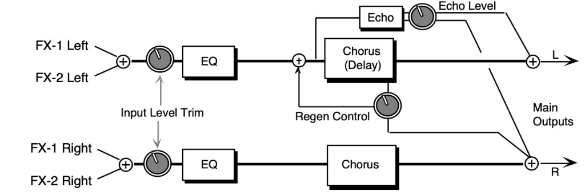
The signal enters a programmable EQ, which is preceded by an input level trim (EQ TRIM). The signal is then routed to the chorus which is heard directly at the output. There is also a delayed unchorused signal (sharing the same delay lines) that is routed back into the chorus. There is also a second signal from the delay line that is routed to the right side. There are two discrete echo times tapped out before the chorus delay line. These are unchorused echoes. The signal from the echoes is routed directly to the outputs. There is also a dry signal (not shown) that goes directly from the input to the Main Output (DRY). The EFFECT MIX FX-1 and FX-2 CHORUS parameters can be routed into the effect with different Dry/Wet mixes.
Controls the nominal delay time of the chorus about which the delay modulation occurs.
Adjusting this parameter will change the tonal character of the effect. This delay time is not related to the regen delays or the echo delays.
Controls the rate of pitch modulation which is the chorus. To achieve chorusing, this rate must be very slow.
Controls the excursion of pitch modulation. Since the rate is usually very slow, then the width is usually very large.
When this parameter is IN-PHASE, the left and right choruses will modulate their detunes together. When set to OUT-OF-PHASE, the detune on the left channel will go up while the detune on the right will go down.
Controls the amount of regeneration applied to the delay time taps. The sign of the value determines the polarity of the regen.
These parameters control the time delay for the left and right channel regen delay, and have nothing to do with the chorus effect.
Controls the volume of the discrete echo for both the left and right sides. Higher values offer louder echo, while a value of 00 will eliminate the echo. For sustained sounds, mid echo levels yield a “poor man’s reverb.”
These parameters control the chorus echo time. Higher settings yield a deeper echo. There are two discrete echoes, one to the left and one to the right.
Allows you to adjust the input volume of the EQs to eliminate the possibility of clipping boosted signals.
Sets the cutoff-frequency of the lower-frequency band shelving filter.
Sets the amount of boost or cut applied to the low shelving filter.
Sets the cutoff-frequency of the high shelving filter.
Sets the amount of boost or cut applied to the high shelving filter.
The FLANGER + REVERB algorithm is similar to the CHORUS + REVERB algorithm with a single LFO. Assign a voice to FX-1 to get reverb after flange, or use FX-2 for reverb only.
Controls the center of the flanger width.
Controls the rate of modulation of the flanger effect.
Controls the range of the high to low-frequency sweep in the flanger effect.
Controls the amount of feedback applied to the flanger. The sign of the value determines the polarity of the feedback.
Controls the depth of the notches created by the flanging effect.
Controls the amount of time it takes for the reverberation to decay to a low level (-60 dB) after the input signal stops.
Controls the level of pre-echoes of the input signal added directly to the reverb output.
Controls the rate of attenuation of high frequencies in the decay of the reverberation. As natural reverb decays, some high frequencies tend to get absorbed by the environment. Increasing the value of this parameter will filter out increasing amounts of high-frequency energy.
Acts as a low pass filter on the signal going into the reverb, controlling the amount of high frequencies that will pass into the effect. The higher the setting, the more high frequencies are allowed to pass.
This control will boost or cut the rate at which low frequencies will decay.
Determines whether the early reflections will appear as a series of discrete echoes (lower values) or will be more diffused (higher values).
Controls the LFO rate of detuning incorporated within the reverb. Detuning creates a slight pitch shift into the reverberated signal, giving it a more natural sounding decay by breaking up resonant nodes.
Controls the depth of the detuning, that is, how much the pitch will change. Low values yield a metallic sound. Some voices sound best with very low values.
EQ- -FLANGER + DELAY combines an EQ and a flanger, and a digital delay. Use flanging to get that “jet aircraft woosh” effect.
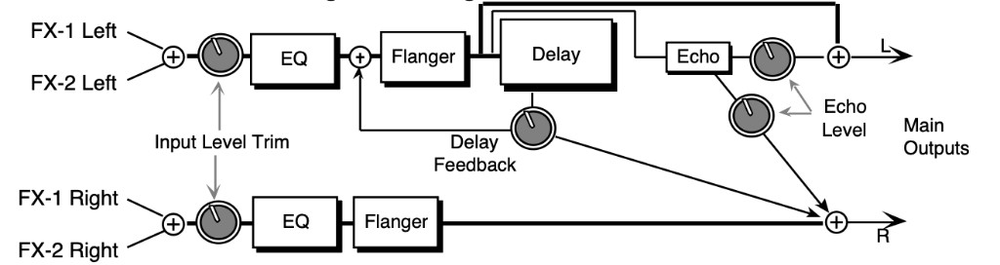
In this algorithm the signal enters an input level trim (EQ TRIM) followed by a programmable EQ, and then is routed to the flanger. The flanger is routed directly to the output. The left channel signal passes through the delay and is routed back into the flanger. Another signal from the delay is routed to the output on the right side. The DELAY - REGEN parameter controls both delay levels. There are two discrete echoes that are sent to the left and right outputs respectively.
The signal from both echoes has one level control (ECHO - LEVEL). There is also an external dry signal (not shown) that goes directly from the input to the Main Output (DRY). The EFFECT MIX FX-1 and FX-2 parameters can be routed into the effect with different Dry/Wet mixes.
Controls the sweep center of the flanger effect. The larger the flanger center, the wider will be the available width.
Controls the rate of modulation of the flanger effect.
Controls the range of the high to low-frequency sweep in the flanger effect.
Controls the amount of feedback applied from the output to the flanger input. The sign of the value determines the polarity of the feedback.
Controls the depth of the notches created by the flanging effect. A setting of +00 will disable the flanging effect. A setting of +00 will also provide a doppler effect for wide moderately slow LFO rates.
Controls the sample rate of a sample and hold network. This is applied to the LFO within the flanger. When in hold, the effect will be to create momentarily fixed notches within thefrequency spectrum (if the notch depth is not +00). A setting of 001 will have the largest space between samples. Higher values will increase the number of holds per second, making the flanging flow more smoothly. The sample and hold function can be turned off (when set to 000).
Determines whether the flanger on the left and right channels is modulating IN-PHASE or OUT-OF-PHASE.
Controls the level of the delay time taps. The sign of the value determines the polarity of the feedback.
These parameters control the time delay for the left and right channel regen delays. The left is the “ping,” and the right is the “pong.”
Controls the volume of the discrete echoes for both the left and right sides. A setting of 00 would eliminate any audible echo.
These parameters control the flanger echo times for the left and right sides. Higher values yield a deeper echo.
Allows you to adjust the input volume of the EQs to eliminate the possibility of clipping boosted signals.
Sets the cutoff-frequency of the lower-frequency band shelving filter.
Sets the amount of boost or cut applied to the low shelving filter.
Selects the cutoff of the upper-frequency band high shelving filter.
Sets the amount of boost or cut applied to the high shelving filter.
A 12-pole phase shifter with reverb. Assign a sound to FX-1 for reverb after phase, to FX-2 for just reverb, or to DRY to bypass the effect.
Controls the center of the phaser width.
Controls the rate of modulation of the phaser poles.
Controls the amount of modulation applied to phaser poles.
Controls the amount of feedback applied to the phaser. The sign of the value determines the polarity of the feedback.
Controls the depth of the notches created by the phasing.
Controls the amount of time it takes for the reverberation to decay to a low level (-60 dB) after the input signal stops.
Controls the level of pre-echoes of the input signal added directly to the reverb output.
Controls the rate of attenuation of high frequencies in the decay of the reverberation. As natural reverb decays, some high frequencies tend to get absorbed by the environment. Increasing the value of this parameter will filter out increasing amounts of high-frequency energy.
Acts as a low pass filter on the signal going into the reverb, controlling the amount of high frequencies that will pass into the effect. The higher the setting, the more high frequencies are allowed to pass.
Boosts or cuts the rate at which low frequencies will decay.
Determines whether the early reflections will appear as a series of discrete echoes (lower values) or will be more diffused (higher values).
Controls the LFO rate of detuning incorporated within the reverb. Detuning creates a slight pitch shift into the reverberated signal, giving it a more natural sounding decay by breaking up resonant nodes.
Controls the depth of the detuning, that is, how much the pitch will change. Low values yield a metallic sound. Some voices sound best with very low values.
PHASER + DELAY combines a phaser with a digital delay. The phaser creates non-harmonically spaced moving notches in the signal spectrum, whereas a flanger creates harmonic spacing. This phaser implements a stereo twelve pole phasing network to achieve time delay which is a function of-frequency; this is what differentiates the phaser from the flanger. The phasing effect is achieved within the phaser topology, so it does not depend upon the external mix. A delay is included at the left output of the phaser that feeds back into the phaser (see the diagram). Setting the phaser REGEN parameter (shown at the knobs) to 00 will disable this delay function. The
DELAY REGEN also controls the delay feed forward level of another tap sent to the right channel. This delay topology achieves a 1.5 second ping-pong effect, and is very effective as a “poor man’s reverb.” The FX-1 and FX-2 parameters can be routed into the effect with different Dry/Wet mixes.
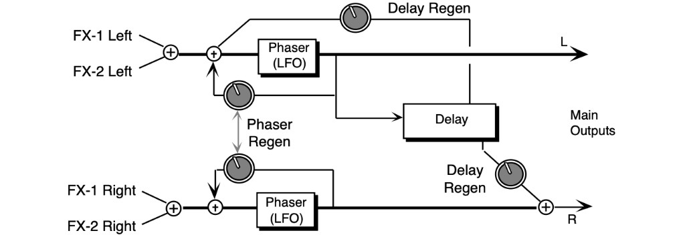
Controls the phaser pole center. High values raise the nominal spectral location of the “woosh” sound, while low values lower the “woosh.” The range from high to low is controlled with the phaser width.
The LFO is within the phaser network. This parameter controls the rate of modulation of the phaser poles. The higher the value the faster the rate. Lower values work best with sustained signals.
Controls the width of the notch excursion. For large excursions set this parameter to 99. Doing so can give a very high “woosh” and a very low “woosh.”
Controls the amount of feedback applied to the left and right channel phaser. The sign of the value determines the polarity of the feedback.
Controls the depth of the notches created by the phasing. Deep notches occur in the phased spectrum when the parameter is set to 99. When this parameter is set to +00, there exists no phasing (i.e. notches), but there is a doppler effect with higher phase rates.
Controls the sample rate of a sample and hold network applied to the LFO within the phaser.
When in hold, the effect will be to create momentarily fixed notches within the-frequency spectrum (if the notch depth is not +00). A setting of 001 will have the largest space between samples. Higher values will increase the number of holds per second, making the phasing flow more smoothly. The sample and hold function can be turned off (when set to 000).
Determines whether the phaser on the left and right channels is modulating IN-PHASE or OUT-OF-PHASE.
Controls the feedback amount for the delay effect. The sign of the value determines the polarity of the feedback. A value of +00 will eliminate the delay effect. This parameter also controls the feed forward level.
This parameter sets the delay time for the left side. This is the “ping.”
Controls the feed forward delay time for the right side. This is the “pong.”
EQ- -TREMOLO + DELAY combines an EQ and a tremolo effect, which is a pulsating change in volume, with a digital delay.
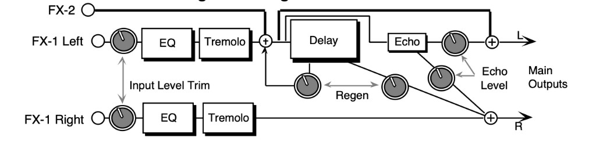
The signal enters an input level trim (EQ TRIM) followed by a programmable EQ, and is then routed to the tremolo. The tremolo is routed directly to the output. The left channel signal passes through the digital delay and is routed back into the delay. There is another signal from the delay that is routed to the output on the right side. One regen parameter (DELAY - REGEN) between the delay sends controls the left and right delay level. This constitutes the “ping-pong” effect. There are two echoes that are sent to the left and right outputs respectively. The signal from the two discrete echoes has one level control. There is also an external Dry signal (not shown) that goes directly from the input to the output. The EFFECT MIX FX-1 POST-DDL and FX-2 DDL parameters can be routed into the effect with different Dry/Wet mixes.
Sets the rate of modulation. Mid values create a faster wavering sound. When used in conjunction with the S/H RATE parameter it can create some interesting staccato effects.
Sets the depth of amplitude modulation.
Controls the sample rate of a sample and hold network applied to the LFO within the tremolo.
When in “Hold,” the effect will be to fix the instantaneous amplitude (if the depth is not 00). A setting of 001 will have the largest space between holds. Lower settings create a staccato effect, whereas higher values will increase the amount of samples, making the tremolo flow more smoothly. This parameter can also be turned off (when set to 000).
Controls whether the left and right channels of the stereo tremolo will modulate IN-PHASE or OUT-OF-PHASE.
Controls the amount of regen applied to the delay time taps. The sign of the value determines the polarity of the regen. A value of +00 will eliminate the audible delay.
These parameters control the time delays for the left and right channel regen delays, and has nothing to do with the tremolo effect.
Controls the volume of the discrete echo for both the left and right sides.
These parameters control the tremolo echo times for the left and right side. Higher settings yield a deeper echo.
Allows you to adjust the input volume of the EQs to eliminate the possibility of clipping boosted signals.
Selects the cutoff-frequency of the lower-frequency band shelving filter.
Sets the amount of boost or cut applied to the low shelving filter.
Selects the cutoff-frequency of the upper-frequency band high shelving filter.
Sets the amount of boost or cut applied to the high shelving filter.
EQ- -VIBRATO + DELAY combines an EQ and a vibrato effect (a pitch shifter modulating over a very small range), with a digital delay. Many vintage guitar amplifiers offered a vibrato control, but don’t feel that this effect is limited to guitar sounds, try this with other sources as well. There is a sample & hold parameter that doesn’t hold the instantaneous pitch shift, but if set properly will provide a “chirping” effect when acting on the input signal.
The signal enters a programmable EQ, which is preceded by an input level trim (EQ TRIM). The signal is then routed to the vibrato. The vibrato is routed directly to the output. The vibrato also passes through the delay which is then regenerated back into the delay. A different delay signal is routed to the output on the right side. This constitutes a “ping-pong” delay effect. The delay REGEN parameter between the delay sends controls the delay feedback amount. There are also two echoes that are sent to the left and right outputs respectively. The signal from the two echoes has one level control. There is also an external dry signal (not shown) that goes directly from the input to the Main Output (DRY). The EFFECT MIX FX-1 and FX-2 VIBRATO parameters can be routed into the effect with different Dry/Wet mixes.
Sets the amount of modulation. Higher values create a faster vibrating rate.
This parameter sets the width (adjusts the amount) of the modulation.
Controls the sample rate of a sample and hold network. This is applied to the LFO within the vibrato. When in hold (low values), it causes rhythmic chirps in the pitch of the audio signal.
Higher values will increase the number of holds per second, making the vibrato flow more smoothly. The sample and hold function is turned off when set to 000.
Controls the vibrato pitch direction of the left and right channels. When OUT-OF-PHASE, the quadrature pitch change on the left channel will lag 90˚ from the right. When IN-PHASE, both channels will change pitch together.
Controls the amount of positive or negative feedback applied to the regenerated delay. The sign of the value determines the polarity of the feedback. A value of +00 will eliminate any feedback.
Controls both left and right levels.
Controls the time delay on the left regenerated delay.
Controls the time delay on the right non regenerated delay.
Controls the volume of the discrete echo for both the left and right sides. A setting of 00 will eliminate any audible echo.
These parameters control the echo times for the left and right sides. Higher settings yield a deeper echo. There are two discrete echoes, one to the left and one to the right.
Allows you to adjust the input volume before the EQs to eliminate the possibility of clipping boosted signals.
This parameter selects the cutoff-frequency of the low shelving filter.
Sets the amount of boost or cut applied to the low shelving filter.
Selects the cutoff of the upper-frequency band high shelving filter.
Sets the amount of boost or cut applied to the high shelving filter.
The Pitch Shifters allow you to change the pitch of a signal to any pitch desired within a range of one octave in either direction. The TS‑10 offers three different pitch shift algorithms, each designed with a different purpose:
These algorithms sound best with an Effect Mix of wet and dry. You can assign a modulation controller for the Effect Mix parameters to bring in or fade out the pitch shifted signal. Try the different pitch shifters until you find the one that works best with your sound source, and for your application. This first algorithm is a “splicer type” of pitch shifter, which means that it drops or adds small sections of the original signal to the effect. PITCH SHIFTER does not incorporate zero crossing detection. This pitch shifter is best used for a doubling effect. Splicer type pitch shifters are popular because for low pitch shift ratios, splicing is infrequent. These pitch shifters can create very interesting stereo fields by panning each of two pitch shifted voices selectively, and because of the inherent time delay modulation of the algorithm. The FX-1 and FX-2 parameters can be routed into the effect with different Dry/Wet mixes.
Allows you to adjust the pitch of Voice-1 to an octave above or below the original pitch in semitones (half steps).
Lets you to fine tune the pitch of Voice-1.
Allows you to adjust the level of Voice-1. A setting of 00 would eliminate any audible pitch shift.
Allows you to assign the location of Voice-1 in the stereo field. A value of -99 would be far left, and +99 would be far right.
| VOICE-2 SEMI | LEVEL |
| FINE | PAN |
These parameters are identical to the VOICE-1 parameters, and allow you to define a second voice for independent pitch shifting.
Allows you to choose between a long/smooth setting, or a short/coarse setting. A smooth setting would sound best with slower sustaining chords, whereas a coarse setting would enhance a rapidly played musical passage. Depending on your sound source and musical needs, set this parameter accordingly. This parameter actually controls the effect transport delay; smooth yields a long transport delay, coarse yields a short transport delay.
Controls the rate of pitch modulation that creates a chorusing effect. To achieve chorusing, this rate must be very low.
Controls the excursion of pitch modulation. Since the rate is usually very low, then the width is usually very large.
FAST PITCH SHIFTER has a transport delay of only 10 msec and a maximum detune ratio of one semitone. Try shifting the voices slightly in both positive and negative values to create a fat sound. This algorithm should be used for pitch correction (for instance, try using the mod wheel as a pitch controller). The FX-1 and FX-2 parameters can be routed into the effect with different Dry/Wet mixes. Depending on its usage, this algorithm generally sounds best with a Mix of dry and wet. Try using the mod wheel with the Effect Mix parameter(s) to bring in or fade out the pitch shifted signal(s).
Allows you to fine tune the pitch of Voice-1.
Allows you to adjust the volume of Voice-1. A setting of 00 would eliminate any audible pitch shift.
This parameter allows you to assign the location of Voice-1 in the stereo field. A value of -99 would be far left, and +99 would be far right.
This parameter allows you to fine tune the pitch of Voice-2.
This parameter allows you to adjust the volume of Voice-2. A setting of 00 would eliminate any audible pitch shift.
Allows you to assign the location of Voice-2 in the stereo field. A value of -99 would be far left, and +99 would be far right.
Controls the rate of pitch modulation that creates a chorusing effect. To achieve chorusing, this rate must be very low.
Controls the excursion of pitch modulation. Since the rate is usually very low, then the width is usually very large.
PITCH SHIFTER + DELAY combines a pitch shifter with a digital delay. PITCH SHIFTER + DELAY uses a continual crossfading technique of pitch shifting. This technique maintains the stereo field exactly. This pitch shifter works best for large pitch shift ratios, in some circumstances. Another feature of this algorithm is a digital delay that feeds back into the pitch shift. This feature allows spiraling upward or downward pitch shifts. The EFFECT MIX FX-1 and FX-2 parameters can be routed into the effect with different Dry/Wet mixes. This algorithm sounds best with a Mix of wet and dry. Try using a modulation controller for this parameter to fade in or fade out the pitch shifted signal.
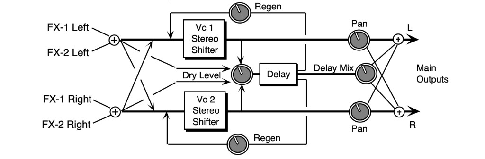
Allows you to adjust the pitch of Voice-1 up to an octave above or below the original pitch in semi-tones.
Allows you to fine tune the pitch of Voice-1.
This parameter adjusts the volume of Voice-1.
Allows you to assign the location of Voice-1 in the stereo field. A value of -99 would be far left, and +99 would be far right.
| VOICE-2 SEMI | LEVEL |
| FINE | PAN |
These parameters are identical to the previous ones, and control Voice-2.
Controls the amount of feedback from the output of the delay back into the input of the pitch shifter. This allows you to create special effects with ascending/descending delays.
These parameters control the amount of time for the pitch shifted signal to delay from the left and right inputs. The left and right delay times are completely independent.
Controls the mix between the delay signal and the pitch shifted signal. A setting of 00 would be all pitch shifter, and no delay. A setting of 99 will be all delay and no direct pitch shift.
Lets you to bypass the pitch shifter with an internal dry signal, and send it through the digital delay. Higher values would send more of the dry signal to the delay. The purpose of this parameter is to mix the dry signal appropriately with the pitch shifted delay signals.
Performance / Composition Synthesizer · Version 3.0
A rotating speaker simulation with reverb and distortion. Assign a voice to FX-1 to get reverb after the rotary speaker with distortion, or use FX-2 for reverb only. There are Variations on the first sub-page for the Rotary Speaker without Distortion.
The DIST INPUT parameter determines the input signal gain into the amplifier simulation, creating a tube-like overdrive.
The DIST OUTPUT parameter controls the output of the amplifier distortion. There is a (fixed) clean path in parallel with the distortion. Therefore, to eliminate distortion, set this parameter to 00.
A three-pole, low pass filter following the amplifier simulation. Controls the filter cutoff resulting in a brighter sound (for higher values) or a darker sound (low values).
Controls the level of the signal (distorted or not) applied to the rotary speaker. High gain will simulate a broken speaker. Also use higher settings when using little or no distortion, because distortion raises the signal level to the speaker.
Determines the rate of the rotary speaker when in the “Slow” setting. ROTOR SLOW determines the manual level for the rotary speaker rate when SPEED= SLOW, or when the selected modulator is at zero output level. Again, the higher the value, the faster the rate.
Determines the rate of the rotary speaker when in the “Fast” setting. The higher the value, the faster the rate.
Determines how long it will take for the rotor effect to speed up and slow down after switching from fast to slow or vice versa. Adjust this parameter to simulate the effect of the rotary speaker gradually picking up speed.
Determines how the rotary speaker will switch between slow and fast speeds. The behavior of the switch accurately reflects an actual rotary speaker, taking time to speed up or slow down, based on the value of the INERTIA parameter (see previous description). Any effect modulator can act as the SPEED SLOW or FAST controller. How the modulators will switch the rotor speed fall into two categories:
Controls the amount of time it takes for the reverberation to decay to a low level (-60 dB) after the input signal stops.
Controls the rate of attenuation of high frequencies in the decay of the reverberation. As natural reverb decays, some high frequencies tend to get absorbed by the environment. Increasing the value of this parameter will filter out increasing amounts of high-frequency energy.
Determines whether the early reflections will appear as a series of discrete echoes (lower values) or will be more diffused (higher values).
SPEAKER CABINET simulates the warm sound of an open-back speaker cabinet. SPEAKER CABINET is fabulous for a guitar, bass or any other stringed instrument sound. This algorithm contains the resonances and the non linearity of a real musical instrument speaker. The FX-1 and FX-2 parameters can be routed into the effect with different Dry/Wet mixes. For a brighter speaker emulation, try using TUNABLE SPEAKER.
Since speaker cabinets are “lossy,” output gain is required to compensate losses in perceived volume. Setting this gain too high will cause clipping of the output signal.
TUNABLE SPEAKER offers an EQ controllable speaker sound that is brighter than SPEAKER CABINET. By tuning three parametric filters, you can simulate many different speaker cabinet sounds that are used in all styles of music. The FX-1 and FX-2 parameters can be routed into the effect with different Dry/Wet mixes.
This parameter sets the center of the mid-frequency parametric. Higher values have a brighter sound.
This parameter is a bandwidth control that determines the width of the resonant peak at the center of the-frequency band. By raising the value, you can produce a narrower bandwidth.
This parameter sets the amount of cut (negative values) or boost (positive values) applied to this mid-frequency parametric.
| MID-2 FC | MID-3 FC |
| Q | Q |
| LEVEL | LEVEL |
These parameters are similar to the previous ones, but can be assigned to control different bandwidths within the mid-range.
Lets you to adjust the input level before the EQs to eliminate the possibility of clipping boosted signals.
Since speaker cabinets are “lossy,” output gain is required to compensate for losses in perceived volume. Setting this gain too high will cause clipping of the output signal.
These algorithms recreate the warm sound of a guitar tube amplifier. They do this by emulating tube distortion characteristics. These algorithms are good for all stringed instrument sounds.
GUITAR AMP 1, designed for Hard Rock, offers more distortion than GUITAR AMP 2, which is optimized for “bluesy” type sounds. The EFFECT MIX FX-1 and FX-2 parameters can be routed into the effect with different Dry/Wet mixes.
This parameter adjusts the amount of boost or cut applied to the incoming signal. We recommend a setting of +0 dB, since these emulations were optimized for distortion there. Lower preamp gains will result in less distortion, while higher preamp gains will yield clipping distortion. For low preamp gain, it may be desirable to use low tube bias values.
Controls the output level of the main amp before the output EQ.
For preamp gains approximately 00 dB, this parameter controls the emphasis of even to odd harmonics which determines the tone of the amp; mid values emphasize even harmonics and offer a warmer (“glowing tube”) sound, while the highest values may sound like tubes going bad. Tube bias and preamp gain are independent parameters. For low preamp gain, it may be desirable to use low tube bias values, because this more closely imitates the operation of a real amplifier.
Controls the input level to the pre-amp EQ to eliminate the possibility of clipping boosted signals.
Filters out the low frequencies before the preamp. The higher the value, the less low frequencies pass through.
Determines the center-frequency of the parametric filter before the preamp. Higher values have a brighter sound.
Determines the width of the resonant peak at the parametric filter center-frequency. While the Filter center parameter determines where (at what-frequency) this peak will occur, the Q setting controls the presence of the peak.
Adjusts the amount of boost or cut applied to the parametric filter in front of the preamp.
Sets the lower threshold level at which the noise gate shuts off the audio.
Sets the upper threshold level at which the noise gate passes the audio. The higher second threshold prevents false “turn ons.”
Sets the amount of time after the signal has elapsed for the noise gate to shut down. For a longer sustain, set this parameter higher.
Filters out the low frequencies of the main amp prior to the speaker. The higher the value, the less low frequencies pass through.
Filters out the high frequencies of the speaker. The lower the value, the less high frequencies pass through. This speaker filter is less selective than the speaker cabinet emulation algorithms.
Determines the filter center-frequency of the parametric in the main amp stage. Higher values have a brighter sound.
Determines the width of the resonant peak of the filter center. While the Filter center parameter determines where (at what-frequency) this peak will occur, the Q setting controls the presence of the peak.
Adjusts the amount of boost or cut applied to the main amp parametric.
Determines the filter center-frequency of the second parametric in the main amp stage. Higher values have a brighter sound.
Determines the width of the resonant peak of the second filter center.
Adjusts the amount of boost or cut applied to the second main amp parametric.
GUITAR AMP 3 combines an inverse expander with a bright distortion for amp lead sounds.
The inverse expander may be thought of as a compressor that amplifies all signals below the threshold. This algorithm is good for heavy metal and hard rock guitar solos. The FX-1 and FX-2 parameters can be routed into the effect with different Dry/Wet mixes.
Adjusts the amount of boost or cut applied to the EQ’d incoming signal. Lead sounds are obtained using high gain.
Controls the output level before the output EQ.
Sets the amount of inverse expansion. Expansion occurs below the threshold. If this is set to 3:1 for example, it will expand the change in signals below the threshold by three times in an attempt to make the signal amplitude approach the threshold level.
Sets the inverse expander threshold level. Signals beneath this level will be expanded, while signals that are above will be unaffected. As the input signal dies away below the threshold, the expander will increase the gain of the signal.
Controls the input level to the preamp EQ to eliminate the possibility of clipping boosted signals.
Determines the filter center-frequency of the parametric in the preamp stage. Higher values have a brighter sound.
Determines the width of the resonant peak at the filter center. While the Filter center parameter determines where (at what-frequency) this peak will occur, the Q setting controls the presence of the peak.
This parameter adjusts the amount of boost or cut applied to the preamp parametric.
Sets the lower threshold level at which the noise gate shuts off the audio.
Sets the upper threshold level at which the noise gate passes audio. This higher second threshold prevents false “turn ons.”
Sets the amount of time after the signal has elapsed for the noise gate to shut down. For a longer sustain, set this parameter higher.
Filters out the low frequencies of the main amp prior to the speaker. The higher the value, the less low frequencies pass through.
Filters out the high frequencies of the speaker. The lower the value, the less high frequencies pass through. True speaker emulations are provided as separate algorithms.
Determines the filter center-frequency of the parametric in the main amp stage. Higher values have a brighter sound.
Determines the width of the resonant peak at the filter center. While the Filter center parameter determines where (at what-frequency) this peak will occur, the Q setting controls the presence of the peak.
Adjusts the amount of boost or cut applied to the main amp parametric.
Determines the filter center-frequency of the second parametric in the main amp stage. Higher values have a brighter sound.
Determines the width of the resonant peak of the second filter center.
Adjusts the amount of boost or cut applied to the second main amp parametric.
VCF- -DISTORTION- -VCF combines a voltage control filter, a raspy distortion, and a second voltage control filter. Three effects can be obtained: Distortion, Wah-wah, and Auto-wah. The last two functions use the same VCF. These filters can be disabled or used as EQ if desired. The second VCF that exists after the distortion can be set to act like a simple speaker simulator, or it can be modulated in parallel with the pre-distortion VCF.

The EFFECT MIX FX-1 and FX-2 parameters can be routed into the algorithm with different Dry/Wet mixes.
Controls the gain going into the distortion effect. DIST LEVEL - IN will boost the signal level up to 48 dB. For more distortion, use a high input level gain and turn the OUT down to keep the volume under control. For less distortion, use a low gain input level and a higher output volume.
Controls the gain coming out of the distortion effect. Generally, if the DIST LEVEL - IN is set high, set this parameter lower to control the volume.
Allows you to bypass the distortion (as shown on the signal routing diagram).
Filters out the low frequencies before the EQ. The higher the value, the less low frequencies will pass through.
Determines the filter cut off-frequency before the distortion. Higher values have a brighter sound. This parameter can be modulated, using a CV Pedal for a wah-wah pedal effect. To disable the distortion filter, set this parameter to 99. To use as an EQ, set the desired value and make sure ENV AMT is +00. To use as the auto-wah, set this parameter close to 01 (lower values) and turn on ENV AMT.
Determines the level and width of the resonant peak at the filter cutoff point. While the PRE-DIST VCF FC parameter determines where (at what-frequency) this peak will occur, the Q setting controls the presence of the peak. This setting is important for the auto-wah effect.
Determines how much the amplitude of the incoming signal will modify the distortion filter cutoff-frequency. When set to +00, no modification will occur. When set to mid positive values, the PRE-DIST VCF FC will go high, but then come down to its nominal setting. When set to negative mid values, the PRE-DIST VCF FC will go low, and then go back up to its nominal setting How quickly it does so is determined by the ATTACK and RELEASE parameters. This sound is the auto-wah; positive values will boost the high frequencies, offering an “oww-oww” sound, and negative values will cut the high frequencies, producing a “dweep-dweep” sound.
Determines the filter cut off-frequency after the distortion. Higher values have a brighter sound.
This parameter can also be modulated, using a CV Pedal for a wah-wah pedal effect. To disable the post-distortion filter, set this parameter to 99.
Determines the level and width of the resonant peak at the filter cutoff point. While the POST-DIST VCF FC (filter cutoff) parameter determines where (at what-frequency) this peak will occur, the Q setting controls the presence of the peak. This setting is important for the auto-wah effect.
Determines how much the amplitude of the incoming signal will modify the distortion filter cutoff-frequency. When set to +00, no modification will occur. When set to mid positive values, FC will go high, but then come down to its nominal setting. When set to negative mid values, FC will go low, and then go back up to its nominal setting How quickly it does so is determined by the ATTACK and RELEASE parameters. This sound is the auto-wah; positive values will boost the high frequencies, offering an “oww-oww” sound, and negative values will cut the high frequencies, producing a “dweep-dweep” sound.
Sets the attack of the envelope follower (i.e. determines how closely the attack is followed) once the incoming signal has been detected. Generally the attack should be short.
Sets the amount of time after the incoming signal has ceased for the envelope follower to shut down. Generally these times are longer than the attack times.
A guitar and amp simulator, featuring distortion, compression, reverb, and a resonant filter following the amplitude of the signal. Assign a sound to FX-1 for reverb after Wah distortion, or use FX-2 for reverb only.
These two parameters control the levels going into and coming out of the distortion effect. For more distortion, use a high input level and turn the output level down to keep the volume under control. For less distortion, use a low input level and a higher output level.
Determines where the resonant peak of the wah will occur. High values yield a higher pitched wah.
Controls how much depth the wah will have. This is analogous to how far you move a wah-wah pedal back and forth.
Controls the amount of time it takes for the reverberation to decay to a low level (-60 dB) after the input signal stops.
Controls the rate of attenuation of high frequencies in the decay of the reverberation. As natural reverb decays, some high frequencies tend to get absorbed by the environment. Increasing the value of this parameter will filter out increasing amounts of high-frequency energy.
Controls the amount of signal applied from the output of the reverb back into the input of the compressor. The sign of the value determines the polarity of the feedback.
Controls the threshold level for the compressor. As the input signal dies away below the threshold, the compressor will increase the gain of the system, causing feedback to increase as well. Normal compression is 72.
A screaming guitar-and-amp simulator that features not only compression, distortion, and reverb, but flanging and EQ as well. FX-1 routes the signal through each of these effect processors, while FX-2 is used for reverb only.

Controls the threshold level for the compressor. As the input signal dies away below the threshold, the compressor will increase the gain of the system, causing feedback to increase as well. Normal compression is 72.
Controls the rate of modulation of the notches due to the flanger effect. A setting of 00 effectively turns the flanger off.
Control the levels going into and coming out of the distortion effect. For more distortion, use a high input level and turn the output level down to keep the volume under control. For less distortion, use a low input level and a higher output level.
The LOW FC parameter filters out high frequencies after the distortion signal path. The lower the value, the less high frequencies pass through. The HIGH FC parameter filters out low frequencies after the distortion signal path. The higher the value, the less low frequencies pass through.
Controls the amount of time it takes for the reverberation to decay to a low level (-60 dB) after the input signal stops.
Controls the rate of attenuation of high frequencies in the decay of the reverberation. As natural reverb decays, some high frequencies tend to get absorbed by the environment. Increasing the value of this parameter will filter out increasing amounts of high-frequency energy.
Controls the amount of signal applied from the output of the reverb back into the input of the compressor. The sign of the value determines the polarity of the feedback.
A brighter guitar-and-amp simulator that features distortion, chorus, and reverb, but without the compressor. The FX-1 and FX-2 MIX parameters can be routed into the effect with different
Dry/Wet mixes.
Determines the Dry/Wet, or in this case, dirty/clean mix of the signal. A value of 00 yields a clean signal; 99 yields an all distortion signal.
These two parameters control the levels going into and coming out of the distortion effect. For more distortion, use a high input level and turn the output level down to keep the volume under control. For less distortion, use a low input level and a higher output level.
This determines the filter cutoff-frequency (brightness) of the distortion.
Determines the level of the resonant peak at the filter cutoff point. While the FILTER - FC parameter determines where (at what-frequency) this peak will occur, the Q setting controls the presence of the peak.
Controls the Dry/Wet mix within the chorus itself.
Controls the four rates of modulation of the delay time of the chorus. The delay modulation produces vibrato and tremolo.
Controls the depth of vibrato and tremolo.
Controls the amount of time it takes for the reverberation to decay to a low level (-60 dB) after the input signal stops.
Controls the level of pre-echoes of the input signal added directly to the reverb output.
Controls the rate of attenuation of high frequencies in the decay of the reverberation. As natural reverb decays, some high frequencies tend to get absorbed by the environment. Increasing the value of this parameter will filter out increasing amounts of high-frequency energy.
Acts as a low pass filter on the signal going into the reverb, controlling the amount of high frequencies that will pass into the effect. The higher the setting, the more high frequencies are allowed to pass.
This control will boost or cut the rate at which low frequencies will decay.
Controls the LFO rate of detuning incorporated within the reverb. Detuning creates a slight pitch shift into the reverberated signal, giving it a more natural sounding decay by breaking up resonant nodes.
Controls the depth of the detuning, that is, how much the pitch will change. Low values yield a metallic sound. Some voices sound best with very low values.
PARAMETRIC EQ offers a minimum phase four band parametric EQ.
Allows you to adjust the input level trim to the EQs to eliminate the possibility of clipping boosted signals.
Sets the center of the low-frequency parametric.
Sets the amount of boost or cut applied to this low-frequency parametric.
Sets the center-frequency of the high-frequency parametric.
Sets the amount of boost or cut applied to this high-frequency parametric.
Sets the center of the mid-frequency parametric.
This parameter is a bandwidth control that determines the width of the resonant peak at the center-frequency band. By raising the value you can produce a narrower bandwidth.
Sets the amount of boost or cut applied to this mid-frequency parametric.
These three parameters are identical to the previous three parameters, and are used to control different bandwidths within the mid range.
EQ- -COMPRESSOR combines an EQ with a full-feature compressor. For high compressor ratios, this algorithm functions as a limiter. This algorithm operates by compressing (attenuating) signals above the threshold and passing the signals below the threshold. For higher ratios and lower thresholds, this algorithm can be used to create sustain. EQ exists in both signal and side chain paths.

Sets the amount of compression. The range is based on decibels (dB) above the threshold. If this is set to 4/1 for example, it will compress changes in signals above the threshold by one quarter.
When this is set to infinity, it acts as a limiter.
Sets the threshold level. Signals that exceed this level will be compressed, while signals that are below will be unaffected. To turn off the compressor, set the level to +00 dB.
Determines the attack rate after the initial signal has been detected and before the compression takes affect.
Determines how long it takes for the compression to be fully deactivated after the input signal drops below the threshold level. This is generally chosen longer than the attack time.
Sets the lower threshold level at which the noise gate shuts off the audio.
Sets the upper threshold level at which the noise gate passes audio. This higher second threshold prevents false “turn ons.”
Determines how long it takes for the gate to be fully released after the input signal drops below the threshold level. Lower settings yield a quick gate.
Boosts the compressed signal level. Also known as "make-up gain."
Allows you to adjust the input volume of the EQs, to eliminate the possibility of clipping boosted signals.
Sets the cutoff-frequency of the lower-frequency band shelving filter.
Sets the amount of boost or cut applied to the low shelving filter.
Sets the cutoff-frequency of the upper-frequency band high shelving filter.
Sets the amount of boost or cut applied to the high shelving filter.
RUMBLE FILTER is a high pass filter in cascade with a low pass filter, fourth order (24dB per octave). The high pass filter is good for eliminating low end rumble. The low pass filter is good for eliminating hiss. The EFFECT MIX FX-1 and FX-2 FILTER parameters can be routed into the effect with different Dry/Wet mixes. For this algorithm, we recommend mid value Mixes.
Controls the boost or cut of the high pass filter-frequency applied to the input signal.
Controls the boost or cut of the low pass filter-frequency applied to the input signal.
Because the cascade of high pass with low pass causes an insertion loss, this parameter allows you to boost the filtered output signal.
VAN DER POL FILTER adds synthetic high harmonics to the input signal, brightening the overall sound. This algorithm is most often used in the studio for vocalists, but feel free to experiment with this algorithm using your favorite instrument as well. This algorithm features prominent transient enhancement that makes it ideal for “plucked” sounds. The filter in this algorithm operates on the signal prior to enhancement. Set the filter to enhance the-frequency region that you desire. Then use the EFFECT MIX FX-1 parameter to mix the enhanced signal with the dry signal. For this algorithm we recommend mid values of the Mix.
Controls the boost or cut of the high pass filter-frequency applied to the input signal.
Controls the boost or cut of the low pass filter-frequency applied to the input signal.
Because the cascade of high pass with low pass causes an insertion loss, this parameter allows you to boost the filtered output signal.
Performance / Composition Synthesizer · Version 3.0
In this section, we will show you how to edit a TS‑10 Program. For detailed descriptions of the many parameters, refer to the following section.
A program (or sound as we sometimes refer to it) is made up of six voices and one effect. The status of the two Patch Select buttons determines which of those six voices will play at any given time. The diagram below illustrates the make-up of a TS‑10 program:

When referring to the number of voices in a program, we are not talking about polyphony (as in “you can only play so many notes”). Instead, we are referring to the number of voices that will sound on each key as you play the program. The TS‑10 is unique in that it lets you choose the number of voices (from one to six) per key for each program.
The TS‑10 has a total of 32 voices which are dynamically assigned to the different sounds that you play (31 voices when Sampled Sounds are loaded into Dynamic RAM). How many voices a sound uses on each key depends on the program. Many sounds use only one voice — in the case of these sounds, you can play 32 notes before “voice stealing” occurs. On programs that use two voices, you can play 16 notes before any voices are stolen. Three voices, 10 notes, and so on. Up to six voices can be active in one program.
The TS‑10 is “smart” about voice allocation — there are a number of things you can do to increase the apparent polyphony of a sound and to minimize the effects of voice stealing. For example:
The two Patch Select buttons above and to the left of the pitch bend wheel provide instant access to four different variations within each program. When you press either or both of the Patch Select buttons, you are selecting different combinations of the voices that make up a program.
For each of the four possible patches, any combination of the six voices can be made to play or to remain silent.
The Patch Select buttons are “momentary” — an alternate patch will only be in effect while the button is held down, unless you “lock in” a patch using the functions on the Patch Select subpage (found by pressing the Performance Options button).
You can see the patches changing, and see which voices are playing for each patch, on the Select Voice page. Press Select Voice, then watch the display as you press the Patch Select buttons:
The Patch Select buttons are sent and received over MIDI as MIDI , and will be recorded and played back by the sequencer like any other controller.
As soon as you change any parameter in a program, the LED above the Compare button will light. It will remain lit until you select another program or save (write) the newly edited program into memory. This is a constant reminder that something in the program has been changed.
To hear the original, unchanged program, press the Compare button. The Compare LED will go out, and you will hear the original sound and see the page with its original settings. Press Compare again to return to your edited program. You can toggle back and forth between the original and the edited sound as often as you like.
You can edit a program, while keeping the original program intact, because the edited version is kept in a special area of memory called the Edit Buffer. Whenever you change any parameter of a program, the altered program is put in the edit buffer, replacing whatever was previously there. Only one program at a time can reside in the edit buffer — the edit buffer always contains the results of your last edit.
When you press the Compare button, you are alternating between the program located in the original memory location and the program located in the edit buffer. We refer to the program in the edit buffer as the Edit Program.
You can return to the edit program, even after selecting another program (as long as you don’t change any parameters there) by pressing the Compare button. This puts you back in the edit buffer, and any changes you make will affect the edit program.
A general rule of thumb: The sound you hear, is the one you’re editing.
If you like the result of the changes you have made to a program, you should rename it and save the new program permanently to another location. See Write Page, later in this section.
If you decide, while editing a program, that you’re not happy with what you’ve done, and you want to start over with the original program, just go to the proper Sound Bank location and select the program again. Then you can start editing the program again from scratch. Remember though, you will lose the one you were working on before.
The Select Voice page is one of the central programming pages of the TS‑10. The mute status of each voice is shown on this page, and it is easy to see which voices are being heard and which are selected. Whenever you begin to edit a sound, you should start here so that you know just which voice(s) you are editing.
On the Select Voice page you can:
Press Select Voice. The display looks something like this:
| SELV | STRINGS | STRINGS | FLUGELHRN |
| 00 | (SITAR) | (PIZZ-SECT) | (LOOP-KICK) |
The six locations on the screen represent the six voices which are available within the program.
For each voice, the display shows the name of the wave that the voice is assigned to play, and the mute status of the voice in the current patch. When you press the soft button above or below one of these voices, it becomes underlined, indicating that it is the currently selected voice, the one that will be affected by any editing you do.
Voices shown without brackets are active and will play in the current patch. If you press the Down Arrow button while on a selected voice, it will mute that voice. Brackets (or parentheses) around the voice name indicate that the voice is muted in the current patch. Pressing the Up Arrow button on a muted voice will un-mute it.
Pressing the Up Arrow on an active (un-muted) voice will solo that voice. Solo voices are displayed enclosed by asterisks, with all other voices muted. Pressing the Down Arrow on a soloed voice will return it and all other voices to their normal status.
| SELV | *STRINGS* | (STRINGS) | (FLUGELHRN) |
| 00 | (SITAR) | (PIZZ-SECT) | (LOOP-KICK) |
Once a voice is selected (underlined):
Whenever you are on this page, pressing the Select Voice button again will return you to the page you were on prior to entering the Select Voice Page.
Normally, when you are editing voice parameters, you are working on a single parameter within a single voice. In some cases you may want to edit the value(s) of the same parameter in more than one voice simultaneously. For example, you might want to edit the amplitude envelope release time for all active voices in a program at once, saving the time it would take to edit each of the voices individually. This may be accomplished using the special group edit feature of the TS‑10. Group editing is a temporary state that allows more than one voice to be “selected” on the Select Voice page, and any edits performed while in this group edit state will affect all of the voices which are not muted.
Ordinarily you can only select one voice at a time. However, if you want to edit the same parameter(s) for all the active voices simultaneously, double-click the Select Voice button. The Select Voice page will appear with all the active voices in the current patch selected. Now, parameter changes you make on any of the programming pages will affect all the voices currently playing.
Programming pages you select while in group edit mode will appear with GRP flashing in the lower left hand corner of the display to remind you that you are editing more than one voice.
Note that while in group edit mode, pressing any of the soft buttons on the Select Voice page will return it to its normal state, where only one voice can be selected at a time.
The Select Voice page will be displayed with all of the active voices underlined.
Note that the parameter values displayed when editing in Group Edit mode are the values for the voice which was selected before you entered Group Edit mode, unless the previously selected voice was muted and was not included in the group. In this case, you will see the values for the first voice in the group.
This feature can be particularly convenient when you want to simultaneously edit programs with multiple-voice components. Set up a patch select for each of the various sets of voices that you wish to edit together, muting all voices except the set you wish to group. When you wish to edit a particular set, simply set the patch select and then double click Select Voice to enter group edit.
There can be four variations of the program, one for each of the four possible patch select button positions. The patch selects are used to control which voices in a program are active and which ones are muted. The current patch select variation is shown in the lower-left corner of the display on the Select Voice page. For either button, a 0 indicates that the button is not being pressed, and an asterisk (*) indicates that the button is down.
While on the Select Voice Page, press the Patch Select buttons and watch as the display changes to show the status of each patch variation. Note that for each of the four patch select variations, a different combination of voices can be active or muted. This lets you dynamically set up the patches to add or subtract components of the sound. The variations can range from subtle alterations to dramatic changes in the characteristics of the sound that the program produces.
The PATCH SELECT parameter (found on the Performance Options page) controls how the patch selects will operate. If the parameter is set to LIVE, then pressing the Patch Select buttons while the Select Voice page is displayed will show the different variations. One of the four patch select variations may be “latched-in” as the current default by changing the value of the PATCH SELECT parameter for the currently selected program. Refer to Section 4 — Understanding Presets for more information on controlling the Patch Selects.
Once you have modified an existing program or created an entirely new one, you can write or save that program to any User RAM location using the Write page. This page is also used to rename the program with the name of your choice.
When you are ready to save a program into memory, first decide on a name of up to eleven characters for your new program. Then:
| WRITE EDIT PROGRAM | NAME=SAMPLED NAME | |
| *EXIT* | LEFT -CURSOR- RIGHT | |
When you release the Bank button, the display will return to the Write page. Press another Bank button (0-9) and the display shows you the programs for that bank. To look at the Programs in the other User RAM BankSet, simply press and hold down any of the ten Bank buttons (0-9) as before, and then press BankSet. You can also press the Bank buttons and the BankSet button while holding down the Sounds button to “shop around” without returning to the Write page each time you release the bank button.
Now use the Bank and BankSet buttons and the soft buttons in the usual way to select and listen to the Programs in memory. Your new Program is still safe in the TS‑10’s edit buffer.
When you are through listening, return to the program you want to save by pressing the Compare Button. The Compare LED will light. Now press Write Program to return to the Write Page. Your new program and its new name should still be in the edit buffer intact.
The display momentarily shows WRITING PROGRAM - PLEASE WAIT. The TS‑10 will display the bank where the new program has just been saved. The new program is underlined, and is selected as the current program.
The button beneath the word *EXIT* can be pressed at any time to exit the Write Page and return to the page you were on before entering it.
Sometimes you’ll want to take an existing program, one that you haven’t been editing, and simply copy it to another memory location. For example, you might want to put the six most commonly used programs in the same bank, for easy access during performance.
To do this, you will use the Copy function. Normally the Write page “looks” only at the edit buffer, but you can use the Copy function to place an existing program onto the Write page:
This section covers those functions which can be edited independently for each individual voice within the program.

Each of the six voices within a TS‑10 program consists of:
The following diagram shows the configuration of one TS‑10 voice.

To modulate something is simply to cause it to change. With the TS‑10, you can set basic, or manual, levels for the volume, pitch, brightness, etc. of a voice, and then modulate those levels in various ways in order to create movement and dynamics.
Suppose you switch on your stereo and turn the volume half way up. This is the manual volume setting. It will stay at that level until it’s changed. Now suppose that you take the volume knob of your stereo and begin quickly turning it up and down, so the volume gets continuously louder and softer, louder and softer. What you would be doing is modulating the volume of your stereo. If you were to take the treble control, and do the same to that knob, you would be modulating the brightness of your stereo.
In much the same way we modulate various levels within the TS‑10 (though generally the approach is less haphazard). There are 15 different Modulation Sources available, and they can each be independently assigned to vary the manual levels for a great many aspects of a voice, including real-time control of some aspects of an effects program.
On the programming pages where a modulator can be selected to vary the level of some function within an TS‑10 voice, the display shows MODSRC=_______ (Modulation Source=). A modulator is chosen by selecting (underlining) that parameter with the appropriate soft button, and then using the Data Entry Slider or the Up/Down Arrow buttons to select among the 15 available modulation sources.
Let’s take, for example, the Pitch Mods page, which is where you apply modulation to the pitch of a voice. Press Pitch Mods. In addition to Envelope 1 and the LFO, which are always available, you can choose an additional modulator to alter the pitch:
| PITCH | MODSRC=*OFF* | MODAMT=+00 | BEND=SYS |
| PITCHTBL=SYSTEM | ENV1=+00 | LFO=+04 | |
As shown above, where a modulation source is selected, the parameter immediately to its right controls the Modulation Amount (the display shows MODAMT=±##), which controls how deeply the selected modulator will affect the level to which it is being applied.
Press the soft button above MODAMT=, and use the data entry controls to adjust the modulation amount. Modulation amount can be positive or negative. A modulation amount of +00 has the same effect as turning the modulator *OFF*.
The 15 Modulation Sources available on the TS‑10 are as follows:
| • LFO — Low Frequency Oscillator | • PITCH — Pitch Bend Wheel |
| • NOISE — Noise Generator | • PEDAL — Voltage Control Foot Pedal |
| • ENV-1 — Envelope 1 | • TIMBR — Timbre Control |
| • ENV-2 — Envelope 2 | • XCTRL — External Controller (MIDI) |
| • MIXER — Mod Mixer/Shaper | • PRESS — Pressure (After-touch) |
| • WL + PR — Wheel + Pressure | • KEYBD — Keyboard Tracking |
| • PR + VL — Pressure + Velocity | • VELOC — Velocity |
| • WHEEL — Modulation Wheel | • *OFF* — no modulation |
The Low Frequency Oscillator generates only very low frequency waves, below the audio spectrum, which can produce vibrato, tremolo, and many other effects, depending on the LFO wave selected, and where it is applied as a modulator. There are seven possible waveshapes for the LFO.
The Noise generator creates a randomly changing level. It is useful for modulating, among other things, the pitch of a voice (Pitch Mods page). Applied to pitch with large modulation amounts, it tends to create strange “computer sound” effects. Small modulation amounts (around +02 to +04) can create a subtle random movement in the sound, which can impart a more natural quality.
On the second sub-page of the LFO page (press LFO twice) there is a parameter labeled NOISE-RATE=##, which adjusts the rate at which the level of this modulator will change.
The TS‑10 has three complex Envelopes. Envelopes are used to create changes, over time, in pitch, brightness, volume, etc.
The Mod Mixer/Shaper is a powerful feature which allows you to assign two modulation sources to one input, and to scale and shape the response of one of those modulators. The controls on the Mod Mixer page are used to determine what will happen when MIXER is chosen as a modulator.
This is one of two “combination” modulators. When selected, both the mod wheel and pressure will affect the level which is being modulated. This can be good for modulating LFO depth when using the LFO for vibrato. That way the player can use either to get vibrato.
Another combination modulator. When this modulator is selected, both pressure and velocity will affect the level which is being modulated.
The Mod Wheel to the left of the keyboard is assignable wherever a modulator is selected. To use the mod wheel for vibrato (one common application) WHEEL must be assigned to modulate the LFO, and the LFO Amount set to some number other than zero on the Pitch Mods Page. The mod wheel’s effect is positive-going only, from 0 (wheel towards you) to +99 (wheel away from you). Negative modulation amounts will reverse the effect.
This assigns the Pitch Wheel, located to the left of the mod wheel, as a modulator. It allows you to have the Pitch Wheel, in addition to bending the pitch of a note (its normal function), also affect some other level. Applied to the filter cutoff frequency, for example, this would cause notes to become brighter as you bend them upwards, and more muted as you bend them down (or the opposite with negative modulation amounts).
This selects the CVP-1 Foot Pedal, which can be plugged into the Pedal•CV jack on the TS‑10 rear panel, as a modulator. Its effect will be the same as that of the mod wheel. It can be applied wherever a Modulator is selected.
Note that the Foot Pedal will only act as a modulator when the Pedal Function Select parameter is set to PEDAL=MOD on the System Page. When that parameter is set to PEDAL=VOL the Foot Pedal will act as a volume pedal, not as a modulator (though this has no effect on incoming MIDI Foot Pedal data). See Section 2 — System Page Parameters for more details.
This is a special modulator, which is intended as an “extra” real-time performance controller. TIMBR can be assigned like any other modulator wherever a modulation source is selected. It is controlled from the Timbre page in the Track Parameters section.
The Timbre parameter also controls the relative volume modulation amounts for each of the six program voices (assigned on the TIMBRE sub-page found on the Program Control Page). This allows you to determine how much louder or softer each voice will become as the Timbre modulation controller is increased or decreased.
Whenever you are playing a sound or preset, you can press the Brightness/Timbre button twice to get to the Timbre sub-page, and use the Data Entry Slider to change the level of the TIMBR modulator. Note that because it can be assigned to modulate any mod destination within a voice or effect, the Timbre control will not always necessarily adjust the tone color (which is what we normally associate with the word timbre) of a given sound, depending on what the programmer has chosen to do with it. As a rule, however, programmers are encouraged to make sure that Timbre always does something interesting to the sound.
Like the TIMBR modulator, the External Controller (XCTRL) modulator can be assigned to modulate any voice or effect modulation destination. Whenever you are playing a sound or preset, you can press the Brightness/Timbre button three times to get to the XCTRL sub-page, and use the Data Entry Slider to change the level of the XCTRL modulator.
In addition to using the Track XCTRL parameter, an external controller such as a Breath Controller, Data Entry Slider, etc., that is received via MIDI from another synthesizer or MIDI controller, will modulate any voice or effect parameter that has XCTRL assigned as a modulator. On the MIDI Control Page, you select the MIDI Controller number of the external controller that will be recognized by the TS‑10.
You don’t have to be playing the TS‑10 from an external instrument for this to work. For example, if you have a keyboard with a Breath Controller:
Pressure, also called after-touch, is a modulator which varies a manual level within a voice depending on how hard you press down on a key or keys. After you have struck a key, and while the note is sustaining, continuing to press down harder on the key brings in pressure.
The TS‑10 keyboard generates pressure, and by using this modulator you can add a tremendous amount of expression to your sounds without ever taking your hands off the keyboard.
Pressure comes in two varieties — Poly-Key™ pressure (or Polyphonic pressure), which affects each note individually, and Channel pressure (or Mono pressure) which affects all notes that are playing when you exert pressure on any key. Either type of pressure is available on the TS‑10, and both types are received via MIDI.
There is a Pressure parameter on a sub-page of the Performance Options Page (press Performance Options twice) which determines which of the two types of pressure will be used by the program. This control can also be set to NONE, in which case the program will not respond to pressure internally, nor will it send or receive it via MIDI (see Section 5 — Preset/Track Parameters for more details).
Note that not all sounds are necessarily programmed to respond to pressure. If pressure seems to have no effect when you play certain sounds, it is likely that pressure is not assigned as a modulator anywhere within the sound.
The effect of pressure as a modulator is positive-going only, though assigning a negative modulation depth will cause increased pressure to reduce manual levels.
This uses the position of a note on the keyboard as a modulator. The scaling effect of this Modulator is based on a 76-note keyboard:
As the above illustration shows, the effect of KEYBD as a modulator goes negative as well as positive. The effect of KEYBD is to reduce the Level on notes below the break point (F4+), and increase levels above that point. Negative Modulation depths will do the opposite.
Velocity means how hard you strike a key. Selecting VELOC as a Modulator allows you to modulate any manual level with velocity. Velocity as a modulation source only goes positive (though assigning a negative modulation amount will make the net result be to reduce the level with increased velocity).
Modulation is disabled.
Each TS‑10 voice will play one of the 254 waves in its memory. These waves are the “raw material” from which TS‑10 programs are crafted. On the Wave page you can choose which wave the currently selected voice will play, and modify the various playback parameters of the wave.
The TS‑10 waves are divided into 16 categories, or Wave Classes:
| KEYBOARD | PERCUSSION |
| STRING-SOUND | TUNED-PERCUS |
| BRASS+HORNS | SOUND-EFFECT |
| WIND+REEDS | WAVEFORM |
| VOCAL-SOUND | INHARMONIC |
| BASS-SOUND | TRANSWAVE |
| DRUM-SOUND | WAVE-LIST |
| CYMBALS | DRUM-MAP |
The first eleven wave classes contain samples of real acoustic and electronic sounds, which can be used as the basis for a wide variety of realistic musical sounds. Where necessary, these waves have been multi-sampled (sampled at many points through the range of the instrument) for maximum accuracy.
The next three wave classes contain a variety of sampled and algorithmically generated waves that are more “synthesizer” oriented:
The last two wave classes are unique in that they are only available when OPTION is set to WAVE-LIST or DRUM-MAP on the Program Control page:
The wave class is shown in bold at the top of each ROM Wave group.
|
|
|
|
|
The Copy page provides programming utility functions for:
When programming synthesizers, it is often desirable to be able to make changes to some component of a sound and then to transfer the newly modified component to another part of the same voice or program, or even to use it in a different program. The Copy page of the TS‑10 provides several useful functions which facilitate copying components from one place to another.
The components which can be copied may be all of the parameters on a page or in a voice, or even an entire program. The copy function can be used to move programs from one location to another, using a procedure described later in this section.
Press the Copy button will display the Copy page menu. Pressing Copy again will return you to the last parameter page that was selected.
| COPY | <COPY CONTEXT> | PARAMETERS | |
| <SPECIAL> | RECALL | MAKE COPY | |
The top line of the display indicates the currently selected copy context. The copy context determines which parameters will be affected by the functions on the page. The copy context is determined by the type of page that was selected just before you pressed Copy to enter the Copy page.
There is a well-defined group of copy contexts that are available for your use. The copy context is set whenever you select pages from within this group. The following table shows the copy context that is automatically set whenever particular pages are displayed.
| Prior page... | Copy context | What gets copied... |
|---|---|---|
| LFO | ALL LFO | all LFO page parameters |
| ENV1, 2, 3 | ENVELOPE-# | all parameters for one envelope |
| Pitch | PITCH PAGE | all Pitch page parameters |
| Pitch Mods | PITCH MOD | all Pitch Mods page parameters |
| Filters 1 or 2 | FILTER-# | all parameters for a single filter |
| Output | ALL OUTPUT | all Output page parameters |
| Wave | WAVE PAGE | all Wave page parameters |
| Mod Mixer | MOD MIXER | all Mixer/Shaper page parameters |
| Program Control | PROGRAM | all parameters for selected program |
| Program Effects | EFFECTS | all Effects page parameters |
| Select Voice | ALL VOICE | all parameters for selected voice |
| Pitch-Table Editor | PITCHTABLE | one complete pitch-table (voices 5/6) |
| Wave-List Editor | WAVE-LIST | one complete wave-list (voices 5/6) |
| Drum-Map Editor | DRUM-MAP | one complete drum-map (voices 5/6) |
| Sounds/Program Bank | PROGRAM | all parameters for selected program |
The copy buffer is an invisible portion of memory used to hold the most recently copied parameters until they are recalled. It is similar to the clipboard on a computer, except that the data it holds is structured.
The contents of the copy buffer are completely independent of the compare buffer used in editing programs. You can make copies into the copy buffer without affecting the data in the compare buffer. Recalling data from the copy buffer always changes only the compare buffer. The copy buffer can contain anything from a single page of parameter values up to an entire program which includes six voices and an effect. The copy buffer is context-sensitive, meaning that your options are controlled by your previous actions.
The bottom line of the display shows the available operations which can be performed on the page.
Based on the current copy context, this command will copy a set of parameters into the copy buffer. The copy buffer is a separate buffer into which the copy utility will copy data without affecting the current edit program in the compare buffer. Remember that MAKE COPY has no effect on the compare buffer or the selected program or voice.
Like pasting on a computer, this command will copy parameters back from the copy buffer into the compare buffer where the edit program resides, again according to the copy context. Pressing the soft button below RECALL causes the indicated data set to be copied, and the display returns to the Copy page.
The RECALL function always copies data into the compare buffer. If the compare buffer is selected (i.e. the Compare LED is on) at the time you perform a recall, then the data is added to the edited program in the compare buffer. If the compare buffer is not selected then the compare buffer is loaded with the currently selected primary program before the recall is completed. The compare buffer is always selected after a recall.
If Group Edit is active when pages of voice parameters are recalled, then the recall will affect all of the voices in the group. The data being recalled will be written into all of the grouped voices in the compare buffer at the same time. For example, you could make a copy of an envelope page from one voice and then recall it into a group of voices in one step. Group Edit has no effect when recalling effects, complete voices, pitch tables, or complete programs.
There are several exceptions to the normal pattern of operation in the RECALL function. The first exceptions occur with the Envelope and Filter contexts. When the copy context is set to any of the Filter or Envelope settings, pressing RECALL will display an additional page which allows you to select the source and destination pages for the parameter transfer. This allows you to copy information between different envelopes and filters.
| RECALL FROM COPY OF | ENVELOPE-1 | *YES* |
| INTO NEW | ENVELOPE-1 | *NO* |
The sample screen shown above illustrates the RECALL sub-page for the ENVELOPE context.
The Source Envelope number controls which envelope in the copy buffer will be used by the recall, and the Destination Envelope number determines which envelope in the compare buffer will be replaced with the new data being recalled. The default settings are always the same number for source and destination. If you want to copy across from one envelope to another, you must set the source and destination envelope numbers accordingly. The RECALL sub-page for the FILTER context is similar in appearance and function.
Remember that the copy buffer always contains copies of each of the three envelopes and two filters, regardless of whether you last used an envelope, filter, voice, or program copy function.
Another exception occurs in the PROGRAM context. Pressing RECALL from this context will take you directly to the WRITE page. The compare buffer is loaded with the same information as the copy buffer whenever you recall an entire program, and you are ready to save the program in a new location.
The system will alert you if you try to recall into a context different than the last copy action that was performed. This prevents you from mistakenly recalling a fragmented voice, program or pitch-table.
There are also some special command options that appear in the display (above the lower left soft button) for certain copy contexts.
There are some copy contexts which provide the option of recalling default parameter settings automatically. When this option is available, the DEFAULT command appears in the lower left part of the display.
| COPY | ALL VOICE PARAMETERS | ||
| DEFAULT | RECALL | MAKE COPY | |
The DEFAULT command will make a copy of the default voice into the copy buffer and then automatically recall it into the currently selected voice in the compare buffer, as if you had performed the steps yourself. This allows you to easily put the voice into a standard configuration, which is often useful when creating new programs.
The DEFAULT command also appears with the ENVELOPE-# context. Pressing the soft button below the command displays a sub-page which will allow you to select from a group of standard preset envelope types which can be recalled into the current envelope. This is particularly useful when setting up typical envelopes as starting points when you are creating new voices.
| RECALL DEFAULT INTO ENVELOPE-* | *YES* | |
| TYPE=<XXXXXXXX> | *NO* | |
The available standard preset envelope types are:
| FULL VEL RANGE | PERCUSSION 1 | VIBRATO LFO |
| FULL ON | PERCUSSION 2 | DETUNE LFO |
| RAMP DOWN | TIGHT PERC | REPEAT TRIANG |
| RAMP UP | TOM-TOM DECAY | REPEAT RAMP |
| RAMP UP+DOWN | HI-HAT DECAY | TRANSIENT |
| PIANO DECAY | LONG CYMBAL | SHORT BLIP |
| GUITAR DECAY | MED CYMBAL | AMP BLIP |
| BASS DECAY | SHORT CYMBAL | WIND PITCH |
| XPRSV STRINGS | BRASS FILTER | PITCH DOWN 1 |
| FAST ATCK PAD | SFORZANDO | PITCH DOWN 2 |
| SLOW ATCK PAD | SLOW REPEAT | ALL ZEROS |
| SLOW ATCK/REL | SLOW LFO |
Select the default envelope type using the Data Entry Slider or the Up/Down Arrows and press *YES* if you wish to install the selected envelope type into the envelope number shown on the upper line of the display. Press *NO* to return to the Copy page without performing any action.
For the PITCHTABLE parameter context only:
| COPY | PITCHTABLE | PARAMETERS | |
| SYSTEM | RECALL | MAKE COPY | |
When entered from the Edit Pitch-table pages, the Copy page shows the SYSTEM command on the lower left part of the display. This command will copy the pitch-table directly from the currently program, or from the compare buffer if the Compare LED is on, into the system pitchtable. It is not necessary to use the MAKE COPY command in this case. Using this command will automatically set the SYSTEM PITCH-TABLE parameter on the System page to CUSTOM, thereby selecting the newly installed pitch-table for use as the System pitch-table.
When the Copy page is entered from the Select Voice page, the copy context is set to ALL VOICE PARAMETERS. In this context, the values of all voice parameters for the currently selected voice are transferred to or from the copy buffer. Using this method, you can easily copy voices within a program or from one program to another.
It is easy to copy programs from one location to another using the copy and recall functions. Simply follow this procedure:
If you wish to make a copy of the complete compare buffer before making some experimental edits that you are unsure of, then use the following procedure to make a backup copy of the current compare or edit buffer:
While you can only make a single copy of an entire voice or program at one time, it is possible to make consecutive copies of multiple pages of parameters before recalling the data you have copied. These pages can even be taken from different voices or different programs.
For example, using the normal MAKE COPY process, you can make copies of one or more envelope pages, followed by an LFO page and a Wave page. A single copy of each of these pages is saved into the copy buffer. You can then start recalling the pages you want into the compare buffer using the normal RECALL procedure described above. The data you copied will remain intact until you copy a complete voice or program, which will replace the contents of the copy buffer.
Alternate Pitch-Tables enable you to chart new musical territories as well as explore ancient and ethnic tunings. In Western music, equal temperament has been the dominant tuning for the last one hundred and fifty years, and is really a musical compromise. In equal temperament, all intervals are equally out of tune. However, this compromise is what allows our music to remain relatively in tune as we modulate from one key to another.
Equal temperament evolved out of other systems of tuning — such as just intonation — where intervals in a scale are tuned perfectly. The difficulty with perfectly-tuned scales is that you can’t modulate keys as universally as with equal temperament. Nonetheless, computer technology — keep in mind your TS‑10 is in fact a computer — has made it easy to create and employ alternate pitch-tables.
Imagine starting a piece in equal temperament, modulating to Pythagorean, then Werckmeister, then 19 tone, and back to equal temperament, simply by changing Programs. Sound interesting?
Then the following section can help you on your way.
You select the pitch-table for each voice on the Pitch Mods page. The options are:
| PROGRAM | TYPE=KEYBOARD | OPTION=*-NONE-* | |
| PRESS=KEY | PATCH=LIVE | RESTRIKE=35 | |
| REPLACE VOICES 5+6 WITH | *EXIT* | |
| PITCH-TABLE | WAVE-LIST | DRUM-MAP |
As mentioned earlier, whenever you create a custom pitch-table, the TS‑10 will delete voices 5 and 6, and use the memory normally occupied by those parameters to store the pitch-table.
We have just created a custom pitch-table with variable pitch values for each key. Keep in mind that the custom pitch-table will sound the same as the System pitch-table until you edit it. We will do this a bit later.
When you create a pitch-table and start editing it, you are in the edit buffer (the Compare light is on), and all edits will affect the data in the edit buffer, and not the program’s memory. If you use the copy function while the compare light is on, the TS‑10 will copy the data in the edit buffer, and not the program’s memory.
First, we need to select which of the four voices will use the custom pitch-table:
| SELV | CONGA-MT | (SAW-WAVE2) | (SAW-WAVE2) |
| 00 | (CONGA-MT) | EDIT PITCH-TABLE | |
Voice #1 is now set to play the custom pitch-table. This will enable you to hear any edits you make to the custom pitch-table.
Each voice in a program can be assigned to play either the System, no-pitch, or custom pitchtable. For example, Voice #1 can play the System pitch-table; Voice #2, a custom pitch-table; voices 3 and 4, No-pitch (C notes across the keyboard).
As mentioned earlier, until you edit the custom pitch-table — change the default note assignments — the custom pitch-table will sound the same as the system pitch-table. To edit a custom pitch-table:
| EDIT PITCH-TABLE | *CALCULATOR* | *EXIT* |
| KEY C8 | = C8 AND 00 CENTS | |
For every source key on the lower left, you can see and edit the pitch of that key.
The source key can be thought of as the physical location of the key on the keyboard. The playback pitch can be the same as the source key — as shown in the display — or it can be any pitch from A0 to C8. The range of the fine tuning is 00 to 99 cents. This enables you to create micro-tunings and other alternate tunings. First, let’s get a feel for the relationship between the source key and the playback pitch.
| EDIT PITCH-TABLE | *CALCULATOR* | *EXIT* |
| KEY C4 | = C4+ | AND 50 CENTS |
C4 now plays back at C4+ and 50C ENTS, one and one half semitones higher than normal. Try selecting other source keys, and then changing their playback pitches to any values you like. This is how we edit the custom pitch-table.
If a program contains a custom pitch-table and you wish to remove it (thus restoring voices 5 and 6) you can do so from the Program Control page:
To remove a custom pitch-table:
You are now free to create a new custom pitch-table in your current program.
Now that you understand the relationship between the source key, playback pitch, and fine tuning in a custom pitch-table, let’s start over. This time we’ll work with an ancient tuning system, called Pythagorean. Then, we’ll work with the TS‑10 built-in pitch-table calculator, and two new procedures: Extrapolation and Interpolation.
The EXTRAPOLATE command takes the pitch-table relationships from within a key range and duplicates those relationships outside that range.
| Source Key | Playback Pitch | + Cents |
|---|---|---|
| C4 | C4 | 00 |
| C4+ | C4+ | 17 |
| D4 | D4 | 04 |
| D4+ | D4+ | 01 |
| E4 | E4 | 08 |
| F4 | F4 | 98 |
| F4+ | F4+ | 12 |
| G4 | G4 | 02 |
| G4+ | G4+ | 14 |
| A4 | A4 | 06 |
| A4+ | A4+ | 98 |
| B4 | B4 | 10 |
| C5 | C5 | 00 |
You can manually edit your custom pitch-table across the remaining octaves of the keyboard. Or you can use the Calculator in the TS‑10 to do this for you.
| PITCH-TABLE - | EXTRAPOLATE | INTERPOLATE |
| KEY-RANGE START/END | C4 -C5 | *EXIT* |
The KEY-RANGE defines the area of the keyboard that the TS‑10 will use as a reference by which to make its calculations.
Note that you can also set the start and end keys using the data entry controls, and press the soft button beneath them to toggle back and forth.
We began editing our pitch-table with note C4 and ended our editing with C5. This is the keyrange for this particular pitch-table. Extrapolate will take the intervals between the notes in our one-octave custom pitch-table and apply them to the rest of the keyboard, resulting in a Pythagorean tuning covering the entire keyboard.
At this point you might want save this pitch-table by using the COPY function to write the program into a User RAM location as described earlier in this Section. Or, you can use the COPY function to copy the pitch-table into another program, or even into the System, for use by all your programs.
INTERPOLATE takes the interval between two notes on the keyboard and divides all the keys in between into equally-spaced fractions of that interval.
As an example, lets make the entire 5-octave keyboard of the TS‑10 span just one octave in pitch from the lowest key to the highest.
We’ve just established an interval of an octave between C2 and C7.
The TS‑10 has just interpolated the octave (C3 to C4) and divided it equally across the 61 note keyboard, so we now have a 60 step octave.
| COPY | PITCH-TABLE PARAMETERS | ||
| SYSTEM | RECALL | MAKE COPY | |
Pressing Copy from the Pitch-Table Editor page will display the Copy Pitch-Table Parameters page with the following options:
The MAKE COPY option allows you to make a copy of the complete pitch-table from the currently selected program (or the Compare Buffer) into the Copy Buffer.
The RECALL option allows you to recall the complete pitch-table from the Copy Buffer into an edited version of the current program if:
If you attempt to recall a Pitch-Table into a program without just previously having copied a pitch-table into the Copy buffer, the copy is not completed and an error message is displayed.
The SYSTEM parameter allows you to install an alternate tuning into the System pitch-table. As an added feature, the System pitch-table itself is user-definable. For instance, if you want to hear what other programs sound like using the custom pitch-table from a program, you can redefine the System pitch-table. Or, if your main tuning is “just intonation,” then it might be convenient for you to use this or some other alternate tuning as your System tuning.
| SYSTEM | PITCH-TABLE=CUSTOM | ||
To return all programs to standard equi-tempered tuning, set the System PITCH-TABLE parameter back to NORMAL. Switching back to CUSTOM will restore your custom System pitch-table. You can switch back and forth as often as you wish. You can also try installing other custom pitch-tables in the System, but the System pitch-table can only contain one custom pitchtable at a time.
The TS‑10 allows you to easily switch between different system pitch-tables in performance situations. With PITCH-TABLE=U1-PROGRAMS (on the System page), you can instantly load new CUSTOM system pitch-tables without affecting the sound you are playing by selecting programs in BankSet U1. This allows you to change the tuning while playing, and without having to actually select a different sound.
In order for this feature to work correctly, you must set the system pitch-table switch to PITCH-TABLE=U1-PROGRAMS on the System page before “selecting” a new pitch-table program. If the program you indicate contains a valid pitch-table, it will be installed into the CUSTOM System pitch-table, and you will immediately hear the new tuning. If it does not, nothing will happen. In either case there will be no visible indication of your action. The program name will not be underlined when you “select” it, which is a good indication that you are using a pitchtable from a program in BankSet U1.
You may save programs (with or without pitch-tables) onto BankSet U1 in the normal way. It is suggested that you name programs that are to be used to install pitch-tables with names that describe the pitch-table they contain. For example, naming a program PT-PYTHA-F describes it as follows: PT for pitch-table program; PYTHA for Pythagorean tuning; and F for the tone center. This naming scheme is useful in making pitch-table programs easily recognizable.
In MIDI reception modes OMNI, POLY, and MONO A, incoming MIDI program changes 0 to 59 will select pitch-tables from BankSet U1, if PITCH-TABLE=U1-PROGRAMS on the System page.
For more information about the MIDI MODE parameter, see Section 3 — MIDI Control Page Parameters.
Hyper-Wave™ architecture allows up to 16 waves to be defined in a list, which can be swept through, or cross-faded for timbre-shifting and Jam-Loops. Hyper-Waves are created by selecting WAVE-LIST with the OPTION parameter found on the Program Control page (replacing voices 5 and 6 in a program). Note that when using a Wave-List, your polyphony is halved. This is to allow smooth transitions with the Wave-List XFADE-TIME (crossfade time) parameter, which requires two voices playing at the same time.
Wave-Lists have their own specific parameters, and are described in the following section.
| PROGRAM TYPE=KEYBOARD | OPTION=*-NONE-* | |
| PRESS=KEY | PATCH=LIVE | RESTRIKE=35 |
| REPLACE VOICES 5+6 WITH | *EXIT* | |
| PITCH-TABLE | WAVE-LIST | DRUM-MAP |
Whenever you create a wave-list, the TS‑10 will delete voices 5 and 6, and use the memory normally occupied by those parameters to store the wave-list.
| SELV | SAW-WAVE2 | (SAW-WAVE2) | (SAW-WAVE2) |
| 00 | (SAW-WAVE2) | EDIT WAVE-LIST | |
| WAVE | WAVE-LIST | WAVE-LIST | DELAY=0000 |
| START-STEP=01 | LOOPSTART=01 | END=16 | |
When a wave-list is active within the current program, the Select Voice page looks something like this:
| SELV | WAVE-LIST | (SAW-WAVE2) | (SAW-WAVE2) |
| 00 | (SAW-WAVE2) | >EDIT WAVE-LIST | |
The wave names of the four voices are shown with their mute status indicators, but the locations where voices 5 and 6 would normally be shown are occupied by the EDIT WAVE-LIST command.
When the displayed wave name for a voice is WAVE-LIST, the actual individual wave name for each step of the wave-list is shown only on the Wave-List Editor page (accessed by selecting EDIT WAVE-LIST). If a voice’s displayed wave name is anything other than WAVE-LIST, and it is active (no brackets around the wave name), then that voice will sound using the displayed wave whenever a key is pressed.
If a program contains a custom wave-list and you want to remove it (thus restoring voices 5 and 6) you can do so from the Program Control page:
Pressing Copy from the Wave-List Editor page will display the Copy page with the following options:
| COPY | WAVE-LIST | PARAMETERS | |
| RECALL | MAKE COPY | ||
The MAKE COPY option allows you to make a copy of the complete Wave-List from the currently selected program (or the Compare Buffer) into the Copy Buffer. Pressing the lower right soft button beneath MAKE COPY will complete the command, and will show COPY COMPLETED before returning to the Copy page.
The RECALL option allows you to recall the complete Wave-List from the Copy Buffer into an edited version of the current program if:
| RECALL FAILED | ||
| CONTEXT INCOMPATIBLE | ||
Drum-Maps are similar to pitch-tables in that they replace voices 5 and 6 in a program with a set of parameters which redefine the pitch of individual keys on the keyboard. Drum-Maps do not have the same tuning resolution as pitch-tables, but they add the ability to also assign different waves, volume levels, panning, and voice output assignments to individual keys across the keyboard. This feature is particularly useful for creating complex keyboard assignments for percussion applications, hence the name “Drum-Map.”
One very useful aspect of this feature is the ability to construct a TS‑10 program which emulates the key mapping and sonic characteristics of an external drum machine or percussion sound module, allowing you to record and play sequencer tracks which are compatible with the maps used by any external MIDI device. You may also exercise your creativity in coming up with other uses for the remapping functions provided by this feature.
The basic function of a Drum-Mapis to control how keys are assigned to voices, and to provide a certain set of parameters to control how the voice is played. When you play a key, the system looks in the drum-map for information about pitch, volume, panning, wave type, and destination voice(s) for that particular key. Based on this information, the key is sent to one or more voices to be played. The exact way that the key will sound depends both on the information in the drummap and the parameter settings of the destination voice(s).
Drum-Map contain information about 61 keys. This represents the range from B1 to B6 on the TS‑10 (MIDI keys 35 to 95). This range was designed to comply with the General MIDI Drum-Map spec.
| MIDI Note # | TS‑10 Note | GM Drum Sound |
|---|---|---|
| 35 | B1 | Acoustic Bass Drum |
| 36 | C2 | Bass Drum 1 |
| 37 | C2+ | Side Stick |
| 38 | D2 | Acoustic Snare |
| 39 | D2+ | Hand Clap |
| 40 | E2 | Electric Snare |
| 41 | F2 | Low Floor Tom |
| 42 | F2+ | Closed Hi-Hat |
| 43 | G2 | High Floor Tom |
| 44 | G2+ | Pedal Hi-Hat |
| 45 | A2 | Low Tom |
| 46 | A2+ | Open Hi-Hat |
| 47 | B2 | Low-Mid Tom |
| 48 | C3 | Hi Mid Tom |
| 49 | C3+ | Crash Cymbal 1 |
| 50 | D3 | High Tom |
| 51 | D3+ | Ride Cymbal 1 |
| 52 | E3 | Chinese Cymbal |
| 53 | F3 | Ride Bell |
| 54 | F3+ | Tambourine |
| 55 | G3 | Splash Cymbal |
| 56 | G3+ | Cowbell |
| 57 | A3 | Crash Cymbal 2 |
| 58 | A3+ | Vibraslap |
| MIDI Note # | TS‑10 Note | GM Drum Sound |
|---|---|---|
| 59 | B3 | Ride Cymbal 2 |
| 60 | C4 | Hi Bongo |
| 61 | C4+ | Low Bongo |
| 62 | D4 | Mute Hi Conga |
| 63 | D4+ | Open Hi Conga |
| 64 | E4 | Low Conga |
| 65 | F4 | High Timbale |
| 66 | F4+ | Low Timbale |
| 67 | G4 | High Agogo |
| 68 | G4+ | Low Agogo |
| 69 | A4 | Cabasa |
| 70 | A4+ | Maracas |
| 71 | B4 | Short Whistle |
| 72 | C5 | Long Whistle |
| 73 | C5+ | Short Guiro |
| 74 | D5 | Long Guiro |
| 75 | D5+ | Claves |
| 76 | E5 | High Wood Block |
| 77 | F5 | Low Wood Block |
| 78 | F5+ | Mute Cuica |
| 79 | G5 | Open Cuica |
| 80 | G5+ | Mute Triangle |
| 81 | A5 | Open Triangle |

| PROGRAM | TYPE=KEYBOARD | OPTION=*-NONE-* | |
| PRESS=KEY | PATCH=LIVE | RESTRIKE=35 | |
| REPLACE VOICES 5+6 WITH | *EXIT* | |
| PITCH-TABLE | WAVE-LIST | DRUM-MAP |
Whenever you create a custom drum-map, the TS‑10 will delete voices 5 and 6, and use the memory normally occupied by those parameters to store the drum-map.
| SELV | DRUM-MAP | DRUM-MAP | DRUM-MAP |
| 00 | DRUM-MAP | EDIT DRUM-MAP | |
| WAVE | DRUM-MAP | DRUM-MAP | DELAY=0000 |
| DIR=FORWARD | |||
When a Drum-Map is active within the current program, the Select Voice page looks something like this:
| SELV | DRUM-MAP | DRUM-MAP | DRUM-MAP |
| 00 | DRUM-MAP | EDIT DRUM-MAP | |
The wave names of the four voices are shown with their mute status indicators, but the locations where voices 5 and 6 would normally be shown are occupied by the Edit Drum-Map command.
When the displayed wave name for a voice is DRUM-MAP, the actual individual wave name for each key of the drum-map is shown only on the Drum-Map Editor page (accessed by selecting EDIT DRUM-MAP). If a voice’s displayed wave name is anything other than DRUM-MAP (for example, SAW-WAVE2, as in voice 3 above), then that voice will sound using the displayed wave whenever it receives a key from the drum-map.
The lower left corner of the display indicates the current Patch Select status, which has special significance for programs containing Drum-Map. For each of the four Patch Select settings, the mute status of the four voices controls which voices will respond to drum-map keys assigned to that patch. In the Drum-Map Editor, each key is assigned to one of the four patches or to a single default drum-voice template which resides in ROM.
If a program contains a custom drum-map and you wish to remove it (thus restoring voices 5 and 6) you can do so from the Program Control page. To remove a custom drum-map:
Pressing Copy from the Drum-Map Editor page will display the Copy page with the following options:
| COPY | DRUM-MAP PARAMETERS | ||
| KEY RANGE | RECALL | MAKE COPY | |
The MAKE COPY option allows you to make a copy of the complete Drum-Map from the currently selected program (or the Compare Buffer) into the Copy Buffer.
The RECALL option allows you to recall the complete Drum-Map from the Copy Buffer into an edited version of the current program if the current program if:
If you attempt to recall a Drum-Map into a program without just previously having copied a Drum-Map into the Copy buffer, the copy is not completed and the following message is displayed:
| RECALL FAILED | ||
| CONTEXT INCOMPATIBLE | ||
Selecting the KEY RANGE option will display another page which allows you to fill a range of keys with copies of the currently selected Drum-Map key (the key that was shown on the Drum-Map Editor page when you pressed Copy).
| COPY CURRENT DRUM-MAP KEY TO | *COPY* | |
| KEY-RANGE START/END | XXX - XXX | *EXIT* |
You can specify the range of keys in the drum-map to be filled by selecting the KEY–RANGE START/END parameter and then playing the lowest and then highest key of the range. You can also edit these parameters using the Data Entry Slider or the Up/Down Arrow buttons. Press the soft button to select between the Start and End key fields.
Selecting *COPY* will complete the command and will show COPY DONE before returning to the Copy page.
Selecting *EXIT* will simply return the Copy page without affecting the Drum-Map.
Performance / Composition Synthesizer · Version 3.0
This section covers the parameters which can be edited independently for each Voice within a Program. For a general overview of the program concepts involved, refer to the previous section.
The LFO Page contains the parameters related to the Low Frequency Oscillator. Each voice in a program has its own LFO, which can be assigned as a modulator wherever a modulation source is selected. LFO’s are commonly used to create vibrato, tremolo and other effects.
Press the LFO button. This takes you to the first sub-page of the LFO page:
| LFO | RATE=60* | MODSRC=WHEEL | MODAMT=+16 |
| DEPTH=35 | MODSRC=WHEEL | MODAMT=+99 | |
Determines the speed of the LFO. The table below shows the frequency (in hertz) for each value:
| Value | Time (in Hz) | Value | Time (in Hz) | Value | Time (in Hz) | Value | Time (in Hz) | Value | Time (in Hz) |
|---|---|---|---|---|---|---|---|---|---|
| 0 | .00 | 20 | .63 | 40 | 2.17 | 60 | 4.77 | 80 | 7.37 |
| 1 | .01 | 21 | .67 | 41 | 2.30 | 61 | 4.90 | 81 | 7.50 |
| 2 | .03 | 22 | .70 | 42 | 2.43 | 62 | 5.03 | 82 | 7.63 |
| 3 | .07 | 23 | .73 | 43 | 2.56 | 63 | 5.16 | 83 | 7.76 |
| 4 | .10 | 24 | .77 | 44 | 2.69 | 64 | 5.29 | 84 | 7.89 |
| 5 | .13 | 25 | .80 | 45 | 2.82 | 65 | 5.42 | 85 | 8.02 |
| 6 | .17 | 26 | .83 | 46 | 2.95 | 66 | 5.55 | 86 | 8.15 |
| 7 | .20 | 27 | .87 | 47 | 3.08 | 67 | 5.68 | 87 | 8.28 |
| 8 | .23 | 28 | .90 | 48 | 3.21 | 68 | 5.81 | 88 | 9.28 |
| 9 | .27 | 29 | .93 | 49 | 3.34 | 69 | 5.94 | 89 | 10.28 |
| 10 | .30 | 30 | .97 | 50 | 3.47 | 70 | 6.07 | 90 | 11.28 |
| 11 | .33 | 31 | 1.00 | 51 | 3.60 | 71 | 6.20 | 91 | 12.28 |
| 12 | .37 | 32 | 1.13 | 52 | 3.73 | 72 | 6.33 | 92 | 13.28 |
| 13 | .40 | 33 | 1.26 | 53 | 3.86 | 73 | 6.46 | 93 | 14.28 |
| 14 | .43 | 34 | 1.39 | 54 | 3.99 | 74 | 6.59 | 94 | 15.28 |
| 15 | .47 | 35 | 1.52 | 55 | 4.12 | 75 | 6.72 | 95 | 16.28 |
| 16 | .50 | 36 | 1.65 | 56 | 4.25 | 76 | 6.85 | 96 | 17.28 |
| 17 | .53 | 37 | 1.78 | 57 | 4.38 | 77 | 6.98 | 97 | 18.28 |
| 18 | .57 | 38 | 1.91 | 58 | 4.51 | 78 | 7.11 | 98 | 19.28 |
| 19 | .60 | 39 | 2.04 | 59 | 4.64 | 79 | 7.24 | 99 | 20.28 |
Press the soft button above the RATE parameter again to enable or disable the Track RATE parameter independently for each LFO. When an asterisk (*) is displayed, the Track RATE parameter will affect the Rate of the LFO. If there is no asterisk, then the Track RATE parameter will have no effect on the Rate of the LFO. This allows you to define whether or not each voice in a Program will have its LFO Rate modulated by the Track RATE parameter. Successive presses of the soft button above RATE will toggle between the Rate value and the Track RATE Mod selector.
Selects a modulation source for LFO RATE from among the 15 available modulators.
Determines the amount by which the assigned RATE modulator will affect the LFO RATE. The effect of RATE MODAMT is added to the effect of the LFO RATE parameter.
Sets the “manual” level of the LFO. DEPTH controls the initial amount of LFO.
Selects a modulation source for LFO DEPTH from among the 15 available modulators.
Determines the amount by which the assigned DEPTH modulator will affect the LFO DEPTH.
The effect of DEPTH MODAMT is added to the effect of the LFO DEPTH parameter.
Press the LFO button again to access the second sub-page of the LFO page. The display reads:
| LFO | WAVESHAPE=TRIANGLE RESTART-MODE=ON | ||
| PHASE=035 | DELAY=25 | NOISE-RATE=70 | |
The Waveshape determines how the LFO signal will rise and fall. There are seven possible values:
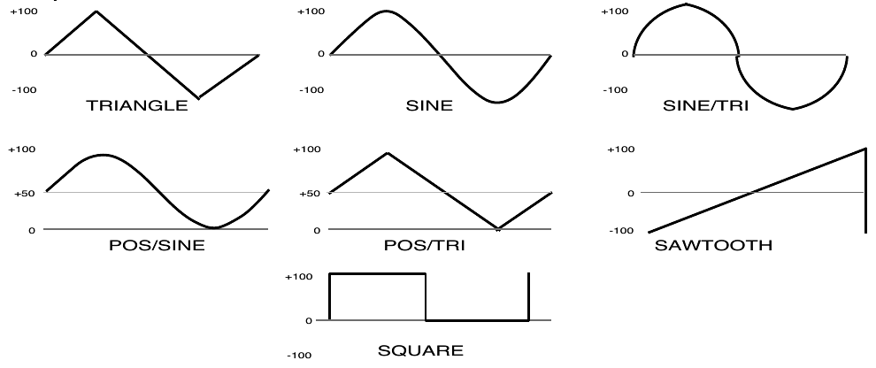
Determines whether the LFO will restart with each keystrike. When set to OFF, the LFO will cycle continuously without resetting. When set to ON, the LFO waveform will always start at the starting phase, as determined by the PHASE parameter, each time a new key is struck.
Determines the starting phase of the LFO, when RESTART-MODE=ON. With a setting of 000, the LFO will always restart at the beginning of its cycle.
Determines the time it takes for the LFO to go from zero to the amount set with the DEPTH parameter. Values above 0 will cause the LFO to take longer to achieve its full depth. This is useful for creating delayed vibrato, tremolo, etc.
One of the TS‑10’s 15 available modulation sources is NOISE. The NOISE modulator produces a randomly changing level. Its main use is to randomize or “humanize” pitch when applied as a pitch modulator. It can also be used to randomize any other modulation destination. Typically, the NOISE signal might look like this:
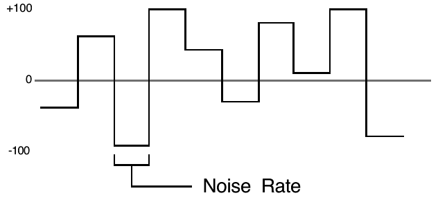
NOISE-RATE determines how frequently the random level will change. Low values will cause it to change very slowly; with high values the level will change quickly.
An Envelope is a shape, or contour, which we apply to a signal source to make it change over time. Each TS‑10 voice has three envelopes. These envelopes are automatically routed to the pitch, filter frequency and amplitude of the voice, though ENV1 and ENV2 can also be assigned elsewhere, wherever a modulator is selectable.
The TS‑10 envelopes are descended from the venerable ADSR (attack, decay, sustain, release) envelope, but with many refinements. While the ADSR envelope gives you control over three time segments and one level, the TS‑10 envelopes give you control over four levels and five time segments.
The illustration below shows the make-up of a TS‑10 envelope:
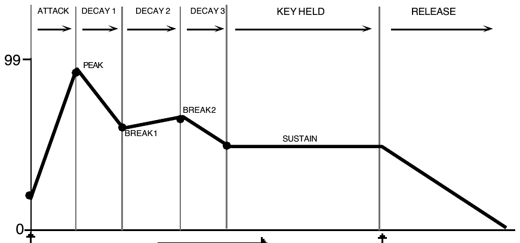
Each envelope page consists of three sub-pages, which are reached by repeatedly pressing the Env 1, Env 2, or Env 3 button. For each envelope page:
The ENV1, ENV2 and ENV3 Pages, parameters and ranges are all the same except where indicated below. We will use ENV3 as our example, since its effect on the volume of the voice is immediately apparent.
Press the Env 3 button to get to the first ENV3 sub-page containing the five TIME parameters:
Note that the numbers shown here represent times, not rates. That is, the envelope will take a fixed amount of time to go from one level to another no matter how close together or far apart those two levels are.
The amount of time it takes for the envelope level to travel from zero (when the key is struck) to the PEAK level. The higher the value, the longer the time.
Press the soft button above the ATTACK parameter again to enable or disable the Track ATTACK parameter independently for each Envelope. When an asterisk (*) is displayed, the Track ATTACK parameter will affect the Attack Time of the Envelope. If there is no asterisk, then the Track ATTACK parameter will have no effect on the Attack Time of the Envelope. This allows you to define whether or not each Envelope in each Voice in a Program will have its Attack Time modulated by the Track ATTACK parameter. Successive presses of the soft button above ATTACK will toggle between the Attack value and the Track ATTACK Mod selector.
The time it takes the envelope to go from PEAK to BREAK 1.
The time it takes the envelope to go from BREAK 1 to BREAK 2.
The time it takes the envelope to go from BREAK 2 to the SUSTAIN stage. At the end of DECAY 3, the envelope will remain at the SUSTAIN level until the key is released.
This defines the time it will take the envelope to return to zero after the key has been released. RELEASE is a percentage of the ATTACK time.
Press the soft button below the RELEASE parameter again to enable or disable the Track RELEASE parameter independently for each Envelope. When an asterisk (*) is displayed, the Track RELEASE parameter will affect the Release Time of the Envelope. If there is no asterisk, then the Track RELEASE parameter will have no effect on the Release Time of the Envelope. This allows you to define whether or not each Envelope in each Voice in a Program will have its Release Time modulated by the Track RELEASE parameter. Successive presses of the soft button below RELEASE will toggle between the Release value and the RELEASE Mod selector.
| Value | Time (in sec) | Value | Time (in sec) | Value | Time (in sec) | Value | Time (in sec) | Value | Time (in sec) |
|---|---|---|---|---|---|---|---|---|---|
| 0 | .00 | 20 | .20 | 40 | .82 | 60 | 3.2 | 80 | 13 |
| 1 | .01 | 21 | .22 | 41 | .88 | 61 | 3.5 | 81 | 14 |
| 2 | .02 | 22 | .23 | 42 | .94 | 62 | 3.7 | 82 | 15 |
| 3 | .03 | 23 | .25 | 43 | 1.0 | 63 | 4.0 | 83 | 16 |
| 4 | .04 | 24 | .27 | 44 | 1.0 | 64 | 4.3 | 84 | 17 |
| 5 | .06 | 25 | .29 | 45 | 1.1 | 65 | 4.6 | 85 | 18 |
| 6 | .07 | 26 | .31 | 46 | 1.2 | 66 | 4.9 | 86 | 19 |
| 7 | .08 | 27 | .33 | 47 | 1.3 | 67 | 5.3 | 87 | 21 |
| 8 | .08 | 28 | .35 | 48 | 1.4 | 68 | 5.7 | 88 | 22 |
| 9 | .09 | 29 | .38 | 49 | 1.5 | 69 | 6.1 | 89 | 24 |
| 10 | .10 | 30 | .41 | 50 | 1.6 | 70 | 6.5 | 90 | 26 |
| 11 | .11 | 31 | .44 | 51 | 1.7 | 71 | 7.0 | 91 | 28 |
| 12 | .11 | 32 | .47 | 52 | 1.8 | 72 | 7.5 | 92 | 30 |
| 13 | .12 | 33 | .50 | 53 | 2.0 | 73 | 8.1 | 93 | 32 |
| 14 | .13 | 34 | .54 | 54 | 2.1 | 74 | 8.6 | 94 | 34 |
| 15 | .14 | 35 | .58 | 55 | 2.3 | 75 | 9.3 | 95 | 37 |
| 16 | .15 | 36 | .62 | 56 | 2.4 | 76 | 9.9 | 96 | 39 |
| 17 | .16 | 37 | .66 | 57 | 2.6 | 77 | 10 | 97 | 42 |
| 18 | .17 | 38 | .71 | 58 | 2.8 | 78 | 11 | 98 | 45 |
| 19 | .19 | 39 | .76 | 59 | 3.0 | 79 | 12 | 99 | 49 |
Press Env 3 again. This takes you to the second ENV3 sub-page, which shows the five LEVELS
| ENV3 | LEVELS | PEAK=99 | BREAK1=92 |
| BREAK2=86 | SUSTAIN=76 | VEL-LEV=70 | |
Determines the level the envelope will reach at the end of the time defined by ATTACK.
Determines the level the envelope will reach at the end of DECAY 1.
Determines the level the envelope will reach at the end of DECAY 2.
Determines the level the envelope will reach at the end of DECAY 3 and retain as long as the key is held down.
The Velocity level parameter will lower all envelope level settings with a softer keystrike. This means the settings you assign to PEAK, BREAK 1, BREAK 2 and SUSTAIN are maximum levels — the levels that will be reached with the hardest keystrike. The amount of VEL-LEV will determine how much those levels will be reduced as you play softer. With this parameter you can have continuous dynamic control over the five levels by varying how hard you play. The Velocity Curve (VEL-CURVE on the next sub-page) controls the response of the VEL-LEV parameter, reshaping the way that velocity modulates the envelope levels. This provides further control over the velocity response of the envelope.
Press the Env 3 button again. This displays the final sub-page for ENV 3:
| ENV3 | MODE=NORMAL | VEL-CURVE=CONVEX-2 | |
| KBDTRK=+00 | VEL-ATCK=12 | VEL-RELS=+08 | |
Voice Triggering/Stealing Notes Since ENV 3 controls the volume of the voice, there are a number of special considerations to be aware of when using the different envelope modes:
When envelope gets to the SUSTAIN level, it goes back to the INITIAL level. The TS‑10 restarts the wave at its SAMPLE-START-OFFSET every time the envelope repeats.
In order to maximize the use of the TS‑10’s 32 voices, and to manage the “voice stealing” it is sometimes useful to understand when a given voice will be assigned and when it will be released, or “put back” into the pool for use by other sounds. This depends on a combination of envelope mode and the wave type.
A looped (sustaining) wave will continue to use the voice until the envelope reaches zero. For a sustaining wave, when the Envelope Mode is NORMAL:
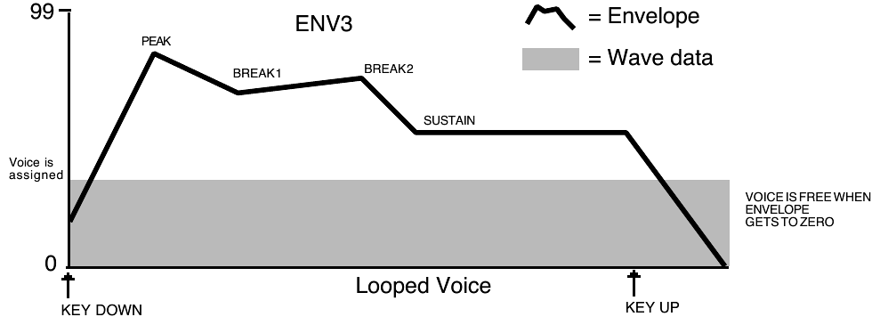
For a sustaining wave, when the Envelope Mode is set to FINISH:
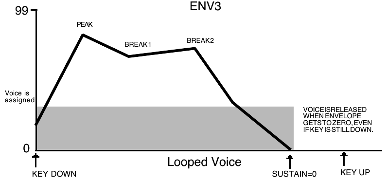
For unlooped, non-sustaining, waves (specifically those in the Percussion and Drum categories) the voice becomes free as soon as the sample has played through to the end, no matter where the envelope level is. The voice is released for use by another sound:
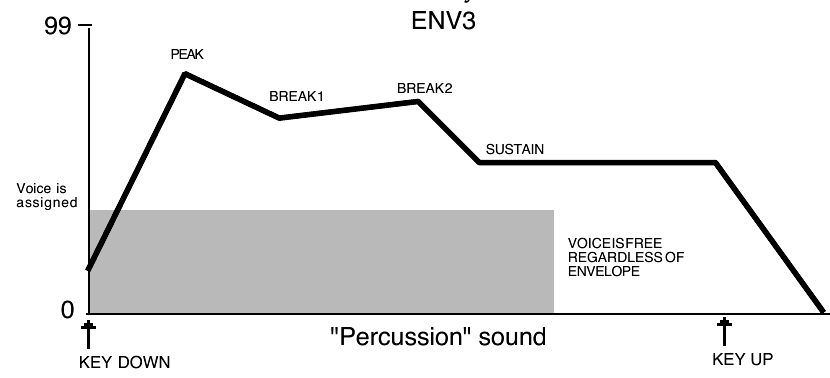
This selects which of the ten available velocity response curves the envelope will use if the velocity level control (VEL-LEVEL) is set to some value other than zero. The velocity response curves are shown on the next page. Available values are: QUIKRISE, CONVEX-1, CONVEX-2, CONVEX-3, LINEAR, CONCAVE1, CONCAVE2, CONCAVE3, CONCAVE4, and LATERISE.
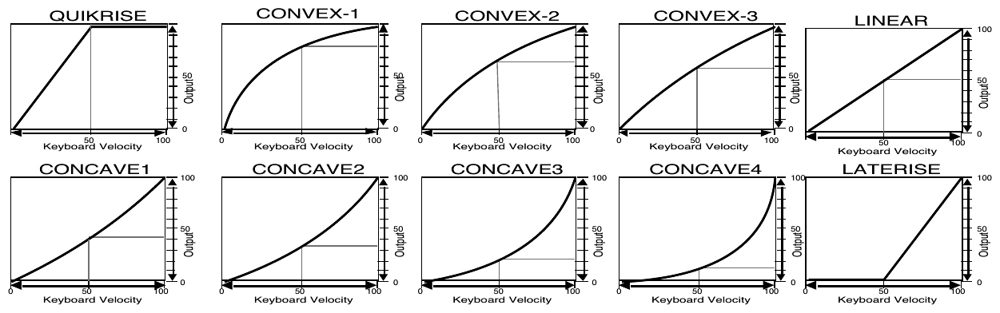
KBDTRK makes the envelope times shorter or longer depending on the key played. The scaling effect of this parameter is based on a 76-note keyboard, with a center break point at F4+.
Positive values will make all envelope times (except Release) shorter for keys above F4+, and longer for keys below F4+. Negative values will have the opposite effect. Envelope times for F4+ are not affected by this parameter.
This parameter makes envelope ATTACK time respond to velocity. Raising the VEL-ATCK value above zero makes the envelope ATTACK time shorter with harder keystrikes. If ATTACK=00, this parameter will have no effect.
This parameter makes envelope RELEASE time respond to velocity. When the value of VEL-RELS is positive, a harder keystrike will result in a longer release. Likewise, when the value of VEL-RELS is negative, a harder keystrike will result in a shorter release. Note that this parameter will have no effect if RELEASE=00.
The Pitch page parameters determine the “manual” levels for the pitch of the voice, as well as the poly/mono voice assignment mode.
Press the Pitch button. The display shows the PITCH page.
| PITCH | OCTAVE=+0 | SEMITONE=+00 | FINE=+00 |
| GLIDEMODE=NONE | GLIDETIME=12 | ||
Changes the pitch of the voice by octaves.
Changes the pitch of the voice by semitones. Incrementing/decrementing this control beyond +11 or -11 automatically increases/decreases the octave by one.
Fine-tunes the pitch of the voice by steps of one cent (1/100 of a semitone).
Enables Glide (portamento) and several forms of monophonic voice assignment in each voice. There are six GLIDE modes available:
For monophonic voice assignment without glide, set GLIDEMODE to LEGATO, TRIGGER, or MINIMODE, and set TIME to 0.
| MODE | Staccato Glide | Legato Glide | Legato Envelope Retrigger | Note Memory |
|---|---|---|---|---|
| PEDAL (WITH PEDAL DOWN) | YES | YES | YES | NO |
| MONO | YES | YES | YES | YES |
| LEGATO | NO | YES | YES | YES |
| TRIGGER | NO | YES | YES | NO |
| MINIMODE | NO | YES | NO | YES |
This parameter controls the time it takes for the pitch to slide smoothly (glide) from one note to another. The higher the value, the longer the glide time. The TS‑10 uses Constant-Time Portamento. This means that it will take the same amount of time to glide between notes that are close together (i.e.: C4 to D4) as it will to glide between notes that are far apart (i.e.: C4 to C7).
The Pitch Mods page parameters control pitch modulation for the voice.
Press the Pitch Mods button. The display shows the Pitch Mods page.
| PITCH | MODSRC=LFO | MODAMT=+00 | BEND=SYS |
| PITCHTBL=SYSTEM | ENV1=+00 | LFO=+04 | |
Selects a modulation source for the pitch of the voice from among the 15 available modulators.
Determines the amount by which the assigned pitch modulator will affect pitch.
Determines whether each voice in the program will have its own independent pitch bend range, or whether it will use the system pitch bend range to determine the maximum pitch change that can be applied by the pitch bend wheel. When BEND=SYS, the voice will use the system pitch bend range setting. See the description of the PITCH-BEND parameter on the System Page in Section 2 – System.
Pitch-tables allow you to map each key on the keyboard to play at any desired pitch. They provide a user-definable tuning table for each note on the keyboard. This parameter lets you select which pitch-table the voice will use.
When you create a custom pitch-table, the TS‑10 stores the pitch-table inside the program. Within the program, the custom pitch-table uses the space normally used to store the parameters for voices 5 and 6. Therefore, when there is a custom pitch-table in a program, voices 5 and 6 are not available. They are replaced on the Select Voice page by the EDIT PITCH TABLE function. Of the remaining four voices, each individual voice can be assigned to use either the SYSTEM pitch-table, no pitch-table (ALL-C4), or the CUSTOM pitch-table that resides within the program.
This hard-wired modulation routing determines the amount by which Envelope 1 will affect pitch. Unlike applying ENV-1 as a pitch modulator with the generic pitch MODSRC parameter, the hard-wired ENV1 parameter forces Envelope 1 to always sustain at the manual pitch setting on the Pitch page. The Envelope 1 SUSTAIN level no longer controls the pitch at which Envelope 1 will sustain. Instead, it becomes an "equator-shift" value, determining which Envelope 1 level values will cause the pitch to rise above the manual pitch setting and which level values will drive it below. Envelope 1 level values equal to the SUSTAIN level value will sound at the manual setting. Higher level values will shift the pitch upward from the manual pitch setting, and lower values will shift the pitch downward. This feature allows for the creation of bidirectional pitch envelope shapes, while conveniently ensuring that voices will always sustain at the manual pitch setting, without the need to offset the manual pitch setting on the Pitch page.
Determines the amount by which the LFO (Low Frequency Oscillator) will affect pitch.
Each TS‑10 voice has its own pair of digital filters, FILTER 1 and FILTER 2, which are connected in series. The filter settings determine which ranges of frequencies will be allowed to pass through to the output.
A low-pass filter allows only those frequencies below the filter cutoff frequency to pass — higher frequencies are filtered out. The reverse is true for a high-pass filter — it lets frequencies higher than the cutoff frequency pass and filters out those below. In the TS‑10, FILTER 1 is always a low-pass filter. FILTER 2 can be either a high-pass or low-pass filter.
Poles is an engineering term which describes the steepness of a filter, or the filter’s cutoff slope. Each additional pole gives a filter a steeper rolloff curve. In the TS‑10, the filter modes are interdependent; that is, the combined number of poles in FILTER 1 and FILTER 2 is always four.
These four poles are divided between the two filters; either as 2 and 2, or as 3 and 1. There are two Filters pages; however, if you change the number of poles on either page, you will change the number of poles on the other page — high-pass will remain high-pass, but the number of poles will change.
A 1-pole filter will rolloff at 6 dB per octave; a 2-pole filter, 12 dB per octave; a 3-pole filter, 18 dB per octave; and 4-pole filter, 24 dB per octave. To reproduce a 4-pole low-pass filter (for that “classic” analog synth sound) you would set both low-pass filters to roll off at 12 dB per octave, resulting in a 24 dB per octave rolloff.
The diagrams below show a number of possible filter configurations. On the left are the response curves of the two filters shown separately. On the right are some of the possible shapes of the combined filters.
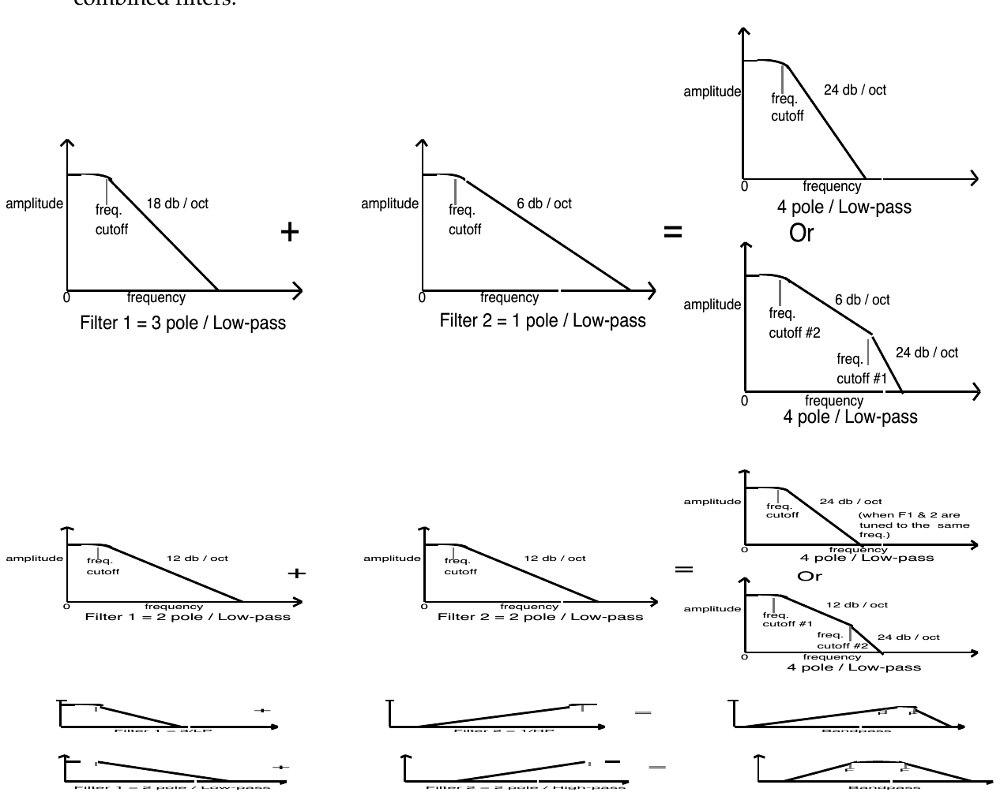
Press the Filters button. The display shows the FILTER 1 page.
| FILTER1 | LO-PASS/2 | CUTOFF=003* | KBD=+00 |
| MODSRC=LFO | MODAMT=+29 | ENV2=+70 | |
Determines whether Filter 1 will be a 2-pole or a 3-pole low-pass filter.
Determines the initial filter cutoff frequency for each of the two filters. With a low-pass filter, a setting of 127 lets all the original signal pass through the filter. With a high-pass filter, a setting of 000 lets through all of the original signal. This setting represents the “filter floor,” or manual level. The effect of any selected modulators will be added to (or subtracted from) this level.
Press the soft button above the CUTOFF parameter again to enable or disable the Track BRIGHTNESS parameter independently for each Filter. When an asterisk (*) is displayed, the Track BRIGHTNESS parameter will affect the Cutoff frequency of the Filter. If there is no asterisk, then the Track BRIGHTNESS parameter will have no effect on the Cutoff frequency of the Filter. This allows you to define whether or not each Filter in each Voice in a Program will have its Cutoff frequency modulated by the Track BRIGHTNESS parameter. Successive presses of the soft button above CUTOFF will toggle between the Cutoff value and the BRIGHTNESS MODSRC selector.
Sets the amount by which the location of a note on a keyboard will modulate the filter cutoff frequency (filter keyboard tracking). The scaling effect of this parameter is based on a 76-note keyboard, with a center break point at F4+. To have the filter track the keyboard exactly, set KBD=+50.
Selects a modulation source for the filter cutoff frequency from among the 15 available modulators.
Determines the amount by which the assigned filter modulator will affect the filter cutoff frequency.
Determines the amount by which Envelope 2 will affect the filter cutoff frequency.
Press the Filters button again. The display shows the FILTER2 page:
| FILTER2 | HI-PASS/2 | CUTOFF=000* | KBD=+00 |
| MODSRC=LFO | MODAMT=+29 | ENV2=+70 | |
FILTER 2 can be configured as a 2-pole or 1-pole high-pass filter, or a 2-pole or 1-pole low-pass filter.
The remaining parameters and ranges are the same as for FILTER 1.
The parameters on the Output page, along with Envelope 3, control the overall volume and panning of the voice, along with keyboard scaling, effects routing and voice “voice stealing” priority. The Output page consists of three separate sub-pages.
Press the Output. button. The first OUTPUT sub-page is displayed.
| OUTPUT | KBD-SCALE=+00 | LO/HI-KEY | A0 -C8 |
| VOL=+00DB | MODSRC=LFO | MODAMT=+00 | |
Can be used to fade the voice in or out between the two keys specified to the right (see below).
This is good for doing keyboard crossfades between voices, or for reducing the volume of a particular voice as you go higher up the keyboard. A value of +99 will fade the voice in from silence to full level from the low keys to the high keys. A value of -99 will fade the voice out from full level to silence from the low keys to the high keys. Intermediate values will scale the voice from full level to an intermediate level.
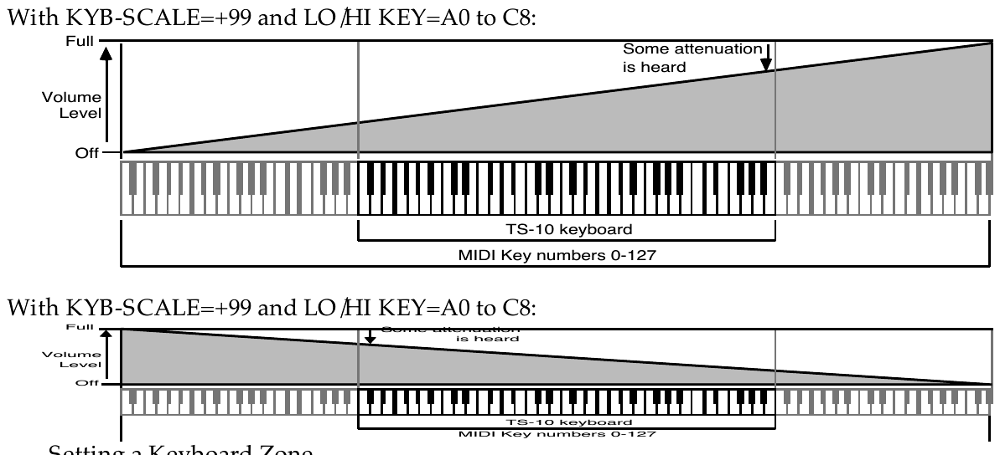
Setting a Keyboard Zone Moving the Data Entry Slider all the way down to the bottom position (below -99) selects KBD-SCAL=ZON. In this position the voice will sound only over the keyboard range specified by the low and high keys. When KBD-SCAL=ZON, the volume scaling function is not in effect — the voice will play at the same volume throughout the zone.
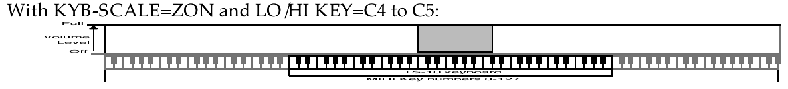
The next two parameters on the top line of the display provide a powerful tool for shaping the volume of the sound across the keyboard:
Sets the key range over which the fade-in, fade-out, or keyboard zone will occur. When this parameter is selected, notes can be entered from the keyboard or using the Data Entry Slider or Up/Down Arrow buttons. Select this parameter and play the low key; that note is entered as the low key, and the cursor switches to the high key. Now play the high key; that note is entered as the high key, and the cursor disappears. If you made a mistake, or want to enter a different range of values, just press the soft button again and repeat the process.
This parameter determines the volume of each voice. Since Envelope 3 is permanently routed to control the volume of the voice, this parameter also determines the amount by which ENV3 will affect volume.
Values above +00 dB are intended to let you compensate for the effects of heavy filtering or enveloping, and for the fact that some waves simply have less apparent loudness than others.
For example, a percussion sample, which is by nature a quick peak, has less energy than a sustaining square wave. A higher VOL setting lets you raise the level of such waves to equal that of “louder” waves.
Selects a modulation source for the output volume of the voice from among the 15 available modulators. This is in addition to ENV3, which is always routed to volume.
Determines the amount by which the assigned volume modulator will affect the output volume of the voice.
Press the Output button again. The display shows the second OUTPUT sub-page:
| OUTPUT | DESTINATION-BUS=DRY | ||
| PAN=+00 | MODSRC=KEYBD | MODAMT=+25 | |
Each voice within a sound can be routed to one of four stereo “busses:”
The diagram below shows a common routing of the signals for each bus. See the sections on “Effects” for more on programming specific effects.
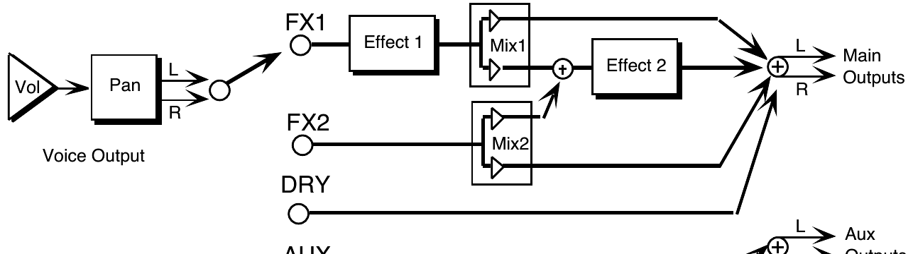
Pans the voice within the stereo field. A setting of -64 is panned hard left, and +63 is panned hard right. A value of +00 pans the voice center. The effect of a pan modulator (below) will be added to this.
Selects a modulation source for the voice pan from among the 15 available modulators. This will cause the voice’s location in the stereo field to vary with the output level of the modulation source.
Determines the amount by which the assigned volume modulator will affect the pan of the voice.
Press the Output button a third time. The final sub-page contains three parameters:
| OUTPUT | VOICE-PRIORITY=MED | ||
| VELOCITY-WINDOW | LO=000 | HI=127 | |
This parameter gives you some control over how voices will be reassigned, or “stolen,” to play new notes when all of the TS‑10’s voices are already playing. A voice can be assigned LO, MED, or HI priority. The rule is that a given voice will only be allowed to steal from voices with the same or lower priority.
MED is the usual state and should be used for most voices. LO can be used for voices within a sound which would be missed the least if stolen (such as a voice playing the same wave as another voice but detuned a bit). HI is best used only for specific applications in which you want to protect a voice or voices from being stolen — such as cymbals or a sustaining “pad” sound in a sequencer track.
The LO and HI parameters allow you to define the velocity range for each voice. The full velocity range (default) is LO=000 HI=127. By adjusting these parameters, you can set specific velocity ranges for each voice. This allows velocity switching between different voices within the program. For example, if you set a solo violin voice to LO=000 HI=064, and a string section voice to LO=064 HI=127, a soft velocity will play only the solo violin, whereas a harder velocity will play only the string section. Ranges can over-lap for velocity cross-fade effects.
Performance / Composition Synthesizer · Version 3.0
Press the Wave button. On the Wave page, the same three parameters (Wave Name, Wave Type, and Delay) will always appear on the top line of the display, no matter which type of wave is selected:
| WAVE | SOLOVIOLIN | STRING-SOUND | DELAY=0000 |
| MULTISAMPLE-SHIFT=+00 | DIR=FORWARD | ||
Here you select the actual wave that the voice will play. When this parameter is underlined, the Data Entry Slider will select only among the waves in the current wave class. Pressing the Up/Down Arrow button will allow you to cross over into the next Wave Class.
This shows which of the 16 groups the currently selected wave is in. By underlining this parameter, you can use the Data Entry Slider or the Up/Down Arrow buttons to scroll quickly through the different wave classes to the category you want. Then underline the wave name to select a specific wave from that category.
Whenever the wave class is changed, the first wave in that class is selected, and lower-line parameters are reset to default values for the new wave class.
This parameter determines how long the voice will wait after a key is struck before playing. A delay of up to 5 seconds is possible.
When set to DELAY=KYUP (Key Up), the voice will wait until the key is released before it plays.
The parameters shown on the lower line of the display on the Wave page will vary depending on the current wave class. For each wave class, the lower line of the display will contain parameters controlling the features which are specific to that class.
Changing the wave class resets these parameters. However, if you scroll only one step away from the current class and then scroll back, any lower-line settings you had will be restored. Go more than one class from the current one, and any lower-line settings will be lost.
For the first thirteen wave classes, the bottom line of the display shows:
Changes keyboard split points on multi-sampled waves. This has the effect of setting the WaveSamples to ranges you wouldn’t otherwise hear (allowing aliasing in some cases), creating completely different colorations. A setting of MULTISAMPLE-SHIFT=+00 is the default.
Any of the waves in these wave classes can be made to play forward (which is the normal mode) or backward with this parameter. When DIR=REVERSE, the sound will play from the end of the sample to the start point, and will not loop.
Press the Wave button again to get to the next Wave sub-page:
| WAVE | SAMPLE-START-OFFSET=00 | (PERCENT) | |
| START-MODSRC=*OFF* | MODAMT=+00 | ||
This controls where in the sample the wave will begin playing. When set to 00, the whole wave will play. As the start point is adjusted upwards, it will begin playing further into the wave. You can use this, for example, to skip the attack and play only the loop portion of looped (sustaining) sounds.
Here you choose which of the modulators will control the sample-start of the voice. Any of the 15 modulators can be selected.
Determines how much the selected modulator (above) will affect the wave; i.e. how far away from the start point the sound will move. If MODAMT=+00, the sound will remain static.
Positive amounts will modulate the sound forward (toward the end of the wave); negative modulation amounts will move the sound back toward the beginning.
Each Transwave is actually composed of many different single-cycle waveforms, which progress from one timbre to another, occupying adjacent areas of memory. Movement within the sound is created by playing different waveforms in succession; that is, by modulating the wavetable.
The illustration below shows a typical wave of this category, with the index set in the middle range, near 50.
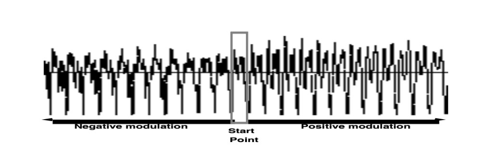
When the wave class is TRANSWAVE, the lower line of the display shows:
| WAVE | BELL-XWV1 | TRANSWAVE | DELAY=0000 |
| INDEX=68 | MODSRC=ENV-1 | MODAMT=+00 | |
The Index parameter controls where within the wavetable the voice-loop will begin playing when the key is struck.
Here you choose which of the 15 modulators will control the movement of the sound. Any of the modulators can be selected.
Determines how much the selected modulator (above) will affect the wave; i.e. how far away from the start point the sound will move. If MODAMT=+00, the sound will remain static.
Positive amounts will modulate the sound forward (toward the end of the wave); negative modulation amounts will move the sound back toward the beginning.
Hyper-Wave architecture allows up to 16 waves to be defined in a list, which can be swept through, or cross-faded for timbre-shifting and Jam-Loops. Hyper-Waves are created by selecting WAVE-LIST with the OPTION parameter found on the Program Control page. Hyper- Waves have there own specific wave parameters.
When the Wave Class is WAVE-LIST, the display shows:
| WAVE | WAVE-LIST | WAVE-LIST | DELAY=0000 |
| START-STEP=01 | LOOPSTART=01 | END=16 | |
The wave name parameter in a WAVE-LIST is meaningless and is not selectable.
This shows which of the 16 groups the currently selected wave is in. The WAVE-LIST category is only visible when the current sound contains a WAVE-LIST.
Determines how long the voice will wait after a key is struck before playing. A delay of up to 5 seconds is possible.
When set to DELAY=KYUP (Key Up), the voice will wait until the key is released before it plays.
Selects which step number in the Wave-List the voice will start playing when a key is pressed.
Selects the step number in the Wave-List that the voice will loop back to after playing the End
Step for its duration.
Defines the last step in the Wave-List that the voice will play before looping back to play the Loop Start step.
Press the Wave button again to get to the next Hyper-Wave sub-page:
| WAVE | MOD-DESTINATION=START-STEP | ||
| MODSRC=*OFF* | MODAMT=+00 | ||
Here you choose which of the 15 modulators will control the movement of the wave-list. Any of the modulators can be selected.
This parameter determines the number of steps that the selected Mod Destination will be modulated. Modulation can be either positive or negative.
A Drum-Map can use up to 64 waves per program, four waves per key, with separate pitch, volume, panning and voice template parameters for each wave. All of the DRUM-MAP wave page parameters are identical to the first thirteen wave classes, with the exclusion of the MULTISAMPLE-SHIFT parameter.
Also, the DRUM-MAP Wave Class category is only visible when the current program contains a Drum-Map. The wave name parameter in a Drum-Map is meaningless and is not selectable.
The Mod Mixer is a unique feature which allows you to:
Select the voice you want to edit on the Select Voice page, and then press Mod Mixer. The display shows:
| MOD MIXER | SRC-1=LFO | SRC-2=TIMBR | ||
| SCALE=1.0 | SHAPE=LINEAR | |||
The two parameters on the top line of the display select the two modulators which will be mixed together, SRC-1 and SRC-2. On the lower line of the display are two parameters for shaping the level and response of SRC-2. Internally, the Mixer/Shaper works like this:
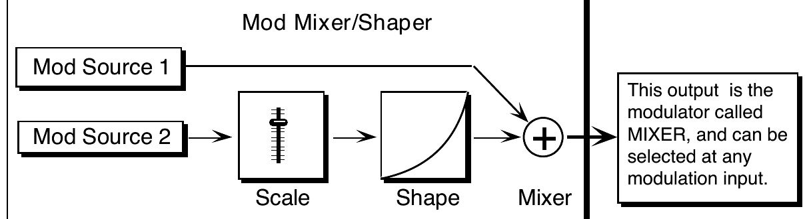
There are four parameters which can be selected on the Mod/Mixer page:
Select any of the 15 available modulators (including the mixer itself) as Mod Source 1. SRC-1 is sent directly to the mod mixer without any level change or response shaping.
Select one of the 15 available modulators as Mod Source 2. Before being added to SRC-1, SRC-2’s level is adjusted by a scale factor, and then it is passed through the shaper, which allows its response to be customized in a number of interesting ways.
This is used to adjust the level of SRC-2 relative to SRC-1, or to simply scale the level of the modulator for effect. The modulator’s level is multiplied by the number shown. A value of 1.0 leaves the modulator at its original level. Fractional values (0.1 to 0.9) will reduce the level.
Values greater than 1.0 will amplify the effect of the modulator, in most cases simply causing it to reach full level much sooner.
Here you select which of the 16 tracking curves will be applied to the modulator selected as SRC-2. You can use one of the convex or concave shapes to make the modulator’s effect come in earlier or later than it ordinarily would; you can use one of the quantized shapes to make the modulator’s effect sound “stepped”; or you can use the smoother (which is similar to a “lag processor” in some older analog synths) to smooth the effect of the modulator, to round off the edges. The diagram below shows the 16 Shaper tracking curves:
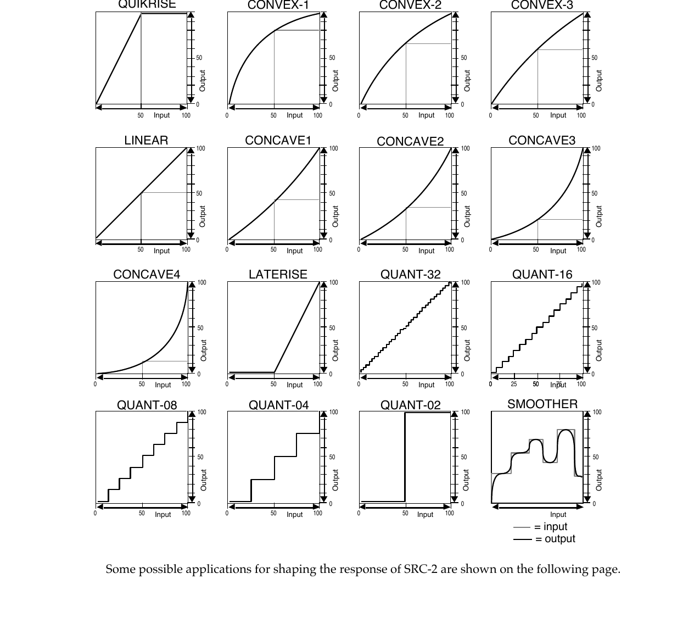
Some possible applications for shaping the response of SRC-2 are shown on the following page.
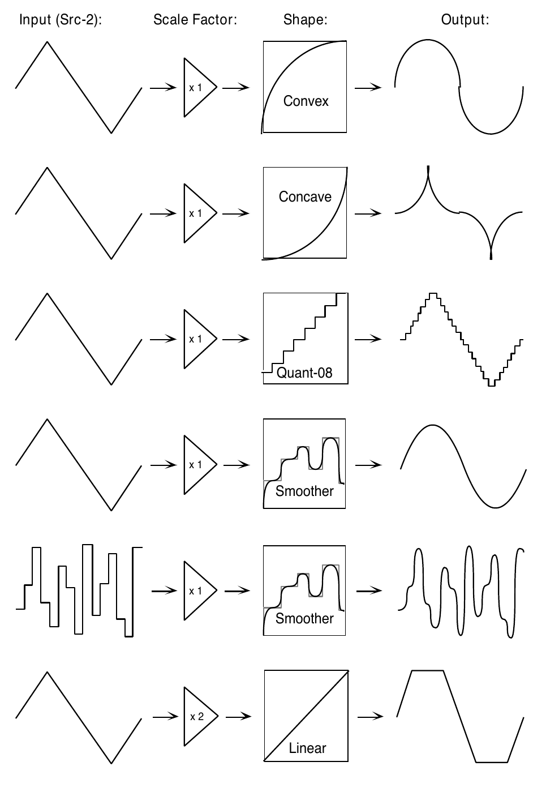
The parameters on this page control aspects of the program that affect all of the individual voices within the program. Press Program Control. The display shows:
| PROGRAM | TYPE=ACPIANOS | OPTION=*-NONE-* | |
| PRESS=KEY | PATCH=LIVE | RESTRIKE=35 | |
Allows you to define a sound class for your sound. This setting can be used by third-party editor librarian software for “automatic-sorting” of sounds by type. The available types are:
The setting of this parameter indicates whether a Custom Pitch-Table, a Wave-List, or a Drum- Map exists within the sound. These options occupy the portion of a sound program which is usually used by voices 5 and 6, so when an Option is present, you do not have access to those two voices. Whenever the setting of this parameter is changed, you will be prompted with the question “REPLACE VOICES 5+6 WITH PITCH–TABLE, WAVE-LIST, DRUM–MAP, or *EXIT*.” If you choose *EXIT*, then the setting of the parameter is not changed.
If you have a program where OPTION=PITCHTBL, DRUM-MAP, or WAVELIST, and you want to eliminate the Option (to gain back Voices 5 and 6), press the Down Arrow button when this parameter is selected. The display will show ERASE CURRENT <PITCH-TABLE, DRUM-MAP, or WAVE-LIST>? Selecting *YES* will eliminate the Option, and restore Voices 5 and 6 to their default settings.
If you have a program where OPTION=<PITCHTBL, DRUM-MAP, or WAVELIST>, and you want to change the Option (to another option), press the Up Arrow button when this parameter is selected. The display will show the prompt REPLACE VOICES 5+6 WITH PITCH–TABLE, WAVE-LIST, DRUM–MAP, or *EXIT*. At this point, you can select a new Option, or press *EXIT* to return to the previously selected Option assigned to the program.
Allows you to select POLY-KEY, CHANNEL, or NONE (or no pressure responsiveness) for the program. Generally, if a program doesn’t need to respond to pressure, set this to OFF to conserve sequencer memory. This is the default setting that will be installed into a track when the program is selected.
Selects the default patch select mode for the program. When set to LIVE, it uses the current state of the buttons to select a patch. When set to HELD, it uses the patch set by the first key hit while touching the patch select buttons. For more information about patch selects, refer to Sections 4 and 5. This is the default setting that will be installed into a track when the program is selected.
This parameter controls the voice Restrike time. When you play a particular note and then restrike it again immediately before the old note has finished sounding, the amount of time it takes for the first strike to fadeout is determined by this parameter. By varying the setting of this parameter, you can control how long sounds overlap when a note is restruck.
For example, if you have a slow string sound, it may sound more natural to use a longer restrike value, which will cause the old note to decay more slowly, rather than end abruptly when the new note starts. Normal values are around 10. The higher the value, the longer the fadeout time.
Along with the PRESS and PATCH parameters, the next page contains copies of Track parameters that are saved in the program. When a program is selected or put on a track, values of these parameters (as saved in the program) are installed in the track as the default initial settings. They can be edited on the track pages without affecting the program default settings, but must be edited on this page in order to be saved with the program. Changes made here will be copied to the current primary track.
Press the Program Control button again to get to the second sub-page:
| PROG | ATCK=+10 | BRIGHT=+00 | RATE=+00 |
| RELS=-64 | TIMBRE=+00 | XCTRL=127 | |
The following parameters are the default settings for the Track parameters that are stored with the Program. For more information about how these parameters function, see Section 5 — Preset/Track Parameters.
Editing the ATCK parameter default values will simultaneously edit the Track ATTACK Parameter values on the track that the sound is occupying. This parameter will only function if an asterisk is assigned to any ATTACK parameter (found on the ENV1, 2, and 3 pages) for any Voice in the selected program. This is the default setting that will be installed into a track when the program is selected.
Editing the BRIGHT parameter default values will simultaneously edit the Track BRIGHTNESS Parameter values on the track that the Program is occupying. This parameter will only function if an asterisk is assigned to any filter cutoff parameter (found on the Filters page) for any Voice in the selected program. This is the default setting that will be installed into a track when the program is selected.
Editing the RATE parameter default values will simultaneously edit the Track RATE Parameter values on the track that the Program is occupying. This parameter will only function if an asterisk is assigned to any LFO RATE parameter (found on the LFO page) for any Voice in the selected program, or if the program contains a voice that plays a Wave-List. This is the default setting that will be installed into a track when the program is selected.
Editing the RELS parameter default values will simultaneously edit the Track RELEASE Parameter values on the track that the Program is occupying. This parameter will only function if an asterisk is assigned to any RELEASE parameter (found on the ENV1, 2, and 3 pages) for any Voice in the selected program. This is the default setting that will be installed into a track when the program is selected.
Editing the TIMBRE parameter default values will simultaneously edit the Track TIMBRE Parameter values on the track that the Program is occupying. This parameter will only function if TIMBRE is assigned as a modulator within the selected program, or if the V1 through V6 relative volume modulation amounts on the third Program Control sub-page have been assigned to values other than zero. This is the default setting that will be installed into a track when the program is selected.
Editing the XCTRL parameter default values will simultaneously edit the Track XCTRL Parameter values on the track that the Program is occupying. This parameter will only function if XCTRL has been assigned as a modulator within the selected program. This is the default setting that will be installed into a track when the program is selected.
Press Program Control again to get to the third sub-page:
| TIMBRE | V1=+10 | V2=+32 | V3=+00 |
| V4=-64 | V5=+00 | V6=+27 | |
The TIMBRE sub-page controls the relative volume modulation amounts for each Voice, as controlled by Timbre. Note that when OPTIONS is set to PITCH-TABLE, WAVE-LIST, or DRUM-MAP, the V5 and V6 parameters are not displayed.
The following parameters are only available when OPTION=PITCH-TABLE on the first Program Control Page. To access the Pitch-Table Editor parameters:
The Pitch-Table Editor parameters are:
| EDIT PITCH-TABLE | *CALCULATOR* | *EXIT* |
| KEY C8 | = C8 | AND 00 CENTS |
This parameter selects the Extrapolate/Interpolate sub-page, allowing you to create a pitch-table calculated from a user-defined key range.
For every Source Key on the lower left, you can see and edit the pitch of that key. The Source Key can be selected by pressing the keys, or using the Data Entry Controls.
The source key can be thought of as the physical location of the key on the keyboard. The playback pitch can be the same as the source key — as shown in the display — or it can be any pitch from A0 to C8.
Enables you to fine tune the pitch, or create micro-tunings and other alternate tunings.
To display the Extrapolate/Interpolate sub-page, press the *CALCULATOR* soft button. The display shows:
| PITCH-TABLE - | EXTRAPOLATE | INTERPOLATE |
| KEY-RANGE START/END | C4 -C5 | *EXIT* |
Defines the area of the keyboard that the TS‑10 will use as a reference by which to make its calculations. The START key is the first of the two key numbers shown, and the END key is the second number shown. By selecting a start and stop key, you can define the key range whose pitch intervals will be duplicated over the entire keyboard. Note that you can also set the start and end keys using the data entry controls, and press the soft button beneath them to toggle back and forth.
The EXTRAPOLATE command takes the pitch-table relationships from within a key range and duplicates those relationships outside that range.
After a key-range has been defined, press the EXTRAPOLATE soft button. The display briefly reads PITCH-TABLE *CALCULATOR*, then returns with the newly defined range across the whole keyboard.
INTERPOLATE takes the interval between two notes on the keyboard and divides all the keys in between into equally-spaced fractions of that interval.
After a key-range has been defined, press the INTERPOLATE soft button. The display briefly reads PITCH-TABLE *CALCULATOR*, then returns with the newly defined range across the whole keyboard.
Pressing Copy on the Edit Pitch-Table sub-page will display the Copy page:
| COPY | PITCHTABLE PARAMETERS | ||
| SYSTEM | RECALL | MAKE COPY | |
The MAKE COPY parameter allows you to make a copy of the complete pitch-table from the currently selected program (or the Compare Buffer) into the Copy Buffer.
The RECALL parameter allows you to recall the complete pitch-table from the Copy Buffer into an edited version of the current program if 1) the current program has a pitch-table installed in it and 2) the Copy buffer contains a pitch-table. If you attempt to recall a Pitch-Table into a program without just previously having copied a pitch-table into the Copy buffer, the copy is not completed and an error message is displayed.
The SYSTEM parameter allows you to install an alternate tuning into the System pitch-table. As an added feature, the System pitch-table itself is user-definable. For instance, if you want to hear what other programs sound like using the custom pitch-table from a program, you can redefine the System pitch-table. Or, if your main tuning is “just intonation,” then it might be convenient for you to use this or some other alternate tuning as your System tuning.
| SYSTEM | PITCH-TABLE=CUSTOM | ||
To return all programs to standard equi-tempered tuning, set the SYSTEM PITCH-TABLE parameter back to NORMAL. Switching back to CUSTOM will restore your custom System pitch-table. You can switch back and forth as often as you wish. You can also try installing other custom pitch-tables in the System, but the System pitch-table can only contain one Custom pitchtable at a time.
Hyper-Waves are defined by Wave-Lists. You control the timing and pitch of the Programs using the Wave-List Editor parameters.
The following parameters are only available when OPTION=WAVE-LIST on the Program Control Page. To access the Wave-List Editor parameters for a program that does not contain a Wave-List:
The Wave-List Editor parameters are:
| STEP=01 | WAVE=TENOR-SAX | WIND+REEDS |
| START=00 | *TIME* | *PITCH* |
Defines which of the 16 steps within the Wave-List will be edited.
Defines which of the internal ROM waves will be used in the currently selected step.
Determines the starting point within the internal ROM wave. This offset can be used to eliminate the attack portion of a wave to create a smoother transition between waves.
Pressing this soft button will reveal the following screen:
| STEP=01 TENOR-SAX | DUR=00192 | *EXIT* |
| VOL=+00DB | XFADE-TIME=00192 | DEPTH=4DB |
Selects the wave step to be edited, followed by the Wave Name for the current Step (read-only).
Selects the total length of time that the selected wave step will play. The duration is defined in 12 millisecond increments.
Sets the volume for the selected wave step.
Sets the amount of time that the selected wave step will cross-fade into the following wave step.
The XFADE-TIME adds time to the duration of both the current step and the next step:
Determines how many decibels (dB) below normal volume the two wave steps will meet at the center point of the cross-fade curve.
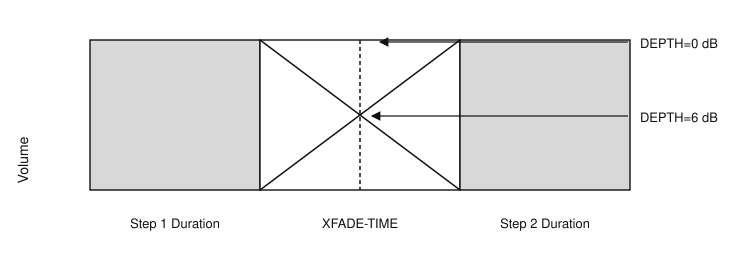
Pressing *EXIT* will return you to the Wave-List Editor page.
Pressing this soft button will reveal the following screen:
| STEP=01 TENOR-SAX | DIR=FORWARD | *EXIT* |
| PITCH-KBD-TRK=ON | XPOS=+00 | DETUNE=+00 |
Selects the wave step to be edited, followed by the Wave Name for the current Step (read-only).
Sets the direction of the wave step playback.
This determines whether the wave step will use the currently selected System pitch-table (when ON), or play the same pitch for every key (when OFF).
Determines the pitch of the wave step, transposing from the root note of the wave step. This can be used to create preset arpeggios or other patterns.
Allows you to fine-tune the wave step's pitch.
Pressing *EXIT* will return you to the Wave-List Editor page.
Copy Wave-List Parameters Pressing Copy from the Edit Wave-List sub-page will display the Copy page:
| COPY | WAVE-LIST | PARAMETERS | |
| RECALL | MAKE COPY | ||
The MAKE COPY command allows you to make a copy of the complete Wave-List from the currently selected program (or the Compare Buffer) into the Copy Buffer.
The RECALL parameter allows you to recall the complete Wave-List from the Copy Buffer into an edited version of the current program if 1) the current program has a Wave-List installed in it and 2) the Copy buffer contains a Wave-List.
If you attempt to recall a Wave-List into a program without just previously having copied a Wave-List into the Copy buffer, the copy is not completed and the following message is displayed:
| RECALL FAILED | ||
| CONTEXT INCOMPATIBLE | ||
The following parameters are only available when OPTION=DRUM-MAP on the Program Control Page. To access the Drum-Map Editor parameters:
1) Press the Program Control button.
2) Select the OPTIONS parameter by pressing its soft button.
3) Press the Up Arrow button.
4) Select DRUM-MAP on the bottom of the display by pressing its soft button.
5) Press either of the soft buttons beneath EDIT DRUM-MAP.
The Drum-Map Editor parameters are:
| DRUM-MAP | VOL=+01 | PAN=*VOICE* | PITCH=+00 |
| KEY=D4 | WAVE=CLAVE | VOICE=DRUM-FX1 | |
Controls the volume level of the sound(s) played by this key relative to the other keys in the drum-map. Setting this parameter to 00 does not necessarily silence the voice(s) playing the wave, and the actual volume minimum depends on the base volume level of the original waveform. For example, if the base volume level of the original waveform is +00, then setting the VOL parameter to 00 will not silence the voice(s) playing the wave. If the base volume level of the original waveform is +00, then setting the VOL parameter to 00 will silence the voice(s) playing the wave.
Determines where the drum wave voice will be panned in the stereo mix. The values for the PAN parameter are:
| *VOICE* | Uses Patch VOICE panning |
| L------ | Hard Left |
| -L----- | Medium Left |
| --L---- | Soft Left |
| ---C--- | Center |
| ----R-- | Soft Right |
| -----R- | Medium Right |
| ------R | Hard Right |
The pitch of the selected wave can be raised or lowered in semitone steps. If a greater range or precision of tuning is required, then it is necessary to use pitch modulation on the Pitch Mods page in the destination voice(s).
This parameter selects a single key for editing and displays all of the current drum-map parameter settings for that key. When this parameter is underlined, you can select the drum-map key to be edited using the data entry controls or by playing the keys on the keyboard. If you play several keys together, the last one played will be selected. There are 61 possible keys in a drum-map, ranging from B1 to D7 (MIDI keys 35 to 95). This range is based on the General MIDI Specification.
This parameter allows you to select the wave to be played by the key from any of the internal ROM waves. Drum-maps will have access to all Waves in the following Wave Classes, for a total of 105 different selectable wave forms:
| • DRUM-SOUND | • PERCUSSION | • SOUND-EFFECT |
| • CYMBALS | • TUNED-PERCUS |
Setting WAVE=*-MUTED-* (Data Entry Slider all the way down) will prevent the current key of the drum-map from playing any voice(s). This could be useful in sequencing, when you want to start recording with a drum track, but don’t want the drum to play on the first beat of the first measure.
This parameter specifies where the current voice will be sent. For the four Patch Select settings, the destination voices are within the current program and the number of active voices is determined by the mute status of the four voices within the specified patch.
If the VOICE parameter is assigned to a patch which does not have any voices set to wave type DRUM-MAP, then the display will show WAVE=*-VOICE-* and the parameter will not be editable. This indicates that the wave played by the key is controlled by the voice(s) in the patch rather than by the Drum-Map.
| for this setting: | the selected key is assigned to: |
|---|---|
| 00 PATCH | Voice will play, along with any other voice(s) assigned to Patch Select 00 |
| 0* PATCH | Voice will play, along with any other voice(s) assigned to Patch Select 0* |
| *0 PATCH | Voice will play, along with any other voice(s) assigned to Patch Select *0 |
| ** PATCH | Voice will play, along with any other voice(s) assigned to Patch Select ** |
| DRUM-FX1 | This basic medium drum/perc. envelope, routed to FX-1, lets most drum sounds through unchanged, but then closes down to create a gate-type effect. Can be used for almost all unlooped drums & percussion. To create a percussion decay out of a looped sound, you should use the LDECAY, MDECAY or SDECAY voices described below. |
| DRUM-FX2 | Same as above, routed to FX-2 |
| DRUM-DRY | Same as above, routed to DRY |
| TIGHT-FX1 | Very quick decay drum/perc. env., routed to FX-1. Good for transients, muted or “choked” sounds. Turns an ambient drum wave into a tight one. |
| TIGHT-FX2 | Same as above, routed to FX-2 |
| TIGHT-DRY | Same as above, routed to DRY |
| NORMAL-FX1 | A normal mode envelope for controlling the duration of the sound (sound plays as long as the key is held, rather than always finishing its decay). Can be used for snare roll, guiro, or other sustaining waves where you would want to vary the duration. |
| NORMAL-FX2 | Same as above, routed to FX-2 |
| NORMAL-DRY | Same as above, routed to DRY |
| TOMTOM-FX1 | Slight downward pitch envelope, volume and filter shapes optimized for toms, routed to FX-1. Can be used for toms, congas, tablas, anything that wants a subtle pitch env. and drum decay. Pressure bends the pitch down further. (For more radical pitch effects, use SYNDRM default below.) |
| TOMTOM-FX2 | Same as above, routed to FX-2 |
| TOMTOM-DRY | Same as above, routed to DRY |
| KEYGRP-FX1 | Trigger mode voice, optimized for hi-hats. This allows group voice cutoff, and can be used for hi-hat key group. |
| KEYGRP-FX2 | Same as above, routed to FX-2 |
| KEYGRP-DRY | Same as above, routed to DRY |
| LDECAY-FX1 | Long cymbal/percussion decay, routed to FX-1. Can be used for crash cymbals, rides, various long-decay percussion sounds. |
| LDECAY-FX2 | Same as above, routed to FX-2 |
| LDECAY-DRY | Same as above, routed to DRY |
| MDECAY-FX1 | Medium cymbal/percussion decay, routed to FX-1. Good used for china cymbal, medium crash, and other medium-decay percussion sounds. |
| MDECAY-FX2 | Same as above, routed to FX-2 |
| MDECAY-DRY | Same as above, routed to DRY |
| SDECAY-FX1 | Short cymbal/percussion decay, routed to FX-1. Good for splash cymbals and other, shorter-decay percussion sounds. |
| SDECAY-FX2 | Same as above, routed to FX-2 |
| SDECAY-DRY | Same as above, routed to DRY |
| SYNDRM-FX1 | Exaggerated pitch and filter envelopes, good for processing synth drums, or creating special effects with regular drums. |
| SYNDRM-FX2 | Same as above, routed to FX-2 |
| SYNDRM-DRY | Same as above, routed to DRY |
| DRUM-AUX | The envelope is the same as DRUM-FX1, but the voice is routed to AUX. This special default routes the basic drum/perc. voice to the AUX outputs. |
Press the Program Control button to exit the Drum-Map Editor.
Pressing Copy from the Drum-Map Editor page will display the Copy page:
| COPY | DRUM-MAP PARAMETERS | ||
| KEY RANGE | RECALL | MAKE COPY | |
The MAKE COPY option allows you to make a copy of the complete Drum-Map from the currently selected program (or the Compare Buffer) into the Copy Buffer.
The RECALL option allows you to recall the complete Drum-Map from the Copy Buffer into an edited version of the current program if 1) the current program has a Drum-Map installed in it and 2) the Copy buffer contains a Drum-Map.
If you attempt to recall a Drum-Map into a program without just previously having copied a Drum-Map into the Copy Buffer, the copy is not completed and the following message is displayed:
| RECALL FAILED | ||
| CONTEXT INCOMPATIBLE | ||
Selecting the KEY RANGE option will display another page which allows you to fill a range of keys with copies of the currently selected Drum-Map key (the key that was shown on the Drum-Map Editor page).
| COPY CURRENT DRUM-MAP KEY TO | *COPY* | |
| KEY-RANGE START/END | xxx-xxx | *EXIT* |
Map Editor page when you pressed Copy).
Allows you to specify the range of keys in the drum-map to be filled by playing the lowest and then highest key of the range. You can also edit these parameters using the Data Entry Slider or the Up/Down Arrow buttons. Press the soft button to select between the Start and End key fields.
Selecting *COPY* will complete the command and will show COPY DONE before returning to the Copy page.
Selecting *EXIT* will simply return the Copy page without affecting the Drum-Map.
Understanding the effect algorithms and their related parameters are described in detail in Section 6 — Understanding Effects and Section 7 — Effect Parameters.
The Select Voice page is used to view the six voices that create a program sound. Note that if there is a Drum-Map, Wave-List, or Pitch-Table within the program, the Select Voice page will only show four voices (a Drum-Map, Wave-List, or Pitch-Table replaces voices 5 and 6).
Continued presses of the Select Voice button will toggle between the Select Voice page and the page you were on prior to entering the Select Voice Page.
The Copy page is context sensitive. Depending on what was last selected, it can be used to copy:
| • All LFO Parameters | • Mod Mixer Parameters |
| • Envelope-1, 2, and 3 Parameters | • Program Parameters |
| • Pitch Page Parameters | • Pitchtable Parameters |
| • Pitch Mod Parameters | • Drum-Map Parameters |
| • Filter-1 and 2 Parameters | • Effects Parameters |
| • All Output Parameters | • All Voice Parameters |
| • Wave Page Parameters |
For more information on using the Copy page, refer to the previous section.
Pressing the Write Program button will allow you to edit the name of the currently selected program, and write it into a User RAM location. After you’ve written your program name (using the left/right cursor buttons and the data entry controls), press and hold the Sounds button, and select a BankSet, and Bank location for your edited program. When you’ve decided on a location, while still holding down the Sounds button, press the soft button above/below where you want to load the newly edited program. The display quickly shows WRITING PROGRAM, and then shows the newly edited program in that location.
The Compare button is used to compare the newly edited sound with the original sound. This allows you to audition your changes before saving them. When the LED is lit, you are hearing the edited sound. When the LED is OFF, you are hearing the original sound. Continued presses of the Compare button will toggle between the edited and the original version of a sound program.
The Compare function will not work with Sampled Sounds.
Performance / Composition Synthesizer · Version 3.0
This section contains an introduction to the TS‑10 sequencer and all the information you’ll need to get started sequencing. More detailed descriptions of the actual parameters are covered in the following section. Section 12 — Sequencing/MIDI Applications explains some typical uses of the TS‑10 sequencer.
The TS‑10, with its 24-track sequencer, incorporates a range of features and capabilities you would expect to find in stand-alone or computer sequencers, yet with the advantage of an integrated system. The TS‑10 is both powerful and easy to use — having your synthesizer, sequencer and master keyboard controller right at your fingertips in one unit is what makes the ENSONIQ approach to digital sequencing so intuitive and efficient.
If you can’t wait to start sequencing, you can turn right to “Recording a Sequence” later in this section. We recommend, however, that you come back and familiarize yourself with the many other sequencer controls and functions described in this section. This is the only way to truly take advantage of the power of the TS‑10 sequencer.
Now imagine a recorder which, instead of recording the sounds of an instrument, records the same kind of digital information that is sent and received over MIDI — key down, key up, key number and velocity, pitch bend, mod wheel, program changes and so on — and you have imagined a digital sequencer.
A sequencer records and plays back the “control information” rather than the actual notes. This means that there is no degradation of the sound in the recording process no matter how many times you overdub or re-record a part. A sequencer is sort of like an electronic player piano.
It is important to bear in mind that a sequencer only records what you play. Sequencer memory is used up on the basis of Events (keys struck, controllers, etc.), while a tape recorder’s memory (the tape) is always used up by the same amount over a fixed period of time. In other words, a digital sequencer will use virtually the same amount of memory to record 100 notes, whether you play those notes over ten seconds or ten minutes.
When you strike a key, the sequencer records a Key Down event. It then counts the clock pulses until you release the key, when it records a Key Up event. The amount of time between the key down and the key up doesn’t really affect the amount of memory required to record the note.
Compare this to an audio tape recorder. With tape, time is the thing. A tape recorder will use the same amount of tape to record a minute of music, whether the signal contains one note or one hundred.
You might say that tape is linear — it is spent at a fixed rate — while digital sequencer memory is dynamic — it is used only as needed. Understanding the difference will help you to manage the TS‑10 sequencer memory. For example, while key events (the notes you play) use up relatively little memory each, controllers such as pressure, mod wheel, pitch bend, etc., are recorded as a flood of numbers which can fill up the memory in a hurry. Thus if you’re trying to squeeze one more track into a sequence when there is not much memory left, you know to go easy on the controllers.
A Sequence on the TS‑10 is a collection of 12 independent tracks and an effects algorithm and its settings. Each track has its own sound and complete set of track parameters (volume, pan, timbre and all the other track parameters, including MIDI channel, status, etc.) all of which are remembered with the sequence.
A sequence has a fixed length (though you can change it at any time) which is set by the length of the first track you record. A given sequence can be as short or as long as you like (within the limitations of memory).
Each sequence has an eleven-character name which you assign to it at the time of its creation. The name can be changed at any time from the Info sub-page of the Edit Sequence page.
When you select a new sequence, each track used within a sequence will send out a MIDI program change and MIDI volume instructions on its designated MIDI channel, unless the track has been assigned ----/RECV only status — in which case you can have the new track play a new internal sound.
In Song Mode, sequences are assigned to play consecutively in any order, with up to 99 Steps, and up to 99 Repetitions of each Step. Within each Song Step, individual tracks within the sequence can be muted or transposed.
But a Song on the TS‑10 is much more than just as collection of sequences playing in order. This is because each song has an additional set of 12 tracks which are completely independent of the tracks in its component sequences.
Each Song Track has its own sound program and a full set of track/performance parameters, just like a sequence track. The length of the song tracks is defined by the combined length of the steps and repetitions which make up the song. Song tracks are selected from the Seq/Song Tracks 1-6 and 7-12 pages when a song is selected.
This means that after you’ve completed a number of sequences and linked them together to form a song, you have 12 more linear tracks which run the entire length of the song. This gives you 24 tracks to work with.
The three buttons at the bottom of the Sequencer section serve to start, stop and continue the sequencer, and to put it into Record and Overdub modes. In addition to these three buttons, either of the Foot Switches can be assigned to function just like the transport control buttons, when both hands are busy.
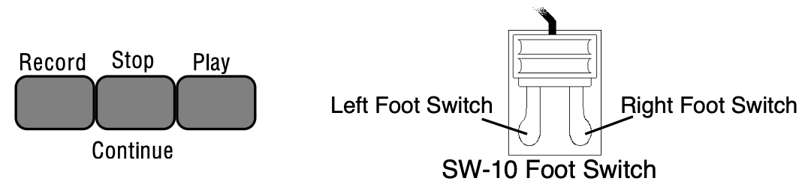
Assuming the Autopunch function is OFF:
When the Autopunch function is ON, the sequencer will only enter and exit Record mode at the points specified by the Edit Times on the Locate page.
On most sequencer pages the lower-left-hand corner of the display indicates the Sequencer Status.
The sequencer is always in one of the following states:
To exit Audition Stop and return to the normal stop state, you must first instruct the TS‑10 to KEEP either the new or the original track (see Audition Play/Keep Page later in this section).
Pressing the Seqs/Songs button located beneath the display puts the TS‑10 into sequencer mode. The ten Bank buttons (labeled 0-9) will now select Sequencer Banks. Each bank contains six sequencer locations, any of which can contain a sequence or a song, or may be blank.
| SEQ2.$MY-HIT-SNG | .FIRST-VERSE | .2ND-VERSE | |
| .CHORUS | .BIG-FINISH | -BLANK- | |
Song names always have a dollar sign ($) as the first character, so that you can tell at a glance which locations contain sequences and which are songs.
The names of sequences and songs which contain actual recorded track data are preceded by a dot (.) on sequencer bank pages. Locations which have not yet been defined as a song or sequence show -BLANK-.
Selecting an undefined -BLANK- field will initiate the Create New Sequence or Song function (see Creating New Sequence or Song, later in this section).
When you select a song or sequence it becomes underlined. The currently selected song or sequence is always underlined.
Try selecting a sequence, and pressing the Play button in the Sequencer section, to the right of the display. The selected sequence will begin to play.
While one sequence is playing you can select another one. An underline will begin to flash beneath the new sequence, but the original one will continue to play. When the first sequence is finished, the underline will switch to the new sequence, and it will play. In this fashion you can string sequences together in real time, as they play. The display always tells you which is playing (underline) and which is selected to play next (flashing underline).
Press either the Stop/Continue button or any Foot Switch assigned to either PLAY/STOP or STOP/CONT to stop the sequence.
Each TS‑10 sequence and song has twelve independent polyphonic Tracks on which you can record notes, controllers, and program changes using local TS‑10 sounds, remote MIDI instruments, or both. These tracks are selected from the two Seq/Song Track pages, labeled Seq/Song Tracks 1-6 and Seq/Song Tracks 7-12.
Let's take a look at the Seq/Song Tracks pages.
Press Seq/Song Tracks 1-6. This takes you to the first of the two pages:
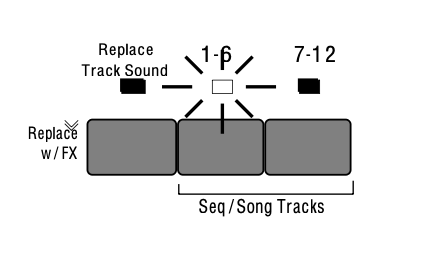
| TRAX | .DRUM-KIT-06 | .SMAK-BASS | .ALTO-SAX |
| STOP | SYNTH-HORNS | .LUSH-STRINGS | -UNDEFINED- |
The LED above the Seq/Song Tracks 1-6 button lights, and the display shows the names of the programs on the six tracks of the current song or sequence. Press the soft button next to a track to select that track.
Press Seq/Song Tracks 7-12. This takes you to the second of the two Tracks pages:
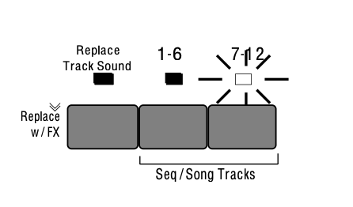
| TRAX | SHIMMERY | .CHIFF-FLUTE | .HARPSICHORD |
| STOP | MIRROR-BELL | -UNDEFINED- | -UNDEFINED- |
The LED above the Seq/Song Tracks 7-12 button lights, and the display shows the names of the programs on the remaining 6 sequence tracks. Tracks which show –UNDEFINED– instead of a program name have not yet been defined (to define an undefined track you just select it).
A dot to the left of the track location indicates that there is recorded data on the track.
One these two pages you can select and layer the tracks of a sequence (by clicking or double-clicking) just as you would on regular program bank pages. You can go back and forth between Seq/Song Tracks 1-6 and Seq/Song Tracks 7-12 without losing what was selected or layered in the other half. The LEDs above the two Seq/Song Tracks buttons tell you where you are.
To replace the TS‑10 sound on a given Sequence or Song track with a sound of your choice:
To copy a sound along with its effect into the sequence (replacing the current sequence effect with the one in the sound), you follow the same procedure as above, with the addition of double-clicking the Replace Track Sound button.
Here’s how to select Programs that have the same defined Program Type in Sequencer mode. For this example, we’ll replace the Program on a sequence track from a sequence used in the DEMO-SONG found on the TSD-200 floppy disk that came with the TS‑10.
| LOAD FILE=TUTORIAL | P Size=256 | *YES* | |
| TYPE=30-SEQ/SONGS | BANKS 0-4 | *NO * | |
| SEQ0.$ DEMO-SONG. | VERSE 1 | . VERSE 2 | |
| STOP. BRIDGE . | RE-FUNK | .LAYERS OUT | |
| TRAX. | GENESIS | . MYSTIQUE | . FILMISH |
| STOP. | ROLL-CYMBAL | . BRAVO | . BEST-PAD |
| R3-0 | STUDIO-PADS | TAKE-ONE | GLASS-KEYS |
| PLAY | FANTASIA | TRANS-COMP | BEST-PAD |
The sequence will now be playing GLASS-KEYS where BEST-PAD used to be.
| R2-8 | BIG-ANNA | POLY-SYNTH | WOW-SWEEP |
| PLAY | OLD-FRIEND | WARMSAW | 3-WAY-SYNTH |
This is the sound that we want to use to replace BEST-PAD.
In a preset, a maximum of two sounds may be layered with the selected sound. Within a sequence, you can layer as many as 11 sounds with the selected sound. You can have up to 12 tracks layered (stacked) on one key, or up to 12 different tracks split across the keyboard by using the Key Zone function described in Section 4 — Understanding Presets.
Layering sounds is the same as in a normal Preset Track Parameter page:
Every sequencer track has a full set of Track parameters which are saved with the sequence or song. The values of the following are remembered for each track:
| • Mix | • Sostenuto On/Off |
| • Pan & Pan Mode | • Pitch Bend On/Off |
| • Attack * | • Mod Wheel On/Off |
| • Release * | • Reset Controllers On/Off |
| • Brightness * | • All-Notes-Off On/Off |
| • Timbre * | • Patch Select Mode * |
| • External MIDI Controller (XCTRL) * | • Pressure Mode * |
| • Key Zone | • Volume Pedal Mode |
| • Velocity Range | • MIDI Status |
| • Velocity Sensitivity | • MIDI Channel |
| • Transpose | • MIDI Program * |
| • Detune | • MIDI Bank Select * |
| • Rate (LFO and/or Wave List Duration) * | • Effects Bus Routing |
| • Sustain On/Off | • Effect Mod Control |
Track Parameters marked with an asterisk “*” are stored with each sound.
You should refer to Section 4 — Understanding Presets and Section 5 — Preset/Track Parameters for a full discussion of the performance/track parameters and their functions.
As described in Section 1 — Controls & Basic Functions and Basic Functions, whenever you go from Sounds or Presets mode to the Track Parameter pages, the TS‑10 displays the names of the three most recently selected sounds (on the top line) and their parameter values (on the bottom line).
Sequencer Tracks are similar, except that the names of the sounds and their corresponding Track parameters are shown on different pages. When you press Seq/Song Tracks 1-6 or 7-12, the TS‑10 displays the names of the six sounds on those six tracks:
| TRAX | .DRUM-KIT-06 | .SMAK-BASS | .ALTO-SAX |
| STOP | SYNTH-HORNS | .LUSH-STRINGS | KOTO |
When you then select any of the Track parameter pages, the display will show only the parameter values for the six tracks, and not the names of the sounds:
| ATTACK | +00 | +63 | +17 |
| STOP | -64 | +25 | +00 |
Let’s look at a Sequencer Track Performance parameter, and you’ll get a better idea how this works. Using the Brightness/Timbre page as an example:
| BRIGHT | +00 | +63 | +45 |
| STOP | -23 | +00 | +00 |
Each of the six parameter values corresponds to one of the 12 track locations (the LED above the Seq/Song Tracks 1-6 or 7-12 button will be lit to tell you which half you are in). You can verify this by pressing the Seq/Song Tracks 1-6 or 7-12 button again. Repeatedly pressing either the Seq/Song Tracks 1-6 or 7-12 button will toggle between the TRAX Page and the last-selected Track Performance parameter. This will help you keep track of what you’re editing. Notice that the upper left corner of the display still shows the Track Parameter Page name, but it may appear differently for Sequence tracks, because there is more room to display full page name. Other than that, Track parameter editing for a sequencer track is the same as for presets. All Track parameter values are remembered for each track of each sequence and song.
In Sequencer mode, selecting and editing a track from a Track Parameter page does not change what is selected or layered on the Seq/Song Tracks 1-6 and 7-12 pages — i.e. it does not affect what you hear when you play the keyboard. This means that you can edit a track parameter value for one (or more) of the tracks within a group of layered sounds without changing the layer.
You can adjust volume, pan, timbre, etc. for tracks other than the selected track while playing back a sequence. However, this also means that you could edit a performance value for a track that you are not currently hearing from the keyboard, so be careful that you know what track(s) you are listening to in relation to what is selected on the Track Parameter pages.
The track that is selected on the Seq/Song Tracks 1-6 or 7-12 pages is the one that will be recorded if you go into record.
You should get in the habit of always selecting a track from the Seq/Song Tracks 1-6 or 7-12 page before going into record.
Note that the Tempo Track feature offers no Track Parameter values, and appears on all of the track parameter pages as TEMPO. For example, the Track Parameters Mix page would look something like this:
| MIX | 127 | 064 | 101 |
| SNGS | 069 | (127) | TEMPO |
You can copy the three tracks of a preset, with all Track Parameter settings preserved, into three tracks of the current song or sequence. The preset will be copied whole into the three tracks on the upper or lower line of either the Seq/Song Tracks 1-6 or the 7-12 page:
When you copy a preset into a sequence, the values of all the Track Parameters are copied. However, the selected and layered status of the tracks in the preset is not copied. Whichever tracks in the sequence are selected or layered when the preset is copied will remain so after it is copied. This also does not affect the track data in the sequence. The sequencer can only record one track at a time (except in Multi-Track Record, described later in this section). If you want the preset to play a sequence track, you must copy the sequence data to the other two tracks, if needed.
To copy a preset along with its effect into the sequence (replacing the current sequence effect with the one in the preset), follow the same procedure as above, with the addition of pressing the Track Effects button before pressing Seq/Song Tracks 1-6 or 7-12 in the last step.
Creating a new sequence or song is easy:
| CREATE NEW | *SONG* OR | *SEQUENCE* | |
| *NO* | |||
| CREATE SEQ | NAME=SEQUENCE-03 | *YES* | |
| LEFT -CURSOR- RIGHT | *NO * | ||
| CREATE NEW SEQ | (NEW-NAME) | *YES* | |
| WITH TIME SIGNATURE 4/4 | *NO * | ||
| CREATE SONG | NAME=$SONG-02 | *YES* | |
| LEFT -CURSOR- RIGHT | *NO * | ||
Song names are always preceded by $ to indicate their special nature. Note that you cannot change this $ character. The other ten characters can be edited.
When you want to erase all sequences and songs in the TS‑10 sequencer memory, first make sure you have saved any important data to disk, then:
Here we will describe recording a new sequence from scratch. First we will concentrate on sequencing with the TS‑10 alone, and then cover sequencing remote MIDI devices.
| TRAX | DYN-PIANO | -UNDEFINED- | -UNDEFINED- |
| STOP | -UNDEFINED- | -UNDEFINED- | -UNDEFINED- |
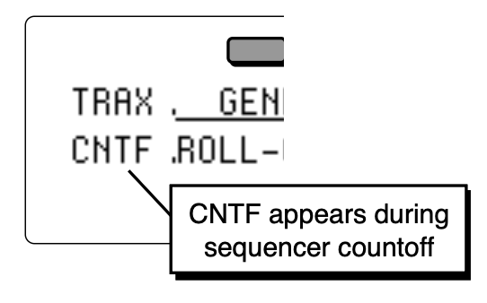
The length of the first track defines the length of the sequence. For this reason, there is a special procedure for recording the first track of a new sequence.
The display will ask "KEEP FIRST TRACK?" The length (in bars) of the first track is shown in the lower left corner of the display. This will determine the length of the sequence.
After you have answered *YES* to the question “KEEP FIRST TRACK?”, all other recording, including re-recording the first track, will follow the same basic routine. The length of the sequence is now defined (by the length of the first track). The rest of the tracks will automatically have the same length.
At the end of the sequence, the TS‑10 will leave record mode and (assuming LOOP=ON) enter Audition mode.
| PLAY ORIGINAL TRACK | PLAY NEW TRACK | |
| KEEP ORIGINAL TRACK | KEEP NEW TRACK | |
The first time you record a particular track, this isn’t very useful, but it is invaluable when you begin to do second and third takes, since it allows you to compare the tracks before deciding which to keep.
The Audition page appears after all track recording and after all track edit functions. The TS‑10 always gives you a chance to audition changes to the track data before deciding whether to keep them.
It is possible to alternate between playing Original and New tracks in Audition mode without having the track restart from the beginning, making comparisons more convenient. If the sequencer is playing, each time Play New or Play Original is selected, the context will instantly switch. Pressing Play will play the selected track from the beginning.
When ineligible buttons are pressed while in Audition mode, a message appears to indicate that it is necessary to decide which version of the most recently recorded track is to be kept before the desired action can be performed. The message appears momentarily, and then the display changes back to the Audition page.
The TS‑10 offers two methods for “punching in” (or re-recording) a specific part of a track. When AUTOPUNCH=OFF (on either the Locate or Sequencer Control sub-page), you can punch in manually just by playing the keyboard to start recording. When AUTOPUNCH=ON, the TS‑10 will enter and exit Record mode automatically at the precise times that you specify on the Locate sub-page.
When AUTOPUNCH=ON, the TS‑10 will record events only within the window of time specified by the Edit times, no matter how you enter record. Thus if you press Play, then Record the TS‑10 will wait for you to play before entering record, but recording will only be triggered by notes within the Edit times window. Notes played before the Edit IN time or after the Edit OUT time will not initiate recording.
If the RECORD MODE=LOOPED (on the Sequencer Control page) and AUTOPUNCH=ON, the sequencer will continue to go in and out of record at the Edit points each time the sequence repeats, for as long as you let it play.
To find the BankSet, Bank and Display location (U0-1.5, U1-3.1, R2-7.4, etc.) for the sounds assigned to sequencer tracks:
| TRAX . | COUNTRY-KIT. | FRETLESS | .CONCERTINA |
| STOP . | HARMON-MUTE | .*BANK S8-0* | -UNDEFINED- |
| TRAX | R3-9.1 | R3-4.1 | S8-8 |
| STOP | R4-2.2 | U0-8.2 | ****** |
See Section 14 — Understanding Sampled Sounds for more information about Surrogate Programs.
Pressing the Edit Sequence button displays the sequence editing page. Pressing the button twice will display the sub-page containing the ADD & DELETE BARS function.
The following functions can be selected from the Edit Song page:
Almost everyone is familiar with MIDI — that magical connection that lets you play one instrument (or a whole roomful of them) from another. MIDI (Musical Instrument Digital Interface) is a standard that has been agreed upon by manufacturers for translating musical events into specific numbers which are transmitted and received by MIDI instruments.
When you play middle C on the TS‑10, for instance, it instantly sends to its MIDI Out jack a series of numbers representing a Key Down event, along with the location of the note on the keyboard and how hard the key was struck. When you release the key the TS‑10 sends a number meaning Key Up. A MIDI instrument connected to the TS‑10 can receive and translate those numbers, and will play the middle C itself. The same thing happens whenever you move a controller, such as the Pitch or Mod Wheel, or when you select a new sound — each of these events is translated into a series of numbers which are transmitted by the MIDI Out jack.
You can use the TS‑10 sequencer to drive external MIDI devices, greatly enhancing the number of available voices and timbres. A sequence or song track can be assigned MIDI status (on the Track MIDI page) so that it plays only out MIDI; so that it will play only locally; or both, in which case it will play a local sound and send on its designated MIDI channel.
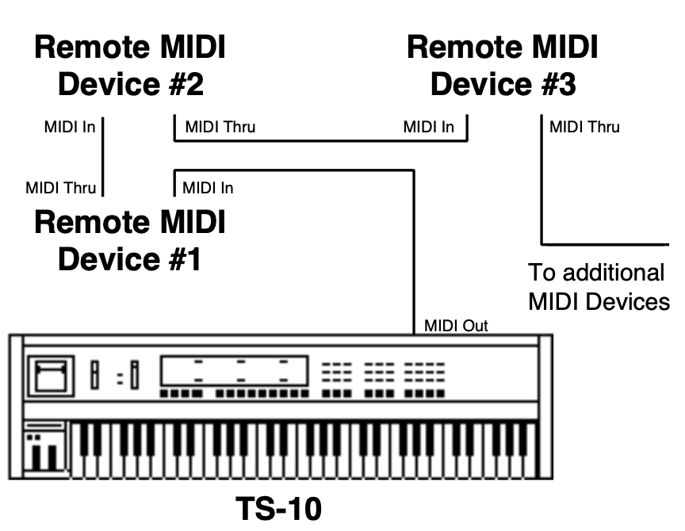
When controlling multiple remote MIDI devices, first connect the various devices to the TS‑10, and to each other, as shown here. Connect the MIDI Out jack of the TS‑10 to the MIDI Thru jack of the first device. Connect the MIDI In jack of the first device to the MIDI Out jack of the second device. Connect the MIDI Thru jack of the second device to the MIDI In jack of the third device. And so on, for as many devices as you will be using.
With this arrangement, once you set up the proper MIDI channels, etc., each remote MIDI device will receive and play only the data that is intended for it, and will “pass along” all other data.
Also, each can be played from its own keyboard (as well as from the TS‑10’s) without affecting the others, because MIDI Thru jacks only pass along incoming MIDI data, and do not transmit what is played on the instrument.
This set up is ideal for controlling everything right from the TS‑10. Simply by selecting the track which is set to the same MIDI channel as to a particular instrument, you can:
In other words, once you have made the appropriate connections, and set up the MIDI configuration of the tracks and all remote MIDI devices, you can use the TS‑10’s keyboard and its front panel to control and record all the remote MIDI devices in your rig.
The next step is to set up each remote MIDI device to receive only the MIDI information that is intended for it. When each of the receiving units is set to receive on a different MIDI channel (or a number of them, for multi-timbral units) you can control them all right from the TS‑10.
For each remote MIDI device:
Once you have assigned MIDI channels to each instrument in your rig, write them down, and keep the paper handy for quick reference.
After you have made the MIDI connections, and set up your remote MIDI devices as described above, you now configure the tracks of a sequence to send to those remote MIDI devices. Let’s suppose that you are sequencing several remote MIDI devices, as depicted in the illustration on the previous page.
For each track which you want to drive a remote MIDI device:
From now on, whenever you select that sequence, or when it plays as a step in a song, this track will send out this program change on its selected MIDI channel.
Once everything is set up, you can proceed with recording MIDI tracks exactly as you would for tracks with local or both status. Tracks that are sent out MIDI are treated the same as internal tracks in terms of recording, overdubbing, punching in, editing, etc. Follow the same steps outlined earlier in this section for recording the first track and then for additional tracks.
For each successive track you record, the procedure will follow the same lines:
MIDI tracks can be selected and stacked from the Tracks pages, and can be muted or soloed from the Mix/Pan page, the same as any other tracks. Performance/Track parameters such as Mix, Key Zone and Transpose all apply to MIDI tracks just as with local tracks.
Most often you will be recording sequences and songs which contain some MIDI tracks and some local tracks. When this is the case, be sure that you assign local status (as opposed to both local and MIDI) to the tracks that you want to play only on the TS‑10. This will avoid accidentally sending unintended MIDI data to an external instrument.
When recording sequencer tracks, the TS‑10 will record all changes to controllers such as the pitch and mod wheels, pressure, foot pedal, patch selects, sustain, sostenuto, effect, foot switch, etc.
There are other, less obvious, controllers that will be recorded into the track if they are changed while the track is being recorded — The Pan, Attack, Release, Brightness, Timbre, XCTRL, and Rate Track parameters. When the sequencer is in Record or Overdub mode, if you go to any of these Track Parameter pages and change the value for the current track, the changes will be recorded. When you play back the track, you will notice that the screen is updated with the new value.
The TS‑10 can change track sounds in a sequence or song, allowing you to change the sound that is playing on the track as the track plays. There are two ways to do this. Both methods will have the same effect, but the first is best suited for local tracks, the second for MIDI tracks.
| TRAX . | ROCK-KIT . | SMAK-BASS . | SWELLSTRINGS |
| STOP . | ALTO-SAX . | PIANO-1 . | -UNDEFINED- |
At present, Channel pressure is recognized by more MIDI devices than Poly-Key pressure. If you are playing or sequencing an external MIDI device from the TS‑10 and pressure doesn’t seem to have an effect, it could be the TS‑10 is set to transmit Poly-Key pressure and the receiving instrument only recognizes Channel pressure. In this case, set Track PRESSURE=CHAN when playing or sequencing that instrument.
Until you change it, each sequencer track will be sent to the output bus which is programmed into the sound. In almost all cases this means that the track will be sent to the MAIN stereo outputs.
| BUS | VOICE | VOICE | -DRY- |
| STOP | -FX1- | -FX2- | -AUX- |
This page serves as a mixer for the various tracks, letting you determine how each track is routed to (or around) the effects. The available settings are:
If you want to use the two outputs as independent mono outputs, use the track PAN control in conjunction with the Effects Bus Override:
Pressing the Edit Track button displays the top level track editing page. Pressing the button twice will display the track edit options sub-page. These edit functions will affect the currently selected track. If a sequence is selected, the current sequence track will be edited; if a song is selected, the current song track will be edited.
The following functions can be selected from the Edit Track page:
Once you have recorded a few tracks of a sequence, you will want to balance the levels of the tracks, and maybe listen to them one or two at a time. This is done from the Mix/Pan page.
Select a track from the Seq/Song Tracks 1-6 or 7-12 page, then press the Mix/Pan button. The display shows:
| MIX | 127 | 085 | 092 |
| STOP | 086 | (127) | (127) |
From this page, in addition to balancing the levels of the tracks in the sequence, you can solo and mute individual tracks just as you can with voices on the select voice page. Notice that the levels for any tracks without recorded data will appear in brackets:
The TS‑10’s Song Mode is the key to unlocking its true power as a Performance/Composition Synthesizer. In song mode, you can chain a number of sequences together to form a song. Songs are made up of Steps — for each song step, you can choose a sequence to play and the number of repetitions of that sequence, as well as mute and transpose status for each track of the sequence.
But wait, there’s more. Each TS‑10 song also contains its own effects set-up (see below) and 12 additional tracks which are independent of the tracks in the component sequences that form the song steps. This gives you a 24 track sequencer with tremendous flexibility. You can choose which musical parts you want to put into the component sequences, and which parts you put in the song tracks. Discussion of song tracks begins on the next page.
As you are probably aware, when you are playing TS‑10 sounds and you select a sound which uses a different effect from the previous one, there is a momentary muting of the audio output. This is because, like all digital signal processors, the TS‑10 requires some time to switch from one effect to another. The software program which defines the effect must be changed for each different effect.
The same holds true when selecting sequences. Each sequence has its own effects set-up, which is completely programmable and is saved with the sequence. When you select a sequence, if the new one has a different effect than the previous one there will be a brief muting of the output.
This can pose a problem when playing a song — as a new song step begins to play, if the sequence in that step has a different effect than the previous one, there might be a muting of the audio output. Since it is usually not desirable during sequencer play to mute the output, the TS‑10 offers some alternatives.
The SONG STEP EFFECT parameter on the Sequencer Control page determines which effect(s) will be heard when a song is played:
The setting of this parameter is saved with each song. Whenever a new song is created, it defaults to SONG STEP EFFECT=SONG. This ensures that there will be no output muting, but it also means that a sequence might sound different in a song than when it is played on its own.
If you use the SONG STEP EFFECT=SEQ setting for a given song, you can minimize the muting by doing the following:
Pressing the Edit Song button displays the top level song editing page. Pressing the button twice will display the Song Step Editor. If you press the Edit Song button when a sequence is selected, the display will respond SONG NOT SELECTED and will not allow you onto this page.
The following functions can be selected from the Edit Song page:
For each Song Step you want to create, on the Edit Song Page:
When you are done editing the song, press Locate (or any other sequencer page button) to exit. You can then press Play to hear your new song.
A Song on the TS‑10 is much more than simply a group of sequences chained together. Once you have created a song and edited its steps, you can record another complete set of 12 song-length tracks. These Song Tracks are completely independent from the individual sequence tracks; each has its own sound and complete set of track parameters. The length of the song tracks is determined by the combined length of the song’s component sequences.
Let’s suppose you have constructed a song. For our example, we will take three sequences, each using up to 12 tracks, and combined those sequences into a song:
Your Song would look like this:
| SONG | ||
|---|---|---|
| Song Step 1: Sequence 01 (4 bars) | Song Step 2: Sequence 02 (8 bars) | Song Step 3: Sequence 03 (4 bars) |
| Sequence Track 1 | Sequence Track 1 | Sequence Track 1 |
| Sequence Track 2 | Sequence Track 2 | Sequence Track 2 |
| Sequence Track 3 | Sequence Track 3 | Sequence Track 3 |
| Sequence Track 4 | Sequence Track 4 | Sequence Track 4 |
| Sequence Track 5 | Sequence Track 5 | Sequence Track 5 |
| Sequence Track 6 | Sequence Track 6 | Sequence Track 6 |
| Sequence Track 7 | Sequence Track 7 | Sequence Track 7 |
| Sequence Track 8 | Sequence Track 8 | Sequence Track 8 |
| Sequence Track 9 | Sequence Track 9 | Sequence Track 9 |
| Sequence Track 10 | Sequence Track 10 | Sequence Track 10 |
| Sequence Track 11 | Sequence Track 11 | Sequence Track 11 |
| Sequence Track 12 | Sequence Track 12 | Sequence Track 12 |
Now, with the song selected, you can press the Seq/Song Tracks 1-6 and 7-12 buttons and see an entirely new set of empty tracks. These are the song tracks. Continuing with the above example, the song tracks might look like this:
| SONG | ||
|---|---|---|
| Song Step 1: Sequence 01 (4 bars) | Song Step 2: Sequence 02 (8 bars) | Song Step 3: Sequence 03 (4 bars) |
| Song Step 1: | Song Step 2: | Song Step 3: |
| Sequence 01 (4 bars) | Sequence 02 (8 bars) | Sequence 03 (4 bars) |
| Sequence Track 1 | Sequence Track 1 | Sequence Track 1 |
| Sequence Track 2 | Sequence Track 2 | Sequence Track 2 |
| Sequence Track 3 | Sequence Track 3 | Sequence Track 3 |
| Sequence Track 4 | Sequence Track 4 | Sequence Track 4 |
| Sequence Track 5 | Sequence Track 5 | Sequence Track 5 |
| Sequence Track 6 | Sequence Track 6 | Sequence Track 6 |
| Sequence Track 7 | Sequence Track 7 | Sequence Track 7 |
| Sequence Track 8 | Sequence Track 8 | Sequence Track 8 |
| Sequence Track 9 | Sequence Track 9 | Sequence Track 9 |
| Sequence Track 10 | Sequence Track 10 | Sequence Track 10 |
| Sequence Track 11 | Sequence Track 11 | Sequence Track 11 |
| Sequence Track 12 | Sequence Track 12 | Sequence Track 12 |
| Song Track 1 (16 bars) | ||
| Song Track 2 (16 bars) | ||
| Song Track 3 (16 bars) | ||
| Song Track 4 (16 bars) | ||
| Song Track 5 (16 bars) | ||
| Song Track 6 (16 bars) | ||
| Song Track 7 (16 bars) | ||
| Song Track 8 (16 bars) | ||
| Song Track 9 (16 bars) | ||
| Song Track 10 (16 bars) | ||
| Song Track 11 (16 bars) | ||
| Tempo Track or Song Track 12 (16 bars) | ||
Song tracks are treated like normal sequence tracks whose length is equivalent to the combined length of all the sequences which make up the song. The length of the song tracks is set according to the song length at the time the first song track is recorded. Changes made to the song structure after the first song track is recorded will not affect the length of the song tracks.
When a song is selected, what you see on the Seq/Song Tracks pages and the track parameter pages depends on the setting of the EDIT TRACKS parameter on the Sequencer Control page.
When a song is selected and EDIT-TRACKS=SEQ, the LED’s above the Seq/Song Tracks 1-6 and 7-12 buttons will flash to remind you that the track data is for the currently selected sequence in the song step and not the actual song tracks.
After you have created and edited a song, you can “mix down” the volume and pan of the sequence tracks that make up the song steps, and of the song tracks themselves. The mixdown process does not affect the data in the individual sequences that compose the song steps; it creates a song-length Mixdown Track (which is actually a part of the song track) on which you can record mix and pan changes which will affect the sequence and/or song tracks over the course of the entire song. You can use this function to fine-tune the dynamics of certain tracks during part of a song, or to simply fade them out at the end of the song.
(Note that you can toggle between Song tracks and Sequence tracks in song mode by doubleclicking the Seq/Song Tracks 1-6 or 7-12 button.)
The mixdown data is always recorded into the song track which is selected on the Seq/Song Tracks page, whether you are mixing a sequence track or a song track. You must, therefore, select the appropriate-numbered song track (while EDIT TRACKS=SONG on the Sequencer Control page) before entering Record, even if you then switch to EDIT TRACKS=SEQ to mix a Sequence track. For example, if you want to mix down Sequence track 3 over the length of the song, you must have song track 3 selected.
Mixdown volume and pan are recorded on the song track in a special form of ADD mode. When you record mixdown volume or pan, the information is added to the data in the song tracks. This means that:
Whenever possible, you should use this function as the last step in the production chain, after you have finished changing the song length, recording and erasing song tracks, etc.
As of software version 2.0, songs are created with Song Track 12 assigned to be a Tempo Track by default. This allows you to record continuous tempo changes to the sequences that make up a song. Here’s how:
| CONTROL | CLOCK=INT | RECORD-MODE=REPLACE | |
| SNGS | TEMPO=+00 | ACTUAL=025 | LOOP=ON |
When the Tempo Track is selected on the Seq/Song Track 7-12 page, the AUTOPUNCH switch (normally found in the bottom center of the Sequencer Control page) is replaced with the ACTUAL tempo value. The Song TEMPO parameter allows you to increase or decrease the tempo(s) of the sequences that make up the song: When TEMPO=+00, the ACTUAL value shows the actual tempo of the sequence corresponding to the song step that is currently playing.
Raising or lowering the TEMPO value will re-compute the actual sequence tempo, and the ACTUAL value will show the sequence tempo biased by the TEMPO value. The TEMPO value range for songs is -64 to +63.
When the Tempo Track feature is used, you are limited to 23 Seq/Song Tracks. If you do not need to record continuous tempo changes, you can gain back the Song Track 12 for recording a sound, but you will lose any continuous tempo changes that you may have recorded.
If you change your mind, you can use the ADD-TEMPO-TRK command on the Edit Song page to regain the Song Tempo Track feature. See Section 11 — Sequencer Parameters for more about the ADD-TEMPO-TRK feature.
The following EDIT TRACK commands will function normally when a Tempo Track is selected:
| ERROR - TRACK 12 IS A TEMPO TRACK | |||
When you record Tempo changes with the Tempo Track feature, the Data Entry Controls will “scroll” through every value between where you start and where you want to end. For instance, if your song Tempo Track value starts at +00, at the bridge in your song (song step 3), and you want to slowly increase the tempo to +05, and then at the beginning of the second verse (song step 4) instantly return to +00, the Tempo Track events will scroll through all values between +05 and +00. These extra Tempo Track events can be eliminated using the Edit Track EVENT-LIST command. Here’s how:
| EVENT TYPE=TMP | TIME=01.01.001.01.01 | *EXIT* | |
| NUM=00000 | EVENT=***.000 | *EDIT* | |
You have just successfully eliminated four Tempo Track events (+04, +03, +02, and +01) using the Event Editor.
Tracks do not have to be selected in order to have data recorded on them, but they must be defined. Each channel of incoming MIDI data will be recorded on the lowest-numbered TS‑10 track which has the corresponding MIDI channel number. For example, if both track 1 and track 2 are set to MIDI channel 1, only track 1 will receive and record any data because it is the lowestnumbered track set to MIDI channel 1. It is suggested that you set each track to a different MIDI channel to avoid confusion.
A newly created sequence (or song) will have MIDI channels 1 to 12 automatically assigned to the 12 tracks in ascending order, but all of the tracks except track 1 are initially -UNDEFINED-. Selecting undefined tracks while on the Track Select page (TRAX) will cause all the settings from the previously selected track to be copied to the new track, including the MIDI channel number. You will have to make sure that the channel assignments and other settings are correct after you have defined the appropriate number of tracks to record on.
If you wish to define a new track but leave its settings alone, you can use Replace Track Sound after underlining one of the new track’s Track Parameters (i.e. MIDI Channel). Underlining this parameter sets up the new track to have its sound replaced without actually “selecting” the track. This method allows you to define the track without changing most of the settings (except for MIDI Program number, Timbre, Release, and Pressure mode). Beware - this technique can cause problems if a MIDI loop is present.
There is no Audition when using Multi-Track Record. All new tracks that received data are kept automatically after recording ends. The EDITING DATA... message is displayed while the sequencer is processing the data you have recorded. The time required for processing depends on how much data and how many tracks were recorded, and it can take several minutes. After the processing is complete, the Locate page is displayed. You can either re-record or erase the tracks (or the entire sequence or song) if you do not wish to keep the results after recording. Multi-Track Record always operates in Replace mode, regardless of the setting of the REC-MODE switch on the Sequencer Control page.
Data is not recorded on tracks whose status is set to MIDI-OFF, but all defined tracks will have “dots” next to the program name after recording, even if they do not have any actual track events on them.
If external sync is being used (CLOCK=MIDI), recording begins with the first clock received after the MIDI Start command. If internal sync is selected (CLOCK=INT), then recording begins when the first note is received.
The following procedure is the basic method for recording a multi-track sequence from an external sequencer into the TS‑10.
Use the following basic procdure if you want to record into the TS‑10’s sequencer from its own keyboard in a MIDI loop. You can record to a single track, or to multiple stacked tracks, depending on which tracks are selected, and how you set the REC-SOURCE parameter on the Sequencer Control page:
All notes played and all control changes made in Step Entry mode will always be recorded into the new track.
With GATE-TIME=HELD, if you enter a note and release the key without advancing the track location (time), then the note will be recorded with minimum (1/64th note) duration. This is also true when using AutoStep because the key down and key up appear to occur at the same time.
For controllers, it is necessary to advance the track location after entering the event so that they will be correctly recorded. Use *STEP* or advance one of the TIME fields.
It is possible to record trills played with monophonic sounds when AUTOSTEP=ON if you set the gate-time to be less than the step size, and remember to change GATE-TIME to HELD just before you finally release the held key. For example, if STEP=1/16, then GATE-TIME must be less than 1/16 (i.e. 1/16T, 1/32, etc.).
This is useful when you are looking for the right key(s) to play next and you do not want to inadvertently enter wrong notes into the track.
Your access to other pages is restricted in Step Entry mode, in a way similar to Audition mode.
You may get to any of the Track Parameter pages, the Click page, and the System page. The Seq/Song Tracks 1-6 or 7-12 pages may be displayed, and you may use Replace Track Sound to enter program changes onto the current track, but you may not change tracks. The BankSet and Bank buttons may be used in Replace Track Sound mode to change BankSets and Banks. Pressing any of the other restricted buttons will return you to the Step Entry page. This is a convenient way to get back after you have selected one of the accessible pages while in Step Entry mode.
As with the normal mode of recording, when you have completed recording a track in Step Entry mode, either by pressing Stop/Continue or by reaching the end of the track, you will enter Audition mode, which behaves as it always has.
You can use the Locate page to get to the place in the track where you wish to begin Step Entry recording, and then hold Record and press Stop/Continue to enter record at that point. You may also be in PLAY and press the Record button at the point where you want to start Step Entry recording. Note that autopunch does not affect Step Entry recording.
Along with the notes, controllers, and program changes that are recorded on each track, there are many other parameters that are saved with each sequence or song. These are:
Whenever you record any track of a sequence or song, all of these values are automatically saved — that is, they will be remembered by the TS‑10 if you leave the sequence (by selecting another one) and return to it later. However, if the SAVE CHANGES parameter is set to ASK, and you edit any of the above values, and then select a new sequence or song before you record any new track data, the following message will appear:
| SAVE CHANGES TO <SEQ NAME> ? | *YES* | ||
| *EXIT* | *NO* | ||
No matter which response you select, the recorded track data (notes, controllers and program changes) are always saved. Sometimes it’s hard to remember, when you get this page, exactly what you changed. As a general rule, if you are happy with the sequence or song as it is, answer *YES*. If you have just been experimenting with different tempos, Programs, MIDI configurations, etc., and want to leave the sequence as it was before your experiments, answer *NO*. If you’re not sure whether you want to save or discard your changes, and you want to reexamine the sequence or song, press *EXIT*.
As mentioned earlier, you can avoid being asked to save changes by setting the SAVE CHANGES parameter on the Sequencer Control page to NO. For live performance, and other applications in which you want to experiment with tempo, track parameters, etc. without being bothered about saving the changes, this is the preferred setting. And if you are always willing to commit to your edits as you go, SAVE CHANGES=AUTO is the preferred setting.
Performance / Composition Synthesizer · Version 3.0
The following parameters control the TS‑10 sequencer. Parameters for creating and manipulating sequences, songs, and the tracks contained within each are covered here. For a basic overview of the concepts involved, refer to the previous section.
The three Edit buttons in the top row of the Sequencer section of the front panel provide access to the various sequencer editing functions. These are divided into Song, Sequence, and Track editing functions. Pressing any of these three buttons shows a menu of the available functions in that category.
Press the Seqs/Songs button (underneath the display) and select a Song. Then press the Edit Song button. If you press the Edit Song button when a sequence is selected, the display will respond SONG NOT SELECTED and will not allow you onto this page. The display shows:
| EDIT SONG | ADD-TEMPO-TRK | INFO |
| ERASE | COPY | EDIT STEPS |
The ADD-TEMPO-TRK command allows you to add a Tempo Track to an existing song that does not have a Tempo Track. This command is only visible when the currently selected song does not contain a Tempo Track:
| ERASE SONG TRACK 12 AND | *YES* | |
| REPLACE WITH TEMPO TRACK | *NO* | |
INFO Sub-Page Pressing the soft button above INFO displays a page containing information about the song, including the song name, the size in blocks, the song tempo offset, number of steps, and the elapsed time at the current tempo. From this page, you can also rename the song, and adjust the tempo offset. The parameters on this page are:
Used to rename the song. Pressing the soft button above the Song Name displays a sub-page which allows you to edit the name of the song. Use the data entry controls and the LEFT and RIGHT cursor buttons to rename the song. Then press *SAVE* to return to the INFO page with the new name.
This read only parameter displays the size of the current song in blocks. Blocks are the units of 512 bytes used by the sequencer and disk memory management software. One block generally represents 128 events, though this is only an approximation and depends on the specific data recorded.
This lets you speed up or slow down the entire song without changing the tempo of the component sequences. Changing the song tempo offset automatically adjusts the tempo of each of the sequences in the song, within the legal limits of 25-250 BPM.
This read only parameter indicates the number of steps in the song.
This shows you the total time of the song in minutes, seconds, and hundredths of a second. It is readout only — you cannot directly change it. However, when you change the Song Tempo Offset (TEMPO above) you will see the time readout change accordingly.
The Erase command will erase the currently selected song and leave its location undefined. First, make sure the Song you want to erase is selected. Then:
Use this command to copy the currently selected song into another sequencer location. Note that the original song remains intact in its original location. First, make sure the Song you want to copy is selected. Then:
| COPY SONG $SONG-32 | *YES* | |
| TO NEW LOC=05 | *NO* | |
Pressing EDIT STEPS displays the song step editor page. Here you chain sequences together to define the basic structure of the song.
A song is composed of Steps. Each Step consists of:
When you select EDIT STEPS, the display shows the Song Step Editor page:
| EDIT | INSERT | DELETE | TRACKS |
| SONG | STEP=01 | SEQ=SEQUENCE-02 | REPS=02 |
Inserts a blank song step before the current song step.
Removes the current song step, and shifts the remaining steps down to fill the gap.
The step number can be edited using the data entry controls, allowing you to move up and down through the song and view each step. A song can contain up to 99 steps.
Selects the sequence to be used for the current song step. An empty song step will show SEQ= - BLANK-. To put a sequence into an empty song step (thus defining the step) simply underline this field and then press the Up Arrow button. The final step (the one after the last defined song step) will always read SEQ=*SONG-END*. To add another sequence at the end of the song, select SEQ=*SONG-END* and press the Up Arrow to define the step. This puts a sequence in that step and moves the Song End back one more step.
This controls the number of times the sequence in the current song step will be repeated.
FS stands for Foot Switch. In order to use this function you must first assign one of the Foot Switches (on the System page) to SONG-STEP. When REPS=FS, the song step will loop continuously until the assigned foot switch is pressed. When the foot switch is pressed, the current step will finish playing and then advance to the next step.
Selecting this option from the Song Step Editor page displays a sub-page which allows you to mute or transpose specified tracks for the current song step.
| SONG STEP=01 | MUTE TRACKS=PPPMM MMPPP | ||
| TRANSPOSE=+02 | TRACKS=TTTNNN NNNTTT | ||
Shows the current step number. Pressing this button again when it is already selected will return you to the Song Step Editor page.
The number 2 and 3 soft buttons each select a group of 6 positions which control the muting of tracks for the current song step. Repeated presses of the soft button will scroll across the set of 6 tracks, and allow each track to be muted or unmuted individually. An M indicates that the track is muted for the entire step, and a P indicates that the track will play.
Sets the transpose amount to be used by any tracks which are set to Transpose for that song step (see below). This will raise or lower the pitch of the entire track.
The number 5 and 6 soft buttons each select a group of 6 positions which control the transposition of tracks for the current song step. Repeated presses of the soft button will scroll across the set of 6 tracks, and allow each track to be transposed or left normal (no transposition) individually. A T indicates that the track will be transposed, and an N indicates that the track will play at normal pitch.
| EDIT Sequence | APPEND | INFO | |
| ERASE | COPY | LENGTH | |
These commands affect the currently selected sequence. If a song is selected, these commands affect the song tracks in the song.
This function allows you to append one sequence onto the end of another (or to itself, doubling its length). A sequence which you specify will be appended (or “tacked on”) to the end of the currently selected sequence.
| APPEND SEQ=SEQUENCE-12 | *YES* | ||
| ONTO SEQ SEQUENCE-12 | BARS=000 | *NO* | |
Selecting INFO displays a page of information about the currently selected sequence, including the name, the size in blocks, the tempo, the number of bars and the elapsed time at the current tempo. The tempo is the only field which can be directly edited, but the elapsed time field will be updated to reflect the new tempo.
| SEQ NAME=SEQUENCE-12 | SIZE=51 | ||
| INFO | TEMPO=144 BARS=016 | TIME=03.12.50 | |
Pressing the soft button above the sequence NAME displays a sub-page which allows you to edit the name of the sequence. Use the data entry controls and the LEFT and RIGHT cursor buttons to rename the sequence. Then press *SAVE* to return to the INFO page.
Displays the size of the current sequence in events.
This displays the tempo of the current sequence. Changing the tempo here has the same effect as changing it on the three other pages where tempo appears; Click, Sequence Control, and Locate. On this page, however, you can see the elapsed time change as you change the tempo (see below). When CLOCK=MIDI, this parameter reads TEMPO=EXT, and cannot be edited.
Indicates the number of bars in the sequence.
This shows you the total time of the sequence in minutes, seconds, and hundredths of a second.
It is read only — you cannot directly change it. However, when you change the tempo (above) you will see the time readout change accordingly.
The ERASE command will delete the currently selected sequence from memory and leave its location undefined (-BLANK-). This command can also be used to erase all song tracks (when a song is selected). First, make sure the sequence you want to erase is selected. Then:
Use this command to make a copy of the currently selected sequence in another sequencer location. If this command is used on a song, it will copy the song track data only into a new sequence. This command only copies the saved Track Parameter settings; it will not copy any temporary Track Parameter edits you may have made. Note that the original sequence or song remains intact in its original location. First, make sure the sequence you want to copy is selected.
Then:
| COPY SEQ=SEQUENCE-12 | *YES* | ||
| TO NEW LOCATION 25 | BARS=000 | *NO* | |
Though the length of the first track determines the length of the sequence, you can use the Add Bars and Delete Bars functions to add empty bars, starting from any bar within the sequence, or to remove any number of bars from the sequence.
From the Edit Sequence page, press LENGTH. The display shows:
| EDIT SEQ | SEQUENCE-23 | BARS-012 | 4/4 |
| *EXIT* | ADD BARS | DELETE BARS | |
This sub-page shows the name, number of bars, and time signature for the sequence, as well as the ADD BARS and DELETE BARS commands.
The ADD BARS function lets you add any number of bars to the sequence up to a total sequence length of 999 bars. It consists of two steps: 1) you specify at which bar you want to start adding bars, and then 2) you select how many bars you want to add.
| AT BAR 5 | ADD 4 BARS | *YES* | |
| *NO * | |||
The Delete Bars function lets you delete (or remove) any number of bars from a sequence, starting from any bar within the sequence.
This is handy when, for example, you record a first track which is perfect except that it runs to 5 Bars instead of 4. With this edit function you can easily chop off the extra bar.
| AT BAR 5 | DELETE 4 BARS | *YES* | |
| *NO * | |||
A new way to select sequences has been added to certain sequencer edit pages. When aSong Edit, Append Sequence, Copy Track or Merge Track pages, an LED above one of the Bank buttons will flash to show where the indicated sequence is located. Pressing a Bank button will temporarily show the corresponding sequence bank page, and sequences may be selected using soft buttons. If the selection is valid, the page will then revert to the previous edit page with the new sequence name installed. In addition, you may select the destination Location for Copy Song or Copy Sequence by indicating a -BLANK- location on one of the bank pages. This will automatically install the corresponding location number and return to the Copy command page.
Range Sub-Page — Setting the Time and Key Range Within almost all track editing functions, you will find a parameter labeled RANGE. Pressing the soft button below RANGE takes you to a special sub-page where you can define the time and key range over which the track edit command will work. Data outside the defined range will be left alone. When you select RANGE from within a track edit function, the display shows:
| TIMES IN=001.01.01 | OUT=007.04.96 | *SET* |
| KEY RANGE | FROM A0 - C8 | *ALL* |
You will be returned to the edit function with the display reading RANGE=ALL.
The IN and OUT times specified in the Edit Track Range page are the same as the Edit Times found on the Locate sub-page and used by the Autopunch function. They are interactive — changing the IN or OUT times in either location will cause them to be changed in the other.
| EDIT TRACK 01 | SHIFT | QUANTIZE |
| ERASE | COPY | *MORE* |
This command will cause all the events in the track to be moved ahead or back in time by a specified number of clocks (1 clock=1/96 quarter note). You can use this to create a “lazy” or “pushed” feel in a track.
| SHIFT TRACK 01 | BY +00 CLOCKS | *YES* | |
| *NO * | |||
The QUANTIZE (or auto-correct) function can take a less than perfect track and put it right on the beat. The TS‑10 uses post-quantization — that is, you first record a track, then apply the quantization later as a track editing option. You can select any note value from 1/4 note up to 1/64 note triplets, and move all notes in the track directly onto the nearest beat of that value.
| QUANTIZE TRACK 01 | TO 1/4 NOTES | *YES* | |
| RANGE=ALL | OPTIONS=OFF | *NO * | |
Available values are:
| 1/4 — | quarter notes | 1/16T — | sixteenth note triplets |
| 1/4T — | quarter note triplets | 1/32 — | thirty-second notes |
| 1/8 — | eighth notes | 1/32T — | thirty-second note triplets |
| 1/8T — | eighth note triplets | 1/64 — | sixty-fourth notes |
| 1/16 — | sixteenth notes | 1/64T — | sixty-fourth note triplets |
The TS‑10 allows you to define how you want to quantize your track. In other words, when you select the quantize options, you can select several different variables in quantizing your track.
Using these variables can create a very live sounding sequence. When “OPTIONS=OFF,” all key events are quantized to the closest note value that was selected earlier.
The option switch defaults to OFF when the sequencer is initialized, but after that, the quantize option switch setting is remembered until changed again by the user.
When you specify a SWING percentage value, you are defining the offset amount that every second quantize point (known as the swing note) will be delayed. In keeping with the swing implementation in most MIDI sequencers, the SWING range is from 50% (the same as straight quantization) to 74% (a tick before the next higher note value). A setting of 66 is equivalent to setting the quantization to triplets. The following examples show what happens when the user quantizes to 1/8 notes with various settings of SWING. Q denotes every straight 1/8 note quantize point, while S denotes the swing eighth quantize point.
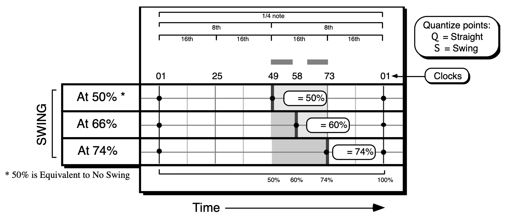
The SWING setting is the percentage of the time difference between the two Straight quantize points, and it is used to position the Swing quantize point. As the Swing setting increases from 50%, the Swing quantize point is moved closer to the following Straight quantize point.
The SWING percentage actually defines the point between the two straight quantize points. In other words, at 96 ppq, 60% swing means that between two quarter notes, the swing eighth will occur at the 60% mark, or at clock 58 (0.60 x 96). The default value for this parameter is 50% when the sequencer is initialized. Once it is changed, the last value is always remembered.
While the QUANTIZE Note Value and SWING parameters determine the position of the quantize points, the PERCENT and RANDOM parameters determine where the key events will be placed in relation to the quantize points. The PERCENT parameter specifies how much the key event will move toward the calculated quantize point. A PERCENT value of zero would mean that the key events would not move any distance toward the quantize point. A PERCENT value of 100 would mean that the key event would be placed exactly on the quantize point. A PERCENT value of 50 will move the event half way to the quantize point.
The following diagram illustrates this. Again, Q and S represent the straight quantize and swing quantize points respectively. The original source track is shown, followed by the quantized versions at 0, 25, 50, and 100% quantization.
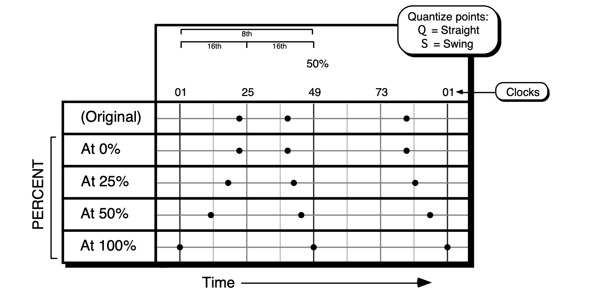
In this example, QUANTIZE is set to 1/8th notes and SWING is set to 50%.Increasing the PERCENT setting moves the events closer to the quantize points.
Notice how increasing the quantize percentage tightens up the track timing. The default value for this parameter is 100% when the sequencer is initialized. Once it is changed, the last value is always remembered.
After the PERCENT parameter calculates the placement of the key event relative to the quantization points, the RANDOM parameter determines if, and how much, randomization should be applied to the key placement. The RANDOM parameter defines a “window of looseness” that the key event can fall into.
A RANDOM factor of 0 indicates that NO randomization will occur. A RANDOM factor of 3 indicates that the key event will be shifted anywhere from 0 to 3 clocks in either direction from the calculated key placement. Again, an example will illustrate this more clearly. This time we’ll use an event list. For our example, we’ll assume 1/4 note quantization with NO (i.e. 50%) swing, and a PERCENT factor of 50. The first column shows the original source track. The second column shows where the events will be placed if quantized with no randomization. The third and fourth columns show the range that the event will fall in with various degrees of randomization. Note that the placement of the key event is calculated first with NO randomization, then the random factor is applied.
| ORIGINAL | with RANDOM=0 | with RANDOM=1 | with RANDOM=2 |
|---|---|---|---|
| 1.1.08 | 1.1.04 | 1.1.03 to 1.1.05 | 1.1.02 to 1.1.06 |
| 1.2.12 | 1.2.06 | 1.2.05 to 1.1.07 | 1.2.04 to 1.2.08 |
| 1.2.95 | 1.2.96 | 1.2.95 to 1.3.01 | 1.2.94 to 1.3.02 |
| 1.4.01 | 1.4.01 | 1.3.96 to 1.4.02 | 1.3.95 to 1.4.03 |
The RANDOM parameter defaults to zero when the sequencer is initialized. After that, the last value is remembered.
Percentage quantization can be used to “tighten up” a track without placing everything exactly on a quantize point. This can make loose tracks sound tighter without sounding mechanical. It’s especially useful on passages where you want to play constantly ahead of or behind the beat. You can quantize the track to tighten up the looseness, yet still retain the rushed or laid back feel.
Keep in mind that percentage quantization can be done in stages. For example, quantize a track to 25% and keep it. Then later, if you decide you want it tighter still, quantize it again by 25%. Each time you perform a quantization, you will move the key events slightly closer to the quantize point.
Random quantization is useful for taking old tracks that have been quantized 100% and giving them a more human feel. This can be done by quantizing with the desired randomization factor. The higher the RANDOM factor, the looser the track will become (since the tracks have previously been quantized to the 100% quantize points, the PERCENT parameter will have no effect). Tracks that have not been quantized can be randomized as well. If your desired effect is simply to loosen a current track, select a quantize PERCENT of zero, and quantize with the desired randomization. This will shift each event in the track within a few clocks of its original place, but will not necessarily move it towards the quantize point.
In addition, the RANDOM parameter inside the TS‑10 “reseeds” itself. This means that if you quantize two identical tracks with randomization, you will get different results. Also, if you set the PERCENT parameter to zero, you can randomize a track, keep the new track, and randomize it again to get things progressively looser.
Although PERCENT, RANDOM, and SWING are interrelated, you do not have to use all of them when selecting options. By setting these parameters to their default values (PERCENT=100 - RANDOM=0 - SWING=50), you can use any one or combination of these options to quantize your tracks.
An event can be randomized and end up closer to a different quantize point. This could be a problem if you later decided to go back to a straight, no-frills quantization. This is not a fault of the quantization feature, but simply what can happen with randomization. The random factor is purposely kept low to prevent this from happening, however, there are cases where this can occur. One example would be successive randomization with the PERCENT parameter set to zero. Another instance involves using combinations of a high SWING parameter with a high
RANDOM factor.
For example, let’s say you have a hi-hat track that’s already been quantized to straight eighths. Now you decide to give it a large swing feel, so you set SWING to 74. Any event that was at clock number 49 (a straight eighth note) would move to clock 72. But if you also specified a RANDOM of 3, the event may move as far as clock 75. Now let’s suppose you keep this track, but then later on decide that you don’t want a swing feel. So you setup a straight 1/8 note quantize. Only this time, the event that originally was at clock 49 is now at clock 75, so it would be moved to the next quantize point at clock 1 in the next beat (since that’s the closest quantize point to that event). If you audition the track and hear that the swing event has moved up to the next quantize point, then you should keep the old track, shift the track by -3 clocks (to put the swing note closer to the original straight eighth point) then requantize with no swing to get all events back on the straight eighth points.
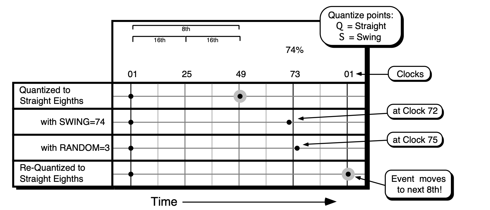
In this example, QUANTIZE is set to 1/8th notes, SWING is set to 74% and RANDOM set to 3, the event can be moved beyond the Swing Quantize point. In this case, a subsequent straight eighth quantize will move the event to the eighth note after the one it was initially on.
This command will erase notes, controllers and all other data from the entire track, or from a given range if you so specify.
| ERASE TRACK 01 | *YES* | |
| RANGE=ALL | *NO * | |
This command will copy all or part of the current track (the source track) to another track. The destination track can be in the same sequence or in a different sequence.
| COPY TRACK 1 | TO SEQ SEQUENCE-32 | *YES* |
| RANGE=ALL | TRACK 1 AT BAR 1 | *NO * |
Pressing *MORE* from the Edit Track page displays a sub-page which contains five additional track editing options. Pressing the Edit Track button twice will also take you directly to this page. Press *MORE*. The display shows:
| EDIT TRACK ## | TRANSPOSE | SCALE |
| EVENT-LIST | FILTER | MERGE |
The track editing functions contained on this sub-page are as follows:
The Transpose function will raise or lower the notes in the track by a specified number of octaves and/or semitones. In addition to simply transposing the entire track, you can use the transpose function to re-map existing drum and percussion tracks for use with programs and instruments that have different key layouts, using the key range function to a transpose a single key.
| TRANSPOSE TRACK 1 | BY +0 +00 | *YES* |
| RANGE=ALL | OCT/SEMI | *NO * |
The first number (which is already selected) sets the octave amount.
Press the soft button above the transpose amount again to move the underline to the semitone amount and adjust that.
The Scale command lets you increase or decrease the level of any controller information in the track by a specified amount. You could use this function, for example, to tame some over-zealous mod wheel work, or to increase the key velocity of all the notes in the track by some amount.
| SCALE | KEY-VELOCITY | IN TRACK 1 | *YES* |
| RANGE=ALL | SCALE-AMT=0.00 | *NO * | |
| Event Type | Description |
|---|---|
| KEY-VELOCITY — | Note-On Velocity |
| CNTL-1.MODWHL — | Mod Wheel |
| CNTL-4.PEDAL — | Foot Pedal |
| CNTL-7.VOLUME — | Volume Pedal |
| CNTL-10.PAN — | Track or MIDI Pan |
| CNTL-64.SUSTN — | Sustain Foot Switch |
| CNTL-66.SOSTU — | Sostenuto Foot Switch |
| CNTL-12.FX-SW — | Effect Mod Foot Switch |
| CNTL-70.PSEL — | Patch Select Buttons |
| CNTL-71.TIMBR — | Track Timbre Controller |
| CNTL-72.RELS — | Track Release Time Controller |
| CNTL-73.ATTAK — | Track Attack Time Controller |
| CNTL-74.BRITE — | Track Brightness Controller |
| CNTL-75.RATE — | Track Rate Controller (LFO Rate and/or Wave-List Duration) |
| CNTL-XX.XCTRL — | Track External MIDI Controller |
| ALL.CONTROLRS — | All Controllers |
| CHAN-PRESSURE — | Channel (mono) Pressure |
| MIXDWN-VOLUME — | Mixdown Volume |
| MIXDOWN-PAN — | Mixdown Pan |
| TEMPO — | Tempo Track Events |
The Event List function provides you with an extremely powerful tool for viewing and editing each event in the track. Every key event, controller change and program change can be individually located and edited.
| EVENT TYPE=ALL | TIME=001.01.02 | *EXIT* |
| NUM=00001 | EVENT=KEY.C4+.117 | *EDIT* |
Controls which types of events will be shown as you scroll up through the events in the track.
When set to ALL, every event in the track will be listed. On the other settings, some types of events will be left out of the list — when the Event Number (below) is changed, the display will jump directly to the next event of the type shown, skipping other types. The Event Types which can be selected here are:
Shows the current time in terms of Bar, Beat and Clock. These three TIME fields can be individually selected by repeated presses of the soft button. Use the Up/Down Arrows to step ahead or back in time by bars, beats or clocks, depending on which field is selected.
When this field is selected, you can use the data entry controls to step ahead or back in time among the events in the track to find the one(s) you want to edit. When you press the Up Arrow button, it will advance to the next event of the type specified in Event Type. Moving the Data Entry Slider will scroll quickly through all the events in the track. You will hear the notes in the sequence play as you step through the track.
This shows the type and value of the current event. The first segment of this readout is always the Event Type. For Key events Poly-Key pressure events, and Program Change events there are two additional segments; for all other event types there is one additional segment:
This exits Event List mode. If you have made any changes to the track you will be put on the Play/Keep page where you can audition the changes before deciding whether to keep them.
Pressing EDIT displays the event editor sub-page which shows the selected event and its event number with the time that it occurs, and in the case of events with duration, the end time of the event as well.
Once you have selected an event to edit using the Event Number parameter (NUM), press *EDIT*. The display shows:
| EVENT INSERT | DELETE | *EXIT* |
| KEY.C4+.124 | AT 001.01.04 | DURATION |
Pressing INSERT will insert an event of the current Event Type at the time showing on the display. This option is not available when the Event Type is ALL (all events) or CNT (all controllers).
This will remove the current event from the track.
Pressing *EXIT* returns you to the main Event List page.
Value
To edit the VALUE of the current Event (the key number and velocity of a key event; the value from 0 to 127 of a controller change; or a program change number, etc.), press the lower-left soft button to select the value, then use the data entry controls to change it. For Key events, Poly-Key pressure events, and Program Change events, pressing the soft button again will select the second value segment for editing.
Event Starting Time Seq Values: Bar, Beat, and Clock
Song Values: Step, Repeats, Bar, Beat, and Clock To change the STARTING TIME of the current event, press the soft button below the time. The display shows:
Use the data entry controls to change the start point of the event, pressing the soft button beneath the time to move the cursor between Bar, Beat, and Clock. When you have the starting time that you want showing on the display, press *EXIT* to return to the Event List page with the event on the new time.
For Key Events only, you can change the length of the event (the time between when the key is struck and it is released). From the Event Edit sub-page press the soft button below DURATION. The display shows:
| EVENT END TIME= | 002.01.23 | *EXIT* |
| DURATION= | BEATS=04 | CLOCKs=21 |
On the upper line of the display you can edit the end time of the event, using the data entry controls to change the end point and pressing the soft button above the time to move the cursor between Bar, Beat, and Clock.
On the lower line of the display, you can edit the actual duration of the event, expressed in terms of how many beats and clocks the event lasts. You can select BEATS=##, edit that and then select CLOCKS=## and edit that.
The upper and lower lines of this sub-page are interactive — editing the End Time on the upper line will cause the duration on the lower line to change, and vice versa.
When you have the duration that you want showing on the display, press *EXIT* to return to the Event Edit sub-page.
If you press *EXIT* to leave the Event List function without having made any changes in the track, you will simply be returned to the Edit Track page.
If you do change anything in the track, when you press *EXIT* you will be placed on a special version of the Audition Play/Keep page, where you can audition the new track and the original before deciding to either keep the new track, keep the old track or return to the Event Editor to edit some more. The display shows:
| PLAY ORIGINAL TRACK | PLAY NEW TRACK | |
| KEEP ORIGINAL | EDIT EVENTS | KEEP NEW |
When you have a song track on which the recorded data is shorter than the length of the actual song steps, and you try to add any type of event after the end of the recorded data, you will momentarily see the following error message: EVENT TIME PAST END OF RECORDED TRACK. To remedy the problem, your song track data needs to be the same length as the song steps. Set the RECORD-MODE=ADD; Press Record and Play, and let the song track run for the entire length of the song (without recording any data). On the Audition page, select KEEP NEW TRACK, and your song track will now be the same length as the Song Steps.
The FILTER command can be used to selectively remove events (such as notes, controllers and program changes) from a track, or to copy selected events to a different track for further editing.
The FILTER command has two modes, ERASE and COPY. Depending on which mode is selected, it will either remove the specified events from the track, or simply copy them to another track, leaving the original track intact.
| FILTER CNTL-1 MODWHL | FROM TRACK 1 | *YES* | |
| RANGE=ALL | MODE=ERASE | *NO * | |
| FILTER CNTL-1 MODWHL | *COPY * | |
| COPY TO TRACK 2 | *ERASE* | |
This command will take the data in the selected track and merge, or combine, it together with that of another track. The destination track can be in the same sequence or in a different sequence from the source track. Note that the source sequence is not altered or erased by this process.
| MERGE TRACK 1 | INTO TRACK 2 | *YES* | |
| IN SEQ SEQUENCE-32 | *NO * | ||
Pressing the Sequencer Click button displays a page containing parameters which control the metronome functions of the sequencer.
| CLICK=REC | TIME=1/4 | COUNTOFF=REC |
| STOP TEMPO=120 | VOLUME=99 | PAN=DRY=C |
Controls whether or not the click will be heard.
Sets the note value of the metronome click.
This determines whether playing and/or recording sequences and songs will be preceded by a 1- bar countoff.
Sets the tempo of the current sequence or song. On any of the three pages where tempo appears
(Click, Sequencer Control, and Locate), the soft button nearest the TEMPO field can be used to “tap” in the tempo. If the field is already selected, tapping on the soft button at the correct rate for the desired tempo (based on the metronome settings on the click page) will update the tempo to the newest value. When CLOCK=MIDI on the Sequencer Control page, this field will read TEMPO=EXT to indicate that the tempo is controlled by incoming MIDI clocks.
When a song is selected, the range is expressed as a percentage of the sequence tempo — changing the song tempo offset automatically adjusts the tempo of each the sequences in the song by a percent, within the legal limits of 25-250 BPM. When TEMPO=+00 the sequences in the song will play at their designated tempo.
When a Song Tempo Track is selected, editing this value will record tempo change events.
Controls how loud the metronome click will sound.
Controls the stereo position of the click, and allows it to be sent out of the Main or AUX Outputs.
The Sequencer Control page displays contains parameters which control the basic operation of the sequencer. This page consists of three sub-pages. The settings for the parameters on these pages are saved with the 60-SEQ/SONGS file type.
| CONTROL | CLOCK=INT | RECORD-MODE=REPLACE | |
| STOP | TEMPO=120 | AUTOPUNCH=OFF | LOOP=ON |
This parameter selects the clock source for the sequencer.
When CLOCK SOURCE= MIDI, pressing the Record button puts the TS‑10 into standby MIDI sync record. The MIDI indicator light will flash and the display will show WAITING… Recording will begin with the first MIDI clock received after a MIDI Start command. If the Stop•Continue button is pressed before a MIDI Start command is received, the TS‑10 waits five seconds before stopping.
Selects between the three recording modes for the sequencer.
There is a fourth Record Mode which is available only when a song is selected:
Depending on the setting of the EDIT TRACKS parameter on the next sub-page (see below) you can mix down either the song tracks or sequence tracks over the length of the song.
Sets the tempo of the current sequence or song. On any of the three pages where tempo appears
(Click, Sequencer Control, and Locate), the soft button nearest the TEMPO field can be used to “tap” in the tempo. If the field is already selected, tapping on the soft button at the correct rate for the desired tempo (based on the metronome settings on the click page) will update the tempo to the newest value. When CLOCK=MIDI, this field will read TEMPO=EXT to indicate that the tempo is controlled by incoming MIDI clocks, and cannot be edited.
When a song is selected, the range is expressed as a percentage of the sequence tempo — changing the song tempo offset automatically adjusts the tempo of each the sequences in the song by a percent, within the legal limits of 25-250 BPM. When TEMPO=+00 the sequences in the song will play at their designated tempo.
When a Song Tempo Track is selected, editing this value will record tempo change events.
When overdubbing a track, this extremely powerful feature will automatically enter and exit record mode at predetermined times which you specify. You can play along with the track and have the TS‑10 “punch” in and out for you like an invisible engineer. We refer to the points at which recording will begin and end as the Edit Times and they are set on the second sub-page of the Locate Page.
This parameter controls whether or not the sequence or song will loop. The setting of this control is remembered for each sequence and song.
Press Sequence Control again to display the second sub-page:
This controls which effect(s) will be used while a song is playing — those from each individual sequence or a single “override” effect saved with the song. A song contains a series of sequences which will play in order. Each sequence has its own effect. When switching from one sequence to another in the course of a song, there can be a momentary “glitch” of the sound as the effect for the new sequence is loaded. This can be avoided by setting this parameter to SONG STEP EFFECT=SONG so that the entire song will use the same effect.
This parameter determines what will be recorded when the MIDI mode is MULTI — data from the keyboard, from incoming MIDI, or both. Setting this parameter to MIDI is useful if you want to send data from the TS‑10 to a MIDI processor, then record only the incoming data coming back from the processor. This parameter only has an effect in MULTI mode; in POLY or OMNI modes the sequencer always records both.
It is possible to record multi-track sequences from the keyboard, but only if you set track status to MIDI-LOOP for each of the active (primary and layered) tracks and then set up a MIDI loop (by connecting MIDI Out to MIDI In). This procedure is a bit tricky, and should only be attempted if you have a good understanding of the system. See Section 10 — Understanding the Sequencer for information on recording into the TS‑10 sequencer in a MIDI loop.
This determines which set of tracks will be displayed on the track parameter pages when a song is selected. It also determines whether song or sequence tracks will be affected by volume or pan changes when you select RECORD-MODE=MIXDOWN (see above). When incoming MIDI is received, the setting of this switch determines whether the sounds on the sequence or the song tracks will play. The setting of this switch is saved with each song.
Press Sequencer Control a third time to display the third sub-page:
| CONTROL | FREE=97567 | SAVE CHANGES=ASK |
| STOP | STEP-ENTRY=OFF | |
This shows the number of available events in sequencer memory. This read only parameter is informational and cannot be selected or edited.
This parameter turns the SAVE CHANGES? prompt on or off when switching between sequences and/or songs.
Determines whether Step Entry mode will be used when the sequencer is put into record.
The Step Entry page looks something like this (depending on the settings):
| TRK-11 | AUTOSTEP=ON | GATE-TIME=1/8 |
| TIME=02.03.004.03.96 | STEP=1/16T | *STEP* |
The number of the currently selected track (on which you are recording) is shown in the upper left corner of the display. It is displayed only to remind you which track is being recorded and it cannot be selected or edited.
This switch determines whether key events will advance to the next defined time setting.
If you use AUTOSTEP=ON for entering chords, the result will be an arpeggiated chord, similar to a guitar chord being strummed. This is true because each note of the chord will advance the time by the step size, causing older notes to have longer durations.
The gate time (duration) value of a note is assigned when a key is released. This parameter allows you to determine how long the source will sound before it is gated (cut-off).
Allows you to set the current location on the track. The track location (or time) is normally displayed as a three–part parameter when you are recording a sequence track, with two additional parts added when a song track is being recorded. In sequence mode, the three parts are Bars, Beats, and Clocks. In song mode, Step Number and Repetition Count fields are added to the left of the Bars, Beats, and Clocks fields.
The maximum ranges for these fields are determined by the length of the track. In song mode, the song structure is also important because the number of steps, the number of repetitions of each step, and the sequence length of each step are factored into the computation of the song track length.
You can advance the track by changing any of the fields, and if you have selected RECORD-MODE=LOOPED on the MODE=LOOPED on the Sequencer Control page, advancing past the end of the track will wrap around to the beginning. Otherwise, if you advance past the end of the track you will enter AUDITION mode.
Allows you to set the current step size which will be added to the current track location (TIME) whenever you use the *STEP* command, or when AUTOSTEP=ON. The range of step sizes is from whole notes 1/1 to 1/64th note triplets 1/64T. Dotted note values are also available (1/1D to 1/16D).
| Note Name | Step Size | Beat.Clock | Note Name | Step Size | Beat.Clock |
|---|---|---|---|---|---|
| Whole note | 1/1 | 4.00 | 32nd note | 1/32 | 0.12 |
| Whole note triplet | 1/1T | 2.64 | 32nd note triplet | 1/32T | 0.08 |
| Half note | 1/2 | 2.00 | 64th note | 1/64 | 0.06 |
| Half note triplet | 1/2T | 1.32 | 64th note triplet | 1/64T | 0.04 |
| Quarter note | 1/4 | 1.00 | Dotted whole note | 1/1D | 6.00 |
| Quarter note triplet | 1/4T | 0.64 | Dotted half note | 1/2D | 3.00 |
| Eighth note | 1/8 | 0.48 | Dotted quarter note | 1/4D | 1.48 |
| Eighth note triplet | 1/8T | 0.32 | Dotted eighth note | 1/8D | 0.72 |
| Sixteenth note | 1/16 | 0.24 | Dotted 16th note | 1/16D | 0.36 |
| Sixteenth note triplet | 1/16T | 0.16 |
Pressing this soft button will advance the track location (TIME) by the amount set in the STEP parameter. Notice the TIME parameter adjusts to the new location on the track when the *STEP* button is pressed.
If you have selected RECORD-MODE=LOOPED on the MODE=LOOPED on the Sequencer Control page, stepping past the end of the track will wrap around to the beginning, allowing you to continue stepping. Otherwise, if you step past the end of the track you will enter Audition mode.
If you are using a Foot Switch with the TS‑10, you can assign the foot switch to advance the location by setting FS1=*STEP* on the System page. Pressing the foot switch will act just like the *STEP* command on the Step Entry page. This is useful when you need both hands to control the keyboard.
Performance / Composition Synthesizer · Version 3.0
Pressing the Sequencer Locate button displays a page which provides valuable sequencer information as well as control over tempo and Auto-locate functions. Pressing Locate again will reveal the second sub-page where you can set the Edit Times for use with the Autopunch feature.
First we will look at the Locate page as it appears when a sequence is selected. When a song is selected, the Locate page is a little different (see below).
| LOCATE | SEQ=SEQ-NAME | TRACK=01 | 4/4 |
| STOP | TEMPO=120 | GOTO | BAR/BEAT=001.01 |
The status of the sequencer (whether it is in Play, Stop, Record, etc.) is always shown in the lower left-hand corner of the display on this page.
The following are display only parameters, provided here for your information:
Shows the name of the current sequence.
Shows the current primary/selected track. You cannot change the selected track from here; you do that from the Seq/Song Tracks (1-6 or 7-12) page.
Shows the time signature of the current sequence.
Shows your current location in the sequence by bar and beat. You can locate to a different place in the sequence using the GOTO function described below.
The active controls on the Sequence Locate page are:
Sets the tempo of the current sequence or song. On any of the three pages where tempo appears (Click, Sequencer Control, and Locate), the soft button nearest the TEMPO field can be used to “tap” in the tempo. If the field is already selected, tapping on the soft button at the correct rate for the desired tempo (based on the metronome settings on the click page) will update the tempo to the newest value. When CLOCK=MIDI on the Sequencer Control page, this field will read TEMPO=EXT to indicate that the tempo is controlled by incoming MIDI clocks.
When a song is selected, the range is expressed as a percentage of the sequence tempo — changing the song tempo offset automatically adjusts the tempo of each the sequences in the song by a percent, within the valid limits of 25-250 BPM. When TEMPO=+00 the sequences in the song will play at their designated tempo.
When a Song Tempo Track is selected, editing this value will record tempo change events.
Displays the GOTO sub-page where the auto-locator destination is set. Using the GOTO function you can quickly locate to any bar and beat within the sequence, in order to play or record from there.
| LOCATE | SEQ=<SEQ-NAME> | TRACK=01 | 4/4 |
| STOP TEMPO=120 | GOTO | BAR/BEAT=001.01 | |
GOTO will be flashing and the destination may be set using the Data Entry Slider or the Up/Down Arrow buttons. Notice there is now a cursor (underline) beneath the bar value at the BAR/BEAT parameter. Press the soft button beneath BAR/BEAT to move the cursor between the Bar and Beat. Continued presses of the BAR/BEAT parameter will toggle between the bar and beat values.
While the Sequence Plays You can set the location of the GOTO time “on the fly” as the sequence plays:
The display momentarily shows LOCATE TIME SET - STOP TO LOCATE, and installs that time as the GOTO location.
| SONG LOCATE | FIRST-VERSE | STEP/REP=01.00 | |
| SNGS TEMPO=+00 | GOTO BAR/BEAT=001.01 | ||
Note that the Sequencer Status (shown in the lower left corner of the display) now shows SNGS, for Song Stop, indicating that a song is selected.
The following are display only parameters, provided here for your information:
Shows the name of the sequence which is playing as the current song step. This is updated with the new steps as the song plays.
Shows your current location in the song by steps and repetitions. You can locate to a different place in the song using the song-mode GOTO function described below.
Shows your location within the current song step by bar and beat. As with the song steps and reps, you can locate to a different point using the GOTO function.
The user-controllable parameters on the Song Locate page are:
This controls the tempo of the song. It is expressed as a percentage of the sequence tempo — changing the song tempo offset automatically adjusts the tempo of each the sequences in the song by +/–99%, within the valid limits of 25-250 BPM. When TEMPO=+00 the sequences will play at their designated tempo.
When CLOCK=MIDI on the Sequencer Control page, this field will read TEMPO=EXT to indicate that the tempo is being controlled by incoming MIDI clocks.
The GOTO sub-page looks a little different in song mode, as you can locate to any step or rep in the song, as well as to any bar and beat within the step.
| SONG LOCATE | FIRST-VERSE | STEP/REP=01.00 | |
| SNGS | *EXIT* | GOTO | BAR/BEAT=001.01 |
You can set the location of the GOTO time “on the fly” as the song plays:
Press Locate a second time to display the Edit Times sub-page:
| EDIT TIMES | AUTOPUNCH=ON | IN=001.01.01 | |
| STOP | RESET | SET | OUT=007.04.96 |
This is the same parameter found on the Sequencer Control page — it is also located on this page so that you have a handy way to enable or disable the Autopunch function on the same page where the Edit Times are located. See “Sequencer Control page” earlier in this section for a full description.
When the Autopunch function is on, the TS‑10 will enter and exit record only at the points specified by the Edit Times. For example, if you want to have the TS‑10 automatically record over just the third bar of a four bar sequence:
When a sequence is selected, the display shows the Bar, Beat and Clock at which the TS‑10 will enter and exit record when AUTOPUNCH=ON. Press the soft buttons nearest IN and OUT to select the Edit Times parameters for editing.
The Edit Times are set using the Data Entry Slider or the Up/Down Arrow buttons. Repeatedly pressing the soft button next to either time toggles the cursor between the Bar, Beat and Clock value.
Pressing this soft button resets the currently selected time to its default value (the beginning and end of the sequence or song). IN is reset to 001.01.00, or the beginning of the sequence, and OUT is reset to the time value for the last clock of the sequence. If other values are installed, they will remain in effect until they are reset or a different sequence or song is selected.
This sets the selected time to the current sequencer time value (as shown on the Locate page) if the sequencer is running. If the sequencer is stopped, the most recent time value is used. Using the Locate function does affect the current time value.
You can use the Autopunch mode and Edit Times to punch in and out on the song tracks as well as sequence tracks. When a song is selected, pressing Locate twice shows the following:
| EDIT TIMES | AUTOPUNCH=ON | IN=01.01.001.01.01 | |
| SNGS RESET | SET | OUT=05.01.007.04.96 | |
Notice that two more parameters are added to the Edit In and Out Times: the Song Step number and the Repetition of that step are added to the Bar, Beat and Clock within the sequence that plays during the step. You can set the IN or OUT time to any point within the song.
If you know the exact bar, beat and clock (or step, rep, bar, beat and clock in song mode) at which you want to punch in and out, you can simply select and set the Edit Times using the data entry controls. If not, you can set them “on the fly” using the following procedure:
Performance / Composition Synthesizer · Version 3.0
This section covers a number of advanced sequencer applications, including using the TS‑10 with a variety of external MIDI devices.
When you use the TS‑10 in conjunction with a drum machine or other rhythm sequencer, there are basically three ways to go:
allow a sequencer such as the TS‑10 to instruct a remote MIDI sequencer or drum machine to select a new song whenever you select a Sequence or Song on the TS‑10.
Whether or not the TS‑10 sends or receives depends on the setting of the SONG-SEL parameter on the MIDI Control sub-page.
The TS‑10 transmits and receives in Sequence Mode as well as Song Mode (depending again on the setting on the SONG-SEL parameter). This allows you to select any TS‑10 sequencer location from a remote sequencer, computer or drum machine, and vice versa.
They are set up as follows:
There are some subtle features of the TS‑10 sequencer which enhance its capabilities as a MIDI controller. You can change the sound and mix of every instrument in your rig with the push of a button, and create giant presets with as many as 12 remote MIDI devices split and/or layered.
Each sequence you create and store in the TS‑10’s sequencer memory contains up to 12 sets of Sound and Mixing information, each of which will be sent out on the designated MIDI Channel when you select that sequence. Each sequence also remembers all Performance/Track Parameters settings for each track, as well as which tracks are selected or layered.
If you have the TS‑10 connected to other instruments via MIDI, try this:
Now press Seqs/Songs and reselect the first sequence. (Again, the TS‑10 will ask you SAVE CHANGES TO <SEQ NAME>? Answer *YES*.) Notice when you select the new sequence that all the external instruments connected to the TS‑10 change to the proper program for that sequence — each track sent out a program change on its MIDI channel when the sequence was selected. Now select the second sequence again. Each external instrument again changes back to the proper program.
Notice that you haven’t recorded anything on either of these sequences. They exist merely as Track Templates, which serve two useful purposes when using the TS‑10 as a system controller:
Of course you can record data on any of these sequences if you want. Whether you do or not, they will still work as templates. You can play external instruments from the TS‑10 or from their own keyboards. You can have a track send a program change to a MIDI effects processor (like the ENSONIQ DP/4); have it send program changes to a sampler (like the ASR-10) to load sounds, or to a drum machine to change patterns, just by selecting a new sequence. No doubt you will come up with some applications of your own, based on your equipment and your needs.
| CHANNEL | 01 | 02 | 03 |
| STOP | 04 | 05 | 06 |
Select any track and set it to receive on the MIDI Channel you wish. Now, as long the TS‑10 is in MODE=MULTI Mode, incoming MIDI information on that channel will be received by that track. Incoming will change the program on the track. Incoming will adjust the level of the track. Press Seq/Song Tracks 7-12 and do the same for the 6 tracks there.
For optimal results when using it with an external multi track sequencer, the TS‑10 should be set up as described above to receive in Multi Mode, and the 12 tracks of the current sequence assigned to receive on the desired MIDI channels.
The illustration below shows a typical configuration for using the TS‑10 with an external MIDI sequencer in MULTI Mode:

Each of the 12 tracks of the current sequence: keys, volume, controllers, and program changes, are controlled independently.
Note that the MIDI channel assignments shown above are merely default values. You can set any of the 12 tracks to receive on any of the 16 available MIDI channels (though, as mentioned above, only one track will receive on a given channel). Also, you can turn a track’s Status to SEND/---- (so that it does not receive incoming MIDI at all) if you want less than 12 channels to be recognized by the TS‑10.
The TS‑10 makes an ideal voice module to use with any MIDI Guitar Controller which is capable of sending in MONO Mode. MONO Mode (MIDI Mode 4) allows a guitar controller to send the notes played on each string on a different MIDI Channel. This has the advantage of letting each string send pitch bends independently, which is the only way to truly recreate guitar technique on a synthesizer.
Some earlier guitar synths do not support MONO mode. You will have to consult the manual of your particular model to see if it does. If you have a guitar synth which only sends in POLY Mode (i.e. sends all six strings on the same MIDI Channel) you should use the TS‑10 in POLY Mode (or OMNI Mode) and set the guitar controller to send on the MIDI Channel that is selected for the Base Channel on the MIDI Page.
For MIDI Guitar Controllers which do support MONO Mode, the TS‑10 provides two types of MONO mode reception. The first is MONO A Mode, which is a simple and straightforward way of using MONO mode without getting involved with tracks or other complications:
You can now select sounds or presets on the TS‑10, either from the front panel or from MIDI program changes, and the guitar controller will play those sounds exactly as if they were played from the keyboard.
If you are a little more adventurous, and would like the flexibility to put a different sound program on every string of the guitar, you can use MONO B mode, in which each track of the current sequence receives monophonically on its own MIDI channel, and can receive program changes independently. Where MONO A is like POLY mode with monophonic reception, MONO B is just like MULTI mode, except that each track is monophonic.
| CHANNEL | 01 | 02 | 03 |
| STOP | 04 | 05 | 06 |
The default values are as shown above. If you want to receive on a different set of MIDI channels, select each track and edit it accordingly. Unlike MONO A, in this mode the consecutive channel assignments are not automatic. You must set the tracks to six consecutive channels.
Now you’re ready to play. A few things to bear in mind:
Performance / Composition Synthesizer · Version 3.0
This chart shows the relationship between delay times and tempo beats per minute. Values shown are accurate to 2 decimal places—since most delay devices are not accurate to 2 decimal places, you may have to round off these values. You can use this chart to set the effect delay times to sync to your sequence or song.
Enter a tempo to see sync delay times in milliseconds.
| Note length | Delay (ms) |
|---|---|
| 1/4 note | — |
| Dotted 1/4 | — |
| 1/8 note | — |
| Dotted 1/8 | — |
| 1/8 triplet | — |
| 1/16 note | — |
| Dotted 1/16 | — |
| BPM | 1/4 NOTE | 1/8th NOTE | 1/8 TRIPLET | 1/16th NOTE | BPM | 1/4 NOTE | 1/8th NOTE | 1/8 TRIPLET | 1/16th NOTE |
|---|---|---|---|---|---|---|---|---|---|
| 40 | 1500.00 | 750.00 | 500.00 | 375.00 | 85 | 705.88 | 352.94 | 235.29 | 176.47 |
| 41 | 1463.41 | 731.71 | 487.80 | 365.85 | 86 | 697.67 | 348.84 | 232.56 | 174.42 |
| 42 | 1428.57 | 714.29 | 476.19 | 357.14 | 87 | 689.66 | 344.83 | 229.89 | 172.41 |
| 43 | 1395.35 | 697.67 | 465.12 | 348.84 | 88 | 681.82 | 340.91 | 227.27 | 170.45 |
| 44 | 1363.64 | 681.82 | 454.55 | 340.91 | 89 | 674.16 | 337.08 | 224.72 | 168.54 |
| 45 | 1333.33 | 666.67 | 444.44 | 333.33 | 90 | 666.67 | 333.33 | 222.22 | 166.67 |
| 46 | 1304.35 | 652.17 | 434.78 | 326.09 | 91 | 659.34 | 329.67 | 219.78 | 164.84 |
| 47 | 1276.60 | 638.30 | 425.53 | 319.15 | 92 | 652.17 | 326.09 | 217.39 | 163.04 |
| 48 | 1250.00 | 625.00 | 416.67 | 312.50 | 93 | 645.16 | 322.58 | 215.05 | 161.29 |
| 49 | 1224.49 | 612.24 | 408.16 | 306.12 | 94 | 638.30 | 319.15 | 212.77 | 159.57 |
| 50 | 1200.00 | 600.00 | 400.00 | 300.00 | 95 | 631.58 | 315.79 | 210.53 | 157.89 |
| 51 | 1176.47 | 588.24 | 392.16 | 294.12 | 96 | 625.00 | 312.50 | 208.33 | 156.25 |
| 52 | 1153.85 | 576.92 | 384.62 | 288.46 | 97 | 618.56 | 309.28 | 206.19 | 154.64 |
| 53 | 1132.08 | 566.04 | 377.36 | 283.02 | 98 | 612.24 | 306.12 | 204.08 | 153.06 |
| 54 | 1111.11 | 555.56 | 370.37 | 277.78 | 99 | 606.06 | 303.03 | 202.02 | 151.52 |
| 55 | 1090.91 | 545.45 | 363.64 | 272.73 | 100 | 600.00 | 300.00 | 200.00 | 150.00 |
| 56 | 1071.43 | 535.71 | 357.14 | 267.86 | 101 | 594.06 | 297.03 | 198.02 | 148.51 |
| 57 | 1052.63 | 526.32 | 350.88 | 263.16 | 102 | 588.24 | 294.12 | 196.08 | 147.06 |
| 58 | 1034.48 | 517.24 | 344.83 | 258.62 | 103 | 582.52 | 291.26 | 194.17 | 145.63 |
| 59 | 1016.95 | 508.47 | 338.98 | 254.24 | 104 | 576.92 | 288.46 | 192.31 | 144.23 |
| 60 | 1000.00 | 500.00 | 333.33 | 250.00 | 105 | 571.43 | 285.71 | 190.48 | 142.86 |
| 61 | 983.61 | 491.80 | 327.87 | 245.90 | 106 | 566.04 | 283.02 | 188.68 | 141.51 |
| 62 | 967.74 | 483.87 | 322.58 | 241.94 | 107 | 560.75 | 280.37 | 186.92 | 140.19 |
| 63 | 952.38 | 476.19 | 317.46 | 238.10 | 108 | 555.56 | 277.78 | 185.19 | 138.89 |
| 64 | 937.50 | 468.75 | 312.50 | 234.38 | 109 | 550.46 | 275.23 | 183.49 | 137.61 |
| 65 | 923.08 | 461.54 | 307.69 | 230.77 | 110 | 545.45 | 272.73 | 181.82 | 136.36 |
| 66 | 909.09 | 454.55 | 303.03 | 227.27 | 111 | 540.54 | 270.27 | 180.18 | 135.14 |
| 67 | 895.52 | 447.76 | 298.51 | 223.88 | 112 | 535.71 | 267.86 | 178.57 | 133.93 |
| 68 | 882.35 | 441.18 | 294.12 | 220.59 | 113 | 530.97 | 265.49 | 176.99 | 132.74 |
| 69 | 869.57 | 434.78 | 289.86 | 217.39 | 114 | 526.32 | 263.16 | 175.44 | 131.58 |
| 70 | 857.14 | 428.57 | 285.71 | 214.29 | 115 | 521.74 | 260.87 | 173.91 | 130.43 |
| 71 | 845.07 | 422.54 | 281.69 | 211.27 | 116 | 517.24 | 258.62 | 172.41 | 129.31 |
| 72 | 833.33 | 416.67 | 277.78 | 208.33 | 117 | 512.82 | 256.41 | 170.94 | 128.21 |
| 73 | 821.92 | 410.96 | 273.97 | 205.48 | 118 | 508.47 | 254.24 | 169.49 | 127.12 |
| 74 | 810.81 | 405.41 | 270.27 | 202.70 | 119 | 504.20 | 252.10 | 168.07 | 126.05 |
| 75 | 800.00 | 400.00 | 266.67 | 200.00 | 120 | 500.00 | 250.00 | 166.67 | 125.00 |
| 76 | 789.47 | 394.74 | 263.16 | 197.37 | 121 | 495.87 | 247.93 | 165.29 | 123.97 |
| 77 | 779.22 | 389.61 | 259.74 | 194.81 | 122 | 491.80 | 245.90 | 163.93 | 122.95 |
| 78 | 769.23 | 384.62 | 256.41 | 192.31 | 123 | 487.80 | 243.90 | 162.60 | 121.95 |
| 79 | 759.49 | 379.75 | 253.16 | 189.87 | 124 | 483.87 | 241.94 | 161.29 | 120.97 |
| 80 | 750.00 | 375.00 | 250.00 | 187.50 | 125 | 480.00 | 240.00 | 160.00 | 120.00 |
| 81 | 740.74 | 370.37 | 246.91 | 185.19 | 126 | 476.19 | 238.10 | 158.73 | 119.05 |
| 82 | 731.71 | 365.85 | 243.90 | 182.93 | 127 | 472.44 | 236.22 | 157.48 | 118.11 |
| 83 | 722.89 | 361.45 | 240.96 | 180.72 | 128 | 468.75 | 234.38 | 156.25 | 117.19 |
| 84 | 714.29 | 357.14 | 238.10 | 178.57 | 129 | 465.12 | 232.56 | 155.04 | 116.28 |
| 85 | 705.88 | 352.94 | 235.29 | 176.47 | 130 | 461.54 | 230.77 | 153.85 | 115.38 |
| 86 | 697.67 | 348.84 | 232.56 | 174.42 | 131 | 458.02 | 229.01 | 152.67 | 114.50 |
| 87 | 689.66 | 344.83 | 229.89 | 172.41 | 132 | 454.55 | 227.27 | 151.52 | 113.64 |
| 88 | 681.82 | 340.91 | 227.27 | 170.45 | 133 | 451.13 | 225.56 | 150.38 | 112.78 |
| 89 | 674.16 | 337.08 | 224.72 | 168.54 | 134 | 447.76 | 223.88 | 149.25 | 111.94 |
| 90 | 666.67 | 333.33 | 222.22 | 166.67 | 135 | 444.44 | 222.22 | 148.15 | 111.11 |
| 91 | 659.34 | 329.67 | 219.78 | 164.84 | 136 | 441.18 | 220.59 | 147.06 | 110.29 |
| 92 | 652.17 | 326.09 | 217.39 | 163.04 | 137 | 437.96 | 218.98 | 145.99 | 109.49 |
| 93 | 645.16 | 322.58 | 215.05 | 161.29 | 138 | 434.78 | 217.39 | 144.93 | 108.70 |
| 94 | 638.30 | 319.15 | 212.77 | 159.57 | 139 | 431.65 | 215.83 | 143.88 | 107.91 |
| 95 | 631.58 | 315.79 | 210.53 | 157.89 | 140 | 428.57 | 214.29 | 142.86 | 107.14 |
| 96 | 625.00 | 312.50 | 208.33 | 156.25 | 141 | 425.53 | 212.77 | 141.84 | 106.38 |
| 97 | 618.56 | 309.28 | 206.19 | 154.64 | 142 | 422.54 | 211.27 | 140.85 | 105.63 |
| 98 | 612.24 | 306.12 | 204.08 | 153.06 | 143 | 419.58 | 209.79 | 139.86 | 104.90 |
| 99 | 606.06 | 303.03 | 202.02 | 151.52 | 144 | 416.67 | 208.33 | 138.89 | 104.17 |
| 100 | 600.00 | 300.00 | 200.00 | 150.00 | 145 | 413.79 | 206.90 | 137.93 | 103.45 |
| 101 | 594.06 | 297.03 | 198.02 | 148.51 | 146 | 410.96 | 205.48 | 136.99 | 102.74 |
| 102 | 588.24 | 294.12 | 196.08 | 147.06 | 147 | 408.16 | 204.08 | 136.05 | 102.04 |
| 103 | 582.52 | 291.26 | 194.17 | 145.63 | 148 | 405.41 | 202.70 | 135.14 | 101.35 |
| 104 | 576.92 | 288.46 | 192.31 | 144.23 | 149 | 402.68 | 201.34 | 134.23 | 100.67 |
| 105 | 571.43 | 285.71 | 190.48 | 142.86 | 150 | 400.00 | 200.00 | 133.33 | 100.00 |
| 106 | 566.04 | 283.02 | 188.68 | 141.51 | 151 | 397.35 | 198.68 | 132.45 | 99.34 |
| 107 | 560.75 | 280.37 | 186.92 | 140.19 | 152 | 394.74 | 197.37 | 131.58 | 98.68 |
| 108 | 555.56 | 277.78 | 185.19 | 138.89 | 153 | 392.16 | 196.08 | 130.72 | 98.04 |
| 109 | 550.46 | 275.23 | 183.49 | 137.61 | 154 | 389.61 | 194.81 | 129.87 | 97.40 |
| 110 | 545.45 | 272.73 | 181.82 | 136.36 | 155 | 387.10 | 193.55 | 129.03 | 96.77 |
| 111 | 540.54 | 270.27 | 180.18 | 135.14 | 156 | 384.62 | 192.31 | 128.21 | 96.15 |
| 112 | 535.71 | 267.86 | 178.57 | 133.93 | 157 | 382.17 | 191.08 | 127.39 | 95.54 |
| 113 | 530.97 | 265.49 | 176.99 | 132.74 | 158 | 379.75 | 189.87 | 126.58 | 94.94 |
| 114 | 526.32 | 263.16 | 175.44 | 131.58 | 159 | 377.36 | 188.68 | 125.79 | 94.34 |
| 115 | 521.74 | 260.87 | 173.91 | 130.43 | 160 | 375.00 | 187.50 | 125.00 | 93.75 |
| 116 | 517.24 | 258.62 | 172.41 | 129.31 | 161 | 372.67 | 186.34 | 124.22 | 93.17 |
| 117 | 512.82 | 256.41 | 170.94 | 128.21 | 162 | 370.37 | 185.19 | 123.46 | 92.59 |
| 118 | 508.47 | 254.24 | 169.49 | 127.12 | 163 | 368.10 | 184.05 | 122.70 | 92.02 |
| 119 | 504.20 | 252.10 | 168.07 | 126.05 | 164 | 365.85 | 182.93 | 121.95 | 91.46 |
| 120 | 500.00 | 250.00 | 166.67 | 125.00 | 165 | 363.64 | 181.82 | 121.21 | 90.91 |
| 121 | 495.87 | 247.93 | 165.29 | 123.97 | 166 | 361.45 | 180.72 | 120.48 | 90.36 |
| 122 | 491.80 | 245.90 | 163.93 | 122.95 | 167 | 359.28 | 179.64 | 119.76 | 89.82 |
| 123 | 487.80 | 243.90 | 162.60 | 121.95 | 168 | 357.14 | 178.57 | 119.05 | 89.29 |
| 124 | 483.87 | 241.94 | 161.29 | 120.97 | 169 | 355.03 | 177.51 | 118.34 | 88.76 |
| 125 | 480.00 | 240.00 | 160.00 | 120.00 | 170 | 352.94 | 176.47 | 117.65 | 88.24 |
| 126 | 476.19 | 238.10 | 158.73 | 119.05 | 171 | 350.88 | 175.44 | 116.96 | 87.72 |
| 127 | 472.44 | 236.22 | 157.48 | 118.11 | 172 | 348.84 | 174.42 | 116.28 | 87.21 |
| 128 | 468.75 | 234.38 | 156.25 | 117.19 | 173 | 346.82 | 173.41 | 115.61 | 86.71 |
| 129 | 465.12 | 232.56 | 155.04 | 116.28 | 174 | 344.83 | 172.41 | 114.94 | 86.21 |
| 130 | 461.54 | 230.77 | 153.85 | 115.38 | 175 | 342.86 | 171.43 | 114.29 | 85.71 |
| 131 | 458.02 | 229.01 | 152.67 | 114.50 | 176 | 340.91 | 170.45 | 113.64 | 85.23 |
| 132 | 454.55 | 227.27 | 151.52 | 113.64 | 177 | 338.98 | 169.49 | 112.99 | 84.75 |
| 133 | 451.13 | 225.56 | 150.38 | 112.78 | 178 | 337.08 | 168.54 | 112.36 | 84.27 |
| 134 | 447.76 | 223.88 | 149.25 | 111.94 | 179 | 335.20 | 167.60 | 111.73 | 83.80 |
| 135 | 444.44 | 222.22 | 148.15 | 111.11 | 180 | 333.33 | 166.67 | 111.11 | 83.33 |
| 136 | 441.18 | 220.59 | 147.06 | 110.29 | 181 | 331.49 | 165.75 | 110.50 | 82.87 |
| 137 | 437.96 | 218.98 | 145.99 | 109.49 | 182 | 329.67 | 164.84 | 109.89 | 82.42 |
| 138 | 434.78 | 217.39 | 144.93 | 108.70 | 183 | 327.87 | 163.93 | 109.29 | 81.97 |
| 139 | 431.65 | 215.83 | 143.88 | 107.91 | 184 | 326.09 | 163.04 | 108.70 | 81.52 |
| 140 | 428.57 | 214.29 | 142.86 | 107.14 | 185 | 324.32 | 162.16 | 108.11 | 81.08 |
| 141 | 425.53 | 212.77 | 141.84 | 106.38 | 186 | 322.58 | 161.29 | 107.53 | 80.65 |
| 142 | 422.54 | 211.27 | 140.85 | 105.63 | 187 | 320.86 | 160.43 | 106.95 | 80.21 |
| 143 | 419.58 | 209.79 | 139.86 | 104.90 | 188 | 319.15 | 159.57 | 106.38 | 79.79 |
| 144 | 416.67 | 208.33 | 138.89 | 104.17 | 189 | 317.46 | 158.73 | 105.82 | 79.37 |
| 145 | 413.79 | 206.90 | 137.93 | 103.45 | 190 | 315.79 | 157.89 | 105.26 | 78.95 |
| 146 | 410.96 | 205.48 | 136.99 | 102.74 | 191 | 314.14 | 157.07 | 104.71 | 78.53 |
| 147 | 408.16 | 204.08 | 136.05 | 102.04 | 192 | 312.50 | 156.25 | 104.17 | 78.12 |
| 148 | 405.41 | 202.70 | 135.14 | 101.35 | 193 | 310.88 | 155.44 | 103.63 | 77.72 |
| 149 | 402.68 | 201.34 | 134.23 | 100.67 | 194 | 309.28 | 154.64 | 103.09 | 77.32 |
| 150 | 400.00 | 200.00 | 133.33 | 100.00 | 195 | 307.69 | 153.85 | 102.56 | 76.92 |
| 151 | 397.35 | 198.68 | 132.45 | 99.34 | 196 | 306.12 | 153.06 | 102.04 | 76.53 |
| 152 | 394.74 | 197.37 | 131.58 | 98.68 | 197 | 304.57 | 152.28 | 101.52 | 76.14 |
| 153 | 392.16 | 196.08 | 130.72 | 98.04 | 198 | 303.03 | 151.52 | 101.01 | 75.76 |
| 154 | 389.61 | 194.81 | 129.87 | 97.40 | 199 | 301.51 | 150.75 | 100.50 | 75.38 |
| 155 | 387.10 | 193.55 | 129.03 | 96.77 | 200 | 300.00 | 150.00 | 100.00 | 75.00 |
| 156 | 384.62 | 192.31 | 128.21 | 96.15 | 201 | 298.51 | 149.25 | 99.50 | 74.63 |
| 157 | 382.17 | 191.08 | 127.39 | 95.54 | 202 | 297.03 | 148.51 | 99.01 | 74.26 |
| 158 | 379.75 | 189.87 | 126.58 | 94.94 | 203 | 295.57 | 147.78 | 98.52 | 73.89 |
| 159 | 377.36 | 188.68 | 125.79 | 94.34 | 204 | 294.12 | 147.06 | 98.04 | 73.53 |
| 160 | 375.00 | 187.50 | 125.00 | 93.75 | 205 | 292.68 | 146.34 | 97.56 | 73.17 |
| 161 | 372.67 | 186.34 | 124.22 | 93.17 | 206 | 291.26 | 145.63 | 97.09 | 72.82 |
| 162 | 370.37 | 185.19 | 123.46 | 92.59 | 207 | 289.86 | 144.93 | 96.62 | 72.46 |
| 163 | 368.10 | 184.05 | 122.70 | 92.02 | 208 | 288.46 | 144.23 | 96.15 | 72.12 |
| 164 | 365.85 | 182.93 | 121.95 | 91.46 | 209 | 287.08 | 143.54 | 95.69 | 71.77 |
| 165 | 363.64 | 181.82 | 121.21 | 90.91 | 210 | 285.71 | 142.86 | 95.24 | 71.43 |
| 166 | 361.45 | 180.72 | 120.48 | 90.36 | 211 | 284.36 | 142.18 | 94.79 | 71.09 |
| 167 | 359.28 | 179.64 | 119.76 | 89.82 | 212 | 283.02 | 141.51 | 94.34 | 70.75 |
| 168 | 357.14 | 178.57 | 119.05 | 89.29 | 213 | 281.69 | 140.85 | 93.90 | 70.42 |
| 169 | 355.03 | 177.51 | 118.34 | 88.76 | 214 | 280.37 | 140.19 | 93.46 | 70.09 |
| 170 | 352.94 | 176.47 | 117.65 | 88.24 | 215 | 279.07 | 139.53 | 93.02 | 69.77 |
| 171 | 350.88 | 175.44 | 116.96 | 87.72 | 216 | 277.78 | 138.89 | 92.59 | 69.44 |
| 172 | 348.84 | 174.42 | 116.28 | 87.21 | 217 | 276.50 | 138.25 | 92.17 | 69.12 |
| 173 | 346.82 | 173.41 | 115.61 | 86.71 | 218 | 275.23 | 137.61 | 91.74 | 68.81 |
| 174 | 344.83 | 172.41 | 114.94 | 86.21 | 219 | 273.97 | 136.99 | 91.32 | 68.49 |
| 175 | 342.86 | 171.43 | 114.29 | 85.71 | 220 | 272.73 | 136.36 | 90.91 | 68.18 |
| 176 | 340.91 | 170.45 | 113.64 | 85.23 | 221 | 271.49 | 135.75 | 90.50 | 67.87 |
| 177 | 338.98 | 169.49 | 112.99 | 84.75 | 222 | 270.27 | 135.14 | 90.09 | 67.57 |
| 178 | 337.08 | 168.54 | 112.36 | 84.27 | 223 | 269.06 | 134.53 | 89.69 | 67.26 |
| 179 | 335.20 | 167.60 | 111.73 | 83.80 | 224 | 267.86 | 133.93 | 89.29 | 66.96 |
| 180 | 333.33 | 166.67 | 111.11 | 83.33 | 225 | 266.67 | 133.33 | 88.89 | 66.67 |
| 181 | 331.49 | 165.75 | 110.50 | 82.87 | 226 | 265.49 | 132.74 | 88.50 | 66.37 |
| 182 | 329.67 | 164.84 | 109.89 | 82.42 | 227 | 264.32 | 132.16 | 88.11 | 66.08 |
| 183 | 327.87 | 163.93 | 109.29 | 81.97 | 228 | 263.16 | 131.58 | 87.72 | 65.79 |
| 184 | 326.09 | 163.04 | 108.70 | 81.52 | 229 | 262.01 | 131.00 | 87.34 | 65.50 |
| 185 | 324.32 | 162.16 | 108.11 | 81.08 | 230 | 260.87 | 130.43 | 86.96 | 65.22 |
| 186 | 322.58 | 161.29 | 107.53 | 80.65 | 231 | 259.74 | 129.87 | 86.58 | 64.94 |
| 187 | 320.86 | 160.43 | 106.95 | 80.21 | 232 | 258.62 | 129.31 | 86.21 | 64.66 |
| 188 | 319.15 | 159.57 | 106.38 | 79.79 | 233 | 257.51 | 128.76 | 85.84 | 64.38 |
| 189 | 317.46 | 158.73 | 105.82 | 79.37 | 234 | 256.41 | 128.21 | 85.47 | 64.10 |
| 190 | 315.79 | 157.89 | 105.26 | 78.95 | 235 | 255.32 | 127.66 | 85.11 | 63.83 |
| 191 | 314.14 | 157.07 | 104.71 | 78.53 | 236 | 254.24 | 127.12 | 84.75 | 63.56 |
| 192 | 312.50 | 156.25 | 104.17 | 78.12 | 237 | 253.16 | 126.58 | 84.39 | 63.29 |
| 193 | 310.88 | 155.44 | 103.63 | 77.72 | 238 | 252.10 | 126.05 | 84.03 | 63.03 |
| 194 | 309.28 | 154.64 | 103.09 | 77.32 | 239 | 251.05 | 125.52 | 83.68 | 62.76 |
| 195 | 307.69 | 153.85 | 102.56 | 76.92 | 240 | 250.00 | 125.00 | 83.33 | 62.50 |
| 196 | 306.12 | 153.06 | 102.04 | 76.53 | 241 | 248.96 | 124.48 | 82.99 | 62.24 |
| 197 | 304.57 | 152.28 | 101.52 | 76.14 | 242 | 247.93 | 123.97 | 82.64 | 61.98 |
| 198 | 303.03 | 151.52 | 101.01 | 75.76 | 243 | 246.91 | 123.46 | 82.30 | 61.73 |
| 199 | 301.51 | 150.75 | 100.50 | 75.38 | 244 | 245.90 | 122.95 | 81.97 | 61.48 |
| 200 | 300.00 | 150.00 | 100.00 | 75.00 | 245 | 244.90 | 122.45 | 81.63 | 61.22 |
| 201 | 298.51 | 149.25 | 99.50 | 74.63 | 246 | 243.90 | 121.95 | 81.30 | 60.98 |
| 202 | 297.03 | 148.51 | 99.01 | 74.26 | 247 | 242.91 | 121.46 | 80.97 | 60.73 |
| 203 | 295.57 | 147.78 | 98.52 | 73.89 | 248 | 241.94 | 120.97 | 80.65 | 60.48 |
| 204 | 294.12 | 147.06 | 98.04 | 73.53 | 249 | 240.96 | 120.48 | 80.32 | 60.24 |
| 205 | 292.68 | 146.34 | 97.56 | 73.17 | 250 | 240.00 | 120.00 | 80.00 | 60.00 |
Performance / Composition Synthesizer · Version 3.0
General MIDI (GM) is an industry standard for program mapping that defines 128 sounds and their locations. This means that if a device conforms to the GM standard, MIDI will always call up an acoustic piano, MIDI Program Change #62 will always call up a brass section, etc. Although the actual sounds (tone and quality) will vary from product to product, each specific MIDI Program number will always call up the same type of sound.
The General MIDI Sound Map (found later in this section) lists the 128 General MIDI sounds in the TS‑10 ROM and their assigned General MIDI Program Change numbers.
General MIDI also includes a Percussion Key Map, defining specific drum voices for each key. To avoid confusion, General MIDI always assigns percussion to MIDI channel 10. The General MIDI Percussion Key Map can be found after the General MIDI Sound Map.
GS is an extended MIDI sound specification originated by Roland® Corp. Although we provide the GS Drum Maps (listed later) and MT-32 Program Change Map for Roland Sound Canvas™ compatibility, the TS‑10 is not GS compatible and does not contain the GS Alternate Sound Banks.
A General MIDI sound module must respond to all 16 MIDI channels, with dynamic voice allocation, and a minimum of 24 voices. It also must respond to velocity, pitch bend, mod wheel, volume and pan, expression, sustain, and the All Notes Off and Reset All Controllers messages.
With these controllers supported, a composition that relies on note articulations and mix settings can be played back and still sound correct when played by any GM sound module. The TS‑10 supports all of the above MIDI messages, and fully conforms to the General MIDI Specification.
While the TS‑10 instruments are a superb sound source, with greater fidelity and more programmability than most GM modules, there are interesting applications for General MIDI that can enhance your music making.
| PROG # | INSTRUMENT | PROG # | INSTRUMENT | PROG # | INSTRUMENT | PROG # | INSTRUMENT |
|---|---|---|---|---|---|---|---|
| 1-8 | PIANO | 33-40 | BASS | 65-72 | REED | 97-104 | SYNTH EFFECTS |
| 1 | GRAND-PIANO | 33 | ACOUSTIC-BS | 65 | SOPRANO-SAX | 97 | EFFECTS |
| 2 | BRITE-PIANO | 34 | FINGERED-BS | 66 | ALTO-SAX | 98 | ICE-RAIN |
| 3 | ELEC-GRAND | 35 | PICKED-BASS | 67 | TENOR-SAX | 99 | SOUNDTRACK |
| 4 | HONKY-TONK | 36 | FRETLESS-BS | 68 | BARI-SAX | 100 | CRYSTAL |
| 5 | ELEC-PIANO1 | 37 | SLAP-BASS-1 | 69 | OBOE | 101 | ATMOSPHERE |
| 6 | ELEC-PIANO2 | 38 | SLAP-BASS-2 | 70 | ENGLISH-HRN | 102 | BRIGHTNESS |
| 7 | HARPSICHORD | 39 | SYNTH-BASS1 | 71 | BASSOON | 103 | GOBLINS |
| 8 | CLAVINET | 40 | SYNTH-BASS2 | 72 | CLARINET | 104 | ECHO-DROPS STAR-THEME |
| 9-16 | CHROMATIC PERCUSSION |
41-48 | STRINGS | 73-80 | PIPE | 105-112 | ETHNIC |
| 9 | CELESTA | 41 | VIOLIN | 73 | PICCOLO | 105 | SITAR |
| 10 | GLOCKNSPIEL | 42 | VIOLA | 74 | FLUTE | 106 | BANJO |
| 11 | MUSIC-BOX | 43 | CELLO | 75 | RECORDER | 107 | SHAMISEN |
| 12 | VIBRAPHONE | 44 | CONTRABASS | 76 | PANFLUTE | 108 | KOTO |
| 13 | MARIMBA | 45 | TREMOLO-STR | 77 | BOTTLE-BLOW | 109 | KALIMBA |
| 14 | XYLOPHONE | 46 | PIZZI-STRGS | 78 | SHAKUHACHI | 110 | BAGPIPES |
| 15 | TUBULR-BELLS | 47 | HARP | 79 | WHISTLE | 111 | FIDDLE |
| 16 | DULCIMER | 48 | TYMPANI | 80 | OCARINA | 112 | SHANNAI |
| 17-24 | ORGAN | 49-56 | ENSEMBLE | 81-88 | SYNTH LEAD | 113-120 | PERCUSSIVE |
| 17 | DRWBAR-ORGN | 49 | STRG-ENSMBL | 81 | SQUARE-WAVE | 113 | TINKLE-BELL |
| 18 | PERC-ORGAN | 50 | SLOW-STRNGS | 82 | SAW-WAVE | 114 | AGOGO |
| 19 | ROCK-ORGAN | 51 | SYNTH-STR-1 | 83 | CALLIOPE | 115 | STEEL-DRUMS |
| 20 | CHRCH-ORGAN | 52 | SYNTH-STR-2 | 84 | CHIFF-LEAD | 116 | WOODBLOCK |
| 21 | REED-ORGAN | 53 | CHOIR-AAHS | 85 | CHARANG | 117 | TAIKO-DRUM |
| 22 | ACCORDION | 54 | VOICE-OOHS | 86 | SOLO-VOICE | 118 | MELODIC-TOM |
| 23 | HARMONICA | 55 | SYNTH-VOICE | 87 | SAW-FIFTHS | 119 | SYNTH-DRUM |
| 24 | BANDONEON | 56 | ORCH-HIT | 88 | BASS+LEAD | 120 | REVERSE-CYM |
| 25-32 | GUITAR | 57-64 | BRASS | 89-96 | SYNTH PAD | 121-128 | SOUND EFFECTS |
| 25 | NYL-STR-GTR | 57 | TRUMPET | 89 | NEW-AGE-PAD | 121 | GT-FRETNOIS |
| 26 | STL-STR-GTR | 58 | TROMBONE | 90 | WARM-PAD | 122 | BREATHNOISE |
| 27 | JAZZ-GUITAR | 59 | TUBA | 91 | POLYSYNTH | 123 | SEASHORE |
| 28 | CLEAN-GUITR | 60 | MUTED-TRMPT | 92 | SPACE-VOICE | 124 | BIRD-TWEET |
| 29 | MUTED-GUITR | 61 | FRENCH-HORN | 93 | BOWED-GLASS | 125 | TELEPHONE |
| 30 | OVRDRIV-GTR | 62 | BRASS-SECTN | 94 | METALIC-PAD | 126 | HELICOPTER |
| 31 | DISTORT-GTR | 63 | SYN-BRASS-1 | 95 | HALO-PAD | 127 | APPLAUSE |
| 32 | GTR-HRMONIC | 64 | SYN-BRASS-2 | 96 | SWEEP-PAD | 128 | GUN-SHOT |
Note that the names listed above are as they appear in the TS‑10, and not as they appear in the General MIDI Spec. The only differences are in spelling.
| MIDI Note # | Key Name | 1 - STANDARD KIT 33-JAZZ-KIT |
9 - ROOM KIT | 17 - POWER-KIT | 25 - ELECTRONIC KIT |
|---|---|---|---|---|---|
| 35 | B1 | Kick Drum 2 | Kick Drum 2 | Kick Drum | Kick Drum |
| 36 | C2 | Kick Drum 1 | Kick Drum 1 | Mondo Kick | Elec Bass Drum |
| ___ 37 | C2+ | Side Stick | Side Stick | Side Stick | Side Stick |
| 38 | D2 | Acoustic Snare | Acoustic Snare | Gated Snare | Electric Snare |
| ___ 39 | D2+ | Hand Clap | Hand Clap | Hand Clap | Hand Clap |
| 40 | E2 | Electric Snare | Electric Snare | Electric Snare | Gated Snare |
| 41 | F2 | Low Floor Tom | Low Room Tom | Low Room Tom | Elec Low Tom |
| ___ 42 | F2+ | Closed Hi-Hat | Closed Hi-Hat | Closed Hi-Hat | Closed Hi-Hat |
| 43 | G2 | High Floor Tom | Low Room Tom 2 | Low Room Tom 2 | Elec Low Tom |
| ___ 44 | G2+ | Pedal Hi-Hat | Pedal Hi-Hat | Pedal Hi-Hat | Pedal Hi-Hat |
| 45 | A2 | Low Tom | Mid Room Tom | Mid Room Tom | Elec Mid Tom |
| ___ 46 | A2+ | Open Hi-Hat | Open Hi-Hat | Open Hi-Hat | Open Hi-Hat |
| 47 | B2 | Low-Mid Tom | Mid Room Tom | Mid Room Tom | Elec Mid Tom |
| 48 | C3 | High-Mid Tom | High Room Tom | High Room Tom | Elec High Tom |
| ___ 49 | C3+ | Crash Cymbal 1 | Crash Cymbal 1 | Crash Cymbal 1 | Crash Cymbal 1 |
| 50 | D3 | High Tom | High Room Tom | High Room Tom | Elec High Tom |
| ___ 51 | D3+ | Ride Cymbal 1 | Ride Cymbal 1 | Ride Cymbal 1 | Ride Cymbal 1 |
| 52 | E3 | Chinese Cymbal | Chinese Cymbal | Chinese Cymbal | Reverse Cymbal |
| 53 | F3 | Ride Bell | Ride Bell | Ride Bell | Ride Bell |
| ___ 54 | F3+ | Tambourine | Tambourine | Tambourine | Tambourine |
| 55 | G3 | Splash Cymbal | Splash Cymbal | Splash Cymbal | Splash Cymbal |
| ___ 56 | G3+ | Cowbell | Cowbell | Cowbell | Cowbell |
| 57 | A3 | Crash Cymbal 2 | Crash Cymbal 2 | Crash Cymbal 2 | Crash Cymbal 2 |
| ___ 58 | A3+ | Vibraslap | Vibraslap | Vibraslap | Vibraslap |
| 59 | B3 | Ride Cymbal 2 | Ride Cymbal 2 | Ride Cymbal 2 | Ride Cymbal 2 |
| 60 | C4 | High Bongo | High Bongo | High Bongo | High Bongo |
| ___ 61 | C4+ | Low Bongo | Low Bongo | Low Bongo | Low Bongo |
| 62 | D4 | Mute High Conga | Mute High Conga | Mute High Conga | Mute High Conga |
| ___ 63 | D4+ | Open High Conga | Open High Conga | Open High Conga | Open High Conga |
| 64 | E4 | Low Conga | Low Conga | Low Conga | Low Conga |
| 65 | F4 | High Timbale | High Timbale | High Timbale | High Timbale |
| ___ 66 | F4+ | Low Timbale | Low Timbale | Low Timbale | Low Timbale |
| 67 | G4 | High Agogo | High Agogo | High Agogo | High Agogo |
| ___ 68 | G4+ | Low Agogo | Low Agogo | Low Agogo | Low Agogo |
| 69 | A4 | Cabasa | Cabasa | Cabasa | Cabasa |
| ___ 70 | A4+ | Maracas | Maracas | Maracas | Maracas |
| 71 | B4 | Short Whistle | Short Whistle | Short Whistle | Short Whistle |
| 72 | C5 | Long Whistle | Long Whistle | Long Whistle | Long Whistle |
| ___ 73 | C5+ | Short Guiro | Short Guiro | Short Guiro | Short Guiro |
| 74 | D5 | Long Guiro | Long Guiro | Long Guiro | Long Guiro |
| ___ 75 | D5+ | Claves | Claves | Claves | Claves |
| 76 | E5 | High Wood Block | High Wood Block | High Wood Block | High Wood Block |
| 77 | F5 | Low Wood Block | Low Wood Block | Low Wood Block | Low Wood Block |
| ___ 78 | F5+ | Mute Cuica | Mute Cuica | Mute Cuica | Mute Cuica |
| 79 | G5 | Open Cuica | Open Cuica | Open Cuica | Open Cuica |
| ___ 80 | G5+ | Mute Triangle | Mute Triangle | Mute Triangle | Mute Triangle |
| 81 | A5 | Open Triangle | Open Triangle | Open Triangle | Open Triangle |
| ___ 82 | A5+ | Shaker | Shaker | Shaker | Shaker |
| 83 | B5 | Jingle Bell | Jingle Bell | Jingle Bell | Jingle Bell |
| 84 | C6 | Belltree | Belltree | Belltree | Belltree |
| ___ 85 | C6+ | Castanets | Castanets | Castanets | Castanets |
| 86 | D6 | Mute Surdo | Mute Surdo | Mute Surdo | Mute Surdo |
| ___ 87 | D6+ | Open Surdo | Open Surdo | Open Surdo | Open Surdo |
| 88 | E6 |
| MIDI Note # | Key Name | 26 - TR-808-KIT | 41 - BRUSH-KIT | 49 - ORCH-PERCSN | 128 - MT-32-KIT |
|---|---|---|---|---|---|
| 35 | B1 | Kick Drum 2 | Kick Drum 2 | Concert Bass Drum | Acoustic Bass Drum |
| 36 | C2 | 808 Bass Drum | Kick Drum 1 | Concert Bass Drum | Bass Drum 1 |
| ___ 37 | C2+ | 808 Rim Shot | Side Stick | Side Stick | Rim Shot |
| 38 | D2 | 808 Snare Drum | Brush Tap | Concert Snare Drum | Acoustic Snare |
| ___ 39 | D2+ | Hand Clap | Brush Slap | Castanets | Hand Clap |
| 40 | E2 | Electric Snare | Brush Swirl | Concert Snare Drum | Electric Snare |
| 41 | F2 | 808 Low Tom | Low Floor Tom | Tympani F | Acoustic Low Tom |
| ___ 42 | F2+ | 808 Closed Hi-Hat | Closed Hi-Hat | Tympani F# | Closed Hi-Hat |
| 43 | G2 | 808 Low Tom | High Floor Tom | Tympani G | Acoustic Low Tom |
| ___ 44 | G2+ | 808 Closed Hi-Hat | Pedal Hi-Hat | Tympani G# | Open Hi-Hat |
| 45 | A2 | 808 Mid Tom | Low Tom | Tympani A | Acoustic Mid Tom |
| ___ 46 | A2+ | 80 Open Hi-Hat | Open Hi-Hat | Tympani A# | Open Hi-Hat |
| 47 | B2 | 808 Mid Tom | Mid Tom | Tympani B | Acoustic Mid Tom |
| 48 | C3 | 808 High Tom | High Tom | Tympani C | Acoustic High Tom |
| ___ 49 | C3+ | 808 Cymbal | Crash Cymbal 1 | Tympani C# | Crash Cymbal |
| 50 | D3 | 808 High Tom | High Tom | Tympani D | Acoustic High Tom |
| ___ 51 | D3+ | Ride Cymbal 1 | Ride Cymbal 1 | Tympani D# | Ride Cymbal 1 |
| 52 | E3 | Chinese Cymbal | Chinese Cymbal | Tympani E | |
| 53 | F3 | Ride Bell | Ride Bell | Tympani F | |
| ___ 54 | F3+ | Tambourine | Tambourine | Tambourine | Tambourine |
| 55 | G3 | Splash Cymbal | Splash Cymbal | Splash Cymbal | |
| ___ 56 | G3+ | 808 Cowbell | Cowbell | Cowbell | Cowbell |
| 57 | A3 | Crash Cymbal 2 | Crash Cymbal 2 | Concert Cymbal 2 | |
| ___ 58 | A3+ | Vibraslap | Vibraslap | Vibraslap | |
| 59 | B3 | Ride Cymbal 2 | Ride Cymbal 2 | Concert Cymbal 1 | |
| 60 | C4 | High Bongo | High Bongo | High Bongo | High Bongo |
| ___ 61 | C4+ | Low Bongo | Low Bongo | Low Bongo | Low Bongo |
| 62 | D4 | 808 High Conga | Mute High Conga | Mute High Conga | Mute High Conga |
| ___ 63 | D4+ | 808 Mid Conga | Open High Conga | Open High Conga | High Conga |
| 64 | E4 | 808 Low Conga | Low Conga | Low Conga | Low Conga |
| 65 | F4 | High Timbale | High Timbale | High Timbale | High Timbale |
| ___ 66 | F4+ | Low Timbale | Low Timbale | Low Timbale | Low Timbale |
| 67 | G4 | High Agogo | High Agogo | High Agogo | High Agogo |
| ___ 68 | G4+ | Low Agogo | Low Agogo | Low Agogo | Low Agogo |
| 69 | A4 | Cabasa | Cabasa | Cabasa | Cabasa |
| ___ 70 | A4+ | 808 Maracas | Maracas | Maracas | Maracas |
| 71 | B4 | Short Whistle | Short Whistle | Short Whistle | Short Whistle |
| 72 | C5 | Long Whistle | Long Whistle | Long Whistle | Long Whistle |
| ___ 73 | C5+ | Short Guiro | Short Guiro | Short Guiro | Quijada |
| 74 | D5 | Long Guiro | Long Guiro | Long Guiro | |
| ___ 75 | D5+ | 808 Claves | Claves | Claves | Claves |
| 76 | E5 | High Wood Block | High Wood Block | High Wood Block | |
| 77 | F5 | Low Wood Block | Low Wood Block | Low Wood Block | |
| ___ 78 | F5+ | Mute Cuica | Mute Cuica | Mute Cuica | Punch |
| 79 | G5 | Open Cuica | Open Cuica | Open Cuica | Heartbeat |
| ___ 80 | G5+ | Mute Triangle | Mute Triangle | Mute Triangle | Footsteps 1 |
| 81 | A5 | Open Triangle | Open Triangle | Open Triangle | Footsteps 2 |
| ___ 82 | A5+ | Shaker | Shaker | Shaker | Applause |
| 83 | B5 | Jingle Bell | Jingle Bell | Jingle Bell | Creaking |
| 84 | C6 | Belltree | Belltree | Belltree | Door |
| ___ 85 | C6+ | Castanets | Castanets | Castanets | Scratch |
| 86 | D6 | Mute Surdo | Mute Surdo | Mute Surdo | Wind Chime |
| ___ 87 | D6+ | Open Surdo | Open Surdo | Open Surdo | |
| 88 | E6 | Applause |

| MIDI | BASE-CHAN=01 | GMIDI=OFF | SEND=TRACK |
| MODE=MULTI | VELS/XPOS=BOTH | XCTRL=002 | |
If the sequencer is running, the SEQUENCER MUST BE STOPPED message will be displayed. If the sequencer is stopped, the SAVE CHANGES? prompt will be displayed (if necessary). Otherwise, the following prompt will be displayed:
| ENTER GENERAL MIDI MODE ? | *YES* | |
| *NO* | ||
4. Pressing the soft button beneath *NO* will leave the TS‑10 system unchanged, returning you to the first MIDI Control sub-page.
5. Pressing the soft button above *YES* will enable General MIDI Mode. All LEDs will be off and all buttons (except the Arrow buttons and the soft buttons) will be disabled. The TS‑10 will display the General MIDI Mode page as follows:
| General MIDI Mode | RECV=ON | *EXIT* |
| GM-CHAN=01 | GM-PROG=001 | GM-PROGNAME |
The TS‑10 behaves as though an enlarged 16-track sequence has been selected, and as though the current MIDI Mode is MULTI. Incoming MIDI will be received on all 16 MIDI channels, to 16 discrete inbound Track/Channels. The default effect algorithm (46 CHORUS + REVERB 2) will be installed, and all Tracks/Channels will be routed through the effect.
When you now run the external computer or hardware sequencer, you will hear the proper sounds played from the TS‑10 as program changes and note/controller data is transmitted to the TS‑10 via the MIDI In jack.
The TS‑10 keyboard will always play the sound assigned to the currently displayed Track/Channel number. Local playing on the TS‑10 keyboard and controllers will be transmitted via the MIDI Out jack on the displayed MIDI Channel number. This allows you to connect the TS‑10 MIDI Out jack to a MIDI sequencer, hardware sequencer, or other MIDI device.
This feature adds MIDI Controller capability to the TS‑10 while in General MIDI Mode.
This parameter is set to receive MIDI data by default (RECV=ON). By changing the RECV value for each MIDI channel, you can define how many Track/Channels you want to receive data via MIDI.
Setting RECV=OFF will disable reception of MIDI notes, controllers and program changes on the displayed MIDI channel. Sounds can still be played from the keyboard, and live playing will still transmit via MIDI on the displayed MIDI channel.
When RECV=OFF, the Track/Channel volume will be set to full on (127), so that your live playing can use the full dynamic range. Resetting RECV to ON will reset the Track/Channel volume back to the General MIDI default value of 100.
No matter what the setting of this parameter, a CVP-1 Pedal connected to the Pedal•CV Jack will always control the volume of the selected Track/Channel.
This parameter is used to select and view the sounds assigned to each MIDI Channel. When this parameter is selected, the Data Entry Controls will scroll through all 16 Track/Channels.
GM-CHAN=10 is permanently assigned to play Drum Maps only. When Track/Channel 10 is selected, the GM-PROG parameter will scroll through the nine available GM/GS Drum Maps.
Playing on the TS‑10 keyboard will always be transmitted on the displayed MIDI channel. If the GM-CHAN value is changed while a note is held down, local voices will be silenced on the previously selected Track/Channel.
The GM-PROG (General MIDI Program number) parameter determines which sound will be assigned to each MIDI Channel. When this parameter is selected, the Data Entry Controls will change which of the 128 General MIDI ROM Sounds is assigned to the currently displayed Track/Channel. The corresponding Program Change message will be transmitted via MIDI whenever this parameter is edited.
Program Changes received on MIDI channels 1-9 and 11-16 will assign programs to the 16 Track/Channels from the 128 General MIDI sounds in ROM. MIDI Channel 10 can only access the nine GM/GS Drum Maps, and will receive the corresponding GS Drum Map Program change value (1=STANDRD-KIT, 9=ROOM-KIT, 17=POWER-KIT, 25=ELCTRNC-KIT, 26=TR-808-KIT, 33=JAZZ-KIT, 41=BRUSH-KIT, 49=ORCH-PERCSN, 128=MT-32-KIT).
The TS‑10 keyboard will always play the sound assigned to the displayed Track/Channel number.
The General MIDI Sound names change when you use the Data Entry Controls. These sound names and their associated GM Program numbers are listed on the General MIDI Sound Map found earlier in this section.
Some remote MIDI Devices may leave notes and controller values “dangling,” causing Track/Channels to function improperly. The TS‑10 has a solution to this problem — the MIDI “Panic” button. Pressing the upper left soft button above GENERAL MIDI MODE will invoke the GM-PANIC RESET function:
| GM-PANIC RESET | ||
System and MIDI Control Settings in GM Mode The following System and MIDI Control page parameter settings are installed in General MIDI Mode (see Sections 2 and 3 for information about these parameters). All other parameters are reset to values appropriate for General MIDI reception:
Exiting General MIDI Mode will restore your original settings.
The TS‑10 will momentarily show:
| GM-TRACKS RESET | ||
The TS‑10 will then return to its previous state. The General MIDI Track/Channel sound assignments will be preserved in static RAM, even after power-off.
General MIDI can also be enabled/disabled using Universal System Exclusive (SysEx) messages:
| F0 7E | Universal non-real-time SysEx header |
| <Device ID> | ID of target device (suggest using 7F: Broadcast) |
| 09 | sub-ID #1=General MIDI message |
| 01 | sub-ID #2=General MIDI On |
| F7 | EOX (end of SysEx) |
| F0 7E | Universal non-real-time SysEx header |
| <Device ID> | ID of target device (suggest using 7F: Broadcast) |
| 09 | sub-ID #1=General MIDI message |
| 02 | sub-ID #2=General MIDI Off |
| F7 | EOX (end of SysEx) |
The Roland® MT-32 was an early, pre-General MIDI multi-timbral sound module. It used a different MIDI Program Change Map than General MIDI. The Roland Sound Canvas™ provides an MT-32 Emulation mode, and some Standard MIDI Files are set up to use this. An MT-32 Program Change Map has been included in the TS‑10 to provide Sound Canvas MT-32 emulation capability.
Roland products use the Bank Select MSB (MIDI Controller 0) to change sound banks; in the Sound Canvas, sound bank 127 is designated as the MT-32 Emulation mode bank. After the TS‑10 has received a Bank Select value of MSB 127, subsequent MIDI Program Changes on that MIDI channel will select the GM Sounds remapped to the Roland MT-32 Program Change Map, as below:
| PROG # | INSTRUMENT | PROG # | INSTRUMENT | PROG # | INSTRUMENT | PROG # | INSTRUMENT |
|---|---|---|---|---|---|---|---|
| 1 | GRAND-PIANO | 33 | NEW-AGE-PAD | 65 | ACOUSTIC-BS | 97 | BRASS-SECTN |
| 2 | BRITE-PIANO | 34 | SWEEP-PAD | 66 | ACOUSTIC-BS | 98 | VIBRAPHONE |
| 3 | ELEC-GRAND | 35 | CHOIR-AAHS | 67 | FINGERED-BS | 99 | VIBRAPHONE |
| 4 | ELEC-PIANO2 | 36 | BOWED-GLASS | 68 | SYNTH-BASS2 | 100 | DULCIMER |
| 5 | ELEC-GRAND | 37 | SOUNDTRACK | 69 | SLAP-BASS-2 | 101 | TINKLE-BELL |
| 6 | ELEC-PIANO1 | 38 | ATMOSPHERE | 70 | SLAP-BASS-1 | 102 | GLOCKNSPIEL |
| 7 | ELEC-PIANO1 | 39 | MUSIC-BOX | 71 | FRETLESS-BS | 103 | TUBULR-BELLS |
| 8 | HONKY-TONK | 40 | SOLO-VOICE | 72 | FRETLESS-BS | 104 | XYLOPHONE |
| 9 | DRWBAR-ORGN | 41 | POLYSYNTH | 73 | FLUTE | 105 | MARIMBA |
| 10 | ROCK-ORGAN | 42 | ICE-RAIN | 74 | FLUTE | 106 | KOTO |
| 11 | PERC-ORGAN | 43 | POLYSYNTH | 75 | PICCOLO | 107 | BANDONEON |
| 12 | DRWBAR-ORGN | 44 | ECHO-DROPS | 76 | PICCOLO | 108 | SHAKUHACHI |
| 13 | CHRCH-ORGAN | 45 | BASS+LEAD | 77 | RECORDER | 109 | WHISTLE |
| 14 | CHRCH-ORGAN | 46 | REED-ORGAN | 78 | PANFLUTE | 110 | WHISTLE |
| 15 | CHRCH-ORGAN | 47 | GLOCKNSPIEL | 79 | ALTO-SAX | 111 | BOTTLE-BLOW |
| 16 | ACCORDION | 48 | SQUARE-WAVE | 80 | SOPRANO-SAX | 112 | BOTTLE-BLOW |
| 17 | HARPSICHORD | 49 | STRG-ENSMBL | 81 | TENOR-SAX | 113 | TYMPANI |
| 18 | HARPSICHORD | 50 | STRG-ENSMBL | 82 | BAR-SAX | 114 | MELODIC-TOM |
| 19 | SQUARE-WAVE | 51 | SYNTH-STR-1 | 83 | CLARINET | 115 | SYNTH-DRUM |
| 20 | CLAVINET | 52 | PIZZI-STRGS | 84 | CLARINET | 116 | SYNTH-DRUM |
| 21 | CLAVINET | 53 | VIOLIN | 85 | OBOE | 117 | SYNTH-DRUM |
| 22 | CLAVINET | 54 | VIOLIN | 86 | ENGLISH-HRN | 118 | TAIKO-DRUM |
| 23 | CELESTA | 55 | CELLO | 87 | BASSOON | 119 | WOODBLOCK |
| 24 | CELESTA | 56 | CELLO | 88 | HARMONICA | 120 | REVERSE-CYM |
| 25 | SYN-BRASS-1 | 57 | CONTRABASS | 89 | TRUMPET | 121 | WOODBLOCK |
| 26 | SYN-BRASS-1 | 58 | HARP | 90 | TRUMPET | 122 | TINKLE-BELL |
| 27 | SYN-BRASS-2 | 59 | HARP | 91 | TROMBONE | 123 | ORCH-HIT |
| 28 | SYN-BRASS-2 | 60 | NYL-STR-GTR | 92 | TROMBONE | 124 | TELEPHONE |
| 29 | SYNTH-BASS2 | 61 | STL-STR-GTR | 93 | FRENCH-HORN | 125 | BIRD-TWEET |
| 30 | HARPSICHORD | 62 | CLEAN-GUITR | 94 | FRENCH-HORN | 126 | BREATHNOISE |
| 31 | SAW-WAVE | 63 | CLEAN-GUITR | 95 | TUBA | 127 | CRYSTAL |
| 32 | SYNTH-BASS2 | 64 | SITAR | 96 | BRASS-SECTN | 128 | BREATHNOISE |
After receiving a Bank Select value of MSB 127 on MIDI Channel 10, any subsequent MIDI program changes on MIDI channel 10 will always select the MT-32 Drum Map.
Transmitting a Bank Select value of 0-126 MSB will return the MIDI channel to normal MIDI program change reception, selecting sounds from the General MIDI Sound Map as described on the previous page.
When in General MIDI Mode, many of the TS‑10 controllers function differently than noted in the , and are described in the chart on the following page.
| Function… | Transmitted | Recognized | Notes |
|---|---|---|---|
| Velocity — Note ON | YES | YES | 1 In the TS‑10, a Note Off velocity of 64 is always sent for all keys. 2 The TS‑10 voice architecture does not support Release Velocity. |
| Velocity — Note OFF | YES1 | NO2 | |
| Aftertouch — Key | NO | NO | |
| Aftertouch — Channel | NO | NO | |
| Pitch Bender | YES | YES | Defaults to a value of 64 (center). |
| Controller 0 (Bank Select MSB) |
YES | YES | Always transmitted as 00. An MSB value of 127 received will select the MT-32 Program Change Sound Map. |
| Controller 1 (Mod Wheel) |
YES | YES | Defaults to a value of 0. |
| Controller 4 (Foot Pedal) |
NO | NO | |
| Controller 6 (Data Entry MSB) |
NO | YES | For recognized Registered Parameters only after controllers 100 & 101 are received. |
| Controller 7 (Volume) |
YES | YES | Defaults to a value of 100. Setting RECV=OFF will default the Track/Channel volume to 127. Devices connected to the Pedal•CV jack will control volume. |
| Controller 10 (Pan) |
NO | YES | Defaults to a value of 64 (center). |
| Controller 11 (Expression) |
NO | YES | Defaults to a value of 127. Expression messages received will be responded to as Mix. |
| Controller 12 (Effect Mod Foot Switch) |
NO | NO | |
| Controller 32 (Bank Select LSB) |
YES | NO | Always transmitted as 00. |
| Controller 38 (Data Entry LSB) |
NO | YES | For recognized Registered Parameters only after controllers 100 & 101 are received. |
| Controller 64 (Sustain) |
YES | YES | This defaults to a value of 0. The right foot switch will always function as Sustain. |
| Controller 66 (Sostenuto) |
YES | YES | This defaults to a value of 0. The left foot switch can function as Sostenuto, if a stereo foot switch is connected. |
| Controller 70 (Sound Variation) |
YES | NO | ENSONIQ Patch Selects; values of 00, 20, 40, 7F |
| Controller 71 (Harmonic Content) |
NO | NO | ENSONIQ Timbre. |
| Controller 72 (Release Time) |
NO | YES | Defaults to a value of 64 (center). |
| Controller 73 (Attack Time) |
NO | YES | Defaults to a value of 64 (center). |
| Controller 74 (Brightness) |
NO | YES | Defaults to a value of 64 (center). |
| Controller 75 (Rate) |
NO | YES | Defaults to a value of 64 (center). |
| Controller 91 (External Effects {Reverb} Depth) |
NO | YES | Controls effect bus switching and the FX2 wet/dry mix in the General MIDI effect. |
| Controller 93 (Chorus Depth) |
NO | YES | Controls effect bus switching and the FX1 wet/dry mix in the General MIDI effect. |
| Controller 100 (Reg Param Select LSB) |
NO | YES | Values of 00, 01, and 02. |
| Controller 101 (Reg Param Select MSB) |
NO | NO | |
| Controller 120 (All Sound Off) |
NO | YES | Responded to as . |
| Controller 121 (Reset All Controllers) |
YES | YES | messages received will normalize only the controllers supported in General MIDI Mode. It is received independently on each of the 16 General MIDI Track/Channels. |
| Controller 123 (All Notes Off) |
YES | YES | messages received will be responded to regardless of the setting of the ALL-OFF parameter on the MIDI Control page. It is received independently on each of the 16 General MIDI Track/Channels. |
| Registered Parameters: | These Registered Parameters are received independently on each of the 16 General MIDI Track/Channels. | ||
| 0 Pitch Bend Range | NO | YES | |
| 1 Fine Tuning | NO | YES | |
| 2 Coarse Tuning | NO | YES | |
| Program Change | YES | YES | 0-127 |
Performance / Composition Synthesizer · Version 3.0
The Storage page provides data storage functions that enable you to:
The Storage page presents a series of menus containing command options which are selected by using the soft buttons.
| SELECT STORAGE OPTION | *LOAD* | ||
| DISK | SYS-EX | ||
From the Storage page you can select which kind of data storage you want to use — Disk or MIDI SYS-EX storage. A SCSI option is available for loading Sampled Sounds from EPS/EPS-16 PLUS/ASR-10 format SCSI storage devices when the optional SP-4 interface is installed. The TS‑10 SCSI port will only read from SCSI; it will not write to SCSI storage devices. When the SP-4 is installed, the STORAGE page will display a new active field (explained later), as below:
| SELECT STORAGE OPTION | *LOAD* | ||
| SCSI | DISK | SYS-EX | |
Pressing *LOAD* is the equivalent of pressing DISK followed by *LOAD* on the Disk page. Pressing the Storage button twice in a row performs the same function. Since floppy disk storage is the most convenient and commonly used form of storage, we’ll cover that first.
Floppy disks are a magnetic storage medium and should be treated with the same care you’d give important audio tapes. Just as you would use high quality audio tapes for your important recording needs, we recommend using high-quality floppy disks for your TS‑10. On the following page are a few Do’s and Don’t’s concerning disks and the disk drive.
The TS‑10 disk storage system has been designed to allow maximum flexibility in saving, loading and organizing your sound and sequence data. Consequently, for each type of data there are several different types of files that can be saved:
Whenever you save a 30 or 60 Seq/Song file to disk, you will be asked whether you want to also save internal programs (either 60 or the entire 120) in the same file along with the sequencer data.
Saving 60 Programs with a 30-SEQ/SONGS file containing Seq/Song Banks 0-4 will save the contents of Program BankSet U0. Saving 60 Programs with a 30-SEQ/SONGS file containing Seq/Song Banks 5-9 will save the contents of Program BankSet U1. Saving 60 Programs with a 60-SEQ/SONGS file will save the contents of Program BankSet U0. A 60-SEQ/SONGS file will also allow you to save the currently loaded contents of the Sample Banks with it. This lets you keep the sequences and their appropriate programs and Sample Banks information together when reloading the data.
The TS‑10 has a high-density (HD) drive, allowing you to use both Double-Sided High-Density and Double-Sided Double-Density disks:
A Block is a handy unit that the TS‑10 uses to measure internal and disk memory — 1 Block=512 bytes=256 sample words; 2 Blocks=1k bytes; 4 Blocks=1k sample words.
TS‑10 disk files vary in size — how many will fit on a disk depends on the number and size of the files. Whenever you are on the DISK LOAD page the display shows the size in blocks of each file on the disk. When you are on the DISK SAVE page the display shows the number of free blocks available on the disk in the drive.
| Disk Type | High-Density | Double-Density |
|---|---|---|
| Kilobytes | 1600k | 800k |
| Sample Words | 800k | 400k |
| Blocks | 3176k | 1585k |
There are limits to the number of files on a TS‑10 disk:
A unique feature of the TS‑10 called File Banks, allows you to quickly and easily locate the disk file you want to load or delete. File Banks provide a graphic way for you to organize and view disk files, and eliminate the need to scroll through long lists of files.
Whenever loading or deleting a file, after you have selected the file type you want, pressing the 10 Bank buttons beneath the display will cause all the disk files of that type to be shown in groups of six, just like sound or sequence banks. Pressing the soft button next to a file installs that file as the one to be loaded, deleted etc.
When saving data to disk you can, if you wish, specify a particular File Bank location for that file to be displayed in. This gives you a high degree of control over how your disk files are organized and displayed.
The TS‑10’s disk functions are all handled from the Storage page. Press the Storage button to get to this page, then press the soft button beneath DISK. When you select DISK from the Storage page, the display shows the disk storage menu:
From here you select which of the 6 disk functions you want:
Before a disk can be used by the TS‑10 to store data, it must be formatted. Formatting puts information on the disk that the TS‑10 needs to read and write files. In addition to formatting a blank disk, the Format procedure can be used to reformat a disk that has been used with some other device, such as a personal computer or another musical instrument. Note that any data (of whatever type) on a disk will be lost when the disk is formatted by the TS‑10.
| DISK NAME=TSD-000 | *SAVE* | *FORMAT* | |
| LEFT -CURSOR- | RIGHT | *EXIT* | |
There are a number of messages you might encounter while formatting a disk:
The COPY function lets you duplicate the contents of one entire disk (the source disk) on another disk (the destination disk). It is a good practice to regularly back up your valuable data in this way.
This procedure uses the sequencer memory to temporarily hold the information while copying it between disks. Anything in the sequencer memory before you start will be erased. Save any important sequencer data before copying a disk.
| INSERT DESTINATION DISK | * OK * | ||
| ALL DISK FILES WILL BE ERASED | *QUIT* | ||
The RENAME function lets you change the seven character Disk I.D. to a new name. The disk name is used to give each of your TS‑10 disks a unique identity. The name of a newly formatted TS‑10 disk defaults to TSD-000. Note that you cannot rename a Sampled Sound disk.
| USE CURRENT DISK NAME ? | *YES* | ||
| *NO * | |||
| DISK NAME=TSD-000 | *SAVE* | *RENAME* | |
| LEFT -CURSOR- | RIGHT | *EXIT* | |
When you press SAVE from the Disk Storage menu, you will see the following display:
| SAVE FILE | TYPE=60-PROGRAMS | *YES* | |
| FREE=3027 | SELECT=BANKSET U0-0 | *NO * | |
The display shows the File Type, the number of free blocks on the disk, and (for some file types) the Source Bank or BankSet, i.e. which BankSet or bank(s) you want to save. Note that you cannot save information to a Sampled Sound disk.
| 1-PROGRAM | 1-PRESET | 1-SEQ/SONG | SYS-EX-DATA |
| 6-PROGRAMS | 60-PRESETS | 30-SEQ/SONGS | SYSTEM-SETUP |
| 60-PROGRAMS | 120-PRESETS | 60-SEQ/SONGS | SAMPLE-BANKS |
| 120-PROGRAMS | SAMPLE-EDITS |
| SAVE FILE | TYPE=6-PROGRAMS | *YES* | |
| FREE=3167 | SELECT=BANK U0-0 | *NO * | |
When the KBD-NAMING parameter on the System page is ON, the keyboard can be used for name data entry. Whenever a name field is active, pressing a key on the keyboard will enter the character assigned to that key or move the cursor. The 36 white keys are the digits 0..9 and letters A..Z, while the black keys provide a repeating set consisting of cursor left, cursor right, and 3 punctuation marks (space, dash, and plus). Period, slash, and star are only available using the Data Entry Slider or the Up/Down Arrows.
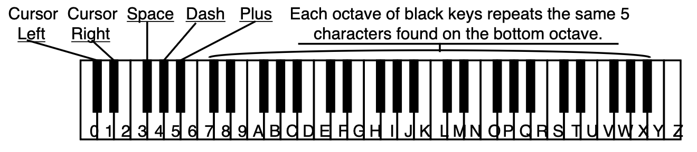
When you save a 30-SEQ/SONGS file, the TS‑10 gives you the option of saving Programs in the same file, so that you can keep the sequences and the Programs that go with them together.
After you have selected the 30-SEQ/SONGS file type, chosen either SELECT=BANKS 0-4 or 5-9, and pressed *YES*, the TS‑10 offers you an option. The display shows:
| SAVE NO PROGRAMS IN SEQ FILE | *YES* | ||
| *NO * | |||
When you save a 60-SEQ/SONGS file, the TS‑10 also gives you the option of saving the currently loaded contents of the Sample Banks, as well as the internal User RAM Programs, in the same file, so that you can store the Programs, and Sampled Sound data that the sequences and songs use all together in a single file.
After you have selected 60-SEQ/SONGS file type and pressed *YES*, the TS‑10 offers you the first option. The display shows:
| SAVE NO PROGRAMS IN SEQ FILE | *YES* | ||
| *NO * | |||
After choosing whether or not Programs will be saved, press *YES* to proceed. If any Sampled Sounds are currently loaded, the TS‑10 offers you the second option. The display shows:
| SAVE SAMPLE BANKS IN SEQ FILE | *YES* | ||
| *NO * | |||
If you follow the save procedure exactly as described earlier (pressing *YES* after naming the file) the data will automatically be placed in the first empty file bank location for that file type, starting from the first location in Bank 0 and going up from there.
However, you can specify a particular file bank for the file to be placed in:
| FILE | BASS-SOUNDS | STRINGS | DRUM-KITS |
| ***** | ***** | ***** | |
When you press LOAD from the Disk Storage menu, you will see the following display:
| LOAD | FILE=6-PROG-FILE | SIZE=7 | *YES* |
| TYPE=6-PROGRAMS | BANK=0 | *NO * | |
The display shows the File Name which identifies the file that will be loaded if you press *YES*; the Size of the file in Blocks; the File Type and (for some file types) the Destination Bank, i.e. which bank(s) to load the data into. Only files of the type selected will be shown in the File Name field, or in file banks.
| 1-PROGRAM | 1-PRESET | 1-SEQ/SONG | SYS-EX-DATA |
| 6-PROGRAMS | 60-PRESETS | 30-SEQ/SONGS | SYSTEM-SETUP |
| 60-PROGRAMS | 120-PRESETS | 60-SEQ/SONGS | SAMPLE-BANKS |
| 120-PROGRAMS | SAMPLE-EDITS |
Where the data ends up depends on the file type and (where applicable) the destination bank selected:
If the 60-SEQ/SONGS file had Sample Banks saved with it, after answering *YES* to load the 60-SEQ/SONGS file, the Auto-Load prompt will be displayed. If you answer *YES* to Auto-Load the Sampled Sound data, the TS‑10 will ask for the disk(s) to automatically load the Sampled Sound data. If you answer *NO *, the Sampled Sound bank information is loaded and all currently loaded Sampled Sounds are deleted, but the Sampled Sound files are not loaded.
the 60-SEQ/SONGS file, the Auto-Load prompt will be displayed. If you answer *YES* to Auto-Load the Sampled Sound data, the TS‑10 will ask for the disk(s) to automatically load the Sampled Sound data. If you answer *NO*, the Sampled Sound bank information is loaded and all currently loaded Sampled Sounds are deleted, but the Sampled Sound files are not loaded.As we mentioned earlier, File Banks provide a quick way to locate and select a file for loading. After you have selected LOAD from the DISK Storage menu, the ten Bank buttons will select file banks. From the file banks you can directly select a file to be loaded instead of scrolling through the entire list of files.
| FILE | BASS SOUNDS | MY-CHENG | DRUM-KITS |
| MBIRA | ****** | ****** | |
This selects that file as the one to be loaded and instantly returns you to the Load File page.
When you press DELETE from the Disk Storage menu, you will see the following display:
| DELETE | FILE= MY-DRUMS | SIZE=8 | *YES* |
| TYPE=6-PROGRAMS | *NO* |
The display shows the File Name which identifies the file that will be deleted if you press *YES*; the Size of the file in Blocks; and the File Type. Only files of the type selected will be shown in the Name field, or in the file banks. Note that you cannot delete any data from a Sampled Sound disk.
A SCSI option is available for loading Sampled Sounds from EPS/EPS-16 PLUS/ASR-10 formatted SCSI storage devices when the optional SP-4 interface is installed. The TS‑10 SCSI port will only read from SCSI; it will not write to SCSI storage devices. When the SP-4 is installed, the STORAGE page will display a new active field, as below:
| SELECT STORAGE OPTION | *LOAD* | ||
| SCSI | DISK | SYS-EX | |
Pressing the lower left soft button beneath SCSI will reveal the following sub-page:
| SCSI | DEVICE-ID=4 | STATUS=CDRM001 | |
| *LOAD* | *EXIT* | ||
This is the SCSI STATUS page, where you select the SCSI DEVICE ID from which you want to load Sampled Sounds. It is important that each SCSI storage device in a SCSI network be assigned a unique SCSI Device ID number — this will ensure predictable communication between devices. Since the range of valid SCSI IDs is 0 to 7, it is possible to connect up to eight distinct devices on a single network. The TS‑10 is permanently assigned to Device ID #3, so no other devices in the SCSI network can be assigned to Device ID #3.
The STATUS field will show one of five different values:
Pressing *LOAD* will display the lowest numbered Sample Sound file or Directory name in the Root directory of the selected SCSI storage device. If no Sampled Sound files exist in the current directory, the file TYPE parameter will be automatically set to TYPE=DIRECTORY, and the lowest numbered directory name will automatically be displayed. If no sub-directories exist in the current directory, the file TYPE parameter will be automatically set to TYPE=SAMPLEDSND and the lowest numbered Sampled Sound file will be displayed.
After the directory from a SCSI device has been loaded, pressing Storage, then the soft button beneath SCSI, and the soft button beneath *LOAD* will always display the contents of the Root directory.
Files on Sampled Sound disks are organized in directories. A directory is a group of up to 38 files. These files can be one of two possible file types: a Sampled Sound or another directory (called a sub-directory). Each sub-directory may contain up to 38 more files. If there are no subdirectories, the disk will only contain the 38 files of the Root (or Main) directory. The Root directory is the default top level directory selected when you change SCSI DEVICE ID numbers on the SCSI STATUS page or after power-up. If you are familiar with the Macintosh computer, or MicroSoft Windows™ for IBM/PC Compatibles, sub-directories are similar to folders.
The directories and sub-directories on a Sampled Sound disk form a tree-like structure, with the Root directory as the trunk, and the various levels of sub-directories conceptually similar to the branches of an inverted tree. For example:
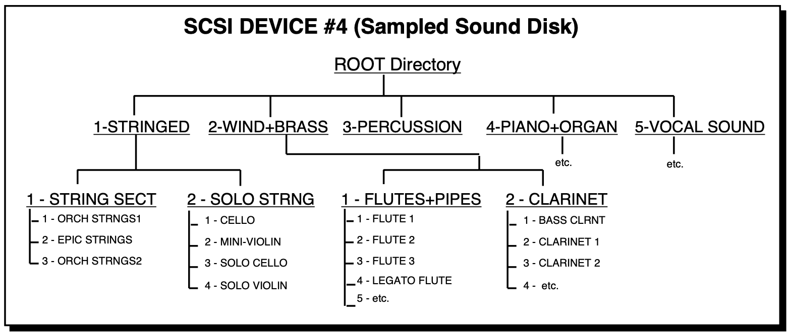
It is helpful to have an understanding of how the TS‑10 keeps track of all the files that can be on a large Sampled Sound disk like a CD-ROM. If we were to describe the location of the sound SOLO VIOLIN in the example directory structure diagram above, we might say:
“The SOLO VIOLIN Sampled Sound file is the fourth file in the SOLO STRING sub-directory, within the STRINGED directory, which is in the ROOT directory, on the SCSI storage device assigned to DEVICE-ID #4.”
If we read the description from right to left, starting with the SCSI storage device, it becomes:
SCSI DEVICE-ID 4..ROOT..STRINGED..SOLO STRING..SOLO VIOLIN
This description of the location of the file is called a file path. This is the path that the TS‑10 will follow to find the file. If you use an IBM PC/Compatible running under MS-DOS, you may already be familiar with file paths (e.g. C:\STRINGED\SOLOSTRNG\SOLOVIOL). On a Macintosh computer, or an IBM PC/Compatible running Microsoft Windows, the file path would correspond to the cascade of the folders you would open in order to locate a file.
Controls and pressing the *YES* button to load them.
To Exit from or move back up from a Directory:
It may have occurred to you that with the large number of files that a SCSI storage device can contain, it would be nice to be able to get directly to a directory or specific file quickly rather than having to scroll through all of the files and manually enter each directory and sub-directory.
Direct-Macros allow you to do this. In the TS‑10, a Direct-Macro is a shortcut that allows you to get to a file or directory on a Sampled Sound CD ROM with just a few button presses.
ENSONIQ formatted Sampled Sound CD ROMs have a unique Direct-Macro number assigned to each individual file location (see the CD-ROM manual for Direct-Dial listings). Pressing and holding the top left soft button above the LOAD FILE name field, and then pressing the Bank buttons, allows direct-dialing of Direct-Macro numbers. The following screen will be displayed after a Bank button has been pressed, for as long as the top left soft button is held down:
Letting go of the top left soft button will invoke the Direct Macro for the value that is displayed.
Direct-Macro numbers conform to the ENSONIQ CD-ROM conventions:
If we were to locate the sound SOLO VIOLIN from the example directory structure above using the Direct-Dial feature, you would hold down the top left soft button and enter 41204:
| This number: | 4 | 1 | 2 | 04 |
| selects: | SCSI DEVICE ID 4 | STRINGED | SOLO STRING | SOLO VIOLIN |
| which is: | SCSI DEVICE-ID | Main Directory | Sub-Directory | File Number |
Then, when releasing the button, the TS‑10 will display the SOLO VIOLIN Sampled Sound file.
It is not necessary to enter the SCSI Device ID digit unless you are changing SCSI storage devices. When working with a CD-ROM, four digits are all you need to enter, because CD ROM drives containg ENSONIQ CD-ROMs should always be set to SCSI ID #4. If you make a mistake, type up to six digits; the sixth digit entered will start over at the first digit of your next attempt.
The TS‑10 is able to send System Exclusive dumps of Programs and Presets, either singly or in banks, as well as Sequencer dumps containing either the entire sequencer memory or the current sequence/song. These dumps can be understood by another TS‑10. Banks of programs or presets are always transmitted from the internal RAM. If you want to send internal ROM data, you must first replace all of the internal RAM data with copies of the internal ROM data. Make sure that you have first saved your internal RAM data before replacing it with the ROM data.
From the STORAGE page:
Press the soft button for SYS-EX. The display reads:
This page is used to select either the Sys-Ex Recorder, or the option to transmit bulk Sys-Ex dumps of data in RAM. Pressing the soft button below SEND-DUMPS will reveal the following sub-page:
| SELECT MIDI SYS-EX OPTION | |||
| RECORDER | SEND-DUMP | ||
This page is used to select either the Sys-Ex Recorder, or the option to transmit bulk Sys-Ex dumps of data in RAM. Pressing the soft button below SEND-DUMPS will reveal the following sub-page:
| SELECT SYS-EX DUMP TYPE | ALL | ||
| PROGRAMS | PRESETS | SEQUENCER | |
| SEND SYS-EX PROGRAM DATA | ALL | ||
| CURRENT-PROGRAM | BANKSET-U0 | BANKSET-U1 | |
To send Presets out via MIDI Sys-Ex
From the MIDI SYS-EX page:
| SEND SYS-EX PRESET DATA | ALL | ||
| CURRENT-PRESET | BANKSET-U0 | BANKSET-U1 | |
To Send Sequences/Songs out via MIDI Sys-Ex From the MIDI SYS-EX page:
| SEND SYS-EX SEQUENCER DATA | ALL | ||
| CURRENT-SEQ/SONG | TRACKS | ALL-SEQ-DATA | |
Sending Programs, Presets and All Sequencer data out via MIDI Sys-Ex From the MIDI SYS-EX page:
The receiving of data dumps is initiated automatically by System Exclusive messages sent from the transmitting unit. No front-panel commands are necessary to receive dumps if the receiving of System Exclusive messages is enabled on the MIDI Control sub-page (SYS-EX=ON).
Some MIDI information—such as key events, controllers, program changes, etc.— is understood by virtually all MIDI devices, regardless of the manufacturer. The common ability to send and receive these messages is what allows you to play any MIDI synth from any other, to change programs and volume remotely, to start and stop sequencers and drum machines together, and the many other performance miracles we have come to expect from MIDI.
There are other messages which each manufacturer has reserved for communicating specific information with a specific machine (or family of machines). These machine-specific messages are called System Exclusive (or Sys-Ex) messages, since they are meant to be recognized only by a particular device and ignored by all others (i.e. they are exclusive to a particular system).
The TS‑10, for example, can transfer programs, presets or sequences or via to another TS‑10. It is a lot like sending a file from one computer to another via modem. The 1’s and 0’s that make up the data in memory are sent out the MIDI port. This data can be received and understood by another TS‑10, or by a computer running the proper librarian software.
It is not strictly necessary, however, for the receiving system to understand the data it receives, if the purpose is to store it for later reloading into the original system (just as it’s not necessary for a file cabinet to understand the pieces of paper you file there). The TS‑10 can receive any MIDI System Exclusive message up to 288k bytes and save it to disk without having the slightest notion of what it means or what type of device it came from. When you want to send the data back to the original device, you just load the data from disk back into the TS‑10, which will then retransmit the message exactly as it was received.
Here are a few examples of the kinds of information which you can use the TS‑10 to store in this way:
In short, any MIDI data (within memory limits) which can be transmitted from one device to another can be received and stored by the TS‑10. With the TS‑10 at the heart of your system, you now have disk storage for the data in all your MIDI instruments.
The TS‑10 uses the RAM (Random Access Memory) that is normally devoted to the sequencer to “buffer” incoming System Exclusive messages before saving them to disk. A buffer is an area of memory where data is held temporarily. When the TS‑10 receives a System Exclusive data dump, it stores it in the sequencer memory until you save the data to disk.
You must save all sequencer memory before using the System Exclusive Recorder function to receive data.
Loading Sys-Ex data from disk to an external device will not necessarily clear the sequencer memory. If there is enough unused sequencer memory to load and transmit the Sys-Ex message, the memory will not be affected. If there is not enough memory, the TS‑10 will warn you, and give you a chance to proceed (erasing the sequencer memory) or quit and save the data.
Using the TS‑10’s disk drive for storing data from external devices is a three-step process:
| SYS-EX | STATUS=WAITING... | SIZE=0 | |
| SAVE | SEND | *EXIT* | |
The TS‑10 will now record into its memory any System Exclusive message which it receives. At the upper right of the display (SIZE=##) you see the size (expressed in disk blocks) of the Sys-Ex data received so far.
| SAVE FILE | NAME-sYS-EX-FILE | *YES* | |
| LEFT -CURSOR- RIGHT | *NO * | ||
If the TS‑10 display reads STATUS=MEMORY FULL, this means it ran out of memory with which to “buffer” the incoming data. (The maximum amount which can be received is 256 (767 with expanded memory) blocks). After receiving the MEMORY FULL message you can still save the file, but it is almost certain that the last Sys-Ex message received is incomplete and will not be able to be received successfully when retransmitted.
After you have saved a System Exclusive message from an external MIDI instrument, getting the data back to the original instrument involves three steps:
As you have no doubt noticed, the TS‑10 displays exactly the same page for sending and receiving Sys-Ex data. In fact, MIDI System Exclusive data can be transmitted or received any time this page is on the display, regardless of which way you entered it.
This allows a number of useful applications. You can, for example, load a Sys-Ex file from disk, then transmit to the TS‑10 any additional message or messages, adding that data to the original data, and then resave the file to disk. Or you can press SEND to retransmit a Sys-Ex message immediately after it has been received, to check and see that it was received properly.
Disk messages are displayed for one second and indicate either successful completion or nonfatal error conditions encountered during a disk operation:
Fatal error messages are always accompanied by the PRESS ANY BUTTON TO CONTINUE... prompt, and remain on the screen until any button is pressed. These messages indicate serious error conditions BUTTON TO CONTINUE... prompt, and remain on the screen until any button is pressed. These messages indicate serious error conditions which interrupted the disk operation. These errors may have prevented the correct saving or loading of the data in the file(s).
Performance / Composition Synthesizer · Version 3.0
This section provides an overview of the concepts behind understanding and editing a Sampled Sound. For detailed descriptions of the actual parameters, refer to the following section.
A Sampled Sound is a sound created for ENSONIQ’s EPS, EPS-16 PLUS, and/or ASR-10 samplers, giving you access to the largest library of sampled sounds anywhere! In addition to having access to this versatile library of sounds (from ENSONIQ and many third-party companies from around the world), this means that you can incorporate vocals, drum loops, and any sound imaginable into your music. Just use an ENSONIQ sampler, or your friend’s ENSONIQ sampler, to make new Sampled Sounds to use in your music.
Sampled Sounds differ from the TS‑10’s on-board sounds in several significant ways.
First, Sampled Sounds are volatile. This means that once loaded, the sounds will remain in the TS‑10 for as long as the TS‑10 is turned on. Once the TS‑10 is turned off, though, any Sampled Sounds will disappear, just as they would from an ASR-10, or any other sampler. Sampled Sounds can require a tremendous amount of memory. Your TS‑10 is shipped with 2 Megabytes of memory, expandable to 8 Megabytes with industry-standard SIMMs — more memory than you’ll find in many personal computers. Backing up this amount of memory when the TS‑10 is turned off requires more power than the internal battery (which supplies power to backup the TS‑10’s sound programs) can supply.
Second, the parameters available for programming in the EPS/EPS-16 PLUS/ASR-10 are somewhat different than those in the TS‑10. When a Sampled Sound is selected, pressing any of the buttons in the Programming section will display edit pages specific to Sampled Sounds.
Finally, loading and selecting Sampled Sounds differs somewhat from loading and selecting TS‑10 sound programs.
SIMM is an acronym which stands for Single In-line Memory Module. SIMMs have become the industry standard used by most computers (both IBM and Mac compatible) to expand the computer’s memory. Because of this, SIMMs are readily available in most computer software stores, and from mail order organizations. By having expansion SIMMs installed in the TS‑10, you can load up to 20 EPS/EPS-16 PLUS/ASR-10 Sampled Sound files, with all settings intact.
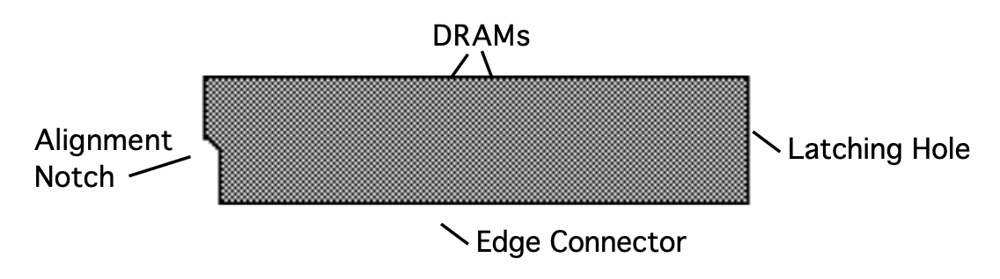
Since you will need to purchase your SIMMs before you bring them to an Authorized ENSONIQ Repair Station for installation, here is some important information you should know about purchasing the proper SIMMs:
The TS‑10 offers two options for SIMMs:
SIMMs are susceptible to Electrostatic Discharge (ESD) commonly known as “static.” Electrostatic Discharge can destroy or damage SIMMs. Here are some procedures you should follow when handling SIMMs in order to minimize the possibility of causing ESD damage:
SIMMs are susceptible to Electrostatic Discharge (ESD) commonly known as “static.” Electrostatic Discharge can destroy or damage SIMMs. Here are some procedures you should follow when handling SIMMs in order to minimize the possibility of causing ESD damage:
Each Sampled Sound consists of up to eight Layers, and up to 127 WaveSamples. Each WaveSample within a TS‑10 Sampled Sound consists of the following:
The WaveSample is the most basic unit of a Sampled Sound. A WaveSample can be anything — a drum, a mandolin trill, a sound effect, or your voice, for example. Each WaveSample has its own set of WaveSample parameter settings. Several WaveSamples can be grouped together to form Layers, and up to eight layers can reside within a Sampled Sound.
Because Sampled Sounds are stored in dynamic RAM, they are not saved internally, and must be loaded each time the TS‑10 is powered on. To load a Sampled Sound:
| LOAD FILE=SOUND-NAME | SIZE=XXX | *YES* | |
| TYPE=SAMPLEDSND | DIR=ROOT | *NO* | |
| USE BANK BUTTONS TO SELECT LOCATION | |||
| FREE=XXXX | BANKSET=8 | *EXIT* | |
Files on Sampled Sound disks are organized in directories. A directory is a group of up to 38 files. These files can be one of two possible file types: a Sampled Sound or another directory (called a sub-directory). Each sub-directory may contain up to 38 more files. If there are no subdirectories, the disk will only contain the 38 files of the Root (or Main) directory. The Root directory is the default top level directory selected when you change SCSI DEVICE ID numbers on the SCSI STATUS page or after power-up. If you are familiar with the Macintosh computer, or MicroSoft Windows™ for IBM/PC Compatibles, sub-directories are similar to folders.
As explained above, the TS‑10 will only allow you to scroll through a list of up to 38 files at any one time without changing directories. However, any one (or more) of these files may be a subdirectory, which may contain up to 38 more files. Eventually this becomes a tree-like structure with the root directory as the trunk, and the various levels of sub-directories conceptually similar to the branches of the tree.
For more information about SCSI and directories, refer to Section 13 — Storage.
Sampled Sounds are most often saved in the ROOT (top level) directory on a floppy disk.
However, there may be an instance where a Sampled Sound file is stored within a different directory.
| LOAD FILE=SAMPLED-NAME | SIZE=XXXX | *YES* | |
| TYPE=SAMPLEDSND | DIR=XXXXXXXXX | *NO* | |
Multi-disk Sampled Sounds are loaded the same way as single-disk Sampled Sounds, with the addition of a few extra display messages. Multi-disk EPS/EPS-16 PLUS/ASR-10 Sampled Sound files are indicated by a flashing number next to the file name on the LOAD FILE page. After loading part of a multi-disk Sampled Sound file, the display will read:
| INSERT PART ## OF XXXXXXXXXXXX | *YES* | ||
| *NO * | |||
Once the sound has finished loading, you will probably want to select it so you can play it:
| S8-0 | SAMPLED-SOUND | DISK-NAME=XXXX |
| SIZE=XXXX | SOUND-NAME | OPTIONS |
The top line of display shows the status of the Sampled Sound, and the name of the disk from which the Sampled Sound was loaded into the TS‑10. The bottom of the display also shows the size of the Sampled Sound in blocks, the Sampled Sound name (or *EMPTY-BANK* for an empty Sampled Sound bank location), and OPTIONS that provides access to an Options sub-page.
When the Sampled Sound Status shows - - -(MUTED)- - - or - -NOT LOADED- -, the name of the Sampled Sound on the bottom line will appear in parentheses. Any Preset or Seq/Song Tracks that the Sampled Sound Bank is assigned to will show *BANK S#-#* in place of the Sampled Sound name. This indicates the BankSet and Bank location of the Sampled Sound that was assigned to the Track.
Use the bottom center soft button to select (single press) or layer (rapidly double-click) the Sampled Sound. Sampled Sounds can be stacked and used in Presets and Sequences just as Programs can.
| S8-3 | SAMPLED-SOUND | DISK-NAME=AD-003 | |
| SIZE=1732 | ZOO-PERC | OPTIONS | |
Unlike Programs, which are stored in battery backed-up memory, if you turn the TS‑10 off and back on, any Sampled Sounds will disappear from memory and need to be re-loaded into the same locations in order for Sequences and Presets that use them to work correctly. The Sampled Sound Bank pages will retain the information about which Sampled Sounds or Sample Edits were loaded into each location. They can be manually reloaded one at a time, or reloaded automatically, using the Auto-Load feature. See the description of the Auto-Load feature later in this section for more information.
The bottom right field on the Sampled Sound Bank pages provides access to certain options. Pressing the soft button beneath OPTIONS will reveal the following sub-page:
| S8-0 | SAMPLED-SOUND | OPTIONS | |
| *DELETE* | *MUTE* | *EXIT* | |
On this sub-page you can delete, or mute/unmute the Sampled Sound. The bottom center of the display will either show *MUTE* or *UNMUTE*. The *MUTE* field will appear whenever a Sampled Sound is loaded and not muted. The *UNMUTE* field will appear whenever a Sampled Sound is muted. Pressing the bottom center soft button will switch between a muted and unmuted status and return you to the previous screen.
Pressing the soft button beneath *MUTE* will mute the Sampled Sound, and you will hear the “Surrogate Program” in place of the Sampled Sound on any Preset or Seq/Song Track(s) that the Sampled Sound is assigned to.
| DELETE <SAMPLED-SOUND NAME> | *YES* | ||
| FROM SAMPLED-SOUND BANK | *NO * | ||
The top line of the display will show the name of the Sampled Sound that will be deleted, and the bottom line will show the BankSet and Bank location. Pressing *YES* will delete the Sampled Sound from memory, making the location into an *EMPTY-BANK*. This is useful if you want to load in a large Sampled Sound to another bank and don’t have enough memory, or if you want to save only certain Sampled Sound information with a SAMPLE-BANKS file (see later in this section). Pressing *NO* will abort the procedure and will display the Sampled Sound Bank page.
If you try loading a Sampled Sound, and do not have enough free memory available, the following display will appear:
| AUTO-LOAD ALL SAMPLED-SOUNDS | *YES* | ||
| *NO * | |||
The Auto-Load prompt will also appear after you manually load a SAMPLE-BANKS file, or load a 60-SEQ/SONGS file that was saved with Sample Banks (flashing S or PS on the LOAD FILE page).
If you answer *NO * to the Auto-Load prompt, the TS‑10 will display the last Sounds or Preset Bank page, and no Sampled Sounds will be automatically loaded.
If you answer *YES*, the display will momentarily show:
WORKING…
WORKING… is displayed when the TS‑10 is preparing to load Sampled Sound files, and is identifying the data on the current floppy disk in the disk drive and any connected SCSI storage devices. WORKING… will also be displayed while a removable SCSI storage device is spinning up to speed (see later in this section for information on the SCSI option).
Once the TS‑10 is finished WORKING…, it will automatically load any needed files from the current disk in the disk drive, and from any connected SCSI Storage Devices.
If the TS‑10 cannot find a file it needs to load on either the current disk in the disk drive, or from any connected SCSI Storage Device, the display will show one of four different prompts:
| INSERT DISK WITH NAME XXX-### | * OK * | ||
| INTO DISK DRIVE | *SKIP* | ||
The display asks you to insert the disk with the defined disk name into the disk drive. Insert the requested disk into the disk drive, and press the soft button above *OK*. The TS‑10 will automatically load any needed Sampled Sound files from the disk. If you do not want to load the Sampled Sound from the requested floppy disk, or if you do not have the disk, press the soft button beneath *SKIP*, and the TS‑10 will request the next disk that it needs to load from.
| INSERT DISK WITH FILE XXXXXXXXXXXX | * OK * | ||
| INTO DISK DRIVE | *SKIP* | ||
Because the disk has no disk name, the display asks you to insert the disk with the defined Sampled Sound file name into the disk drive. Insert the requested disk into the disk drive, and press the soft button above *OK*. The TS‑10 will automatically load the requested Sampled Sound file from the disk. If you do not want to load the requested Sampled Sound file, press the soft button beneath *SKIP*, and the TS‑10 will request the next disk that it needs to load from.
| INSERT DISK WITH NAME XXX-### | * OK * | ||
| INTO SCSI DEVICE #X | *SKIP* | ||
The display asks you to insert the disk (CD ROM, removable cartridge, or other removable media) with the defined name into the selected SCSI Storage Device, or verify that the requested drive is connected.
Note that the SCSI Device ID number for the requested SCSI volume must be set to the same value as shown in the display. Insert the requested disk into the SCSI Storage Device, and press the soft button above *OK*. The TS‑10 will automatically load any needed Sampled Sound files from the disk. If you do not want to load the Sampled Sound from the requested disk, press the soft button beneath *SKIP*, and the TS‑10 will request the next disk that it needs to load from.
| INSERT DISK WITH FILE XXXXXXXXXXXX | * OK * | ||
| INTO SCSI DEVICE #X | *SKIP* | ||
Because the SCSI volume has no disk name, the display asks you to insert the disk (CD ROM, removable cartridge, or other removable media) with the defined Sampled Sound file name into the selected SCSI Storage Device or to verify that the requested drive is connected. Note that the SCSI Device ID number for the requested SCSI volume must be set to the same value as shown in the display. Insert the requested disk into the SCSI Storage Device, and press the soft button above *OK*. The TS‑10 will automatically load the requested Sampled Sound file from the disk. If you do not want to load the requested Sampled Sound file, press the soft button beneath *SKIP*, and the TS‑10 will request the next disk that it needs to load from.
Insert the requested disk into the disk drive (or SCSI Storage Device) and press the soft button above * OK * to automatically load the Sampled Sound files. If the Sampled Sound files needed are from several disks, the display will show each disk label name, allowing you the opportunity to load the file, or *SKIP* that particular file.
If any Sample Edits files have been loaded into the TS‑10, or have been saved to a TS‑10 disk and are still loaded, they will also be reloaded by the Auto-Load Feature. After you choose to Auto-Load all Sampled Sound file:
| LOADING <SAMPLED-SOUND-NAME>- | |||
The display will then ask for the TS‑10 formatted disk that has the Sample-Edits file:
When you load a SAMPLE-BANKS file or a 60-SEQ/SONGS file that was saved with Sample Banks into the TS‑10, and then answer *YES* to the AUTO LOAD ALL SAMPLED SOUNDS prompt, it deletes all currently loaded Sampled Sounds and Sample Edits in the TS‑10, with the following exceptions:
In the next two sections of the manual, all the tools available for editing a raw WaveSample will be covered. Almost all of the Sampled Sound parameters will require you to select either a WaveSample or Layer for editing. The procedure for doing this is quite simple:
SOUND NAME
Layer Number (A="All")
WaveSample Number (A="All")
| EDIT | SAMPLEDSOUND | LAYER=A | WAVESMPL=ALL |
| 00 | LAYERS IN PATCH=12------ | ||
Active Layers in Current Patch
You see the currently selected Sampled Sound, layer (stereo or mono), and WaveSample.
The two Patch Select buttons above and to the left of the wheels can be programmed to provide instant access to up to four completely different sounds within each Sampled Sound. These variations might be a different set of samples, or the same samples with different envelopes, or a chorused version of the sound, or perhaps a different range of a wave sample.
What you are doing when you press either or both of the patch select buttons is selecting different layers to play. A layer is a group of WaveSamples spread across the keyboard — each Sampled Sound can have up to eight layers. For each of the four possible patches, any of these eight layers can be made to play or to remain silent.
Here’s how a typical Sampled Sound might react when you press the patch select buttons:
Sampled Sound messages are displayed for one second and indicate either successful completion or non-fatal error conditions encountered during a Sampled Sound operation:
The LAYERS-IN-PATCH parameter allows you to program a layer—or combination of layers—to either play or not play depending on which patch select buttons are pressed.
To program patches:
The Patch Select buttons are transmitted and received over MIDI as MIDI controller #70.
Because Sampled Sounds are stored in dynamic RAM (DRAM), which can only operate while power is on, they are not saved when the TS‑10 power switch is turned off. If you should unexpectedly lose power, or have to power down for some unknown reason, you can define a substitute Program that will play on each Track that originally contained a Sampled Sound, until you can load the Sampled Sound back into the TS‑10. This substitute Program is called a Surrogate Program. A Surrogate Program will also play whenever you mute a Sampled Sound (by pressing the soft button beneath *MUTE* on the Sampled Sound Bank OPTIONS sub-page).
All defined Preset or Sequence Tracks always have a Program assigned to them. When a Sampled Sound is put on a Track, it “covers up” the Program. When the power is turned off, the Sampled Sound (being in dynamic RAM) is gone. The next time you power on, you will hear the “uncovered” Surrogate Program until you reload the Sampled Sound.
If you want to clear the Sampled Sound memory, and start out with a “blank canvas”, you can easily delete all of the loaded Sampled Sound and Sample-Edits from the TS‑10 all at one time. This function will also delete the information about which Sampled Sounds had previously been loaded into Sampled Sound Banks.
| ALL SAMPLED-SOUND DATA | *YES* | ||
| WILL BE ERASED | *NO * | ||
Although you cannot save Sampled Sound wave data from the TS‑10, there are two options for saving Sampled Sound information on the Storage page. To access these:
When you press *YES* for either file type, the display shows:
| SAVE FILE | NAME=SAMPLE-BNKS | *YES* | |
| LEFT -CURSOR- | RIGHT | *NO * | |
A Sample-Banks file remembers up to 20 Sampled Sound names (ten in BankSet 8 and ten in BankSet 9, if applicable) as well as their source disk(s), file paths, and Bank locations. Loading a Sample-Banks file will allow you to Auto-Load the Sampled Sound files back into the same location(s) that they were in at the time the Sample-Banks file was saved.
Saving a Sample-Banks File Because a Sample-Banks file remembers up to 20 Sampled Sound names, their source disk(s), file paths, and Bank locations, any Sampled Sounds Banks that you do not want to save as part of a Sample-Banks file must be deleted prior to saving the Sample-Banks file. This will prevent the Auto-Load feature from requesting unwanted Sampled Sounds files.
When you are ready to save a Sample-Banks file, first verify that there are no additional Sampled- Sounds loaded into the TS‑10 that you do not want to save with the Sample-Banks file, and that there are no -NOT LOADED- Sample Sound Bank locations that you do not want reloaded.
| DELETE LOSER-SOUND | *YES* | ||
| FROM SAMPLE-SOUND BANK S8-4 | *NO * | ||
| SAVE FILE | NAME=SAMPLE-BNKS | *YES* | |
| LEFT -CURSOR- | RIGHT | *NO * | |
If you have any Sample-Banks files that were created on the TS‑10 using software earlier than version 2.0, they may not Auto-Load properly. Follow this procedure to update them for use with the version 2.0 Auto-Load feature:
| LOAD FILE=MY SET-UP | SIZE=3 | *YES* | |
| TYPE=SAMPLE=BANKS | *NO * | ||
| ALL SAMPLED-SOUND DATA | *YES* | ||
| WILL BE ERASED | *NO * | ||
| AUTO-LOAD ALL SAMPLED-SOUNDS | *YES* | ||
| *NO * | |||
After performing this procedure, loading a SAMPLE-BANKS file and answering *YES* to the AUTO-LOAD prompt will properly load the Sampled Sounds and Sample Edits back into their original locations.
When loading a Sampled Sound, you can replace a currently loaded Sampled Sound with the one you want to load. For this example, we’ll replace GUITR STRUMS with RS PERCS (both of these Sampled Sound files are found on the SSD-100 disk that came with your TS‑10). Here’s how:
| LOAD FILE=VOCAL SNIPS | SIZE=420 | *YES* | |
| TYPE=SAMPLEDSND DIR=ROOT | *NO * | ||
| USE BANK BUTTONS TO SELECT LOCATION | |||
| FREE=XXXX | BANKSET=8 | *EXIT* | |
The display shows how much free memory is available for loading Sampled Sound files (FREE=XXXX), and asks you to select a location to load the Sampled Sound into (by pressing one of the Bank 0-9 buttons). For our example, we’ll load the GUITR STRUMS file into BankSet 8, Bank 0.
You can take a moment to listen to the GUITR STRUMS file if you like, by holding down the BankSet button and pressing the Bank 8 button, then pressing the Bank 0 button, followed by the bottom center button in the display. When you’re ready to continue, press the Storage button twice to return to the Load page.
| S8-0 SAMPLED-SOUND | DISK NAME-SSD-100 | ||
| SIZE=1251 | GUIR STRUMS | *DELETE* | |
When loading a SAMPLE-EDITS file type, which contains edit parameter settings as well as the Sampled Sound effect, there are a few additional display requests. When a SAMPLE-EDITS file is loaded the following display appears:
| DISK NAME-SSD-100 | DISK LABEL NUMBER-UNKNOWN | ||
| SAMPLING SOUND NAME-GUITR STRUMS | *OK* | ||
If you try loading a Sampled Sound and do not have enough free memory available, the following display will appear:
| DISK NAME-SSD-100 | DISK LABEL NUMBER-UNKNOWN | ||
| SAMPLING SOUND NAME-GUITR STRUMS | *OK* | ||
At this point, you can select a loaded Sampled Sound Bank location to delete by pressing and holding the appropriate Bank button. The display will show the name of the Sampled Sound in that Bank location with the word *DELETE* flashing in the lower right corner of the display for as long as the Bank button is held down:
| S8-0 SAMPLED-SOUND | DISK NAME-SSD-100 | ||
| SIZE=1251 | GUIR STRUMS | *DELETE* | |
While holding down a Bank button, if you press the soft button beneath *DELETE*, that Sampled Sound Bank will be deleted. If the Sampled Sound Bank that you select to delete is smaller than the SHORTAGE amount, the SHORTAGE amount will be adjusted, showing how many blocks are still needed to load the Sampled Sound file. You may continue to erase Sampled Sound Banks until there is enough free memory to load the Sampled Sound, at which point the file will automatically load. Press the soft button beneath *EXIT* to abort the LOAD FILE procedure.
Note that with expansion SIMMs installed (2x4 megabyte SIMMs), the two BankSets S8 and S9 are completely separate, and Sampled Sound memory blocks cannot overlap from one BankSet into the other. The SHORTAGE value indicates the memory shortage in the BankSet that was selected as the target for loading the Sampled Sound.
On programming pages where a modulator can be selected to modulate a given modulation destination, the display shows MODSRC=__ (short for Modulation Source). A modulator is chosen by selecting (underlining) the MODSRC= parameter with the soft buttons, and then using the Data Entry Slider or the Up/Down Arrow buttons to select among the 15 available modulation sources.
Let’s take, for example, the Pitch Mods page, which is where you apply modulation to the pitch of a WaveSample (i.e. Pitch is the modulation destination). Press Pitch Mods, then the soft button above MODSRC. The following display appears:
| PITCH MODS | *MODSRC* | ||
| MODSRC=____ | *OFF* | ||
As shown above, where a modulation source is selected, the parameter immediately to its right controls the Modulation Amount which controls how deeply the selected modulator will affect the level to which it is being applied.
Press the Right Arrow button to underline the Modulation Amount, and use the data entry controls to adjust it. Modulation amount can be positive or negative. A modulation amount of +00 has the same effect as turning the modulator OFF.
Performance / Composition Synthesizer · Version 3.0
This section offers detailed descriptions of the specific parameters used in editing Sampled Sounds. A Sampled Sound must be selected in Sounds mode (press Sounds) in order for these parameter pages to be displayed. Most parameters are available on a per-WaveSample basis, except for the parameters on the Layer page that apply to all WaveSamples in entire layers. For an overview of the concepts involved, refer to Section 14 — Understanding Sampled Sounds.
The parameters on this page control which layer(s) will be triggered when the keyboard is played. To access these parameters press Copy, which is the Sampled Sound Edit KEY-DOWN/KEY-UP button.
| EDIT | KEY-DOWN LAYERS=123456-- | ||
| PATCH=LIVE | KEY-UP-LAYERS=------78 | ||
This parameter determines which layer(s) will be triggered when a key is pressed down.
This parameter determines which layer(s) will be triggered when a key is released. A good example of this would be the “thunk” sound made by a harpsichord when you release a key.
This release sound can be a separate sample placed in a layer designated as a keyup layer. If you want a layer to be triggered only when keys are released, first enable the layer on the KEY-UP-LAYERS parameter, and then disable the same layer on the KEY-DOWN-LAYERS parameter.
Selects the default patch select mode for the Sampled Sound. When set to LIVE, it uses the current state of the buttons to select a patch. When set to HELD, it uses the patch set by the first key hit while touching the patch select buttons. When set to any of the 4 patches (-00-, -0*-, -*0-, -**-), the Sampled Sound will ignore the patch selects and will always play the layers in the selected patch. For more information about patch selects, refer to Section 4 — Understanding Presets and Section 5 — Preset/Track Parameters. This is the default setting that will be installed into a track when the Sampled Sound is selected.
The parameters on this page are the default settings for the Track parameters that are stored with the Sampled Sound when it is saved as a SAMPLE-EDITS file. For more information about how these parameters function, see Section 5 — Preset/Track Parameters. To access these parameters press Write Program, which is the Sampled Sound TRK button.
The SAMPLED SOUNDTRK page contains copies of track parameters that are saved in the Sampled Sound. When a Sampled Sound is selected or put on a track, values of these parameters are installed in the track as the default initial settings. They can be edited on the track pages without affecting the Sampled Sound default settings, but must be edited on this page in order to be saved with the SAMPLE-EDITS feature. Changes made here will be copied to the current primary track.
| TRK | XPOS=+0 | BRIGHT=+0 | RATE=+0 |
| RELS=+0 | PRESS=KEY | XCTRL=0 | |
This parameter is the default transposition for the Sampled Sound. It is a transposition offset independent of the Track TRANSPOSE setting, and determines the pitch of the Sampled Sound when Track TRANSPOSE is set to +0 +00 (i.e.: nominal pitch). Editing this parameter will not edit the Track TRANSPOSE value.
Editing the BRIGHT parameter default values will simultaneously edit the Track BRIGHTNESS parameter values on the track that the Sampled Sound is occupying. This is the default setting that will be installed into a track when the Sampled Sound is selected.
Editing the RATE parameter default values will simultaneously edit the Track RATE parameter values on the track that the Sampled Sound is occupying. This is the default setting that will be installed into a track when the Sampled Sound is selected.
Editing the RELS parameter default values will simultaneously edit the Track RELEASE parameter values on the track that the Sampled Sound is occupying. This parameter will affect the Time 5 value for Envelopes 1, 2 and 3. This is the default setting that will be installed into a track when the Sampled Sound is selected.
Allows you to select Poly-Key, Channel, or OFF (for no pressure response) for the Sampled Sound. Generally, if a Sampled Sound doesn’t need to respond to pressure, set this to OFF to conserve sequencer memory. This is the default setting that will be installed into a track when the Sampled Sound is selected.
Editing the XCTRL parameter default values will simultaneously edit the Track XCTRL parameter values on the track that the Sampled Sound is occupying. This parameter will only function if XCTRL has been assigned as a modulator within the selected Sampled Sound. This is the default setting that will be installed into a track when the Sampled Sound is selected.
The LFO page contains the parameters related to the Low Frequency Oscillator. Each WaveSample has its own LFO, which can be assigned as a modulator wherever a modulation source is selected. LFO’s are commonly used to create vibrato, tremolo, and other effects.
Press the LFO button. This takes you to the first sub-page of the LFO page:
| LFO | RATE=+40 | MODSRC=PRESS | MODAMT=+0 |
| DEPTH=0 | MODSRC=WHEEL | MODAMT=+99 | |
Determines the speed of the LFO. The table below shows the frequency (in hertz) for each value:
| Value | Time (in Hz) | Value | Time (in Hz) | Value | Time (in Hz) | Value | Time (in Hz) | Value | Time (in Hz) |
|---|---|---|---|---|---|---|---|---|---|
| 0 | .05 | 20 | 1.25 | 40 | 6.25 | 60 | 11.25 | 80 | 16.25 |
| 1 | .05 | 21 | 1.50 | 41 | 6.50 | 61 | 11.50 | 81 | 16.50 |
| 2 | .06 | 22 | 1.75 | 42 | 6.75 | 62 | 11.75 | 82 | 16.75 |
| 3 | .06 | 23 | 2.00 | 43 | 7.00 | 63 | 12.00 | 83 | 17.00 |
| 4 | .06 | 24 | 2.25 | 44 | 7.25 | 64 | 12.25 | 84 | 17.25 |
| 5 | .07 | 25 | 2.50 | 45 | 7.50 | 65 | 12.50 | 85 | 17.50 |
| 6 | .07 | 26 | 2.75 | 46 | 7.75 | 66 | 12.75 | 86 | 17.75 |
| 7 | .08 | 27 | 3.00 | 47 | 8.00 | 67 | 13.00 | 87 | 18.00 |
| 8 | .08 | 28 | 3.25 | 48 | 8.25 | 68 | 13.25 | 88 | 18.25 |
| 9 | .09 | 29 | 3.50 | 49 | 8.50 | 69 | 13.50 | 89 | 18.50 |
| 10 | .10 | 30 | 3.75 | 50 | 8.75 | 70 | 13.75 | 90 | 18.75 |
| 11 | .11 | 31 | 4.00 | 51 | 9.00 | 71 | 14.00 | 91 | 19.00 |
| 12 | .13 | 32 | 4.25 | 52 | 9.25 | 72 | 14.25 | 92 | 19.25 |
| 13 | .14 | 33 | 4.50 | 53 | 9.50 | 73 | 14.50 | 93 | 19.50 |
| 14 | .17 | 34 | 4.75 | 54 | 9.75 | 74 | 14.75 | 94 | 19.75 |
| 15 | .20 | 35 | 5.00 | 55 | 10.00 | 75 | 15.00 | 95 | 20.00 |
| 16 | .25 | 36 | 5.25 | 56 | 10.25 | 76 | 15.25 | 96 | 20.25 |
| 17 | .33 | 37 | 5.50 | 57 | 10.50 | 77 | 15.50 | 97 | 20.50 |
| 18 | .50 | 38 | 5.75 | 58 | 10.75 | 78 | 15.75 | 98 | 20.75 |
| 19 | 1.0 | 39 | 6.00 | 59 | 11.00 | 79 | 16.00 | 99 | 21.00 |
Selects a modulation source for LFO RATE from among the 15 available modulators.
Determines the amount by which the assigned RATE modulator will affect the LFO RATE. The effect of RATE MODAMT is added to the effect of the LFO RATE parameter.
Sets the “manual” level of the LFO. DEPTH controls the initial amount of LFO.
Selects a modulation source for LFO DEPTH from among the 15 available modulators.
Determines the amount by which the assigned DEPTH modulator will affect the LFO DEPTH. The effect of DEPTH MODAMT is added to the effect of the LFO DEPTH parameter.
Press the LFO button again to access the second sub-page of the LFO page. The display reads:
| LFO | WAVESHAPE=TRIANGLE | RESTART-MODE=OFF | |
| DELAY=40 | NOISE-RATE=15 | ||
Determines how the LFO signal will rise and fall. There are seven possible values:
Determines whether the LFO will restart with each keystrike. When set to OFF, the LFO will cycle continuously without restarting. When set to ON, the LFO waveform will always start at the beginning of its cycle each time a new key is struck.
Determines the time it takes for the LFO to go from zero to the amount set with the DEPTH parameter. Values above 0 will cause the LFO to take longer to achieve its full depth. This is useful for creating delayed vibrato, tremolo, etc.
One of the TS‑10’s 15 available modulation sources is NOISE. The NOISE modulator produces a randomly changing level. Its main use is to randomize or “humanize” pitch when applied as a pitch modulator. It can also be used to randomize any other modulation destination. Typically, the NOISE signal might look like this:
NOISE-RATE determines how frequently the random level will change. Low values will cause it to change very slowly; with high values the level will change quickly.
Each WaveSample has three envelopes associated with it. These envelopes are hard-wired to the pitch, filter cutoff frequency, and amplitude of the WaveSample. Env 1 and Env 2 can also be assigned elsewhere, wherever a modulator is selectable. Each of the three envelope buttons are directly above the page buttons for the function that they are hard-wired to:
The ENV3 LEVEL parameters and the WaveSample VOL parameter on the Output page both use the same (non linear) response curve. As shown below, setting any of these volume controls to 50 will attenuate a sound by 16 dB.
| Hard or Soft Level Response | Level Amplitude |
|---|---|
| 99 | 0 dB |
| 75 | -8 dB |
| 50 | -16 dB |
| 25 | -32 dB |
| 6 | -56 dB |
| 0 | -∞ (infinity) |
The figure below shows a typical WaveSample envelope shape:
The WaveSample envelopes have six times and six levels. The envelope parameters allow you to describe two entirely different shapes; one for maximum velocity (VEL-HARD) and one for minimum velocity (SOFT). When a key is struck, the envelope generator interpolates between the two, creating a curve that is a combination of the two based on the incoming velocity.
The ENV1, ENV2, and ENV3 pages, parameters and ranges are all the same except where indicated below. We will use ENV3 as our example, since its effect on the volume of the WaveSample is immediately apparent.
Press the Env 3 button. The display shows the first ENV3 sub-page.
| ENV3 | LEVELS - | VEL-HARD=0 | 99 78 66 62 |
| TIMES= | 10 64 52 40 30 | SOFT=0 | 78 70 62 50 |
VEL-HARD shows the five levels for the envelope that will be used with maximum velocity.
Level-1 is the initial level. In a traditional ADSR shape, Level-1 is always set to zero. Level-5 is the sustain level.
SOFT shows the five levels for the envelope that will be used with minimum velocity.
TIME shows five time parameters. The first four are the times between the five levels. The fifth time is the (first) release time.
Note that the numbers shown here represent durations, not rates. That is, the envelope will take a fixed amount of time to go from one level to another no matter how close together or far apart those two levels are.
| Value | Time (in sec) | Value | Time (in sec) | Value | Time (in sec) | Value | Time (in sec) | Value | Time (in sec) |
|---|---|---|---|---|---|---|---|---|---|
| 0 | .00 | 20 | .20 | 40 | .82 | 60 | 3.2 | 80 | 13 |
| 1 | .01 | 21 | .22 | 41 | .88 | 61 | 3.5 | 81 | 14 |
| 2 | .02 | 22 | .23 | 42 | .94 | 62 | 3.7 | 82 | 15 |
| 3 | .03 | 23 | .25 | 43 | 1.0 | 63 | 4.0 | 83 | 16 |
| 4 | .04 | 24 | .27 | 44 | 1.0 | 64 | 4.3 | 84 | 17 |
| 5 | .06 | 25 | .29 | 45 | 1.1 | 65 | 4.6 | 85 | 18 |
| 6 | .07 | 26 | .31 | 46 | 1.2 | 66 | 4.9 | 86 | 19 |
| 7 | .08 | 27 | .33 | 47 | 1.3 | 67 | 5.3 | 87 | 21 |
| 8 | .08 | 28 | .35 | 48 | 1.4 | 68 | 5.7 | 88 | 22 |
| 9 | .09 | 29 | .38 | 49 | 1.5 | 69 | 6.1 | 89 | 24 |
| 10 | .10 | 30 | .41 | 50 | 1.6 | 70 | 6.5 | 90 | 26 |
| 11 | .11 | 31 | .44 | 51 | 1.7 | 71 | 7.0 | 91 | 28 |
| 12 | .11 | 32 | .47 | 52 | 1.8 | 72 | 7.5 | 92 | 30 |
| 13 | .12 | 33 | .50 | 53 | 2.0 | 73 | 8.1 | 93 | 32 |
| 14 | .13 | 34 | .54 | 54 | 2.1 | 74 | 8.6 | 94 | 34 |
| 15 | .14 | 35 | .58 | 55 | 2.3 | 75 | 9.3 | 95 | 37 |
| 16 | .15 | 36 | .62 | 56 | 2.4 | 76 | 9.9 | 96 | 39 |
| 17 | .16 | 37 | .66 | 57 | 2.6 | 77 | 10 | 97 | 42 |
| 18 | .17 | 38 | .71 | 58 | 2.8 | 78 | 11 | 98 | 45 |
| 19 | .19 | 39 | .76 | 59 | 3.0 | 79 | 12 | 99 | 49 |
Press the Env 3 button again. The display shows the second ENV3 sub-page.
| ENV3 | 2nd-RELEASE-TIME=0 | REL-LEVEL=-99 | |
| KBD-TIME-SCALING=+0 | VEL-ATCK-TIME=0 | ||
2ND-RELEASE-TIME and REL-LEVEL provide one more breakpoint in the envelope that occurs after the release time (TIME-5). The LEVEL value controls where the breakpoint will be placed relative to the current output level of the envelope at the time the key was released.
This is useful when you want to create a more natural release envelope, such as a release envelope that decays more slowly than the default release envelope.
The following diagram illustrates how the 2ND-RELEASE-TIME and REL-LEVEL interact with the VEL-HARD and SOFT levels of a typical envelope shape.
KBD-TIME-SCALING makes the envelope times shorter or longer above and below the WaveSample root key depending on the key played. Positive values will make all envelope times shorter for keys above the root key, and longer for keys below the root key. Negative values will have the opposite effect. Envelope times for the WaveSample root key are not affected by this parameter. 2ND-RELEASE-TIME is also not affected by this parameter.
This parameter makes envelope attack time (TIME-1) respond to velocity. Raising the VEL-ATCK-TIME value above 0 makes TIME-1 shorter with harder keystrikes. If TIME-1 is set to 0 this parameter will have no effect.
Press the Env 3 button again. The display shows the third ENV3 sub-page.
| ENV3 | MODE=NORMAL | SOFT-VEL-CURVE=OFF | |
The MODE parameter has three states:
Determines how incoming velocity will affect the envelope’s interpolation between the SOFT and VEL-HARD level settings. There are four settings:
The Pitch page parameters determine the playback pitch for each WaveSample.
Press the Pitch button. The display shows the PITCH page.
| PITCH | WS-ROOT-KEY=D3+ | FINE-TUNE=+44 | |
This parameter allows you to change the WaveSample root key. The root key is the key at which the WaveSample plays back at the same pitch as it was recorded.
This parameter adjusts the WaveSample fine-tuning.
The Pitch Mods page parameters control WaveSample pitch modulation.
Press the Pitch Mods button. The display shows the Pitch Mods page.
| PITCH | MODSRC=ENV-2 | MODAMT=+0 | BEND=SYS |
| NOISE=+0 | ENV1=+0.0 | LFO=+1.0 | |
Selects a modulation source for the pitch of the WaveSample from among the 15 available modulators.
Determines the amount by which the assigned pitch modulator will affect pitch.
Determines whether each WaveSample will have its own independent pitch bend range, or whether it will use the system pitch bend range to determine the maximum pitch change that can be applied by the pitch bend wheel. When BEND=SYS, the WaveSample will use the system pitch bend range setting. See the description of the PITCH-BEND parameter on the System page in Section 2 — System Page Parameters for more information on the system pitch bend range.
This parameter controls the amount by which the NOISE modulator will affect pitch.
This parameter controls the amount by which ENV1 will affect pitch.
Determines the amount by which the LFO (Low Frequency Oscillator) will affect pitch.
Each TS‑10 WaveSample has its own pair of digital filters, F1 and F2, that are connected in series. The filter settings determine which frequencies will be allowed to pass through to the output.
A low-pass filter allows only those frequencies below the filter cutoff frequency to pass—higher frequencies are filtered out. The reverse is true for the high-pass filter. In the TS‑10, the first filter (F1) is always a low-pass filter. The second filter (F2) can be either a high-pass or low-pass filter.
Pole is an engineering term that describes the steepness of a filter. Each additional pole gives a filter a steeper rolloff curve. In the TS‑10, four poles are available, but they are divided between two filters; either as 2 and 2, or as 3 and 1. A single-pole filter will rolloff at 6dB per octave; a 2-pole, 12dB per octave; a 3-pole, 18dB per octave; and 4-pole, 24dB per octave. To reproduce a 4-pole low-pass filter (for that “classic” analog synth sound) you would set both filters to 2-pole low-pass. Each filter would then roll-off at 12dB per octave, resulting in a total 24dB per octave rolloff.
Every filter has a knee in the response curve, known as the cutoff frequency. This is the frequency at which the filter begins filtering out frequencies. The filter cutoff frequency can remain fixed over time, or it can be varied by modulating the filter with an envelope, LFO, velocity, etc. You can create some very interesting filter configurations by using a different modulator for each filter. For instance, try using pressure to modulate the filter. You can drive one filter up with pressure, while simultaneously driving the other down.
Use the parameters on this page to adjust the filters.
Use this parameter to choose one of the four filter modes.
The following diagrams show some possible filter configurations. On the left are the response curves of the two filters shown separately. On the right are some possible shapes of the combined filters.
Press the Filters button. The display shows the FILTER1 page.
| FILTER1 | LO-PASS/3 | CUTOFF=150 | KBD=+0 |
| MODSRC=PRESS | MODAMT=+0 | ENV2=+99 | |
Determines whether Filter 1 will be a 2-pole or a 3-pole low-pass filter.
Determines the initial filter cutoff frequency for each of the two filters. With a low-pass filter, a setting of 150 lets all the original signal pass through the filter. With a high-pass filter, a setting of 0 lets through all of the original signal. This setting represents the filter floor, or manual level.
The effect of any selected modulators will be added to (or subtracted from) this level.
Sets the amount by which the location of a note on the keyboard will modulate the filter cutoff frequency (filter keyboard tracking). To have the filter track the keyboard exactly set KBD=+50.
Selects a modulation source for the filter cutoff frequency from among the 15 available modulators.
Determines the amount by which the assigned filter modulator will affect the filter cutoff frequency.
Determines the amount by which Envelope 2 will affect the filter cutoff frequency.
Press the Filters button again. The display shows the FILTER2 page:
| FILTER2 | LO-PASS/1 | CUTOFF=150 | KBD=+0 |
| MODSRC=PRESS | MODAMT=+0 | ENV2=+99 | |
FILTER 2 can be configured as a 2-pole or 1-pole high-pass filter, or a 2-pole or 1-pole low-pass filter.
The remaining parameters and ranges are the same as for FILTER1.
The parameters on this page control the amplitude (or volume) of the WaveSample.
| OUTPUT | BOOST=OFF | LO/HI-KEY | C3+-C8 |
| VOL=99 | MODSRC=PRESS | MODAMT=+0 | |
Setting this parameter to ON gives the selected WaveSample a +12dB boost in volume. This should actually be considered a headroom control; removing that 12dB of headroom by enabling BOOST may leave the sample vulnerable to clipping from other processes like effects. Be careful that adding boost to a sample doesn’t cause it to become so loud that it starts to clip.
This parameter determines the key range the selected WaveSample will cover. Select the WS RNG LO parameter, play the key that you want to be the low key, the cursor will then automatically switch to the HI parameter, which can then be set in the same fashion.
Determines the volume of each WaveSample. Since Envelope 3 is permanently routed to control the volume of the WaveSample, this parameter also determines the amount by which ENV3 will affect volume.
Selects a modulation source for the output volume of the WaveSample from among the 15 available modulators. This is in addition to ENV3, which is always routed to volume.
Determines the amount by which the assigned volume modulator will affect the output volume of the WaveSample. Raising this value will lower the unmodulated volume of the WaveSample(s), creating the headroom necessary for the volume modulation. Note that the AMOUNT value is positive-going only. To obtain negative volume modulation, you must use the VOL MODSRC SHAPER (see later in this Section).
Press the Output button again. The display shows the second OUTPUT sub-page:
| OUTPUT | DESTINATION-BUS=FX1 | ||
| PAN=+0 | MODSRC=LFO | MODAMT=+0 | |
Each WaveSample within a Sampled Sound can be routed to one of four stereo “busses:”
The diagram below shows a common routing of the signals for each bus. See the sections on “Effects” for more on programming specific effects.
Pans the WaveSample within the stereo field. A setting of -99 is panned hard left, and +99 is panned hard right. A value of +00 pans the voice center. The effect of a pan modulator (below) will be added to this.
Selects a modulation source for the WaveSample PAN from among the 15 available modulators. This will cause the WaveSample's location in the stereo field to vary with the output level of the modulation source.
Determines the amount by which the assigned modulator will affect the PAN of the WaveSample.
The parameters on this page control all the WaveSample pointers such as sample start, sample end, loop points, etc. Also on this page, you can choose the playback mode and set up modulation of the sample start and/or various loop modulation options.
Press the Wave button. The first WAVE sub-page is displayed.
| WAVE | PLAYBACK-MODE=LOOP FORWARD | ||
| SAMPLE-START=0 | (0 ) END=68907 (99) | ||
This parameter allows you to select one of five possible WaveSample playback modes.
This parameter allows you to set the sample start point.
When the SAMPLE-START or SAMPLE-END parameters are displayed there are two ways to adjust them — you can move in large steps by adjusting the percent setting, or move one sample at a time by choosing the fine adjust.
| WAVE | PLAYBACK-MODE=LOOP FORWARD | ||
| SAMPLE-START=0 | (0 ) END=68907 (99) | ||
The Coarse Adjust reading is the one in parentheses. Changing this value will move the Sample Start in steps of one percent of the entire WaveSample. Use the Data Entry Slider or the Up/Down Arrow buttons to move the Sample Start ahead until the dead space is gone when you play.
Once you have gotten close using the percent setting, press the Left Arrow button to underline the Fine Adjust setting. Now the Data Entry Slider or the Up/Down Arrow buttons will move the SAMPLE-START in small steps (less than 1%), letting you fine-tune its exact position while playing the WaveSample.
Allows you to set the sample end point. Again you see the sample number (Fine Adjust) and the percent (Coarse Adjust). Use the data entry controls to edit this parameter in the same fashion as the SAMPLE-START parameter.
Press the Wave button again. The second WAVE sub-page is displayed.
| WAVE | LOOP-POSITION=66431 (96) | ||
| LOOPSTART=66431 (96) | END=67065 .50 (97) | ||
This parameter displays the LOOP-START but moves both LOOP-START and LOOP-END, keeping the size of the loop the same. It lets you search for the perfect loop location after you’ve set up an optimal loop length.
This parameter allows you to set the loop start point. After making a sample it is often necessary to “loop” (play over and over) a portion of the sound, so that it can sustain indefinitely when the key is held down.
This parameter allows you to set or change the loop end point.
Press the Wave button a third time. The final WAVE sub-page is displayed.
| WAVE | WAVE-MODULATION-TYPE=OFF | ||
| MODSRC=PRESS | MODAMT=+0 | MODRANGE=32 K | |
This parameter allows you to modulate certain WAVE page parameters with any of the 15 modulation sources. The WAVE-MODULATION-TYPE parameter specifies which of the WAVE page parameters the modulation will affect. There are seven possible modulation types:
Selects a modulation source for the wave modulation from among the 15 available modulators. See the section on Modulators for more information.
The MODAMT and MODRANGE parameters determine the amount by which the assigned wave modulator will affect the WAVE page parameters:
To determine what value to set the MODRANGE parameter to, go to the SAMPLE-END parameter and examine at the value. This value tells you how large the selected WaveSample is. You can then select the MODRANGE value that comes closest to the actual size of the WaveSample.
If you were working with a very small WaveSample, you would adjust the wave modulation amount to something like this MOD AMT=+99 RANGE=128. If you were working with a much larger WaveSample, you would adjust the wave modulation to MOD AMT=+99 RANGE=1 MG (MegaSample). Think of RANGE as a multiplier, and MOD AMT=-99 to +99 as fine tuning.
Press the Mod Mixer button. The VOL MODSRC SHAPER page is displayed.
| VEL | MODSRC SHAPER | A-B FADE-IN=0 TO=127 | |
| CURVE=CROSSFADE | C-D FADE-OUT=127 to=127 | ||
The volume modulator crossfade breakpoints (A and B, C and D) allow you to scale the effect of the volume modulator (selected on the Output page MODSRC parameter) to create keyboard, velocity, or other types of cross fades. Using the cross fade breakpoints, you can customize how the volume modulator will affect the volume of the WaveSample across the range (or throw) of its output. This lets you use velocity, keyboard position, pressure or any other modulator to cross fade between WaveSamples.
Think of the A-B FADE-IN/C-D FADE-OUT parameters as a trapezoid, whose shape will affect the output of the modulator assigned to the Output page MODSRC parameter. The A-B FADE-IN value sets the point along the throw of the volume modulator that the modulator’s output value will begin to rise above zero (i.e. fade in). The A-B FADE-TO value sets the point along the throw of the volume modulator that the modulator’s output value will have risen to its maximum output. The C-D FADE-OUT value sets the point along the throw of the volume modulator that the modulator’s output value will begin to fall from maximum (i.e. fade out). The C-D FADE-TO value sets the point along the throw of the volume modulator that the modulator’s output value will have fallen to zero.
The default values are A-B FADE IN=0 TO 127 and C-D FADE OUT=127 TO 127, imposing the following shape on the output of the volume modulator. In this example the Mod Wheel is the volume modulator:
To reverse the polarity of the volume modulator, set the values as follows: A-B FADE IN=0 TO 0 and C-D FADE OUT=0 TO 127. The shape imposed on the output of the volume modulation is as follows; again, the Mod Wheel is the volume modulator:
Determines what type of curve will be used when fading samples in and out between breakpoints A-B and C-D. There are two possible fadecurves:
The parameters on this page control the layers within a Sampled Sound.
Press the Layer (Program Control) button. The first LAYER sub-page is displayed.
| LAYER | PITCHTBL=SYSTEM | STEREO=OFF | |
| GLIDEMODE=NONE | TIME=0 | LEGATO-LYR=1 | |
This parameter determines whether the layer will use the SYSTEM pitch-table, or play each WaveSample in the layer at the pitch it would play on C4 (NO PITCH), or use any pitch-table that was stored with the Sampled Sound.
Stereo samples from the ASR-10 are stored in pairs of adjacent layers (1&2, 3&4, 5&6, or 7&8), with the LEFT channel always stored in an odd numbered layer (1, 3, 5 or 7), and the RIGHT channel stored across the same key range in the next higher even-numbered layer. These paired adjacent layers are called companion layers.
When the STEREO parameter is turned ON in the selected LAYER, it is simultaneously turned ON in the companion layer. When STEREO=ON, simultaneous editing of both channels of a Stereo Sample is enabled (see below).
When STEREO=ON, editing layer or WaveSample parameters in one layer will edit the same parameter in the companion layer. Editing with the Data Entry Slider will set the current parameter in both layers to the same absolute param. Editing with the Up/Down Arrow buttons will edit parameter params in both layers relative to one another.
When STEREO=ON, all pitch modulation in the right layer will be slaved to the settings in the WaveSamples assigned to the same or overlapping key zones in the left layer. This includes Pitch BEND Range, NOISE-RATE, and all pitch modulation. Pitch modulation settings for WaveSamples in the right layer will be ignored.
STEREO can be turned OFF to allow independent editing of layers that contain one channel of a stereo sample.
If the companion layer does not exist, STEREO cannot be turned ON in the selected layer. The screen will display NO STEREO COMPANION LAYER.
Enables Glide (portamento) and several forms of monophonic voice assignment in each layer. There are five GLIDE modes available:
For monophonic voice assignment without glide, set GLIDEMODE to LEGATO, TRIGGER, or MINIMODE, and set TIME=0.
| Mode | Staccato Glide | Legato Glide | Legato Envelope | Note Memory Retrigger |
|---|---|---|---|---|
| LEGATO | NO | YES | YES | YES |
| PEDAL (with pedal down) | YES | YES | YES | NO |
| TRIGGER | NO | YES | YES | NO |
| MINIMODE | NO | YES | NO | YES |
This parameter controls the duration it takes for the pitch to slide smoothly (glide) from one note to another. The higher the value, the longer the glide time. The TS‑10 uses Constant-Time Portamento. This means that it will take the same duration to glide between notes that are close together (i.e. C4 to D4) as it will to glide between notes that are far apart (i.e. C4 to C7).
The legato layer is an ENSONIQ innovation that enables the TS‑10 to capture the elusive nuances of acoustic Sampled Sounds. The sound of a wind Sampled Sound, the flute for example, is different when it is “tongued” than when notes are played in a connected manner (called legato).
When two notes are “slurred” or “trilled” the characteristic attack of the second note is not present. The TS‑10 allows a simulation of this effect when used with one of the glide modes.
The rules for glide, described above, determine when one note will glide to another. The glide time determines how fast it will glide to the new note. The LEGATO-LYR parameter selects which layer, and therefore which WaveSample(s), will play on the new note.
For example, suppose that layer 1 is a flute sample with a tongued attack, and layer 2 is a flute sustain without any attack. To use this function:
On the Edit page (press the Select Voice button):
The display reads: 00 LAYERS-IN-PATCH=12------ .
On the KEY-DOWN/KEY-UP LAYERS page (press the Copy button):
On the Layer page for layer 1 (press the Program Control button):
If a key is depressed before another is released, the new note will play the WaveSample in the LEGATO-LYR (layer 2).
Press the Layer (Program Control) button. The second Layer sub-page is displayed.
The LO and HI parameters allow you to define the velocity range for each layer. The full velocity range (default) is LO=000 HI=127. By adjusting these parameters, you can set specific velocity ranges for each layer. This allows velocity switching between different layers within the Sampled Sound. For example, if you set a solo violin voice to LO=000 HI=064, and a string section voice to LO=064 HI=127, a soft velocity will play only the solo violin, whereas a harder velocity will play only the string section. Ranges can over-lap for velocity cross-fade effects.
This parameter determines how long WaveSamples within the selected layer will wait after a key is struck before playing. A delay of up to 5 seconds is possible.
This parameter determines the amount by which velocity will affect the layer DELAY time. Positive VEL-MODAMT values will cause harder velocities to increase the DELAY time. Setting the DELAY to zero will disable velocity modulation of layer DELAY time.
This parameter controls the layer Restrike time. When you play a particular note and then restrike it again immediately before the old note has finished sounding, the amount of time it takes for the first note to fadeout is determined by this parameter. By varying the setting of this parameter, you can control how long sounds overlap when a note is restruck.
For example, if you have a slow string sound, it may sound more natural to use a longer RESTRIKE value, which will cause the old note to decay more slowly, rather than end abruptly when the new note starts. Normal values are around 10. The higher the value, the longer the fadeout time.
Understanding the effect algorithms and their related parameters are described in detail in Section 6 — Understanding Effects and Section 7 — Effect Parameters.
Performance / Composition Synthesizer · Version 3.0
The TS‑10 features an extensive MIDI (Musical Instrument Digital Interface) implementation. For normal applications, you will find all the information you need regarding the TS‑10’s MIDI functions in this manual. You can also refer to the MIDI Implementation Chart on the next page for a summary of the TS‑10 MIDI implementation.
If you are writing a computer program to communicate with the TS‑10 via MIDI, or otherwise require a copy of the full TS‑10 System Exclusive Specification, it is available free of charge by writing to:
ENSONIQ Corp.Include in your written request your name and address, and indicate that you would like a copy of the “TS‑10 System Exclusive Specification.” Please allow 2 to 3 weeks for delivery.
Registered parameters are transmitted (as four sequential continuous controller messages) by the TS‑10 whenever certain parameters are edited from the front panel. The two registered parameter controllers select the parameter and the following two data entry controllers specify the value.
| Number | Name | Value |
|---|---|---|
| 100 | Registered Parameter Select LSB | 00 or 01 |
| 101 | Registered Parameter Select MSB | always 0 |
| 6 | Data Entry MSB (Most Significant Byte) | (see below) |
| 38 | Data Entry LSB (Least Significant Byte) | (see below) |
| Number | Name | TS‑10 parameter range |
|---|---|---|
| 00 | Pitch Bend Range | 0..12..0H..12H |
| 01 | Fine Tuning | 0..255 (displayed -99 to +99) |
| 02 | Coarse Tuning (GM Mode only) | 0..127 (displayed -64 to +63) |
The parameter values are sent as two Data Entry controller messages:
| Parameter | Data Entry MSB (6) | Data Entry LSB (38) |
|---|---|---|
| Pitch Bend Range | 0..25 | 0 |
| Fine Tuning | 0..127 (internal bits 1..7) | 64 or 0 (internal bit 0) |
For Fine Tuning, which is an 8-bit value internally, the most significant 7 bits are offset by 64 and shifted once before being sent as Data Entry MSB (Controller 6). The least significant bit of the internal value is transmitted as bit 6 of Data Entry LSB (Controller 38).
In most system modes, registered parameters 0 and 1 affect the System page TUNE and BEND parameters respectively (when received on the Base Channel only). In General MIDI mode, registered parameters 0, 1, and 2 are received multi-timbrally, and affect each Track/Channel independently.
| Function… | Transmitted | Recognized | Remarks | |
|---|---|---|---|---|
| Basic Channel | Default | 1 | 1 | |
| Channels | 1-16 | 1-16 | ||
| Mode | Default | 1 | 1, 3, 4, MULTI | current mode is memorized |
| Messages | X | X | Global Controllers in MONO Mode | |
| Altered | X | X | ||
| Note Number | True Voice | 21-108 | 21-108 | |
| Velocity | Note ON | O | O | 1 A Note Off velocity of 64 is always sent for all keys. |
| Note OFF | X1 | X | ||
| After Touch | Key | O | O | Poly-Key pressure |
| Channel | O | O | ||
| Pitch Bender | O | O | ||
| Control Change | 1–127 External Controller | 1–127 External Controller | assignable (XCTRL) | |
| 0 Bank Select MSB | 0 Bank Select MSB | |||
| 1 Mod Wheel | 1 Mod Wheel | |||
| 4 Foot Pedal | 4 Foot Pedal | |||
| 6 Data Entry MSB2 | 6 Data Entry MSB2 | 2 for Reg. Params only after 100 & 101 are transmitted or received. | ||
| 7 Volume | 7 Volume | |||
| 10 Pan | 10 Pan | |||
| 12 Effect Mod Foot Switch | 12 Effect Mod Foot Switch | |||
| 32 Bank Select LSB | 32 Bank Select LSB | |||
| 38 Data Entry LSB2 | 38 Data Entry LSB2 | |||
| 64 Sustain | 64 Sustain | |||
| 66 Sostenuto | 66 Sostenuto | |||
| 70 Sound Variation3 | 70 Sound Variation3 | 3 Patch Selects; values of 0, 32, 64, 127 | ||
| 71 Harmonic Content4 | 71 Harmonic Content4 | 4 Timbre | ||
| 72 Release Time | 72 Release Time | |||
| 73 Attack Time | 73 Attack Time | |||
| 74 Brightness | 74 Brightness | |||
| 75 Rate (LFO &/or Duration) | 75 Rate (LFO &/or Duration) | |||
| 100 Reg. Param. Select LSB5 | 100 Reg. Param. Select LSB5 | 5 values of 0 & 1 only | ||
| 101 Reg. Param. Select MSB6 | 101 Reg. Param. Select MSB6 | 6 always 0 | ||
| Program Change | 0-127 | 0-119 | in OMNI, POLY, & MONO A | |
| True Number | 0-127 | 0-119 | in MULTI & MONO B | |
| System Exclusive | O | O | see TS‑10 Sys-Ex Spec. | |
| System Common | : Song Pos | O | O | |
| : Song Sel | O | O | ||
| : Tune | X | X | ||
| System Real Time | : Clocks | O | O | |
| : Commands | O7 | O7 | 7 Start, Stop, Continue | |
| Aux. Messages | : Local On/Off | X | X | |
| : All Notes Off | O | O | ||
| : Active Sense | X | X | ||
| : Reset | O | O | ||
| Notes | ||||
| Mode 1= OMNI ON, POLY | Mode 2= OMNI ON, MONO | O = YES |
| Mode 3= OMNI OFF, POLY | Mode 4= OMNI OFF, MONO | X = NO |